Alpaca 技术面 · 课件逐页讲解
左边原课件,右边人话讲解。每句一行;黄底是要算的数;绿底是面试会怎么问。点图可放大。来源:MIT 6.5940 第 5/6/11/12/13/14 讲,Stanford CS336 第 5/10 讲。
各讲速览:和这场面试的关系 + 必记数字
点开每一讲看。先看第 12、13 讲和 CS336 第 10 讲的数字。
Stanford CS336 第 5 讲 GPU
CS336 (Stanford 2025) Lecture 5: GPUs 每页讲解
这讲在 Alpaca 面试里的用处
Alpaca 做的是「在自己硬件上本地跑大模型」的推理引擎加定制内存硬件,这讲正好解释了为什么 LLM 推理卡在内存而不是算力:GPU 算力 20 年涨了 6 万倍,内存带宽只涨了 100 倍,所以每搬 1 个字节必须尽量多算几次。这讲把三个最常被问的东西讲透了:内存层级(寄存器、共享内存、L2、HBM 各多大多快)、屋顶线模型(怎么判断一个算子是内存受限还是算力受限)、以及三种省内存搬运的招数(低精度、kernel 融合、分块)。CEO 做过 CUDA kernel 优化,这讲第 33 到 44 页的合并访存、分块、波量化,就是他会追问的那类细节;第 46 到 50 页的 FlashAttention 则是「把前面所有技巧用在 attention 上」的标准范例。
必须记住的数字和公式
- 延迟(A100 实测,单位时钟周期,p10 表):全局内存 HBM 约 290,L2 约 200,L1 约 33,共享内存约 23(读)/19(写)。共享内存比 HBM 快约 290/23 ≈ 12.6 倍。
- 带宽和容量(A100 40GB,p48 金字塔):片上 SRAM 约 19 TB/s、共 20 MB;HBM 1.5 TB/s、40 GB;CPU 内存 DRAM 12.8 GB/s、1 TB 以上。SRAM 比 HBM 快 19/1.5 ≈ 12.7 倍,HBM 比 CPU 内存快 1500/12.8 ≈ 117 倍。
- 20 年尺度(p17):算力 FLOPs 涨 60000 倍(每 2 年 3.0 倍,3^10 = 59049),DRAM 带宽涨 100 倍(每 2 年 1.6 倍,1.6^10 ≈ 110),互连带宽涨 30 倍(每 2 年 1.4 倍,1.4^10 ≈ 29)。记法:算力每两年翻三倍,带宽每两年只多一半。
- 算术强度(arithmetic intensity)= 总 FLOPs / 总搬运字节数,单位 FLOP/byte。屋顶线的拐点(ridge point)= 峰值算力 / 内存带宽。A100 FP16 张量核:312 TFLOP/s ÷ 1.555 TB/s ≈ 200 FLOP/byte。强度低于 200 就是内存受限,高于 200 才是算力受限。
- 逐元素操作强度极低:ReLU 在 FP32 下读 4 字节写 4 字节、1 次 FLOP,强度 1/8 FLOP/byte(p24 写成 8 bytes/FLOP);FP16 下 4 bytes/FLOP,即 1/4 FLOP/byte。离 200 的拐点差 800 到 1600 倍,所以永远内存受限。
- 方阵乘法 N×N 乘 N×N:FLOPs = 2N³,FP16 下搬运 3 个矩阵共 3×N²×2 = 6N² 字节,强度 = 2N³/6N² = N/3。N=4096 时约 1365 FLOP/byte,远高于 200,算力受限;N=256 时只有 85,内存受限。
- 单用户 decode 的强度:每生成 1 个 token,每个权重参数搬 1 次、做 2 次 FLOP(乘加)。FP16 权重 2 字节 → 1 FLOP/byte;int4 权重 0.5 字节 → 4 FLOP/byte。都远低于 200,所以 decode 是纯带宽受限,每 token 时间 ≈ 权重字节数 / 带宽。7B 模型 FP16 = 14 GB,在 A100 上 14/1555 ≈ 9 ms/token;在 100 GB/s 的笔记本统一内存上 140 ms/token(约 7 token/s),int4 压到 3.5 GB 后 35 ms/token(约 28 token/s)。
- 分块(tiling)省读数(p38):不分块,A 和 B 的每个元素从全局内存读 N 次;分成 T×T 的块后只读 N/T 次,省 T 倍。T=128、N=4096 时从 4096 次降到 32 次。两个 128×128 的 FP16 块占 2×128×128×2 = 65536 字节 = 64 KB,放得进 A100 每个 SM 最多 164 KB 的共享内存。
- 合并访存(coalescing):DRAM 一次突发(burst)至少 128 字节。一个 warp 32 个线程各取 4 字节正好 128 字节,地址连续就只发一次请求;行主序矩阵里沿着列方向跨行取数,每个线程落在不同突发段,32 次请求。
- 波量化(wave quantization,p44):A100 有 108 个 SM。1792×1792 用 256×128 的块是 7×14 = 98 块,一波跑完(98/108 ≈ 91% 占用);1793 变成 8×15 = 120 块,要跑两波,第二波只有 12 块(12/108 ≈ 11% 占用),时间接近翻倍。
- FlashAttention 数字(GPT-2,p46 表):FLOPs 66.6 → 75.2 GFLOP(多算 13%),HBM 读写 40.3 GB → 4.4 GB(少 9.2 倍),时间 41.7 → 7.3 ms(快 5.7 倍)。标准版 40.3 GB / 41.7 ms ≈ 0.97 TB/s,已经贴近 A100 带宽上限,说明它是内存受限的。
- 在线 softmax 递推(p49):m_j = max(m_{j-1}, x_j);d_j = d_{j-1} × e^{m_{j-1} − m_j} + e^{x_j − m_j}。靠这两行可以一块一块算 softmax 而不用先看完整行。
Stanford CS336 第 10 讲 推理
Stanford CS336 (2025) Lecture 10:Inference 讲解
讲义来源:txt/CS336_L10_Inference/lecture_10.py(这讲没有 PPT,讲稿是一段 Python 代码,函数名就是小节名,text() 是讲稿,image() 是配图)。讲师用 sympy 符号推公式,下面全部换成具体数字算一遍。 符号表:B 批大小(同时服务多少条请求),S 已有上下文长度,T 本次要处理的 token 数,D 隐藏维度,F 前馈层中间维度,N 查询头数,K 键值头数(KV heads),H 每头维度,L 层数,V 词表大小。 两个具体模型贯穿全文:
- Llama 2 13B(讲师用的):D=5120,F=13824,N=K=40(没有 GQA),H=128,L=40,V=32000。
- Llama-3.1-8B(我补的,Alpaca 这种本地推理公司最常跑的尺寸):D=4096,F=14336,N=32,K=8,H=128,L=32,V=128256。
硬件基准:H100,bf16 算力 989 TFLOP/s,HBM 带宽 3.35 TB/s,显存 80 GB。
这讲在 Alpaca 面试里的用处
Alpaca 做「在自己的硬件上本地跑大模型」的推理引擎加定制内存硬件,这讲正好是「推理为什么被内存带宽卡死」的完整推导,从算术强度一路算到 KV 缓存、量化、投机采样、PagedAttention。面试官(CEO 做过 CUDA kernel 优化)最可能追问的就是:decode 一步要搬多少字节、算多少 FLOP、为什么加批次能救 MLP 却救不了注意力、量化到 int4 能快几倍。把下面「必须记住的数字」背熟,每个结论都能当场用 Llama-3.1-8B 算给他看。
必须记住的数字和公式
- 算术强度(arithmetic intensity)= FLOPs ÷ 搬运字节数。矩阵乘 X(B×D)·W(D×F):FLOPs = 2BDF,字节 = 2BD + 2DF + 2BF(bf16 每数 2 字节),当 B ≪ D,F 时强度 ≈ B。
- H100 的加速器强度 = 989e12 ÷ 3.35e12 ≈ 295 FLOP/字节。你的算子强度 > 295 是算力受限(好),< 295 是内存受限(坏)。所以 bf16 下要 B > 295 才喂饱 H100。
- MLP 层强度 ≈ B·T(prefill 时 T=S 很大,轻松过 295;decode 时 T=1,只剩 B,很难凑到 295)。
- 注意力层强度 = ST/(S+T),和 B 无关:prefill(T=S)时 = S/2,S=1024 就是 512(算力受限);decode(T=1)时 = S/(S+1) < 1(永远内存受限,加批次也没用)。
- 每个 token 的 KV 缓存字节数 = 2(K 和 V)× L × K × H × 2 字节(bf16)。Llama-3.1-8B:2×32×8×128×2 = 131072 B = 128 KB/token;8k 上下文 1.07 GB;128k 上下文 17.2 GB(和权重 16 GB 一样大)。如果不用 GQA(K=32),是 512 KB/token,翻 4 倍。
- 参数量 = 2VD + 3DFL + (2DNH + 2DKH)L。Llama-3.1-8B 算出 8.03B,bf16 权重 16.06 GB,int8 8.0 GB,int4 4.0 GB。
- decode 单步延迟下限 = (权重字节 + B × KV 缓存字节) ÷ 带宽。Llama-3.1-8B,B=1,H100:16.06e9 ÷ 3.35e12 = 4.8 ms,也就是每秒最多约 208 token;同一步的算力时间只要 2×8.03e9 ÷ 989e12 = 16 微秒,内存时间是算力时间的 300 倍。
- 吞吐 = B ÷ 延迟。B 变大,延迟变差(KV 缓存要多搬),吞吐变好,但有收益递减且会爆显存。
- GQA 把 KV 缓存缩小 N/K 倍(Llama 3 是 32/8 = 4 倍);MLA 把 DeepSeek-V2 每 token 每层的 KV 从 N·H = 16384 维压到 512+64 = 576 维,约 28 倍。
- 投机采样:接受概率 min(1, q(x)/p(x)),拒绝后从 norm(max(q − p, 0)) 重采。结果分布严格等于目标模型 q。若 draft 一次猜 γ=4 个、单 token 接受率 α=0.8,每次目标模型前向平均产出 (1 − α^(γ+1))/(1 − α) = (1 − 0.328)/0.2 ≈ 3.4 个 token。
MIT 6.5940 第 5 讲 量化 I
MIT 6.5940 Lec05 Quantization Part I 逐页讲解
这讲在 Alpaca 面试里的用处
Alpaca 做的是「在自己的硬件上本地跑大模型」,而本地跑大模型的第一道墙就是内存:7B 模型用 FP16 存要 14 GB,用 INT4 存只要 3.5 GB,量化(quantization,把高精度数字换成低位数字)是把模型塞进内存、并且让 decode 更快的最直接手段。这一讲把量化的底座讲全了:数字在机器里怎么存(INT8 / FP16 / BF16 / FP8 / FP4 各占几位、能表示多大),K-means 量化(只省存储),线性量化(存储和计算都变成整数),以及量化后的矩阵乘怎么只用整数算完。面试里问「INT8 和 FP16 差在哪」「scale 和 zero point 怎么算」「对称和非对称量化怎么选」「量化后的 GEMM 怎么算」,答案全在这 70 页里。
必须记住的数字和公式
- 整数范围:无符号 n 位是 [0, 2^n − 1];补码有符号 n 位是 [−2^(n−1), 2^(n−1) − 1]。INT8 是 [−128, 127],INT4 是 [−8, 7]。
- 浮点数 = (−1)^sign × (1 + fraction) × 2^(exponent − bias),bias = 2^(指数位数 − 1) − 1。FP32 bias 127,FP16 bias 15,BF16 bias 127,FP8 E4M3 bias 7,E5M2 bias 15。
- 位宽分配:FP32 = 1 + 8 + 23;FP16 = 1 + 5 + 10;BF16 = 1 + 8 + 7;FP8 E4M3 = 1 + 4 + 3;FP8 E5M2 = 1 + 5 + 2。指数位决定范围,尾数位决定精度。
- 范围:FP32 最大约 3.4 × 10^38;FP16 最大 65504,最小正规数 2^−14 ≈ 6.1 × 10^−5;BF16 范围和 FP32 一样大但只有 7 位尾数(相对精度约 0.4%);E4M3 最大 448;E5M2 最大 57344。
- 能耗(45 nm):8 位整数加法 0.03 pJ,32 位浮点加法 0.9 pJ(差 30 倍);8 位整数乘法 0.2 pJ,32 位浮点乘法 3.7 pJ;一次 DRAM 访问约等于 200 次 32 位整数乘加。
- K-means 量化存储:N 位索引 × M 个参数 + 2^N 个 FP32 质心;M 很大时压缩比约 32/N。课件例子 16 个权重:64 B → 4 B + 16 B = 20 B,3.2 倍。
- 线性量化(非对称):r = S(q − Z)。S = (r_max − r_min)/(q_max − q_min),Z = round(q_min − r_min/S)。量化:q = clamp(round(r/S) + Z)。
- 对称量化:Z = 0,S = |r|_max / 2^(N−1)(用 q_min = −2^(N−1) 那种「全范围」算法)。
- 整数矩阵乘:q_Y = (S_W S_X / S_Y) × (q_W q_X − Z_X q_W + q_bias) + Z_Y,其中 Z_W = 0,q_bias = q_b − Z_X q_W 预先算好(32 位),S_W S_X / S_Y 经验上落在 (0,1),写成 2^−n × M_0 用定点乘法加移位实现。
- 精度结果:AlexNet 卷积层 4 bit、全连接层 2 bit 就不掉点(K-means + 微调);ResNet-50 INT8 线性量化 76.4% → 74.9%,Inception-V3 78.4% → 75.4%(不做量化感知训练时)。
MIT 6.5940 第 6 讲 量化 II
Lec06 Quantization Part II 每页讲解
这讲在 Alpaca 面试里的用处
Alpaca 做的是「在自己硬件上本地跑大模型」,本地跑 LLM 的第一瓶颈就是权重放不进内存、读权重太慢,而量化是把权重从 16 bit 压到 4 bit 甚至更低的唯一主流手段,所以这讲的内容几乎每一页都能被问到。这讲把量化从「一个 scale 管全部」讲到「每 16 或 32 个数一个 scale」(group quantization),这正是 llama.cpp 的 Q4_0 / Q4_K、GPTQ、AWQ 的底层格式,也是 Blackwell 硬件原生支持的 MXFP4 格式。另外 clipping(裁剪动态范围)、rounding(怎么舍入)、QAT + STE(带着量化训练)、二值/三值(BitNet 那条线)都是推理引擎工程师面试的常规题。
必须记住的数字和公式
- 线性量化公式:r = S (q − Z)。r 是真实浮点值,q 是整数,S 是浮点缩放(scale),Z 是整数零点(zero point)。对称量化 Z = 0。
- N bit 有符号整数的范围:q_min = −2^(N−1),q_max = 2^(N−1) − 1。4 bit 是 [−8, 7],8 bit 是 [−128, 127]。
- 对称量化的 scale:S = |r|_max / q_max。2 bit 时 q_max = 1,所以 S 直接等于 |r|_max。
- 量化后的全连接层:q_Y = (S_W S_X / S_Y) (q_W q_X + q_bias) + Z_Y,其中 q_bias = q_b − Z_X q_W,bias 用 32 bit 整数存。乘加全是整数,只有最后乘 (S_W S_X / S_Y) 这一步是「重缩放」。
- 有效比特数(effective bit width)= 权重位数 + 每个 scale 的位数 / 组大小。VS-Quant 4 bit 权重 + 每 16 个数一个 4 bit scale = 4 + 4/16 = 4.25 bit。MX4 = 3 + 1/2 + 8/16 = 4 bit。llama.cpp Q4_0 是 4 bit 权重 + 每 32 个数一个 FP16 scale = 4 + 16/32 = 4.5 bit。
- 为什么要 per-channel:MobileNetV2 第一层不同输出通道的权重范围差 100 倍以上,一个 scale 管全部会把小通道全量化成 0。例子里 per-tensor 误差 2.28,per-channel 误差 2.08。
- 激活裁剪的解析解:假设激活服从 Laplace(0, b),最优裁剪 |r|_max = 2.83b(2 bit)、3.89b(3 bit)、5.03b(4 bit)。位数越多,保留的范围越宽。
- STE(直通估计器):前向用 round(),反向假装 round 是恒等函数,梯度原样传回去,g_W = ∂L/∂Q(W)。
- 二值化的硬件收益:权重 1 bit 内存省约 32 倍(相对 FP32);权重和激活都二值化后乘加变成 xnor + popcount,计算省约 58 倍。公式 y = −n + 2·popcount(W xnor x)。
- 二值化精度:AlexNet 上 BWN(只二值化权重,带 scale)掉 0.2%;BNN(权重激活全二值,无 scale)掉 28.7%;XNOR-Net(全二值,带 scale)掉 12.4%。ResNet-18:全精度 69.6,BWN 60.8,TWN 65.3,TTQ 66.6。
MIT 6.5940 第 11 讲 TinyEngine
MIT 6.5940 Lec11 TinyEngine and Parallel Processing 逐页讲解
这讲在 Alpaca 面试里的用处
Alpaca 做的是「在自己硬件上本地跑大模型」的推理引擎,核心活就是把矩阵乘法(matmul)和卷积这类 kernel 在有限内存、有限带宽的设备上跑快。这一讲用同一个 matmul 例子,把 CPU 上的全套 kernel 优化手段(循环重排、分块、展开、SIMD、多线程)和 GPU 上的 CUDA 写法各演示了一遍,每一招都给了实测加速倍数,正好是 CEO 做过 CUDA kernel 优化时会追问的那类问题。后半段的 im2col、就地计算、NCHW/NHWC 布局、Winograd 讲的是「怎么少搬数据、少占内存、少做乘法」,这三个思路在 LLM 推理引擎里同样成立(例如权重布局怎么排才让 SIMD 顺序读、中间 buffer 怎么复用)。
必须记住的数字和公式
- 存储金字塔延迟(笔记本级别):L1 约 0.5ns、L2 约 7ns(14 倍 L1)、DRAM 约 100ns(14 倍 L2,200 倍 L1)。结论:一次 cache miss 到 DRAM 相当于 200 次 L1 命中,优化 kernel 首先是省 DRAM 访问。
- MCU 对比笔记本(STM32F746 vs M1 Ultra):内存 320KB vs 64GB,差 21 万倍;L1 8KB vs 320KB,差 40 倍;主频 216MHz vs 3200MHz,差 15 倍。
- 同一台 Intel Xeon 4114 上的 matmul 实测(baseline 24296 ms):循环重排 1979 ms,12 倍;分块(BLK_SIZE=32)1269 ms,19 倍;循环展开 8512 ms,2.85 倍;4 线程 5864 ms,4.1 倍;2080Ti 上 CUDA 共享内存分块 258 ms 端到端,94 倍(kernel 本身只 6.8 ms)。
- 循环展开 4 次:循环控制开销(指针加法、边界判断、分支)从 N³ 降到 N³/4,最内层代码体积 1 变 4。
- 128 位 SIMD 寄存器装 4 个 float32,一条指令做 4 次乘法,算术指令数 N³ 变 N³/4。SSE 名字:_mm_load_ps / _mm_mul_ps / _mm_add_ps;NEON 名字:vld1q_f32 / vmulq_f32 / vaddq_f32。
- 分块(tiling)后一轮内层循环碰到的元素数:A、B、C 都从 N² 降到 TILE_SIZE²,tile 大小按 cache 大小定;多级 tiling 让 L1 装 TILE_SIZE²、L2 装 TILE2_SIZE × TILE_SIZE。
- H100 算力:FP32 CUDA core 67 TFLOPS,TF32 tensor core 989,FP16 tensor core 1979,INT8/FP8 3958;INT8 对 FP32 是 59 倍(幻灯片写 60 倍)。tensor core 一拍做一个小矩阵乘(Turing 4×4×4,Ampere 8×4×8),CUDA core 一拍只做 1 个 FP32 乘加。
- im2col:把输入展开成 (H·W) × (K²C) 的矩阵,权重排成 (K²C) × N,卷积变成一次 GEMM;代价是输入在内存里被复制约 K² 份(3×3 核就是 9 倍)。
- 就地深度卷积(in-place depthwise):峰值内存从 2·C·H·W 降到 (1+C)·H·W,C 大时约省一半;MobileNetV2 的倒残差块中间通道扩 6 倍,所以峰值内存是输入的 6 倍,这一招专治它。
- Winograd F(2×2, 3×3):直接卷积算 4 个输出要 9×4×C = 36C 次乘加,Winograd 只要 4×4×C = 16C 次,少 2.25 倍;公式 Y = Aᵀ[(G g Gᵀ) ⊙ (Bᵀ d B)]A,权重变换 G g Gᵀ 离线做一次,数据变换 Bᵀ d B 和输出变换 Aᵀ(·)A 在线做。
MIT 6.5940 第 12 讲 Transformer 与 LLM
Lec12 Transformers and LLM 逐页讲解
这讲在 Alpaca 面试里的用处
这一讲是整门课里「LLM 推理为什么吃内存」的源头:它把 Transformer 拆成几个矩阵乘,然后算出 KV 缓存到底多大,以及 MQA/GQA 为什么能把它砍掉 8 倍到 64 倍。Alpaca 做的是在自己硬件上本地跑大模型,所以「一个 7B 模型权重占多少字节、每生成一个字要搬多少字节、长上下文时 KV 缓存什么时候超过权重」这几笔账,面试官大概率会让你当场算。这讲还讲了 RoPE 位置编码怎么把上下文从 2k 拉到 32k,以及 MoE 为什么「参数多但每个 token 算得少」,都是推理引擎要处理的结构。
注意:这讲没有 FlashAttention、PagedAttention、量化的内容,那些在 Lec13 以后。本讲和 FlashAttention 唯一的接口是 p21 的 N×N 注意力矩阵,我在那页把「这矩阵有多大、为什么不想把它写进显存」算出来了。
必须记住的数字和公式
- 权重内存 = 参数量 × 每参数字节数。fp16 是 2 字节:7B 模型 14 GB,13B 模型 26 GB,70B 模型 140 GB。int4 是 0.5 字节:7B 模型 3.5 GB。(p54 的「Model size」虚线就是 70B × 2 B ≈ 140 GB)
- 每层参数量 ≈ 12 d²(d 是隐藏维度):注意力四个投影 Q/K/V/O 各 d×d 共 4d²,标准 FFN d→4d→d 共 8d²。LLaMA 用 SwiGLU 三个矩阵 d×(8/3)d 也是 8d²,总量不变。验证:LLaMA-7B 是 32 层 × 12 × 4096² ≈ 6.4 B,加上词表 32k × 4096 × 2(输入+输出嵌入)≈ 0.26 B,共 ≈ 6.7 B。
- 每个 token 的计算量 ≈ 2 × 参数量 FLOPs(每个权重做一次乘一次加)。7B 模型每 token ≈ 14 GFLOPs。
- 解码(decode)每生成 1 个 token 要把全部权重从内存读一遍。7B fp16 = 14 GB;在 400 GB/s 的笔记本统一内存上,下限 35 ms/token,约 28 token/s;在 H100(3.35 TB/s)上约 4 ms/token。这是「带宽决定速度」的根源。
- KV 缓存每 token 字节数 = 层数 × KV 头数 × 头维度 × 2(K 和 V)× 字节数。Llama-2-7B fp16:32 × 32 × 128 × 2 × 2 B = 512 KB/token。13B:40 × 40 × 128 × 4 B = 800 KB/token。70B 若用 MHA:80 × 64 × 128 × 4 B = 2.5 MB/token。
- KV 缓存总量 = 每 token 字节数 × batch × 序列长度。70B MHA、batch 1、4096 长:2.5 MB × 4096 = 10 GB。batch 16:160 GB,比权重(140 GB)还大。
- MQA/GQA 省多少:KV 缓存正比于 KV 头数。64 个查询头配 8 个 KV 头(GQA,Llama-2-70B 实际用法)缩小 8 倍,70B 每 token 从 2.5 MB 降到 320 KB;配 1 个 KV 头(MQA)缩小 64 倍,降到 40 KB。精度上 GQA 基本持平 MHA。
- 注意力分数矩阵 N × N 每个头 fp16 占 2N² 字节:N = 4096 时一个头 32 MB,32 个头 1 GB,一层就 1 GB。这就是为什么 FlashAttention 不把它写回显存。
- 注意力计算量 O(N²·d),其余部分(QKV 投影、FFN)O(N·d²)。序列比 d 短时 FFN 占大头,序列长过 d 时注意力反超。
- RoPE 位置插值:想把上下文从 L 扩到 kL,把旋转角 θ 除以 k(等价于位置 m 换成 m/k),让新位置全部落回训练过的角度范围。LLaMA 用这招从 2k 扩到 32k。
- MoE 专家容量 = (每批 token 数 / 专家数) × 容量因子 C。6 个 token、3 个专家、C = 1 时每个专家最多接 2 个,多出来的丢掉。
- Chinchilla:训练最优是参数量和 token 数一起放大(10B 参数配约 200B token);但为了推理便宜,LLaMA 故意用小模型喂超多数据(7B 配 2T token,超出 10 倍)。
MIT 6.5940 第 13 讲 LLM 部署
Lec13 LLM Deployment Techniques 每页讲解
这讲在 Alpaca 面试里的用处
这一讲几乎就是 Alpaca 的业务说明书:在自己的硬件上跑大模型,瓶颈不是算力而是「把权重从内存搬进芯片」的带宽,所以要用量化把权重压小(AWQ/W4A16/QServe)、把 KV 缓存管好(PagedAttention/KV 量化)、把 kernel 融合起来少走内存(TinyChat/FlashAttention)、再用投机解码一次多出几个字。面试里最可能被问的三类题全在这里:算内存和带宽(屋顶线、KV 缓存算多大)、讲量化为什么掉精度和怎么救(激活离群值、SmoothQuant、AWQ 的 1% 显著权重)、讲推理系统怎么调度(continuous batching、PagedAttention、speculative decoding)。CEO 做过 CUDA kernel 优化,p34/p35/p49 到 p51 讲的「反量化放在哪、寄存器压力、CUDA core 和 Tensor core 分工」是能和他聊到一起的硬核部分。
必须记住的数字和公式
- 屋顶线的转折点(ridge point)= 峰值算力 ÷ 内存带宽。A100:FP16 峰值 312 TFLOPS = 156 TMAC/s,带宽 2 TB/s,FP16 一个数 2 字节,所以每秒只能搬 1T 个数,转折点 = 156 MAC/数。batch=1 解码时每个权重只用 1 次(强度 1),离 156 差一百多倍,所以纯受带宽限制。
- 解码(decode)阶段每生成一个 token,全部权重要从显存读一遍。时间 ≈ 权重字节数 ÷ 带宽。7B 模型 FP16 = 14 GB,在 2 TB/s 的 A100 上每个 token 至少 7 ms;压到 INT4(3.5 GB)就是 1.75 ms。
- KV 缓存大小(每个 token)= 层数 × KV 头数 × 头维度 × 2(K 和 V)× 字节数。Llama-2-70B 若用 MHA:80 × 64 × 128 × 2 × 2 B = 2.5 MB/token;4096 长度 = 10 GB,batch 16 = 160 GB。真实 Llama-2-70B 用 GQA 只有 8 个 KV 头,再除以 8。
- 对称量化步长 Δ = max|w| / 2^(N-1)。INT4 时 N=4,分母 8。量化值 Q(w) = Δ · round(w/Δ)。舍入误差均匀分布在 ±0.5 个格子内,期望绝对值 0.25 格。
- SmoothQuant 缩放因子:s_j = max|X_j|^α / max|W_j|^(1-α),α 默认 0.5,把激活第 j 个通道除以 s_j、权重第 j 行乘以 s_j,数学上输出不变。α 甜区 0.4 到 0.6。
- AWQ:把显著(salient)通道的权重乘 s 再量化,误差近似变为原来的 1/s;显著通道由激活大小决定而不是权重大小;只保护 1% 通道就能把 OPT-6.7B 的 PPL 从 43 救回 13 左右。s 的搜索目标是输出激活误差 ||Q(W·s)(s⁻¹X) − WX||,不是权重误差。
- 云端常用 W8A8KV8(权重逐通道、激活逐 token、KV 逐张量);边缘常用 W4A16KV16(权重 4 bit、分组 128 个一组);QServe 折中 W4A8KV4。
- TinyChat 在 Jetson Orin 上 Llama-2-7B:AWQ W4A16 39 token/s,比 HF FP16 的 11 token/s 快 3.5 倍;7B INT4 权重约 3.5 GB,能塞进 7 GB 可用内存的 Orin Nano。
- 延迟 = TTFT + TPOT × 输出 token 数。TPOT 100 ms = 10 token/s ≈ 450 词/分钟(10 × 60 × 0.75 词/token)。
- GPU 内存层级:SRAM 19 TB/s 但只有 20 MB,HBM 1.5 TB/s 40 GB,CPU DRAM 12.8 GB/s。FlashAttention 就是不让 N×N 的注意力矩阵落到 HBM。N=4096 时一个头的 FP16 分数矩阵 = 4096² × 2 B = 32 MB,32 个头就是 1 GB。
MIT 6.5940 第 14 讲 LLM 后训练
Lec14 LLM Post-training(微调 / RLHF / PEFT / 多模态 / 提示工程)讲解
这讲在 Alpaca 面试里的用处
这一讲主要讲训练后的事(微调、RLHF、提示词),和推理引擎关系不大,所以大部分页一行带过。真正有用的只有三块:LoRA/QLoRA/BitDelta 这组「怎么把微调后的模型装进小内存、而且推理不变慢」,这正是本地跑模型会碰到的问题(一个底座模型 + 多个小补丁)。再就是多模态那几页,图片进 LLM 要变成几百上千个 token,这直接决定 prefill 时间和 KV 缓存大小。TLT 那两页顺带复习了投机解码(speculative decoding)「无损」这个关键性质。
必须记住的数字和公式
- LoRA 参数量:一个 d×d 的权重,LoRA 加 A(d×r)和 B(r×d),参数 2dr。d=4096、r=8 时 2×4096×8 = 65,536,只有 d² = 16.8M 的 0.39%。
- LoRA 合并:h = x@W + x@A@B = x@(W + A@B) = x@W'。部署前把 A@B 加进 W,形状不变,推理零额外开销。Adapter 做不到这点,batch=1、长度 128 时慢 20% 到 30%。
- 微调一个 7B 模型的显存(每个参数):全量微调 fp16 权重 2B + 梯度 2B + Adam 两个 32 位状态 8B ≈ 12 到 16B,7B 约 100GB 以上;LoRA 底座 2B/参数 = 14GB 再加很小的 adapter;QLoRA 底座 4 bit = 0.5B/参数 = 3.5GB。65B 用 QLoRA 约 33GB,一张 48GB 卡装得下。
- NF4(NormalFloat 4-bit):16 个格点按正态分布的分位数放,不是等距的;表里的 16 个值里 7 个负、0、8 个正。双重量化(double quantization):块大小 64、每块一个 fp32 缩放因子,每参数多 32/64 = 0.5 bit;把缩放因子再量成 8 bit 后降到约 0.127 bit/参数,省 0.37 bit/参数,65B 省约 3GB。
- BitDelta:微调权重 W_fine = W_base + α·Sign(Δ),Δ 只存 1 bit 加每张量一个 α。存储从 参数数 × 模型数 × 16 bit 变成 参数数 × (模型数 × 1 bit + 16 bit)。Llama2-7B 的 Δ 从 13.48GB 压到 1.24GB,10.87 倍。
- BitFit:BERT-base 110M 参数里 bias 只有 0.1M,少 1100 倍。
- Adapter 存储:1000 个任务各存一份 7B fp16 = 1000 × 14GB = 14TB(幻灯片写 14 PB,算错了,应该是 14TB);Adapter 每任务 14MB,1000 个共 14GB。
- 视觉 token 数:ViT patch 14 像素。224 分辨率 → 16×16 = 256 个 token;336 → 24×24 = 576 个;336 再 2×2 下采样 → 144 个。InternVL 每个 448×448 瓦片 256 个 token,一张 800×1300 的图切 6 瓦片 + 1 缩略图 = 7 × 256 = 1792 个 token。
- 推理 RL 的 rollout(让模型生成多条答案,也就是纯推理)占一步训练时间最多 85%;TLT 用自适应投机解码无损加速,比 VeRL 快 1.7 到 2.1 倍。量化和稀疏是有损的,会改变输出分布。
- DeepSeek-R1-Zero 训练到 1 万步时平均每条回答约 1 万到 1.5 万 token,推理模型的 KV 缓存压力来自这里。
T1 内存与带宽:为什么大模型推理卡在内存
权重占多少内存、内存带宽、算术强度和屋顶线、prefill 和 decode 的区别 · 共 88 页
先读手册里对应的小节(5 节),再看下面的课件
2.1 权重要占多少内存 在手册里看 ↗
比方:模型的每个参数是一个数字。存一个数字用几位,就像每本书用多厚的纸印。书的本数不变,纸越薄,书架占得越少。
权重字节 = 参数个数 × 每个参数的位数 ÷ 8
FP16(16位) INT8(8位) INT4(4位)
7B 14 GB 7 GB 3.5 GB
8B 16.1 GB 8.0 GB 4.0 GB (Llama-3.1-8B 约 8.03B 参数)
70B 140 GB 70 GB 35 GB
小算例:7B × 4 位 ÷ 8 = 7×10⁹ × 0.5 字节 = 3.5×10⁹ 字节 = 3.5 GB。
真实文件会大一点:4 位量化要给每一小块权重存一个缩放系数。llama.cpp 最简单的 Q4_0:每 32 个权重一块,块里 32 × 4 位 = 128 位,再加一个 16 位的缩放系数,一共 144 位 ÷ 32 = 每个权重 4.5 位。所以 7B 的 Q4_0 约 7×10⁹ × 4.5 ÷ 8 ≈ 3.9 GB。【已核】
英文答
Weights take parameters times bits divided by eight. A 7B model is about 14 gigabytes at FP16, 7 at INT8 and 3.5 at INT4. Real 4-bit files are a bit bigger because each small block stores a scale. In llama.cpp's Q4_0, 32 weights share one 16-bit scale, so it's 4.5 bits per weight, about 3.9 gigabytes for 7B.
2.3 为什么生成卡在内存带宽 在手册里看 ↗
比方:厨师(算力)切菜飞快,但每做一道菜都要从仓库把全部食材搬一遍。厨师再快,也只能等搬运工。
每生成 1 个 token: 内存 ──(读全部权重 + 全部 KV)──▶ 计算单元 ──▶ 1 个 token 每个参数:读 2 字节(FP16),只做 2 次运算(一次乘加) → 每字节约 1 次运算,远低于硬件「吃饱」所需的几十到几百次 上限:tokens/秒 ≈ 带宽 ÷ 每个 token 要读的字节
| 设备(带宽,厂商规格) | 8B 4位 (4.0 GB) | 8B FP16 (16.1 GB) | 70B 4位 (35 GB) |
|---|---|---|---|
| M4,120 GB/s | ≤ 30 | ≤ 7.5 | ≤ 3.4(要内存够) |
| M4 Pro,273 GB/s | ≤ 68 | ≤ 17 | ≤ 7.8 |
| M4 Max,546 GB/s | ≤ 136 | ≤ 34 | ≤ 15.6 |
| M2 Ultra,800 GB/s | ≤ 199 | ≤ 50 | ≤ 22.9 |
| RTX 4090,1008 GB/s,24 GB | ≤ 251 | ≤ 63 | 放不下 |
单位:token/秒。这是上限,只算读权重。真实系统还有 KV 读取、计算、调度开销,会更低。
把 KV 也算进去:8B 4 位 + 8K 上下文,每个 token 要读 4.0 + 1.07 ≈ 5.1 GB。M4 Max:546 ÷ 5.1 ≈ 107 token/秒,比只算权重的 136 低了约两成。【已核】
Apple 统一内存的意义:CPU 和 GPU 用同一块内存,所以 128 GB 的 Mac 能放下 35 GB 的 70B 模型;而 4090 带宽更高,但显存只有 24 GB,放不下。容量决定能不能跑,带宽决定跑多快。
英文答(约 45 秒)
For a single user, decoding is memory bound. Each new token has to read every weight once, and each weight only gets one multiply-add, so it's about one operation per byte. Hardware needs tens to hundreds of operations per byte to be compute bound. So the ceiling is roughly bandwidth divided by bytes read per token. An 8B model at 4 bits is about 4 gigabytes, so an M4 Max at 546 gigabytes a second tops out near 136 tokens a second, and closer to 107 once you add an 8K KV cache. A 4090 has more bandwidth but only 24 gigabytes, so a 70B model doesn't fit at all. Capacity decides whether it runs; bandwidth decides how fast.
2.4 prefill 和 decode 在手册里看 ↗
比方:prefill 是一口气读完整个问题(一次读很多字,可以并行);decode 是一个字一个字地写回答(每写一个字都要从头翻一遍书)。
prefill: [t1 t2 t3 ... t1000] 一起进 → 权重读 1 次,做 1000 份计算 → 卡计算 decode: t1001 → t1002 → t1003 ... 每个 token 读 1 次权重 → 卡带宽
小算例:8B 模型每个 token 约 2 × 8×10⁹ = 16 GFLOP。1000 个 token 的提示词 ≈ 16 TFLOP。假设有效算力 100 TFLOPS,prefill 约 0.16 秒。【已核】这决定「第一个字多久出来」(TTFT);decode 决定「之后每秒几个字」。
Prefill processes the whole prompt in parallel, so the weights are read once for many tokens and it's compute bound. It sets time to first token. Decode generates one token at a time and rereads the weights each step, so it's bandwidth bound and sets tokens per second. You optimize them differently.
4.1 内存层级和缓存行 在手册里看 ↗
比方:手上(寄存器)、桌上(L1)、抽屉(L2)、书柜(L3)、隔壁仓库(内存)、城外仓库(SSD)。越远越大,也越慢。
大概多快(数量级) 大概多大
寄存器 < 1 ns 几百字节
L1 缓存 ~1 ns 几十 KB
L2 缓存 几 ns 几 MB
L3 缓存 十几 ns 几十 MB(有的芯片没有)
内存 DRAM ~100 ns 几十 GB
SSD 几十 µs TB
这些是常见量级,不是某颗芯片的精确值。
缓存行:CPU 从内存拿数据,一次拿一整行,不是一个字节。x86 常见 64 字节;Apple M 系列是 128 字节(本机 M4 Max 用 sysctl hw.cachelinesize 查到 128)【已核】。
小算例:64 字节一行 = 16 个 float。按行读一个矩阵,拿一次缓存行能用 16 个数;按列读,每次只用 1 个,剩下 15 个白拿。
本机实测【已核】:4096×4096 的 float 矩阵求和,按行 0.011 秒,按列 0.052 秒,按列慢约 4.7 倍。同样的运算量,只是访问顺序不同。(数字随机器变,倍数是重点。)
按行: [a0 a1 a2 ... a15] [a16 ...] 一行缓存全用上 按列: [a0 ............ ] 只用 a0,下一个在 4096 个数之后,又一行
英文答
Memory is a hierarchy: registers, L1, L2, sometimes L3, then DRAM, each level bigger and slower. Data moves in cache lines, 64 bytes on most x86 chips and 128 on Apple silicon, so access patterns matter as much as operation counts. On my laptop, summing a 4096 by 4096 float matrix column by column was about 4.7 times slower than row by row. My BOLT research is the same idea for code: a stale profile kept only about 30 percent of the speedup, and the newer method, Wax, recovered 92 percent versus 81 for BOLT's own matching.
追问
- false sharing?两个线程改同一缓存行里的不同变量,缓存行来回抢。解决:各自对齐到不同的缓存行。Two threads write different variables on the same line, so the line ping-pongs; pad them apart.
- TLB?虚拟地址到物理地址的翻译缓存。用大页能减少 TLB 未命中,大模型权重常用。It caches address translations; huge pages reduce misses for big weight buffers.
0.4 五个必须脱口而出的数 在手册里看 ↗
- RCRI:Jetson Nano 2GB,TensorRT FP16,检测阶段 12 FPS、83 ms、0.7 GB、5 W。
- E6792:TensorRT 13.03 FPS vs PyTorch 1.07 FPS,约 12 倍;端到端 7.45 vs 1.00,约 7.4 倍。
- 权重内存 = 参数数 × 位数 ÷ 8。70B 在 4 位约 35 GB。
- 单人生成速度上限 ≈ 内存带宽 ÷ 每个字要读的字节数。35 GB、800 GB/s → 约 23 字/秒。
- KV 缓存每个 token = 2 × 层数 × KV 头数 × 每头维度 × 每个数的字节数。Llama-3.1-8B 是 128 KiB/token。
MIT 6.5940 第 12 讲 Transformer 与 LLM
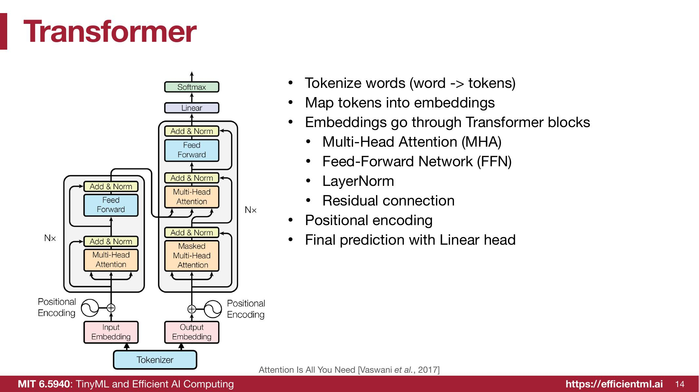
1Transformer 整体结构,推理时每一块对应什么内存T1
左图是原版论文的编码器(左塔)加解码器(右塔),现在的 LLM 只保留右塔那种「带掩码的自注意力 + FFN」堆叠 N 层。
- 推理引擎眼里这张图只有三种东西:嵌入表(词表大小 × d,查表不算乘法)、N 个一模一样的块(每块是四个注意力投影矩阵加两到三个 FFN 矩阵,这是权重大头)、最后一个线性头(d × 词表,输出每个词的分数)。
- 所有要搬进计算单元的字节,99% 是这 N 个块的权重。
- 记住这个骨架,后面 p52 的 KV 缓存公式里的「层数」就是这里的 N。
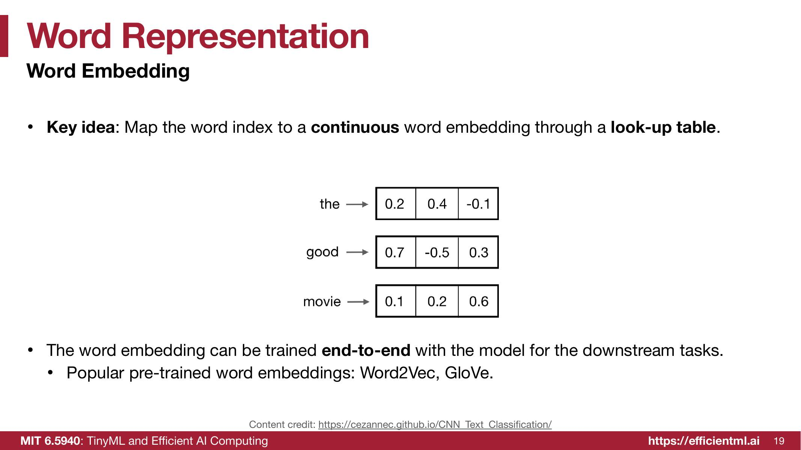
2词嵌入是查表,不是矩阵乘T1
词嵌入(word embedding,把每个 token 编号换成一个 d 维向量)在实现上是一张 词表大小 × d 的表,输入 token 编号直接取第几行。
- 所以这一步没有乘法,只有一次内存读取 d 个数。
- 但这张表本身要占内存:LLaMA 词表 32k × 4096 × 2 字节 = 256 MB(fp16),输出头再来一份同样大小。
- 对 7B 模型是零头,对 1B 以下的小模型就是可观的一块,边缘部署时常把输入嵌入和输出头共享权重(tied embedding)省一半。
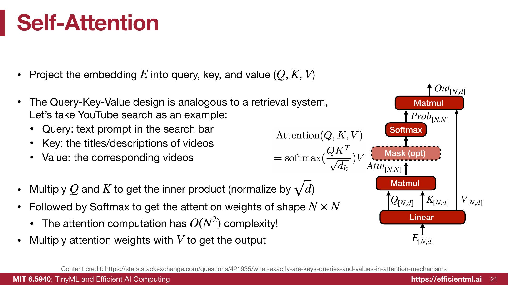
3自注意力:四个矩阵乘,中间那个 N×N 是内存杀手T1T2T5
右侧流程图从下往上看:输入 E 是 N 个 token 各 d 维,记作 [N, d];
- 经过一个 Linear 投影成 Q、K、V 三个 [N, d];
- Q 乘 K 的转置得到 Attn [N, N],每一格是「第 i 个 token 看第 j 个 token 多少」的原始分数;
- 可选加掩码,过 softmax 变成概率 Prob [N, N];
- 最后乘 V 得到输出 [N, d]。
- 打个比方,Q 是你在 YouTube 搜索框输入的文字,K 是每个视频的标题,V 是视频本身,分数高的视频被多拿一点出来混合。
- 算一下计算量。
- QKV 投影:三个 [N,d]×[d,d],共 3 × 2 × N × d² FLOPs。
- QK 转置:[N,d]×[d,N],2 × N² × d FLOPs。
- 乘 V:[N,N]×[N,d],又 2 × N² × d。
- 所以投影部分随 N 线性长,注意力部分随 N 平方长,页上写的 O(N²) 就是指后两步。
- 再算内存。
- Attn 和 Prob 两个 [N, N] 矩阵,每个头各一份。
- N = 4096 时一个头 4096² × 2 字节 = 32 MB,LLaMA-7B 有 32 个头,一层就 1 GB,N = 32k 时一层 64 GB,根本放不下。
- FlashAttention 的核心就是不把这个矩阵写回显存,分块算完直接累加到输出里。
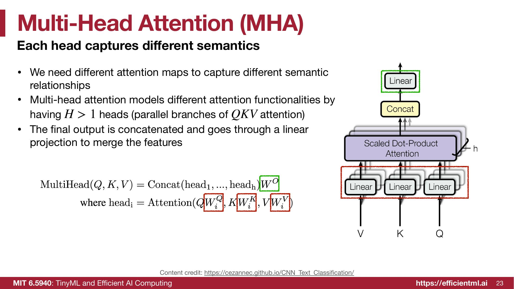
4多头注意力:把 d 切成 H 份并行算,参数量不变T1T2
多头注意力(multi-head attention,MHA,把 d 维切成 H 个小块,每块独立做一遍注意力再拼起来)。
- 右图:V、K、Q 各过 Linear 投影,分成 h 份进入 h 个并行的点积注意力,结果 Concat 拼回 d 维,再过一个 Linear(绿框 W^O)融合。
- 每个头维度 d_head = d / H,LLaMA-7B 是 4096 / 32 = 128,这个 128 就是 p52 公式里的 n_emd。
- 参数量:W^Q、W^K、W^V、W^O 四个 d × d 矩阵共 4d²,和单头完全一样,多头只是把乘法切块,不多花权重。
- 但 KV 缓存要存 H 个头各自的 K 和 V,所以 KV 缓存正比于头数,这是 MQA/GQA(p55)下手的地方。
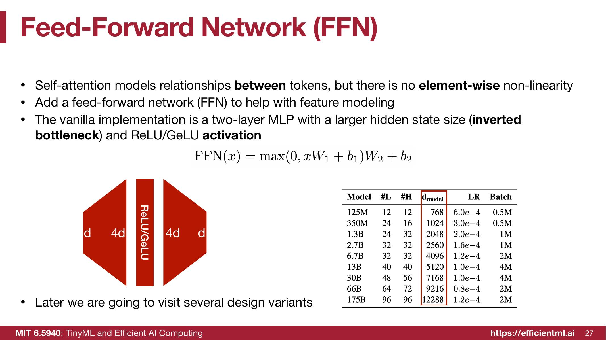
5FFN:占三分之二参数的那块,右表给了 GPT-3 各尺寸T1
FFN(feed-forward network,前馈网络,对每个 token 独立做的两层全连接)公式 FFN(x) = max(0, xW1 + b1)W2 + b2。
- 左图形状:d 先放大到 4d(倒瓶颈,inverted bottleneck),过 ReLU/GeLU,再压回 d。
- 两个矩阵 d×4d 和 4d×d 共 8d² 参数,注意力是 4d²,所以 FFN 占每层参数的三分之二。
- 右表是 GPT-3 各尺寸的配置,拿来验算「每层 12d²」:175B 那行,96 层、96 头、d = 12288,96 × 12 × 12288² = 96 × 12 × 1.51 亿 ≈ 1740 亿,正好 175B。
- 125M 那行:12 × 12 × 768² = 85M,加词表 50k × 768 ≈ 38M 共 123M,也对。
- 头维度每行都是 d / 头数 = 128(12288 / 96 = 128,768 / 12 = 64 是唯一例外)。
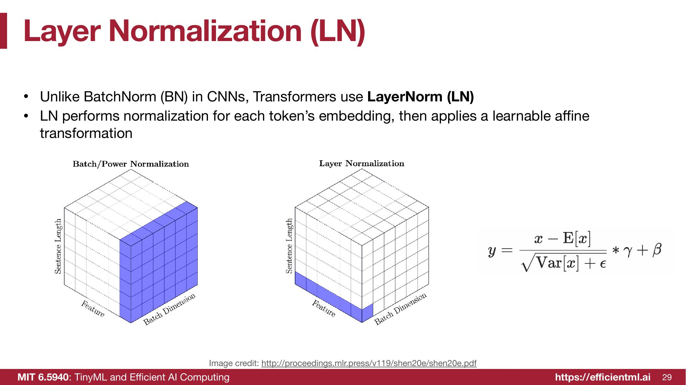
6LayerNorm:对每个 token 自己的 d 个数做归一化T1
LayerNorm(层归一化,把一个 token 的 d 维向量减均值除标准差,再乘一个可学的缩放加偏置)和 CNN 里的 BatchNorm 不同,它不跨样本,只看当前 token 自己,所以推理时 batch 为 1 也能用,不需要存运行均值。
- 计算量小(每 token 几次 d 维的加减乘),但它是一个「要读整行才能算均值」的归约操作,在 kernel 里通常和前后的矩阵乘融合掉,避免多读一次 d 维向量。
- LLaMA 用的是简化版 RMSNorm,只除均方根不减均值,少一次归约。
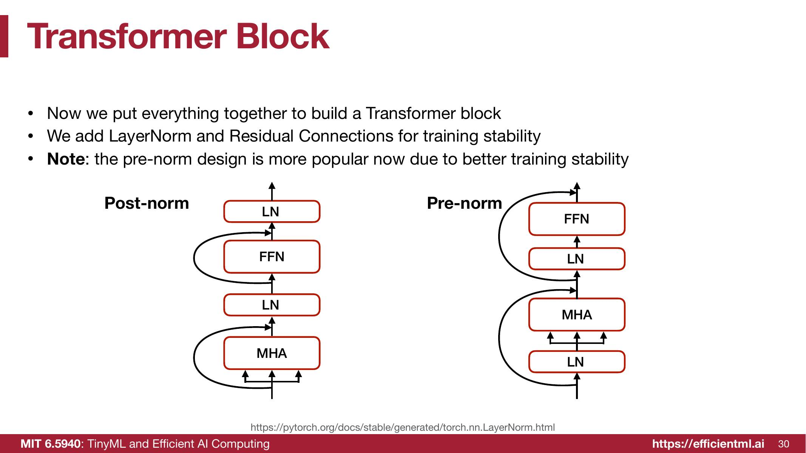
7Pre-norm 和 post-norm:现在的 LLM 都是 pre-normT1
一个 Transformer 块 = 注意力 + FFN,各带一条残差连接(residual,把输入直接加到输出上,让梯度有近路)和一个 LN。
- 左边 post-norm(原版):先 MHA,残差相加,再 LN;
- 再 FFN,残差相加,再 LN。
- 右边 pre-norm:先 LN 再 MHA,残差直接绕过 LN 相加;
- FFN 同理。
- 区别只是 LN 放在子层前还是后,pre-norm 训练更稳,LLaMA、GPT-2 以后都用它。
- 对推理引擎的意义:pre-norm 下残差流(residual stream)是一条干净的加法链,每层输入输出都是同一个 [N, d] 的缓冲区原地累加,内存布局简单。
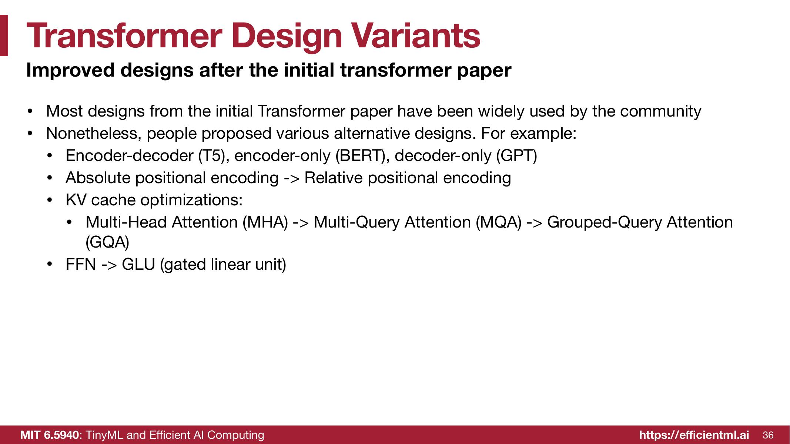
8设计变体总览:四个改动里有两个是为推理省内存T1T2
原版之后的四类改动:结构上分 encoder-decoder(T5)、encoder-only(BERT)、decoder-only(GPT);
- 绝对位置编码换成相对位置编码(RoPE,好处是能拉长上下文);
- KV 缓存优化 MHA → MQA → GQA(直接砍 KV 缓存 8 到 64 倍);
- FFN 换成 GLU(精度更好,参数量持平)。
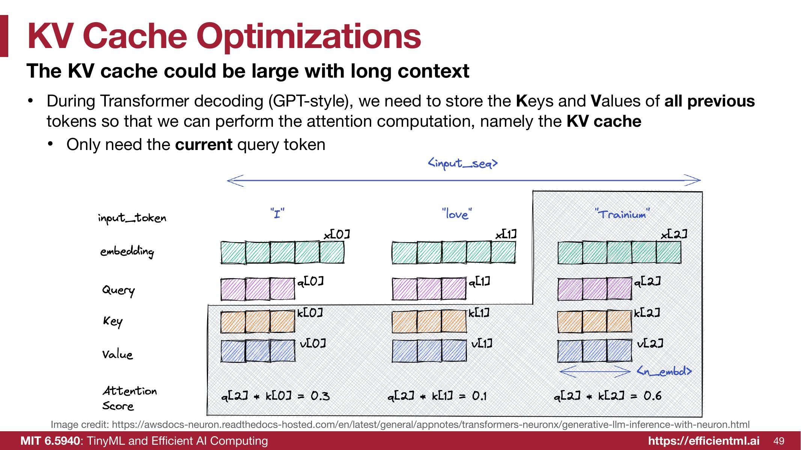
9KV 缓存是什么:新 token 的 Q 去查所有旧 token 的 K、VT2T1
手绘图:三个 token「I」「love」「Trainium」,每个有嵌入 x、查询 q、键 k、值 v。
- 生成第三个 token 之后的词时,只需要 q[2](右边高亮框),但要和 k[0]、k[1]、k[2] 全部算分数(底行 0.3、0.1、0.6),再按分数加权 v[0]、v[1]、v[2]。
- 灰色区域就是必须存着的东西:所有历史 token 的 K 和 V,这就是 KV 缓存(KV cache,把前面每个 token 算过的 K 和 V 存起来,下次不重算)。
- 为什么要存:k[0]、v[0] 只依赖 x[0] 和权重,永远不变,每步重算是纯浪费。
- 重算的代价:不存缓存,生成第 N 个 token 要对前 N 个 token 重做 QKV 投影,整段对话的计算量是 O(N²·d²);
- 存了之后每步只投影 1 个 token,整段是 O(N·d²)。
- 代价是内存:每层每 token 存 2 × 头数 × 头维度 个数,具体数字在 p52。
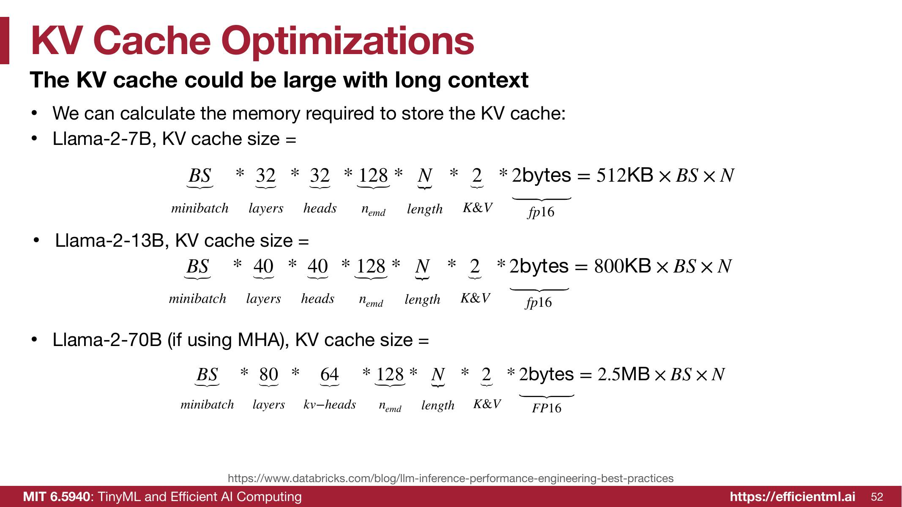
10KV 缓存公式,三个 Llama-2 尺寸逐项算T2T1
公式:KV 缓存字节数 = BS × 层数 × KV 头数 × 头维度 × N × 2 × 2 字节。
- BS 是 batch,N 是序列长度,第一个 2 是 K 和 V 各一份,第二个 2 是 fp16 每个数 2 字节。
- Llama-2-7B:32 层 × 32 头 × 128 维 = 131,072 个数,× 2(K、V)× 2 字节 = 524,288 字节 = 512 KB,每 token 每样本。
- Llama-2-13B:40 × 40 × 128 = 204,800,× 4 = 819,200 字节 = 800 KB。
- Llama-2-70B 假设用 MHA(64 个 KV 头):80 × 64 × 128 = 655,360,× 4 = 2,621,440 字节 = 2.5 MB。
- 三个数都是「每 token 每样本」,总量再乘 BS × N。
- 注意头维度三个尺寸都是 128,只有层数和头数在变,所以 KV 缓存大致随模型参数的「层数 × 隐藏维度」线性涨,而参数量随「层数 × 隐藏维度²」涨,大模型的 KV 缓存相对权重反而占比更小。
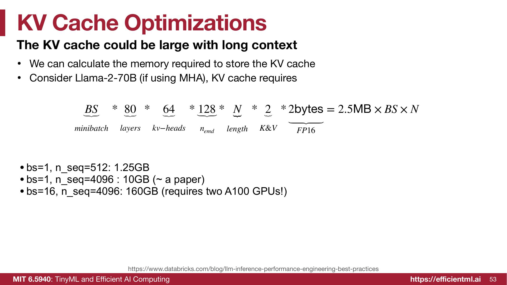
1170B 的 KV 缓存:batch 16、4k 长就 160 GB,超过两张 A100T2T1
套 p52 的 2.5 MB/token: batch 1、N = 512:2.5 MB × 512 = 1280 MB = 1.25 GB。
- batch 1、N = 4096:2.5 MB × 4096 = 10,240 MB = 10 GB(大约一篇论文的长度)。
- batch 16、N = 4096:10 GB × 16 = 160 GB,一张 A100 是 80 GB,光 KV 缓存就要两张,权重 140 GB 还没算。
- 这就是为什么服务端 batch 开不大、本地单用户也必须限制上下文。
- 对 Alpaca 这种「自己的内存硬件」来说,KV 缓存是除权重之外第二大客户,而且它随对话长度动态增长,不像权重是固定的。
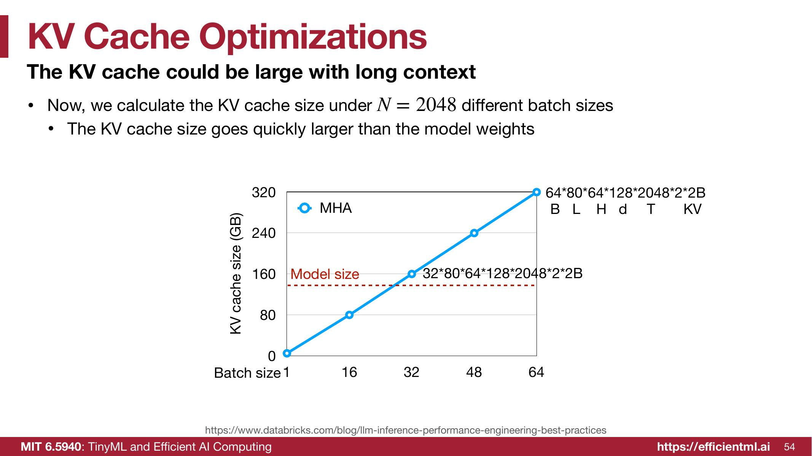
12图:KV 缓存随 batch 线性涨,batch 约 28 时超过模型权重T2T1
横轴 batch size 1 到 64,纵轴 KV 缓存 GB,固定 N = 2048,模型 Llama-2-70B 用 MHA。
- 蓝线:batch 64 时 64 × 80 × 64 × 128 × 2048 × 2 × 2 B = 320 GB;
- batch 32 时 160 GB;
- batch 16 时 80 GB。
- 红色虚线「Model size」在 140 GB 附近,就是 70B × 2 字节。
- 蓝线在 batch 约 28 处穿过虚线(2.5 MB × 2048 = 5 GB/样本,140 / 5 = 28),从这里起 KV 缓存比权重还大。
- 图上要看的点:蓝线是严格过原点的直线,说明 KV 缓存和 batch 成正比,没有任何复用;
- 权重是水平线,和 batch 无关。
- 这也是 batching 的根本逻辑:权重读一次给 batch 个样本用,摊薄带宽成本;
- 但 KV 缓存无法摊薄,batch 越大它越占内存,最后限制 batch 的是 KV 缓存而不是权重。
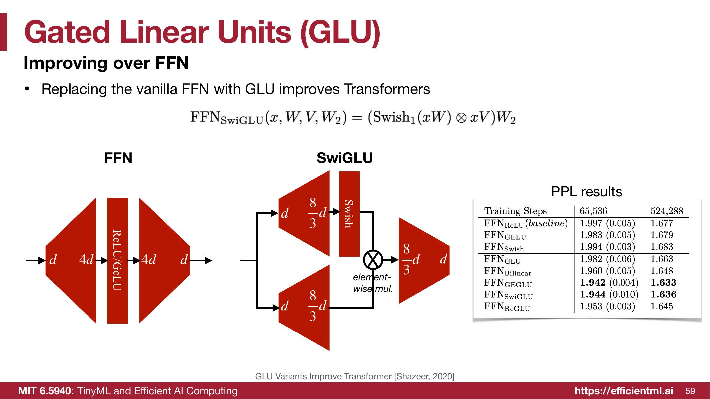
13SwiGLU:三个矩阵、8/3 d 的隐藏层,参数量和原 FFN 一样T1
公式 FFN_SwiGLU(x) = (Swish(xW) ⊗ xV) W2,⊗ 是逐元素乘。
- 左图原 FFN:d → 4d → ReLU → 4d → d,两个矩阵。
- 右图 SwiGLU:x 分两路,一路过 W 到 8/3 d 再过 Swish,另一路过 V 到 8/3 d 不加激活,两路逐元素相乘(门控,gate,一路决定另一路哪些通道开多大),再过 W2 压回 d。
- 算参数:原 FFN 两个矩阵 d × 4d 共 8d²。
- SwiGLU 三个矩阵各 d × (8/3)d,共 3 × 8/3 × d² = 8d²,正好持平,这就是 8/3 这个奇怪数字的来历。
- 右表困惑度(perplexity,PPL,越低越好):训练 524k 步后 ReLU 基线 1.677,SwiGLU 1.636,GEGLU 1.633,免费拿到的提升。
- 对推理引擎:FFN 从 2 个 GEMM 变成 3 个 GEMM 加 1 次逐元素乘,W 和 V 通常拼成一个 d × (16/3)d 的矩阵一次乘完再切开,逐元素乘和 Swish 融合进 kernel。
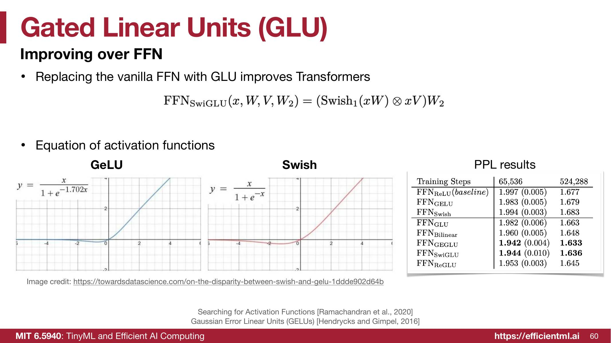
14GeLU 和 Swish 的公式T1
GeLU ≈ x / (1 + e^{-1.702x}),Swish = x / (1 + e^{-x}),两条曲线都是「负半轴压到接近 0 但不截断,正半轴近似恒等」,比 ReLU 平滑。
- 推理上这两个激活比 ReLU 贵(要算一次 exp 和一次除法),但相对矩阵乘可以忽略;
- 边缘设备上常用查表或多项式近似。
- 另一个推理影响:ReLU 会产生大量精确的 0,可以做激活稀疏跳过计算,GeLU/Swish 没有精确 0,这条路走不通。
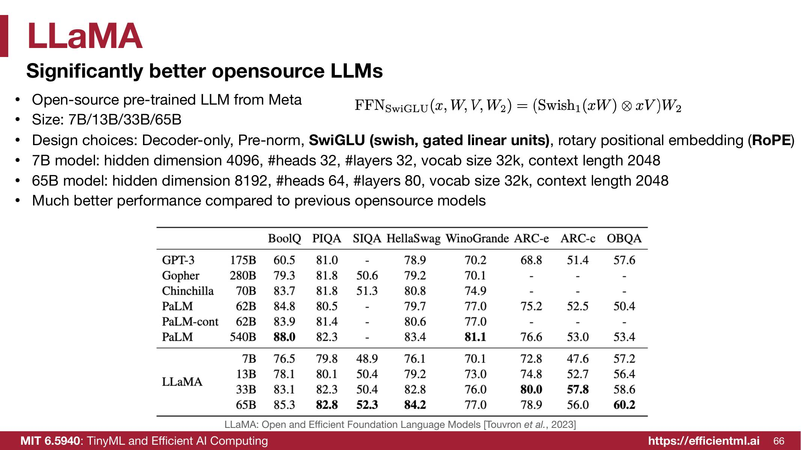
15LLaMA 配置:算 7B 和 65B 的权重内存和参数量T1T2
设计选择:decoder-only、pre-norm、SwiGLU、RoPE,这是现在开源模型的标准配方。
- 7B:d = 4096,32 头,32 层,词表 32k,上下文 2048。
- 65B:d = 8192,64 头,80 层,词表 32k,上下文 2048。
- 验算参数量。
- 7B:每层 12 × 4096² = 201M,32 层 6.44B,嵌入 32k × 4096 × 2 = 268M,合计约 6.7B。
- 65B:12 × 8192² = 805M,80 层 64.4B,嵌入 32k × 8192 × 2 = 524M,合计约 65B。
- 权重内存 fp16:7B 约 13.5 GB,65B 约 130 GB;
- int4:3.4 GB 和 32.5 GB。
- 头维度都是 4096/32 = 8192/64 = 128。
- 这两组数要背,面试现场从「隐藏维度和层数」推出「多少 GB 能跑」就靠它。
- 下表是在常识问答上超过 GPT-3 175B、PaLM 62B,意思是「小模型喂多数据」可行,配合 p70。
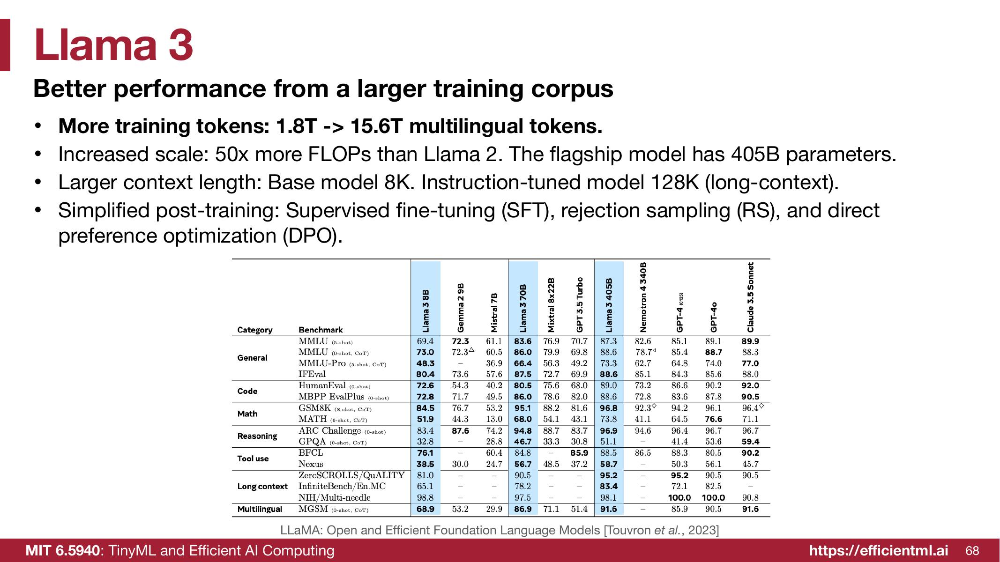
16Llama 3:405B 参数、128k 上下文T1T2
训练 15.6T token(是 Llama 2 的近 8 倍),算力是 Llama 2 的 50 倍,旗舰 405B 参数。
- 上下文:基座 8k,指令版 128k。
- 推理账:405B fp16 权重 810 GB,int4 也要 200 GB,单机跑不了。
- 128k 上下文下即使用 GQA(405B 是 128 查询头、8 KV 头、头维度 128、126 层),KV 缓存每 token = 126 × 8 × 128 × 2 × 2 B ≈ 516 KB,128k 长就是 66 GB,单用户都放不下一张 80 GB 卡。
- 这就是长上下文时代 KV 缓存量化、卸载到 CPU 内存等技术的动机。
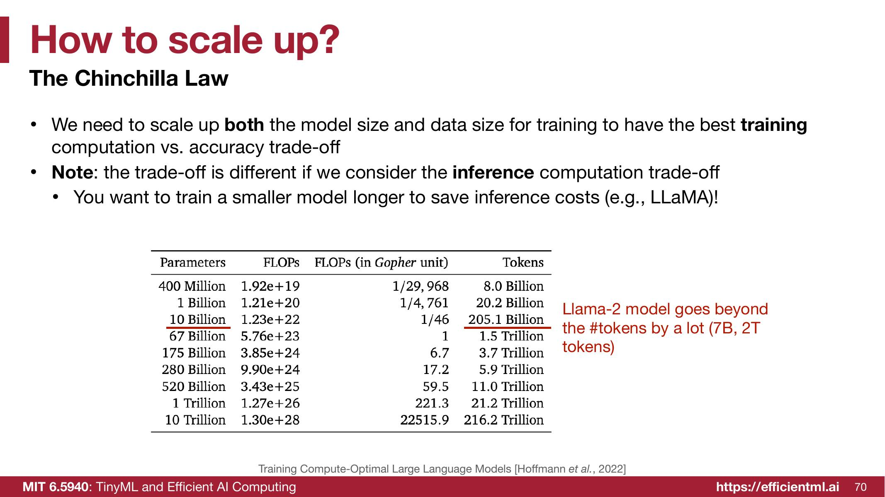
17Chinchilla:训练最优 vs 推理最优T1
表格给出每个参数量对应的「训练最优」token 数:1B 配 20B token,10B 配 205B token,67B 配 1.5T,大致是参数量的 20 倍。
- 红字:Llama-2-7B 用了 2T token,是 Chinchilla 建议(约 140B)的 14 倍。
- 为什么故意超:Chinchilla 只优化训练算力,但模型一旦部署,推理成本正比于参数量,每多一个用户就多搬一遍权重。
- 小模型喂更多数据,训练贵一次,推理便宜一辈子。
- 对 Alpaca 这种卖本地推理的公司,这页解释了为什么市面上 7B、8B 模型越来越强,而且会继续强。
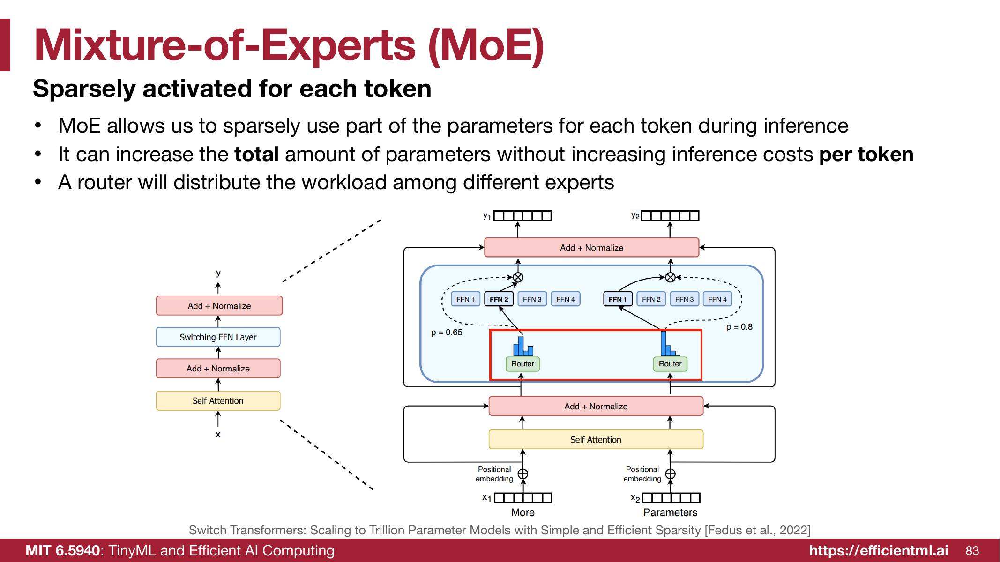
18MoE:总参数变多,每个 token 用到的不变T8T1
混合专家(Mixture-of-Experts,MoE,把 FFN 复制成多份「专家」,每个 token 只走其中一两份)。
- 左图:一个块里 FFN 换成 Switching FFN Layer。
- 右图展开:x1、x2 两个 token 过自注意力后各进一个路由器(router,一个小的 d × 专家数 的线性层加 softmax,给出走哪个专家的概率),x1 以 p = 0.65 走 FFN 2,x2 以 p = 0.8 走 FFN 1,输出乘以这个概率再加回残差。
- 推理账:4 个专家的 MoE,FFN 参数是密集模型的 4 倍,但每个 token 的 FFN 计算量和密集模型一样。
- 然而权重内存是 4 倍,因为推理时不知道下一个 token 会路由到哪里,所有专家都得在内存里。
- 所以 MoE 是「算力便宜、内存贵」的结构,正好和本地部署的瓶颈相反,Mixtral 8x7B 总参数 47B、每 token 激活 13B,fp16 要 94 GB 内存却只有 13B 模型的速度。
Stanford CS336 第 10 讲 推理
19开场:什么是推理,这讲的路线图T1
推理(inference)就是模型固定不动,给提示(prompt)生成回答。
- 这讲分四块:先搞懂推理的负载特点(为什么慢在哪),再讲「有损的捷径」(缩 KV 缓存、换架构、量化、剪枝),再讲「无损的捷径」(投机采样),最后讲动态流量怎么调度(连续批处理、PagedAttention)。
- 讲师在有损和无损之间夹了两条配方:从头训一个更快的架构;
- 或者先定义更快的架构,用原模型的权重初始化,再用蒸馏(distillation,让小模型模仿大模型的输出分布)把它修好。
- 整讲的一句话总结:推理和训练的性质完全不同,训练是算力受限,推理是内存受限并且流量动态。
20推理出现在哪里,三个指标T1T4
推理不只是聊天机器人,还包括模型评测、测试时计算(thinking 模型要生成大量中间 token)、强化学习里的采样,这些都要跑大量 decode。
- 训练是一次性成本,推理是重复几百万次的成本,所以 OpenAI 一天生成 1000 亿 token、Cursor 一天生成 10 亿行代码,省 10% 推理成本就是真金白银。
- 三个指标要分清:首 token 时间(TTFT, time-to-first-token,用户按下回车到看见第一个字),每 token 延迟(latency,秒/token,决定字出来的速度),吞吐(throughput,token/秒,整台机器每秒总共吐多少字,批处理场景看这个)。
- 训练能一次看到整句的所有 token,序列维度上可以并行(一次大矩阵乘);
- 推理必须一个字一个字生成,序列维度没法并行,所以算力很难喂饱。
- 常见推理框架:vLLM(伯克利)、TensorRT-LLM(NVIDIA)、TGI(Hugging Face);
- Alpaca 的推理引擎属于同一赛道,只是跑在自家硬件上。
21复习 Transformer 的形状约定T1
讲师约定了四个简化:F = 4D(前馈层中间维度是隐藏维度 4 倍;Llama 用 SwiGLU 实际约 3.5D,Llama-3.1-8B 是 14336/4096 = 3.5),D = N·H(隐藏维度 = 头数 × 每头维度,4096 = 32 × 128),N = K·G(查询头数 = KV 头数 × 每组查询头数,32 = 8 × 4),S = T。
- 一次前向传播的 FLOPs ≈ 6 × (B·T) × 参数量,其中 6 = 前向 2 + 反向 4,推理只要前向,所以每个 token 大约 2 × 参数量 FLOPs。
- Llama-3.1-8B 每生成 1 个 token 约 2 × 8.03e9 = 16 GFLOP。
- 记住这个 2 倍,后面所有算力估算都靠它。
22算术强度:一次矩阵乘搬多少字节、算多少 FLOPT1
打比方:GPU 像一个厨师,HBM 是冰箱,算术强度(arithmetic intensity)就是每从冰箱拿 1 字节食材能做几道菜(FLOP),拿得多做得少就是在等冰箱门。
- 算 X(B×D)乘 W(D×F):读 X 2BD 字节,读 W 2DF 字节,算 2BDF FLOP,写 Y 2BF 字节(bf16 每个数 2 字节,乘加各算 1 FLOP 所以是 2)。
- 强度 = 2BDF ÷ (2BD + 2DF + 2BF),当 B 远小于 D 和 F 时,分母里 2DF 占绝对主导,强度 ≈ B。
- 用 Llama-3.1-8B 的 D=4096、F=14336 验算:B=1 时强度 = 2×4096×14336 ÷ (2×4096 + 2×4096×14336 + 2×14336) ≈ 0.9998 ≈ 1;
- B=64 时 ≈ 63。
- H100 自己的强度是 989e12 ÷ 3.35e12 ≈ 295 FLOP/字节,意思是它每秒能算的 FLOP 是每秒能搬的字节数的 295 倍。
- 你的算子强度高于 295 就是算力受限(compute-limited,好事,说明算力在满转),低于 295 就是内存受限(memory-limited,算力在等数据)。
- 所以 bf16 矩阵乘要 B > 295 才能喂饱 H100;
- B=1 是矩阵乘向量,读了整个 D×F 的权重只做 2DF 次运算,强度 1,比 295 差 300 倍,这正是逐 token 生成的处境。
23KV 缓存的由来,MLP 层在 prefill 和 decode 的强度T1T2
朴素的推理是每生成一个字就把全部历史重新喂一遍 Transformer,一次前向是 O(T²),生成 T 个字就是 O(T³)。
- 观察:前缀的计算每次都一样,可以存起来,这就是 KV 缓存(KV cache,把每个已处理 token 在每一层每个 KV 头算出来的 K 向量和 V 向量存进 HBM,下一步直接查,不重算),每条序列、每个 token、每层、每个 KV 头存一个 H 维向量。
- 于是推理分两阶段:prefill(把提示一次性编码,T=S,和训练一样可并行)和 generation/decode(一次生成一个 token,T=1,串行)。
- MLP 层的账:读 X 2BTD,读 Wup、Wgate、Wdown 三个矩阵共 6DF,算 3 次矩阵乘共 6BTDF FLOP,写中间结果和输出共 4BTF + 2BTD,合计字节 = 4BTD + 4BTF + 6DF。
- B·T 远小于 D、F 时,强度 ≈ B·T。
- Prefill 时 T=S,比如 B=1、S=1024,强度 1024 > 295,算力受限,好。
- Decode 时 T=1,强度 = B,也就是同时服务的请求数,一台机器很难长期凑够 295 条并发请求,所以 decode 的 MLP 内存受限。
- 用 Llama-3.1-8B 具体算:B=1、T=1 时 MLP 强度 ≈ 1.0,B=64 时 ≈ 63,都远低于 295。
24注意力层的强度,为什么加批次救不了它T1T2
注意力层(按 FlashAttention 那样只算矩阵乘部分)的账:读 Q 2BTD、读 K 和 V 各 2BSD,算 QKᵀ 2BSTD FLOP、算 softmax(A)·V 2BSTD FLOP,写 Y 2BTD,合计 FLOP = 4BSTD,字节 = 4BSD + 4BTD。
- 强度 = ST/(S+T),B 约掉了,所以批次大小对注意力层的强度完全没影响。
- Prefill 时 T=S,强度 = S/2,S=1024 就是 512 > 295,算力受限。
- Decode 时 T=1,强度 = S/(S+1),S=1024 就是 0.999,永远小于 1,内存受限,而且没有任何批次能救。
- 原因:MLP 的权重 Wup、Wgate、Wdown 所有序列共用,64 条序列读一次权重用 64 次;
- 注意力里每条序列有自己的 K、V(就是它自己的 KV 缓存),64 条序列就要读 64 份不同的 KV,读的字节和算的 FLOP 同比例涨。
- 补一句讲师没展开的:用了 GQA 以后 K、V 的字节从 2BSD 变成 2BS·K·H,Llama-3.1-8B 的 decode 注意力强度能提到约 N/K = 4,好了 4 倍但离 295 还远。
- 总结:prefill 算力受限,decode 内存受限;
- decode 里 MLP 强度 = B(靠并发请求救),注意力强度 ≈ 1(靠缩 KV 缓存救)。
25算参数量、KV 缓存、延迟、吞吐的四条公式T1T2
参数量 = 2VD(输入嵌入和输出头)+ 3DFL(每层三个 MLP 矩阵)+ (2DNH + 2DKH)L(每层 Q 和 O 两个 D×NH 矩阵,K 和 V 两个 D×KH 矩阵)。
- Llama 2 13B 代入:2×32000×5120 + 3×5120×13824×40 + (2×5120×40×128 + 2×5120×40×128)×40 = 13.0B,对上了;
- Llama-3.1-8B 代入得 8.03B,也对上了。
- 推理用 bf16 存权重,每参数 2 字节,不用存梯度和优化器状态(训练时 fp32 参数加 Adam 两个状态要 16 字节/参数,推理只要 2 字节,这是推理能在小机器跑的根本原因)。
- 每条长度 S 的序列的 KV 缓存 = S × (K·H) × L × 2(K 和 V)× 2 字节。
- 总显存 = B × KV 缓存 + 权重。
- 延迟 = 总显存 ÷ 带宽(decode 每一步都要把权重和全部 KV 缓存从 HBM 读一遍,这是内存受限的直接后果)。
- 吞吐 = B ÷ 延迟(一步同时吐 B 个 token)。
26延迟和吞吐的取舍:B = 1 / 64 / 256 算一遍T1T2T4
假设算力和搬运完美重叠、忽略其他开销,算 Llama 2 13B 在一张 H100 上的理论极限。
- B=1:显存 26.0 GB 权重 + 0.84 GB KV = 26.9 GB,延迟 26.9e9 ÷ 3.35e12 = 8.0 ms,吞吐 125 token/s。
- B=64:显存 26.0 + 64×0.84 = 79.7 GB(刚好塞进 80 GB),延迟 23.8 ms,吞吐 64 ÷ 0.0238 = 2689 token/s,吞吐涨了 21 倍,每个用户的延迟变差 3 倍。
- B=256:显存 241 GB 根本放不下,就算放得下延迟 71.9 ms,吞吐 3562 token/s,只比 B=64 多 32%,收益递减,因为 KV 缓存字节已经超过权重字节,再加批次,搬运量几乎按比例涨。
- 同样算 Llama-3.1-8B:B=1 是 16.2 GB、4.8 ms、207 token/s;
- B=64 是 24.6 GB、7.4 ms、8698 token/s;
- 因为有 GQA,KV 小,B=64 延迟只差 1.5 倍,吞吐涨 42 倍。
- 取舍规律:批次小延迟好吞吐差,批次大吞吐好延迟差。
- 最简单的并行是开 M 个模型副本,延迟不变吞吐乘 M;
- 难的是把模型和 KV 缓存切到多卡上(tensor parallel 等,见 scaling book)。
- TTFT 基本就是 prefill 的时间,所以 prefill 用小批次保首字快,decode 用大批次保吞吐。
27总结T1
推理重要(真实使用、评测、强化学习采样都靠它),性质和训练不同(内存受限、流量动态)。
- 手段分四类:改架构(GQA、MLA、滑窗、SSM),量化,剪枝和蒸馏,投机解码;
- 调度上借操作系统的思想(投机执行、分页)。
- 讲师最后一句:新架构的改进空间最大。
MIT 6.5940 第 13 讲 LLM 部署
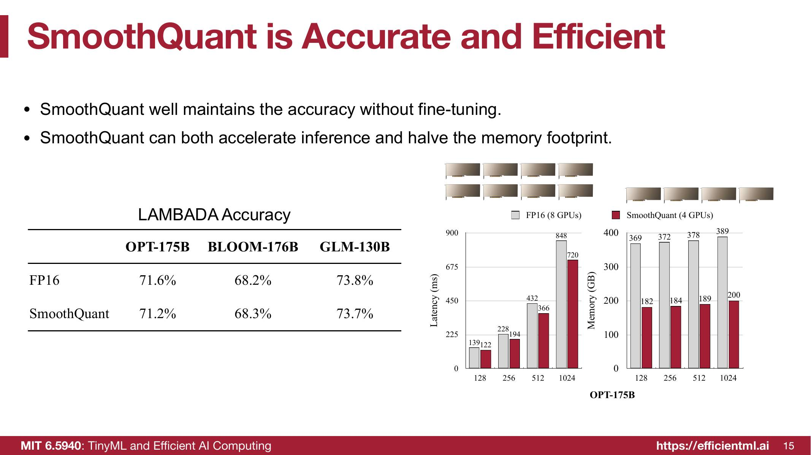
28结果:精度不掉,延迟降,显存减半,GPU 数减半T3T1
左表是 LAMBADA 准确率:OPT-175B FP16 71.6% 对 SmoothQuant 71.2%,BLOOM-176B 68.2% 对 68.3%,GLM-130B 73.8% 对 73.7%,误差在 0.4 个点以内,而且不需要微调。
- 右边两张柱状图是 OPT-175B,横轴是序列长度 128/256/512/1024。
- 灰色 FP16 要 8 张 GPU,红色 SmoothQuant 只要 4 张。
- 延迟:1024 长度时 848 ms 降到 720 ms(快 1.18 倍),而且是用一半的 GPU 做到的。
- 显存:389 GB 降到 200 GB,几乎正好一半,因为 175B × 2 字节 = 350 GB 变成 175B × 1 字节 = 175 GB,剩下是 KV 和激活。
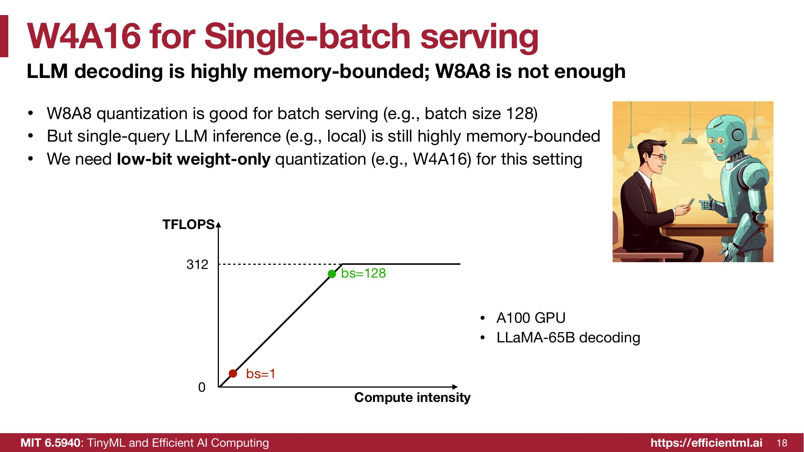
29单 batch 推理是带宽受限的,W8A8 救不了,要 W4A16T1T3T6
这是一张简化的屋顶线图(roofline,横轴是计算强度,即每搬一个字节能做几次乘加;纵轴是实际达到的算力;左边斜线是带宽上限,右边水平线是算力上限)。
- A100 的算力顶是 312 TFLOPS。
- 绿点 bs=128 落在斜线和顶线的拐角,说明批量大时算力刚好用满,这时 W8A8 把 INT8 算力翻倍很有用。
- 红点 bs=1 落在斜线最左下角,离顶还差一百多倍,这时 GPU 大部分时间在等权重从显存过来,算力再强也没用。
- 所以本地单用户推理(Alpaca 的场景)唯一有效的办法是减少要搬的字节数,也就是把权重压到 4 bit,激活保持 16 bit(W4A16),因为激活在 bs=1 时只有一行,搬起来不费事。
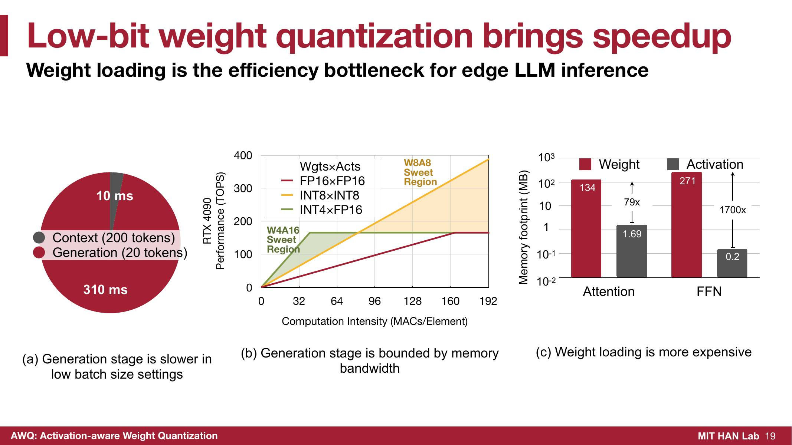
30三张图证明:边缘推理的瓶颈是读权重T1T6
图 (a) 饼图:处理 200 个 token 的上下文(prefill,一次并行算完)只花 10 ms,生成 20 个 token(decode,一个一个来)花 310 ms。
- 算一下:prefill 每 token 0.05 ms,decode 每 token 15.5 ms,差 300 倍,因为 decode 每出一个字要把整个模型权重重读一遍。
- 图 (b) RTX 4090 屋顶线,横轴是计算强度(MAC/元素),纵轴是 TOPS。
- 红线 FP16×FP16 在强度约 160 处到顶 165 TOPS;
- 黄线 INT8×INT8 顶更高(330 TOPS);
- 绿线 INT4×FP16 的顶和 FP16 一样(因为算还是用 FP16 算),但拐点提前到约 40,因为一个权重只占 0.5 字节,同样带宽下每秒能搬 4 倍的权重。
- bs=1 时强度接近 1,落在最左边,绿线在那里比红线高 4 倍。
- 图 (c) 对数坐标的内存占用:注意力层权重 134 MB 对激活 1.69 MB(79 倍),FFN 权重 271 MB 对激活 0.2 MB(上千倍)。
- 结论:激活根本不值得量化,权重才是大头。
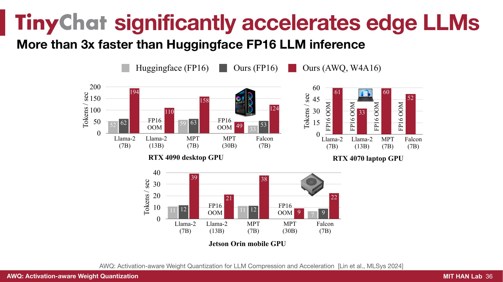
31结果:三种边缘 GPU 上比 HuggingFace FP16 快 3 倍以上T6T1
三张图,纵轴都是 token/s,三根柱分别是 HuggingFace FP16(浅灰)、TinyChat 自家的 FP16 实现(深灰)、TinyChat AWQ W4A16(红)。
- RTX 4090 桌面卡:Llama-2-7B 52 → 62 → 194,也就是光靠更好的 FP16 kernel 只快 1.2 倍,加上 INT4 再快 3 倍,总共 3.7 倍。
- Llama-2-13B 和 MPT-30B 在 FP16 下 OOM(13B × 2 B = 26 GB > 24 GB 显存),INT4 分别跑 110 和 49 token/s。
- RTX 4070 笔记本卡只有 8 GB,所有 FP16 模型都 OOM(7B 要 14 GB),INT4 的 7B 能跑 61 token/s。
- Jetson Orin:7B 11 → 12 → 39,3.5 倍。
- 规律:INT4 让权重小 4 倍,decode 带宽受限,所以接近 4 倍提速,扣掉反量化和其他开销实际 3 倍多。
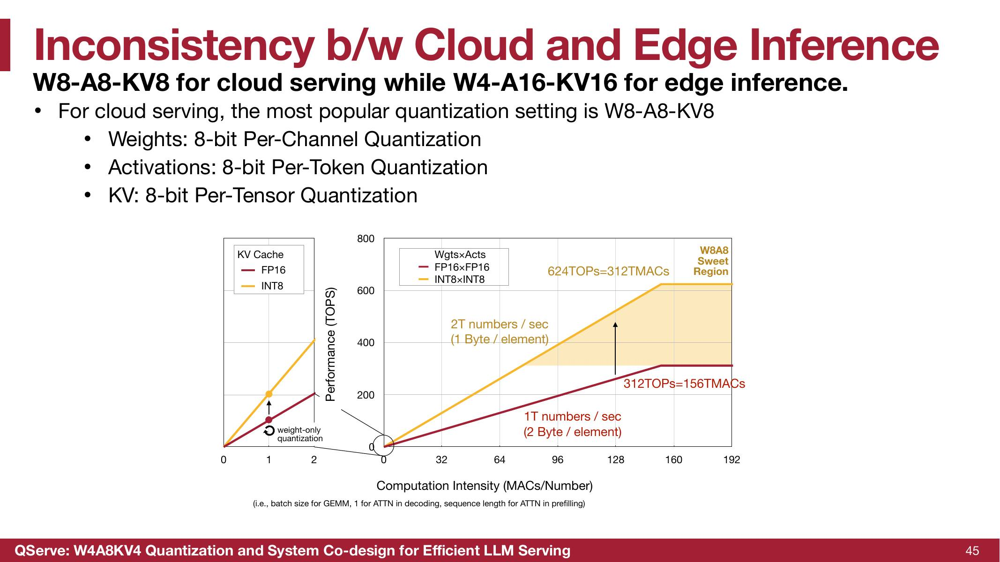
32云端用 W8A8KV8:屋顶线上看 INT8 为什么在大 batch 时赢T1T3T4
先看三个名词:权重逐通道(per-channel,每个输出通道一个 Δ)、激活逐 token(per-token,每一行一个 Δ,运行时动态算)、KV 逐张量(per-tensor,整个 K 或 V 一个 Δ)。
- 右图是 A100 屋顶线,横轴计算强度(MAC/数),纵轴 TOPS。
- 红线 FP16×FP16:带宽 2 TB/s,FP16 每个数 2 字节,每秒搬 1T 个数,峰值 312 TOPS = 156 TMAC/s,转折点 156 MAC/数。
- 黄线 INT8×INT8:每个数 1 字节,每秒搬 2T 个数,峰值 624 TOPS = 312 TMAC/s,斜率翻倍、顶也翻倍,转折点还是 156。
- 所以强度大(大 batch GEMM)时 INT8 比 FP16 快 2 倍,这是「W8A8 甜区」。
- 左边小图是把横轴 0 到 2 放大:decode 阶段的注意力计算强度是 1(每个 KV 只用一次),只能靠斜线,KV 从 FP16 换成 INT8 斜率翻倍,直接快 2 倍,这叫「weight-only quantization」方向的垂直抬升。
- 横轴下的注释:计算强度在 GEMM 里就是 batch size,在 decode 注意力里是 1,在 prefill 注意力里是序列长度。
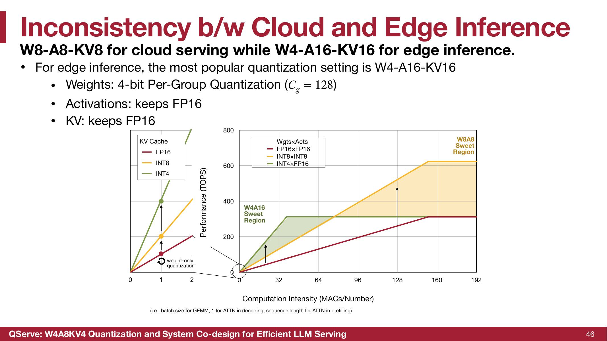
33边缘用 W4A16KV16:INT4 权重把转折点提前到 39T1T3T6
边缘设置:权重 4 bit 分组量化(每组 C_g = 128 个),激活和 KV 都保持 FP16。
- 绿线 INT4×FP16:计算仍是 FP16 Tensor Core,所以顶和红线一样是 312 TOPS;
- 但权重每个只有 0.5 字节,每秒能搬 4T 个,斜率是 FP16 的 4 倍,转折点 156/4 = 39 MAC/数。
- 在强度 1 到 39 这段「W4A16 甜区」,绿线比黄线(INT8)还高,这就是为什么单用户本地推理要用 W4A16 而不是 W8A8。
- 超过 39 以后绿线被顶住,黄线继续往上到 624,大 batch 时 W8A8 反超。
- 左边小图 KV 缓存 INT4 的斜率是 FP16 的 4 倍。
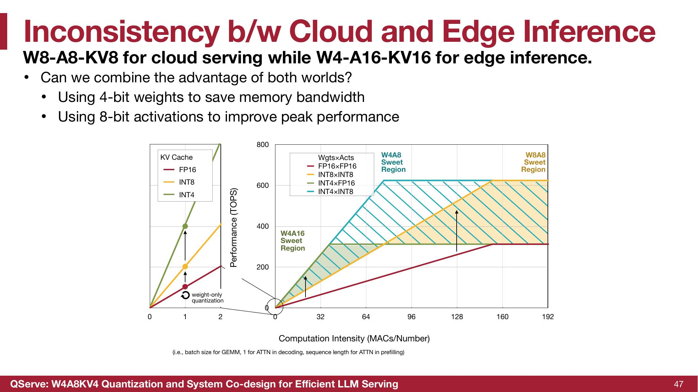
34两全其美:W4A8,4 bit 权重省带宽、8 bit 激活用 INT8 算力T1T3
青色线 INT4×INT8:权重 0.5 字节所以斜率和绿线一样陡;
- 计算用 INT8 Tensor Core,顶是 624 TOPS;
- 转折点 = 312 TMAC/s ÷ 4T 数/s = 78 MAC/数。
- 于是青线在强度 39 到 156 之间同时高于绿线(被 312 顶住)和黄线(斜率低),这就是「W4A8 甜区」(斜线阴影区域)。
- 这是 QServe 的设计目标:中等 batch 的云端服务,既要省带宽又要用满 INT8 算力。
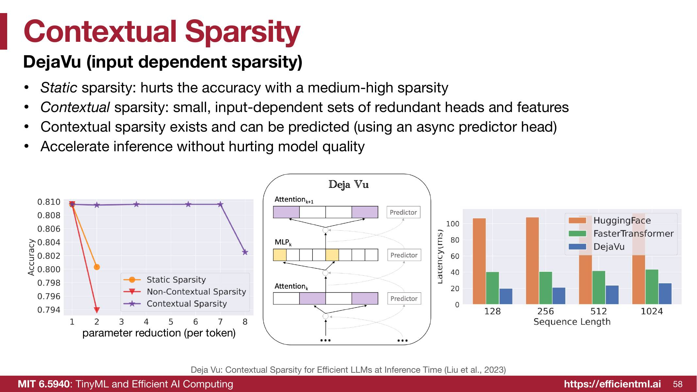
35DejaVu 上下文稀疏:每个 token 只激活一小部分头和神经元T8T1
静态稀疏(static sparsity,对所有输入剪同一批权重)在中高稀疏度下伤精度;
- 上下文稀疏(contextual sparsity,根据当前输入动态决定这一层用哪些注意力头和 MLP 神经元)不伤精度。
- 左图横轴是每个 token 的参数削减倍数,纵轴准确率:紫色上下文稀疏到 7 倍仍是 0.81,8 倍才掉到 0.802;
- 橙色静态稀疏 2 倍就掉到 0.80。
- 中图:用一个小的预测器(predictor)在算第 k 层时异步预测第 k+1 层要哪些头和神经元,只加载这些权重。
- 右图是 OPT-175B 的延迟:HuggingFace 约 110 ms,FasterTransformer 约 40 ms,DejaVu 约 20 ms。
- 和 Alpaca 的关系:decode 是带宽受限,少读一半权重就快一倍,上下文稀疏就是在带宽上做文章。
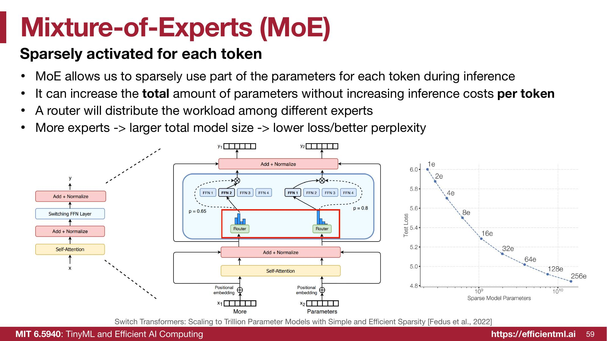
36MoE:参数总量大,每个 token 只走一部分T8T1
混合专家(Mixture of Experts,把 FFN 复制成多份「专家」,一个路由器(router)给每个 token 挑一两个专家),总参数可以很大,但每个 token 的计算量只相当于一个小模型。
- 中图:两个 token x1 和 x2,路由器给 x1 以 p=0.65 选 FFN2,给 x2 以 p=0.8 选 FFN1,输出乘上路由概率再加回去。
- 右图横轴稀疏模型参数量(对数),纵轴测试损失,1 个专家 6.0 一路降到 256 个专家 4.85,专家越多越好。
- 对推理的影响有两面:算力上每个 token 便宜;
- 但内存上所有专家都要装进显存(Mixtral-8x7B 总共 47B 参数,FP16 要 94 GB,每个 token 只用 13B),而且 batch 小的时候各 token 选的专家不同,权重读取量反而接近稠密大模型。
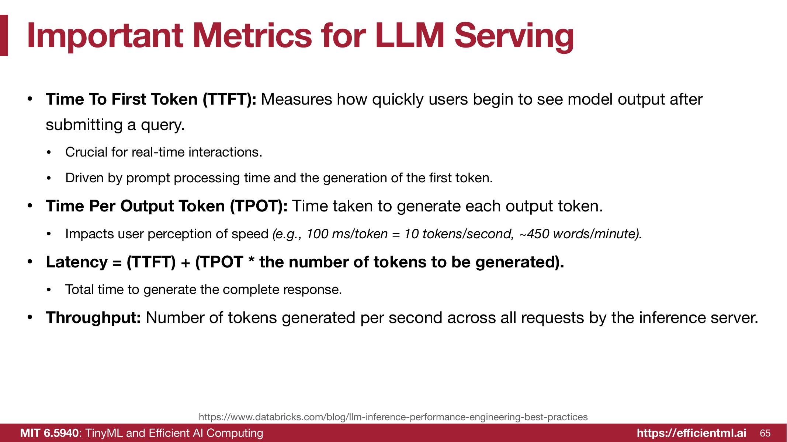
37推理服务的四个指标T4T1
TTFT(time to first token,首字延迟):用户按下回车到看见第一个字,取决于 prefill 时间,也就是提示词越长越慢,是算力受限的。
- TPOT(time per output token,每字间隔):之后每个字的间隔,取决于 decode,是带宽受限的。
- 例子:100 ms/token = 10 token/s,一个英文 token 约 0.75 个词,10 × 60 × 0.75 = 450 词/分钟,比人读得快。
- 延迟 = TTFT + TPOT × 输出 token 数。
- 吞吐(throughput):整台服务器每秒给所有用户总共生成多少 token。
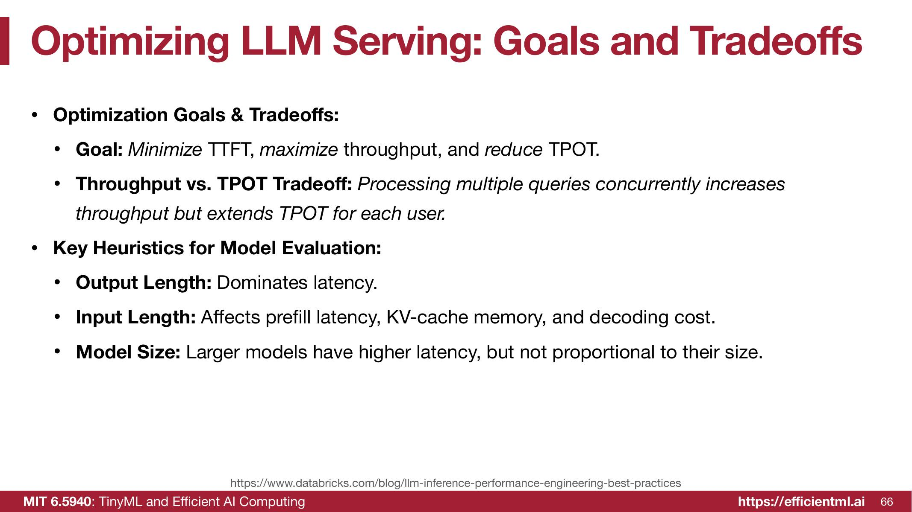
38优化目标和权衡T4T1
目标:TTFT 最小、吞吐最大、TPOT 最小。
- 吞吐和 TPOT 是矛盾的:batch 越大,每次读一遍权重服务越多用户,吞吐涨,但每个用户每个字要等整个 batch 算完,TPOT 变长。
- 三条经验:输出长度决定总延迟(decode 一个字一个字来);
- 输入长度影响 prefill 时间、KV 缓存内存和每步 decode 时注意力要读的 KV 量;
- 模型大一倍延迟不会正好大一倍,因为小模型在 bs=1 时更难把带宽用满。
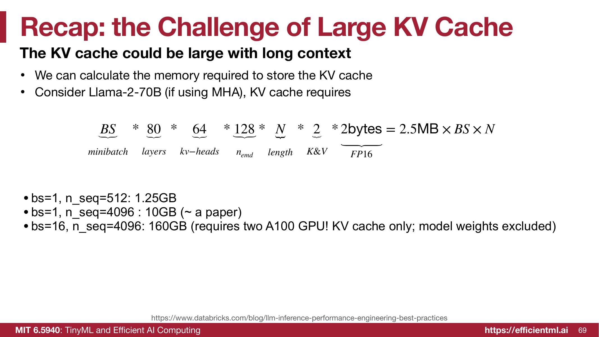
39KV 缓存算多大:Llama-2-70B 每个 token 2.5 MBT2T1
公式:BS × 层数 × KV 头数 × 头维度 × N × 2(K 和 V)× 2 字节(FP16)。
- 代入 Llama-2-70B 若用 MHA:80 层 × 64 头 × 128 维 = 655,360 个数,× 2(K 和 V)= 1,310,720 个数,× 2 字节 = 2,621,440 字节 = 2.5 MiB,每个 token。
- bs=1、512 长度:2.5 MB × 512 = 1.28 GB,幻灯片写 1.25 GB(按 1 GB = 1024 MB)。
- 4096 长度:10 GB,相当于一篇论文的长度。
- bs=16、4096 长度:160 GB,光 KV 缓存就要两张 80 GB 的 A100,还没算 140 GB 的权重。
- 两个补充面试会问:真实 Llama-2-70B 用 GQA(grouped-query attention,多个 query 头共用一组 K、V 头),只有 8 个 KV 头,所以是 2.5 / 8 ≈ 0.31 MB/token,这就是 GQA 的意义;
- KV 压到 INT4 再除以 4。
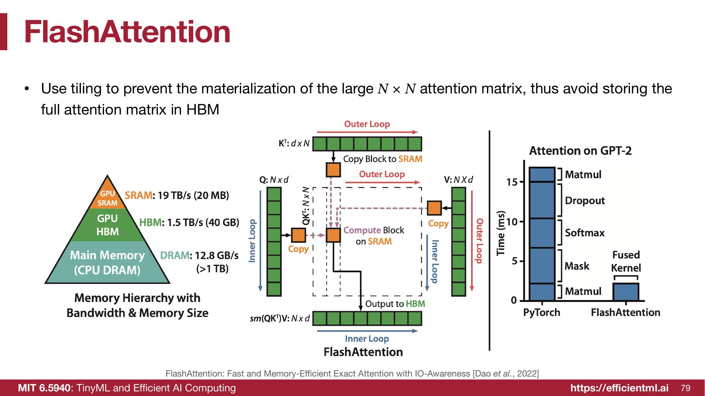
40FlashAttention:分块算注意力,N×N 的分数矩阵永远不落到 HBMT5T7T1
左边金字塔是 GPU 内存层级:片上 SRAM(共享内存)19 TB/s 但只有 20 MB,HBM(显存)1.5 TB/s 40 GB,CPU 内存 12.8 GB/s。
- 标准注意力的做法:算 S = QK^T 写到 HBM(N×N),读回来算 softmax 写回去,再读回来乘 V。
- N=4096 时一个头的 FP16 分数矩阵是 4096 × 4096 × 2 B = 32 MB,32 个头就是 1 GB,来回读写好几遍,而真正的计算量相比这点 IO 不算什么,所以标准注意力是带宽受限的。
- 中图 FlashAttention:外层循环按块遍历 K^T 和 V(每次拷一块到 SRAM),内层循环按块遍历 Q,每对 Q 块和 K 块在 SRAM 里算出一小块分数、当场做 softmax 并累加到输出。
- 难点是 softmax 的分母要看完整行才知道,解法是在线 softmax(online softmax):边算边维护每行的当前最大值和分母,后面块来了再按比例修正前面的累加值,数学上精确等价。
- 所以它是精确注意力,不是近似。
- 右图 GPT-2 注意力耗时:PyTorch 约 17 ms(矩阵乘、dropout、softmax、mask、矩阵乘五个 kernel 各读写一遍 HBM),FlashAttention 融合成一个 kernel 约 2.5 ms,快 7 倍左右。
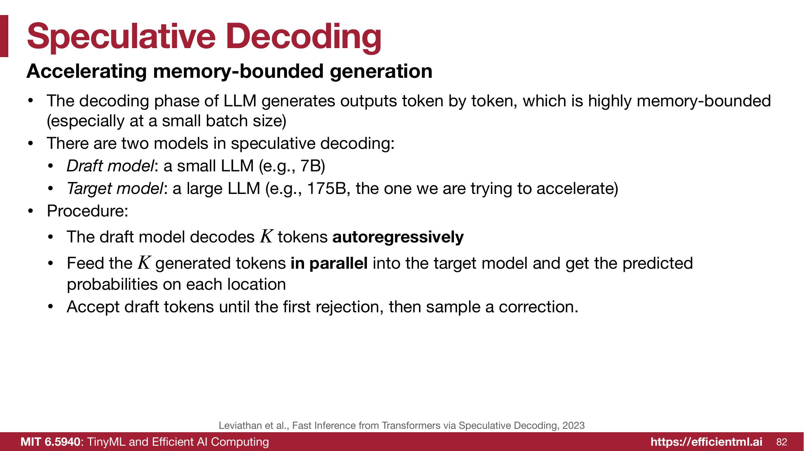
41投机解码:小模型猜几个字,大模型一次验证T5T1
出发点还是 decode 带宽受限:大模型每出一个字要读一遍全部权重,但 Tensor Core 几乎闲着,所以「读一遍权重同时验证好几个字」几乎不多花时间。
- 两个模型:草稿模型(draft model,小,比如 7B)和目标模型(target model,大,比如 175B,我们真正想加速的那个)。
- 流程:草稿模型自回归地猜 K 个 token(比如 K=4,小模型快,4 步也便宜);
- 把这 K 个 token 一次性并行送进目标模型,得到每个位置上目标模型的概率分布;
- 从左到右逐个检查,接受到第一个不接受的位置为止,然后在那个位置按修正后的分布重新采样一个。
- 接受规则是「以 min(1, p_target/p_draft) 的概率接受」,数学上保证最终输出分布和直接用目标模型采样完全一样,所以是无损加速。
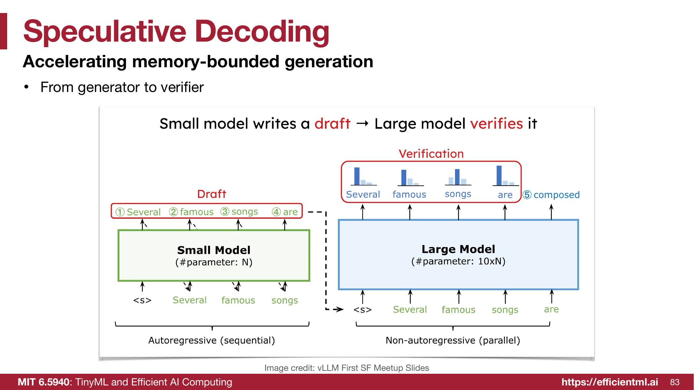
42从生成者变成验证者:一次大模型前向出 5 个字T5T1
左边小模型(N 参数)顺序生成 4 个草稿:Several、famous、songs、are,每步只依赖前面的,是自回归的。
- 右边大模型(10N 参数)把 <s> Several famous songs are 五个位置一次并行前向(非自回归),每个位置输出一个分布(图上的柱状图)。
- 验证:位置 1 到 4 的草稿都在大模型分布里概率够高,全部接受;
- 而且第 5 个位置大模型的分布也算出来了,直接从里面采一个「composed」作为额外奖励。
- 结果是一次大模型前向产出 5 个 token,原本要 5 次。
- 实际加速取决于接受率:草稿和目标越像接受越多,通常 2 到 3 倍。
- 代价:要多装一个草稿模型(内存),接受率低时反而更慢;
- 所以也有不用独立草稿模型的变体,比如 Medusa(在目标模型上加几个预测头)和 EAGLE。
- 对 Alpaca 这种本地 bs=1 的场景,投机解码是少数能在不换硬件的情况下再拿 2 倍的手段。
MIT 6.5940 第 5 讲 量化 I
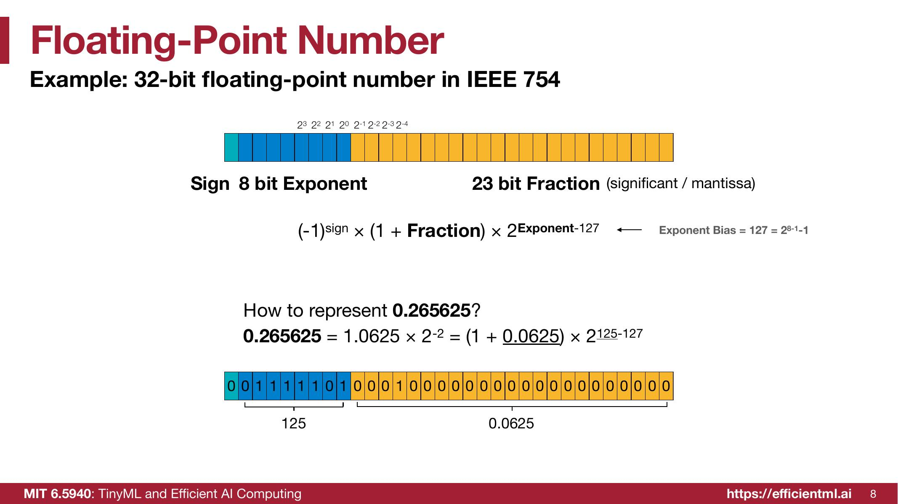
43CPU 和 GPU 的根本区别:少而快 vs 多而慢T1T7
打个比方,CPU 像 4 个博士,每个人都很聪明、随时能换题目;
- GPU 像 1 万个小学生,每个人只会做加减乘,但一起做作业时总量惊人。
- 左图里 CPU 的大块面积给了控制单元(Control)和缓存(Cache),算术单元(ALU)只有 4 个小方块;
- GPU 那张图几乎全是绿色的小 ALU,控制和缓存只剩左边一条窄边。
- 右图上半是 GPU,一个线程等数据时(白色「等待」段)马上换另一个线程来算,所以整体吞吐高;
- 下半是 CPU,单个线程一路算到底,所以每个线程延迟低。
- 这个取舍的代价是 GPU 很怕分支(if/else):控制单元太弱,分支会让一批线程排队等(见 p22)。
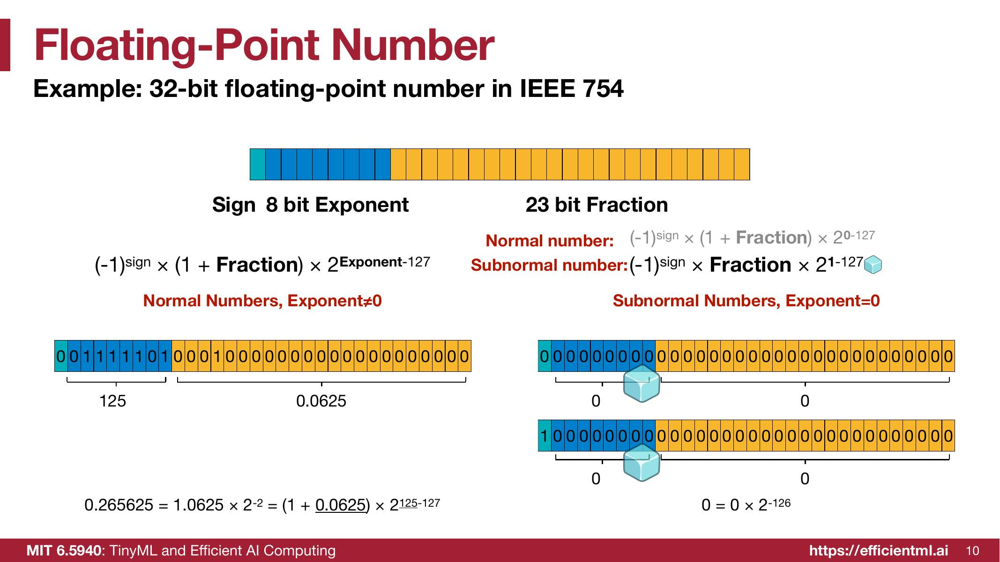
44GPU 的内存层级:越靠近 SM 越快,越贵T1T6T7
把内存想成办公桌、抽屉、本层楼的档案室、隔壁楼的仓库,离你越近越快,但放不了多少东西。
- 左上表是 A100 实测的访问延迟,单位是时钟周期:全局内存(global memory,就是显存 HBM,隔壁楼的仓库)290 周期;
- L2 缓存(片上的大缓存,档案室)200 周期;
- L1 缓存 33 周期;
- 共享内存(shared memory,SM 内部程序员可控的小内存,抽屉)读 23 写 19 周期。
- 算一下,去 HBM 拿一次数据比从共享内存拿慢 290/23 ≈ 12.6 倍。
- 右边芯片照片里,中间两大块紫色是 L2(完整 GA100 共 48 MB,A100 产品 40 MB),四周绿色小格是 SM,最外圈 HBM2 memory controller 连到芯片旁边的显存颗粒。
- 左下照片是整张卡:中间的 GPU 芯片,它旁边紧挨着的方块就是 HBM 显存芯片。
- 底部那句话要记住:SRAM(L1、共享内存、L2 都是 SRAM)比 DRAM(HBM、普通内存)贵 100 倍,快约 8 倍,所以不可能把显存全做成 SRAM,只能分层。
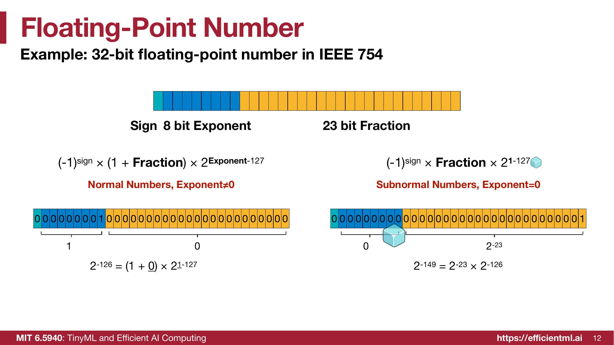
45内存模型:谁能看见哪块内存T1T7
这页把 p10 的硬件层级翻译成程序员视角的可见范围。
- 每个线程有自己的寄存器(registers,最快,A100 每个 SM 共 256 KB 寄存器堆);
- 同一个块里的线程共享一块共享内存(shared memory,A100 每 SM 最多 164 KB,和 L1 合用 192 KB);
- 所有块都能读写全局内存(global memory,就是 HBM,最慢)和只读的常量内存(constant memory)。
- 图里 Block(0,0) 和 Block(0,1) 各有自己的 Shared Memory,它们之间没有连线,要交换信息只能一个写到 Global Memory、另一个再读回来。
- 主机(Host,CPU)只能跟全局内存和常量内存打交道,把数据搬进搬出。
- 所以写 kernel 的原则是:尽量让一个块内部把活干完,中间结果放共享内存,只在开头和结尾碰一次全局内存。
46TPU 和 GPU 大同小异T1T7
一句话:TPU 也是「弱控制 + 大矩阵乘单元 + 快内存」这个结构。
- 图里标量单元(Scalar Unit)像 CPU 一样发指令;
- 向量单元(VPU)做逐元素操作,比如激活函数;
- 矩阵乘单元(MXU)贡献几乎全部 FLOPs;
- Vmem 和 Smem 是片上快内存,相当于 GPU 的共享内存;
- 右边 HBM 存权重、激活、优化器状态,HBM 带宽决定数据进出的速度。
- 区别是 GPU 的 SM 多而小,TPU 的核少而大,矩阵乘性能相近;
- TPU 没有 warp 概念。
- 这页对 Alpaca 的提示是:无论什么加速器,瓶颈都是 HBM 带宽,这是通用结论,不是 NVIDIA 专属。
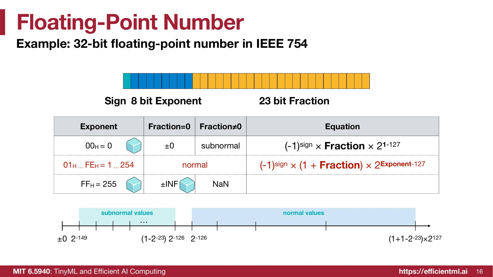
47张量核让矩阵乘比其他运算快 10 倍以上T1T7
横轴是 GPU 代际(K80、M80、P100、V100、A100、H100),纵轴是 TFLOP/s,对数坐标,每格 10 倍。
- 橙线是矩阵乘的峰值算力,蓝线是非矩阵乘(普通 FP32 加减乘)的峰值。
- P100 之前两条线重合在 10 TFLOP/s 左右,因为那时没有专用矩阵乘电路。
- V100 引入张量核(Tensor Core,专门算小块矩阵乘加的电路)后橙线跳到 100 多,H100 到约 1000 TFLOP/s;
- 蓝线只慢慢爬到约 60。
- 算一下 H100:1000/60 ≈ 16 倍;
- A100 也是 312 TFLOP/s(FP16 张量核)对 19.5 TFLOP/s(FP32),312/19.5 = 16 倍。
- 结论:能写成矩阵乘的运算都该写成矩阵乘,softmax、LayerNorm、激活函数这些非矩阵乘运算天生就慢十几倍,这也是 kernel 融合(p26 起)值得做的原因之一。
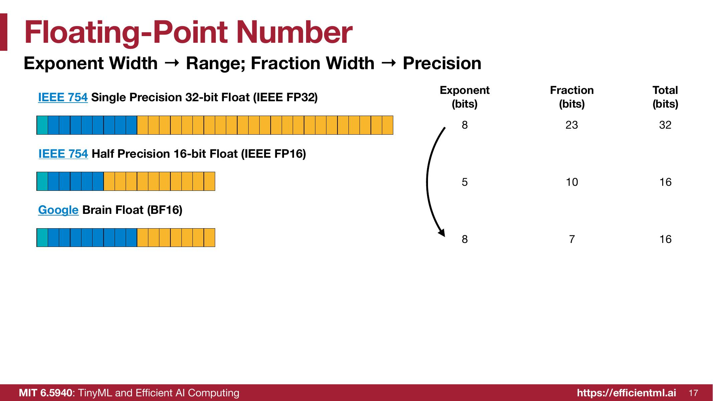
48算力涨得比内存快得多:内存墙T1
横轴是年份(1996 到 2023),纵轴是相对 1996 年的倍数,对数坐标。
- 黑点和灰线是硬件峰值 FLOPs,20 年涨 60000 倍,折合每 2 年 3.0 倍(3^10 = 59049,对得上)。
- 绿点是 DRAM 带宽(GDDR3 → HBM2E),20 年涨 100 倍,每 2 年 1.6 倍(1.6^10 ≈ 110)。
- 蓝点是互连带宽(PCIe、NVLink),20 年涨 30 倍,每 2 年 1.4 倍(1.4^10 ≈ 29)。
- 三条线的斜率差距就是所谓「内存墙」(memory wall):算力的增长速度是带宽的两倍,所以同样一块芯片,每搬进 1 字节数据必须比十年前多算好几倍才能喂饱计算单元。
- 这正是 Alpaca 做定制内存硬件的商业逻辑:算力不缺,缺的是把权重送到计算单元的带宽。
49FP32 / FP16 / BF16 位宽对比T3T1
核心一句话:指数位数决定范围,尾数位数决定精度。
- FP32 = 1 + 8 + 23;
- FP16(IEEE 半精度)= 1 + 5 + 10;
- BF16(Google Brain Float)= 1 + 8 + 7。
- BF16 就是把 FP32 的尾数直接砍掉后 16 位,指数一位不少,所以范围和 FP32 一样(到 3.4e38),但只剩 7 位尾数,相对精度只有 2^−8 ≈ 0.4%。
- FP16 指数只有 5 位,bias 15,最大值 (2 − 2^−10) × 2^15 = 65504,超过就溢出成 ∞,所以训练时常用 BF16(不怕溢出)、推理时常用 FP16(精度高一点)。
- 从内存角度看,两者都是每个参数 2 字节,7B 模型就是 14 GB。
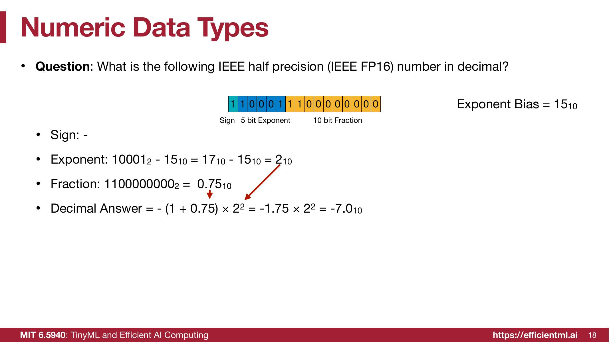
50第一部分小结T1T7
三句话:GPU 是大规模并行,同一条指令作用在很多工人上;
- 算力(尤其矩阵乘)比内存涨得快;
- 要想快就必须尊重内存层级,把数据放在离 SM 近的地方。
- 后面所有技巧都是第三句的具体做法。
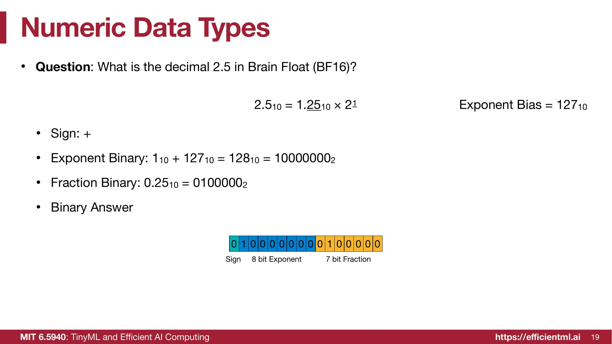
51一个方阵乘法的性能图就够乱了T1T7
横轴是方阵边长 N(0 到 4096),纵轴是实测吞吐 TF/s(TFLOP/s),每个点是一次 N×N 乘 N×N 的实测。
- 看三个现象:粉色箭头标的左半段,N 越大吞吐越高,这是算术强度在涨(p38 公式强度 = N/3,N 小时内存受限);
- 黄色箭头标的几条平行的带子,相差一倍多,是分块对齐的问题(N 能不能被 128 或 32 整除,p43);
- 绿色圈的锯齿,每过几百就掉一截再慢慢爬,是波量化(p44)。
- 这页先留个印象,p42 到 p44 会逐个拆。
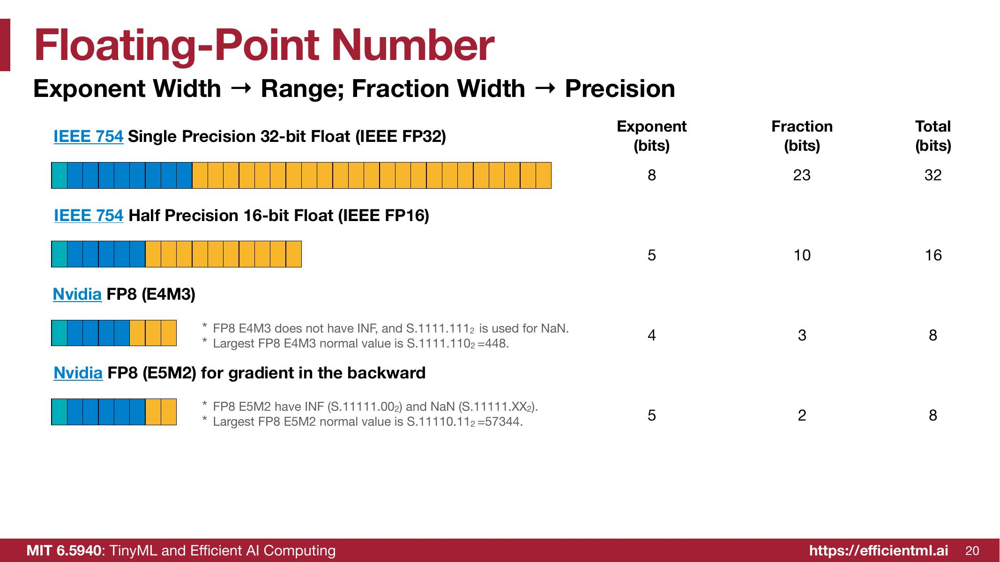
52屋顶线模型:判断你是在等内存还是等算力T1
屋顶线(roofline)是性能分析的第一工具。
- 横轴是运算强度(operational intensity,也叫算术强度 arithmetic intensity,每从内存搬 1 字节能做几次 FLOP),纵轴是实际能达到的吞吐 GFLOP/s,两轴都是对数。
- 每条「屋顶」由一段斜线和一段水平线组成:斜线是带宽受限区,吞吐 = 强度 × 带宽,强度翻倍吞吐就翻倍;
- 水平线是算力受限区,到顶了,再提高强度也没用。
- 斜线和水平线的交点叫拐点(ridge point),拐点横坐标 = 峰值算力 / 带宽。
- 图里四条斜线从低到高是 CPU 主内存、GPU 主内存(HBM)、GPU 共享内存、GPU 寄存器,越靠近 SM 的内存带宽越大,斜线越高,拐点越靠左。
- 算一下 A100 的 HBM 拐点:312 TFLOP/s ÷ 1.555 TB/s ≈ 200 FLOP/byte。
- 图上稠密矩阵乘(菱形)在强度 1000 左右,在水平段,算力受限;
- 稀疏矩阵乘(圆点)在强度 0.5 左右,落在斜线上,内存受限,吞吐只有几十 GFLOP/s。
- 把 LLM decode 代进去:FP16 权重每字节 1 FLOP,强度 1,比拐点 200 低 200 倍,所以 decode 吞吐只有峰值的 1/200,纯等内存。
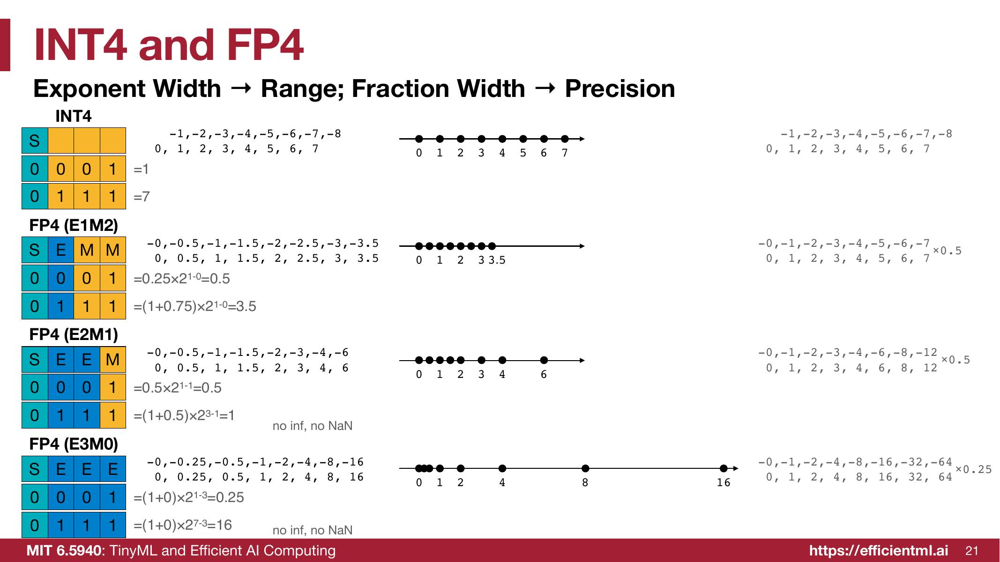
53让 GPU 快的六招清单T1T3T5T7
清单:1 控制分歧(不是内存问题,但要避开);
- 2 低精度计算;
- 3 算子融合;
- 4 重计算;
- 5 合并访存;
- 6 分块。
- 除了第 1 条,其余五条全是在减少或加速「内存搬运」,再次印证第二部分的主题是「怎么不被内存卡住」。
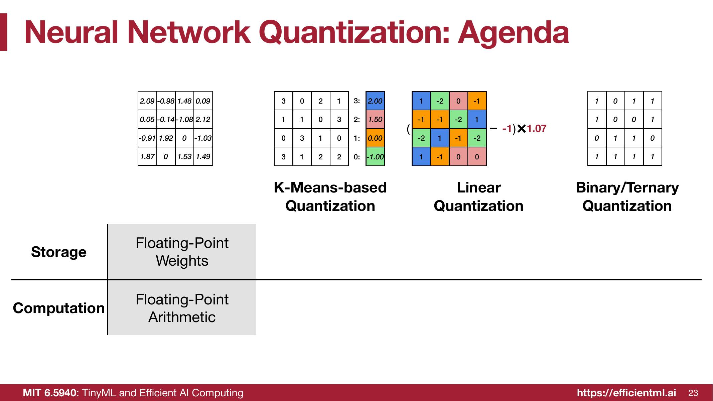
54低精度:位数少,要搬的字节就少T3T1
右图是 Bill Dally 统计的 NVIDIA 单芯片推理性能 10 年涨 1000 倍的拆解,纵轴 Int8 TOPS。
- 左边列出四个来源:数制表示(FP32 → FP16 → Int8,约 16 倍)、复杂指令(DP4、HMMA、IMMA 这类一条指令做一组乘加,约 12.5 倍)、工艺(28nm → 5nm,约 2.5 倍)、稀疏(约 2 倍)。
- 算一下 16 × 12.5 × 2.5 × 2 = 1000,正好。
- 注意工艺只贡献 2.5 倍,最大头是「用更少的位表示数」:从 32 位降到 8 位,同样带宽能多送 4 倍的数,同样面积能塞更多乘法器。
- 标题那句「bits 少了要搬的 bits 就少了」是本页的核心,对 Alpaca 这种带宽受限的本地推理,量化是最直接的加速手段。
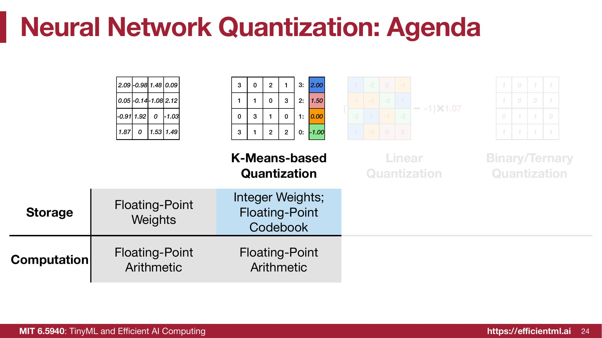
55用 ReLU 算算术强度:精度减半,强度翻倍T1T3
ReLU 是 x = max(0, x),对向量里每个数做一次。
- FP32 情况:读 1 个数 4 字节,写回 1 个数 4 字节,共 8 字节;
- 算 1 次比较(记为 1 FLOP)。
- 页上写强度 8 bytes/FLOP,这是倒着写的,正常口径是 1/8 FLOP/byte。
- FP16 情况:读 2 写 2 共 4 字节,还是 1 FLOP,4 bytes/FLOP,即 1/4 FLOP/byte,强度翻倍。
- 和 p20 的拐点 200 FLOP/byte 比:1/8 低了 1600 倍,1/4 低了 800 倍,所以不管什么精度,逐元素操作永远是内存受限,GPU 的算力几乎全空着。
- 对比矩阵乘:N×N 方阵,2N³ FLOP,搬 6N² 字节(FP16),强度 N/3,N=4096 时 1365 FLOP/byte,比拐点高 6.8 倍,算力受限。
- 这就是「矩阵乘快、逐元素慢」的全部道理:不是逐元素的算术慢,是它每算一下就得去 HBM 跑一趟。
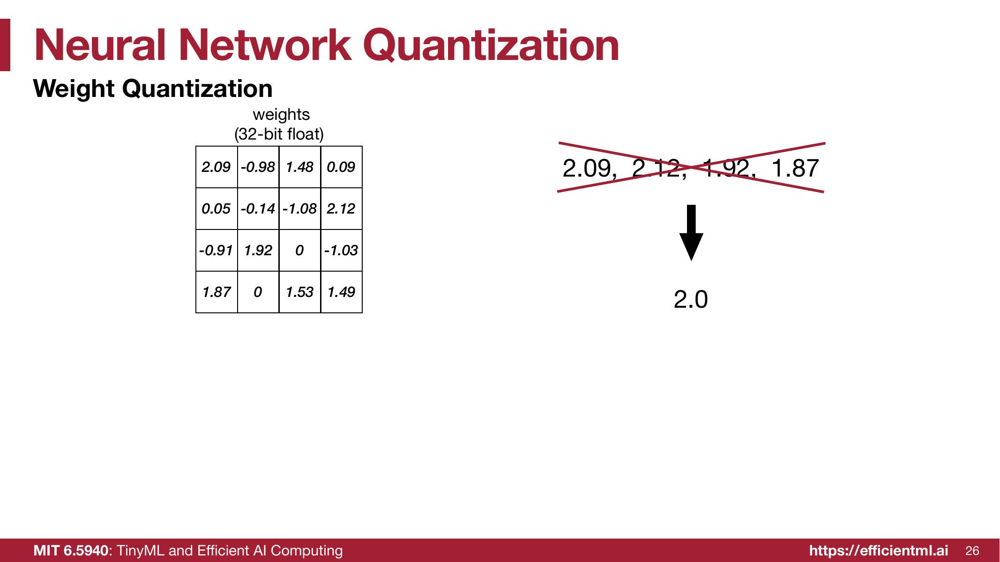
56把 GPU 想成工厂和仓库T5T1
Horace He 的比方:计算单元是工厂,显存是仓库,中间的传送带是内存带宽。
- 左图工厂小,传送带够用;
- 右图工厂翻了一倍(算力涨),传送带还是那条(带宽基本没涨),工厂多数时候在等原料。
- 这就是 p17 那张图的漫画版。
- 要让工厂满负荷,只有两条路:别让原料在仓库和工厂之间来回跑(融合、分块),或者把原料压小(低精度)。
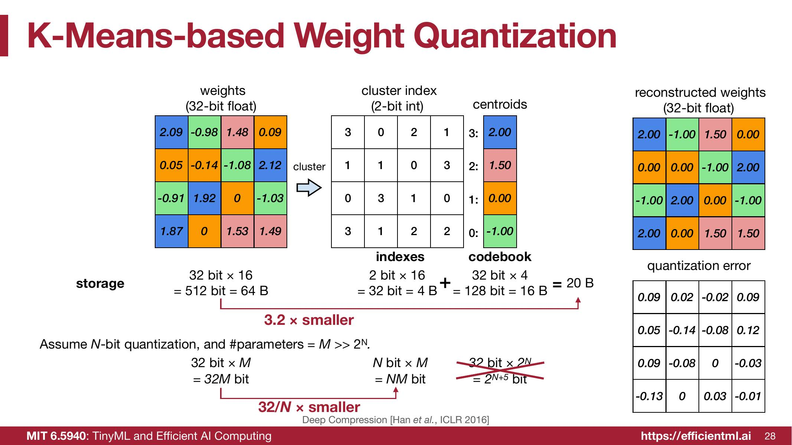
57K-means 量化完整例子:64 B 变 20 BT3T1
把 16 个 FP32 权重做 K = 4 的 K-means 聚类(颜色标出四组),得到码本 3: 2.00、2: 1.50、1: 0.00、0: −1.00,每个权重只存 2 bit 的簇编号(cluster index)。
- 重建时查表:编号 3 → 2.00。
- 量化误差 = 原值 − 重建值,比如 2.09 − 2.00 = 0.09,−0.98 − (−1.00) = 0.02,右下那张表就是 16 个误差。
- 存储算一遍:原来 32 bit × 16 = 512 bit = 64 B;
- 现在索引 2 bit × 16 = 32 bit = 4 B,码本 32 bit × 4 = 128 bit = 16 B,共 20 B,64 / 20 = 3.2 倍。
- 一般化:N 位量化、M 个参数,索引 NM bit,码本 2^N × 32 bit;
- M 远大于 2^N 时码本可以忽略,压缩比就是 32/N。
- 比如 N = 4 时 8 倍,N = 2 时 16 倍。
- 注意 K-means 的档位不必等间距,质心落在数据密的地方,所以同样位数误差比均匀格点小。
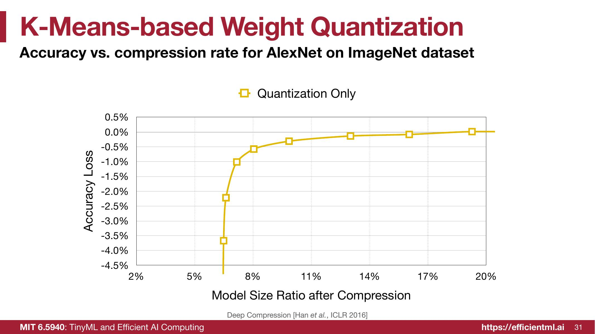
58三层 sigmoid 要 8 次内存读写T5T1
三个 sigmoid 叠着:x → s2 → s1 → out。
- 旧前向:读 x 一次,写 s2、s1、out 三次,共 4 次。
- 旧反向:读 s2、s1、dout 三次,写 dx 一次,共 4 次。
- 合计 8 次搬运。
- 而 sigmoid 一次只有几个 FLOP(一个 exp、一个加、一个除),算术强度极低,8 次 HBM 往返的时间远超计算本身。
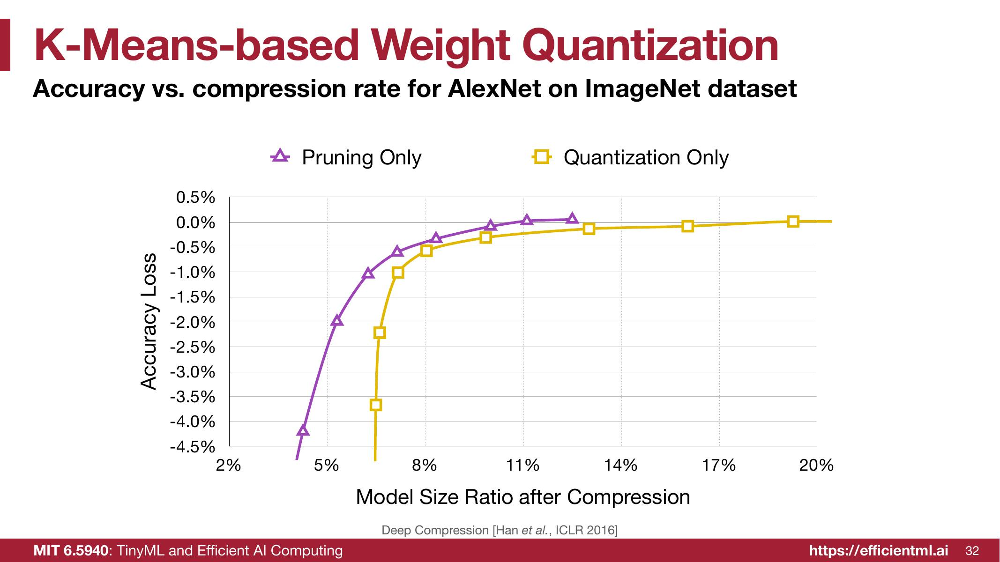
59扔掉中间激活,反向时重算:搬运变成 5/8T5T1
新前向:读 x 一次,只写 out 一次,s2 和 s1 不存,共 2 次。
- 新反向:读 x 和 dout 两次,在 SM 里重新从 x 算出 s2、s1(这些只在寄存器和共享内存里走,不碰 HBM),写 dx 一次,共 3 次。
- 合计 5 次,是原来 8 次的 5/8,少了 37.5% 的搬运。
- 代价是多算了 2 个 sigmoid,但因为本来就在等内存,多算几次 FLOP 不要钱。
- 这是「用算力换带宽」的典型:当 p17 说算力过剩、带宽稀缺时,重算比存取划算。
- FlashAttention 的反向传播就是靠这个,不存 N×N 的注意力矩阵,反向时按块重算。
60DRAM 按突发读:拿 1 个字节也送你 128 个T1T7
DRAM 的物理结构(左图)是一个大方阵,读数据时要先把整整一行复制到感应放大器(sense amplifier),这一步很慢;
- 复制完之后那一行里任何一个数都能很快取。
- 所以硬件干脆每次访问都把同一段连续地址(突发段,burst section)全部送出来。
- 右上示意图:16 字节地址空间切成 4 段,每段 4 字节,访问地址 5 时 4、5、6、7 全送到处理器。
- 真实 GPU 上突发段至少 128 字节。
- 结论:如果一次只用其中 4 字节,等于带宽浪费了 97%(124/128);
- 如果相邻线程正好用这 128 字节,带宽 100% 利用。
- 这是下一页合并访存的物理基础。
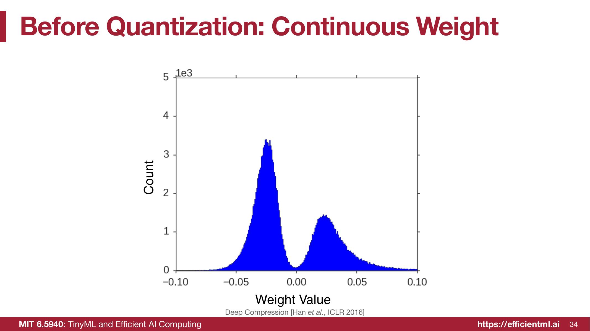
61合并访存:一个 warp 的 32 次读落在同一个突发段里T7T1
合并(coalesced)的定义:一个 warp 里 32 个线程同时执行一条 load 指令时,如果它们要的地址都落在同一个突发段里,硬件只发一次 DRAM 请求。
- 图里 T0 到 T3 分别读地址 0、1、2、3,在同一个黄色段里,一次请求搞定;
- 另一组 T0 到 T3 读 8、9、10、11,在蓝色段里,也是一次。
- 要是 T0 读 0、T1 读 4、T2 读 8、T3 读 12,四个地址分属四段,就要发四次请求,带宽利用率 1/4。
- 实际尺寸:32 个线程各读 4 字节 FP32 = 128 字节,正好填满一个 128 字节的突发段,这就是「让线程 i 读第 i 个元素」这条写 CUDA 的铁律的来源。
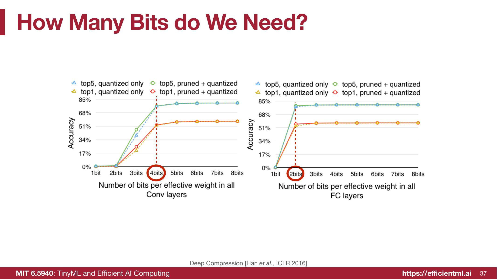
62分块:一小块搬进共享内存,大家一起用T7T1
分块(tiling)是把 M、N、P 都切成小方块(图中 2×2),一个块的线程负责 P 的一个小方块。
- 按「阶段」算:阶段 1,把 M0,0 块(M 左上 2×2)和 N0,0 块(N 左上 2×2)从全局内存搬进共享内存(SHM),搬的时候让相邻线程搬相邻元素,所以合并;
- 然后四个线程用共享内存里的数算 P 块的部分和(每个 P 元素累加 2 项);
- 阶段 2,搬 M0,1 和 N1,0 块(页上写的 N2,0 是沿内积方向的下一块),再累加 2 项,P 块完成。
- 好处:M0,0 这个数在阶段 1 只从 HBM 读一次进共享内存,然后被两个线程从共享内存各读一次,HBM 读取减半;
- 同时因为是一行一行搬进共享内存,读 HBM 的方式天然合并。
- 图里黄绿蓝红四色标出四个线程各自用到的块,可以看到每个 M 块服务一整行线程、每个 N 块服务一整列线程。
- 这是 GPU 上所有高性能矩阵乘(cuBLAS、CUTLASS)的骨架,面试问「怎么用 shared memory 加速 matmul」就讲这页。
63分块的数学:全局内存读取量除以 TT7T1
矩阵边长 N,块边长 T。
- 不分块:A 的每个元素被 C 同一行的 N 个线程各读一次,所以每个元素从全局内存读 N 次。
- 分块:A 的每个元素只被包含它的那个块搬进共享内存一次,但 C 有 N/T 列块都要用到这一行的 A,所以每个元素从全局内存读 N/T 次;
- 搬进共享内存后,块内 T 个线程各读一次,这 T 次是从共享内存读的,快 12 倍而且不占 HBM 带宽。
- 全局读取量从 N 降到 N/T,省 T 倍。
- 代入 N=4096、T=128:从 4096 次降到 32 次。
- 换个角度看算术强度:一个块算 T×T 个输出、内积长度 T,做 2T³ FLOP,搬进 2 个 T×T 的 FP16 块共 4T² 字节,强度 = 2T³/4T² = T/2 FLOP/byte;
- T=128 时 64,T=256 时 128,再配合寄存器级分块就能跨过 200 的拐点。
- T 不能无限大,受共享内存容量限制:两个 128×128 FP16 块 = 2×16384×2 = 65536 字节 = 64 KB,A100 每 SM 最多 164 KB,放得下;
- T=256 要 256 KB,放不下。
64分块的麻烦二:突发段和矩阵行没对齐T7T1
顶部重复 p33 的突发段示意。
- 下面两张手绘图,每种颜色是矩阵的一行,竖的灰线是突发段的边界。
- 左图「对齐布局」:一行的长度正好是突发段的整数倍,一个块(黑框)刚好覆盖整数个突发段,一次搬完,「一个好块」。
- 右图「不对齐布局」:行长不是突发段的倍数,每行的起点落在突发段中间,同一个逻辑块跨了两个突发段,要发两次请求,而且每次请求里有一半是没用的斜线部分,「两个坏块」。
- 所以不仅矩阵尺寸要被块大小整除(p39),每一行的字节数还要是 128 字节的倍数:FP16 下一行要是 64 个元素的倍数。
- 做不到就要补零(padding)。
- Karpathy 那条推(p41)就是这个问题。
65谜题:词表从 50257 改成 50304,快了 25%T7T1
Karpathy 把 nanoGPT 的词表大小从 50257 改到 50304,输出层矩阵乘反而快了 25%。
- 50304 = 64 × 786,是 64 的倍数;
- 50257 不是任何 2 的幂的倍数(它是奇数)。
- 多算了 47 个没用的维度,但矩阵乘走了一条对齐的 kernel 路径,占用率高得多。
- 问题:为什么矩阵更大反而更快?
- 答案在 p43 和 p44。
66再看那张性能图T7T1
和 p19 同一张图。
- 横轴方阵边长 N,纵轴 TF/s。
- 左下角的粉色箭头是算术强度:N 小于 1000 时强度 N/3 不到 333,接近拐点,吞吐随 N 线性上升。
- 黄色箭头指的几条平行带子相差一倍多,是对齐;
- 绿色圈的锯齿是波量化。
- 下面两页逐个解释。
67谜题第一部分:对齐决定你在哪条带子上T7T1
左图按「N 能被几整除」给点上色:能被 128 整除的点(紫)在最上面约 250 TF/s;
- 只能被 32 整除(红)稍低;
- 被 16 整除(绿)约 200;
- 被 8 整除(橙)约 150;
- 只能被 2 整除(蓝)在最下面约 90。
- 最上和最下相差 250/90 ≈ 2.8 倍。
- 原因就是右图(p40 同图):N 是 128 的倍数时每一行 N×2 字节是 256 字节,是 128 字节突发段的整数倍,所有块对齐;
- N 只是 2 的倍数时每行都跨段,每个块要发两倍的请求。
- 所以 Karpathy 的 50304 落在了紫线上,50257 落在了蓝线上。
- 推理引擎里把 hidden size、vocab size、KV 缓存的块长度都凑成 64 或 128 的倍数,原因在此。
68K-means 量化的硬伤:算的时候还是浮点T3T1
左边:存储里放的是 2 bit 索引加浮点码本;
- 计算时要先解码(decode,查码本)还原成 32 位浮点权重矩阵。
- 右边的数据流图:量化权重(uint)→ decode → 浮点权重 → 和浮点输入做 Conv → 加浮点 bias → ReLU → 浮点输出。
- 每条箭头上都标着 float。
- 结论两条:权重用查表解压;
- K-means 量化只省模型文件大小,所有计算和内存访问仍是浮点。
- 对 LLM 推理的意义:如果你的 kernel 在读权重时能边读边查表(比如 2 bit 索引读进寄存器立刻换成 FP16),那内存带宽也省了;
- 但如果先整块解码到显存再算,就白费。
69第二部分小结T1T3T5T7
三类办法:减少内存访问(合并访存、融合);
- 把数据挪到共享内存(分块);
- 用计算或精度换内存(量化、重计算)。
- 接下来 FlashAttention 把三类全用上。
70FlashAttention 快在哪:少搬 9 倍,多算 13%T5T1T2
左图是 GPT-2 attention 的时间拆解:PyTorch 版本 matmul、dropout、softmax、mask、matmul 五个 kernel 叠起来约 17 ms,FlashAttention 融合成一个 kernel 约 2 ms。
- 中间表格是关键数字:FLOPs 从 66.6 涨到 75.2 GFLOP,多算了 13%(重计算的代价);
- HBM 读写从 40.3 GB 降到 4.4 GB,少了 40.3/4.4 ≈ 9.2 倍;
- 运行时间从 41.7 ms 降到 7.3 ms,快 5.7 倍。
- 验证一下标准版是内存受限:40.3 GB / 41.7 ms ≈ 0.97 TB/s,已经接近 A100 的 1.5 TB/s 带宽上限;
- 而算力才用了 66.6 GFLOP / 41.7 ms ≈ 1.6 TFLOP/s,是 312 峰值的 0.5%。
- FlashAttention 版算力 75.2/7.3 ≈ 10.3 TFLOP/s,带宽 4.4/7.3 ≈ 0.6 TB/s,两边都没顶满但比原来平衡得多。
- 右图横轴块大小 64 到 512,绿线 HBM 访问量从 6 GB 降到 2 GB 以下,蓝线时间同步下降:块越大,重复读 K、V 的次数越少,和 p38 的 N/T 一个道理。
- 底部论文原话:用分块和重计算两个老技巧,把精确 attention 的 HBM 访问做到了低于 N²。
71attention 的计算:两个矩阵乘夹一个 softmaxT2T1
上半:Q = XW_Q、K = XW_K,S = QKᵀ 是 n×n 的分数矩阵(图中三个重叠的方块表示多头,∈ ℝ^{3×n×n})。
- 下半:P = softmax(S) 按行归一化,然后 O = PV 得到 n×d 的输出。
- 问题在中间那个 n×n:n 是序列长度,n = 4096 时 S 和 P 各有 1677 万个元素,FP16 下每个 32 MB,每个头都要先把 S 写进 HBM、读出来算 softmax、把 P 写回去、再读出来乘 V,四次 n² 规模的搬运;
- 32 个头就是 4 GB 的进出。
- 而 QKᵀ 和 PV 这两个矩阵乘本身是算力受限的,夹在中间的 softmax 是逐行归约,内存受限(p24),整个 attention 被它拖成了内存受限。
72FlashAttention 第一步:对 QKᵀ 和 PV 做分块T1T5T7
左边金字塔是 A100 的三层内存,带宽和容量都写了:片上 SRAM 19 TB/s、20 MB(108 个 SM × 每个约 192 KB 共享内存和 L1 ≈ 20.7 MB);
- HBM 1.5 TB/s、40 GB;
- CPU 内存 12.8 GB/s(PCIe 4 的速度)、1 TB 以上。
- SRAM 比 HBM 快 12.7 倍,容量小 2000 倍。
- 右图是论文图 1:外循环遍历 K 和 V 的块(每块是 N×d 里的一条),把一块 Kᵀ 和一块 V 复制进 SRAM;
- 内循环遍历 Q 的块,把一块 Q 复制进 SRAM,在 SRAM 里算这一块 Q 对这一块 K 的分数、做 softmax 的那一部分、乘上这一块 V,累加到输出的对应块,最后才把输出写回 HBM。
- 整个过程 n×n 的 S 和 P 从来没有完整出现过,只在 SRAM 里存在过一个块那么大。
- 这就是 p37 的分块原封不动搬到 attention 上。
- 剩下的难题:softmax 要整行的最大值和整行的和,可是一次只看得到一块,怎么办?
- 下一页。
73合起来:FlashAttention 前向T5T1T2
图里实线框存在 HBM(Q、K、V、最终输出 O),虚线框在 SRAM 里算完就丢(S、A、中间的 O 和 l)。
- 以 K、V 切两块为例:第一块,S⁽¹⁾ = Q K⁽¹⁾ᵀ(分块矩阵乘),A⁽¹⁾ = exp(S⁽¹⁾)(指数直接在 SRAM 里对 S 做,这是融合,不写回),l⁽¹⁾ = Σ A⁽¹⁾ 是局部分母,O⁽¹⁾ = A⁽¹⁾V⁽¹⁾/l⁽¹⁾。
- 第二块,S⁽²⁾、A⁽²⁾ 同样算,l⁽²⁾ = l⁽¹⁾ + Σ A⁽²⁾ 是累计分母,输出更新为 O⁽²⁾ = (l⁽¹⁾/l⁽²⁾) O⁽¹⁾ + A⁽²⁾V⁽²⁾/l⁽²⁾:旧输出原来除的是 l⁽¹⁾,现在改成除 l⁽²⁾,所以乘 l⁽¹⁾/l⁽²⁾ 来修正(图中「rescaling to correct denominator」);
- 真实实现里还带着 p49 的最大值修正因子。
- 三个技巧对应:分块(S 按块算,K、V 只从 HBM 读一次,Q 读 N/块长 次);
- 融合(exp、求和、乘 V 全在 SRAM 里连做,n×n 的 S 和 P 永远不落 HBM);
- 在线 softmax(让分块下的 softmax 精确等价)。
- 反向传播不存 P,用保存的 l 和 m 按块重算(p32 的重计算),所以训练时显存从 O(n²) 降到 O(n)。
- 对推理的意义:prefill 阶段 attention 是 n² 的,FlashAttention 把它从内存受限拉回接近算力受限;
- decode 阶段 q 只有一行,瓶颈变成读 KV 缓存,FlashDecoding 把 K、V 切块给多个 SM 并行读,是同一思路的延伸。
74全讲总结T1T7
三句:硬件决定什么能扩、什么扩不动,底层细节决定性能;
- 现在的 GPU 逼着你用「矩阵乘 + 数据搬运」两个维度去想每个算子;
- 认真对待合并访存、分块、融合就能拿到好性能。
- 对 Alpaca 面试,把这三句翻译成:推理是带宽受限的,所以量化、融合、分块和更快的内存硬件是四条平行的路。
MIT 6.5940 第 6 讲 量化 II
75group quantization 的硬件背景:Blackwell 的 FP4 和 micro-tensor scalingT3T1
为什么要继续往细分?
- 因为硬件在往 4 bit 走。
- Blackwell GPU 的 FP4 tensor core 峰值算力是 FP8 / INT8 的 2 倍(右表每颗 B200:FP4 18 petaFLOPS,FP8 / INT8 9 peta,FP16 4.5 peta),但 4 bit 只有 16 个值,per-channel 都不够精细,所以 Blackwell 原生支持「micro-tensor scaling」,也就是每一小组(比如 32 个数)配一个 scale,硬件直接处理。
- 左图是 NVIDIA 宣传的 GB200 对 1.8T 参数 MoE 模型推理快 30 倍,这个数字有营销成分,记住「FP4 算力翻倍」和「表里的 1.5 TB 快速内存、64 TB/s 聚合带宽」就行。
- 对 Alpaca 来说,这页的要点是:量化格式不是纯软件选择,它要和硬件原生支持的组大小对齐。
76权重二值化(±1):乘法消失T3T7T1
权重只有 +1 和 −1 时,W_ij x_j 要么是 x_j 要么是 −x_j,乘法变成加减:5 − 2 + 0 − 1 = 2。
- 表格第二行:输入实数 R、权重二值 B,运算只剩加减,内存省约 32 倍(1 bit 对 32 bit),计算省约 2 倍(乘法比加法贵,去掉乘法大约省一半)。
- 对本地 LLM 的意义:内存省 32 倍是最大的卖点,因为 decode 阶段是读权重带宽瓶颈;
- 这是 BitNet 系列的出发点。
MIT 6.5940 第 11 讲 TinyEngine
77云端、手机、单片机的资源差距T1T6
图是一张四列表,从左到右是 Nvidia H100、Apple M2 Ultra、Qualcomm S8Gen2(手机芯片)、STM32F746NG(单片机)。
- 看三行:内存 80GB、64 到 192GB、8 到 24GB、320kB;
- 存储 TB/PB 级、GB/TB 级、GB 级、1MB;
- 算力 1979 TOPS、31.6 TOPS、36 TOPS、462 MOPS。
- 单片机的内存是 H100 的 320kB / 80GB,差 25 万倍;
- 算力 462 MOPS 对 1979 TOPS,差 400 万倍。
- Alpaca 做「本地跑大模型」,落在中间那两列:笔记本和手机级别的内存是 GB 级,要塞进一个几 GB 到几十 GB 的模型,所以量化和内存带宽才是他们的核心问题。
78单片机和 M1 Ultra 逐项对比T1T6
图是一张详细表,比 STM32F746 单片机和 M1 Ultra MacBook Pro。
- 单片机:1 个 CPU 核、216MHz、没有 GPU、没有神经引擎、L1 cache 8KB、没有 L2/L3、内存 320KB、存储 1MB、没有操作系统。
- M1 Ultra:20 核、3200MHz、64 个 GPU 核、32 个神经引擎核、L1 320KB、L2 48MB、L3 96MB、内存 64GB、存储 8TB、macOS。
- 底下的倍数自己算一遍:核数 20 倍;
- 主频 3200/216 ≈ 14.8 倍,写 15 倍;
- L1 320KB/8KB = 40 倍;
- 内存 64GB/320KB = 64×1024×1024/320 ≈ 209715,写 21 万倍;
- 存储 8TB/1MB = 8×1024×1024 ≈ 839 万倍。
- 注意最大的差距在内存和存储,不在算力。
- 这就是为什么后面每一招都在省内存访问而不是省算术。
79存储层级金字塔T1T6T7
图是一个金字塔,从上到下:CPU、寄存器、L1 cache、L2 cache、DRAM 内存、SSD/HDD 存储。
- 左边写容量,右边写延迟。
- 打个比方:寄存器是你手里拿着的东西,L1 是桌面,L2 是抽屉,DRAM 是隔壁房间的柜子,硬盘是楼下仓库。
- 数字:L1 320KB、0.5ns;
- L2 48MB、7ns,是 L1 的 14 倍;
- DRAM 64GB、100ns,是 L2 的 14 倍、L1 的 200 倍;
- 存储 8TB、1ms。
- 右下角那串「10x DRAM, 140x L2, 2000x L1」算不对:1ms = 1,000,000ns,除以 100ns 是 1 万倍而不是 10 倍。
- 幻灯片应该是想写 1µs(SSD 随机读大概是微秒级),1µs/100ns = 10 倍,1µs/7ns ≈ 140 倍,1µs/0.5ns = 2000 倍,这样才对得上。
- 要记的核心是「越往下越大越慢越便宜」,以及一次 DRAM 访问等于 200 次 L1 访问。
80CUDA 内存模型:host 和 device 两套地址空间T1T7
CPU 的内存和 GPU 的显存是两个独立的地址空间,数据要显式搬。
- 代码:new float[N] 在 host 分配并填好 A;
- cudaMalloc(&deviceA, bytes) 在 device 上分配一块;
- cudaMemcpy(deviceA, A, bytes, cudaMemcpyHostToDevice) 把数据从 host 拷到 device。
- 右边提醒:在 host 代码里直接访问 deviceA[i] 是非法的,因为那个地址只在 GPU 上有意义。
- 对推理引擎的意义:模型权重先 cudaMemcpy 进显存,之后反复用,别每次都搬;
- PCIe 带宽只有几十 GB/s,比显存带宽低一个数量级以上,搬数据往往比算还慢。
- p44 的 94 倍和 3575 倍之差就是搬数据的代价。
81CUDA 内存模型:三层地址空间T1T7
kernel 能看到三种内存。
- 每线程私有内存(private/local memory,只有这个线程能读写,图左下)。
- 每 block 共享内存(shared memory,同一个 block 里所有线程都能读写,图左上,片上 SRAM,很快,几十 KB)。
- 全局内存(global memory,所有线程都能读写,图右边大灰框,就是显存 HBM/GDDR,大但慢)。
- 不同空间延迟差很多:寄存器和 shared memory 是几个周期,global memory 是几百个周期。
- 所以 CUDA 优化的核心和 CPU 分块一模一样:把一块数据从 global 搬到 shared,让 block 里的线程反复用。
MIT 6.5940 第 14 讲 LLM 后训练
82Adapter 的代价:推理变慢,batch=1 时最明显T1T6T8
Adapter 是串在主干里的,多一层就多一次等待,像在流水线里多加了一道工序。
- 表是 GPT-2 medium 在 RTX8000 上单次前向的延迟。
- 三列从左到右:batch 32 长度 512 时基准 1482ms,Adapter 只多 2.2% 到 3.0%;
- batch 16 长度 256 时多 5.0% 到 8.4%;
- batch 1 长度 128 时基准 23.9ms,Adapter 多 20.7% 到 30.3%。
- 为什么 batch 越小越吃亏:大 batch 时 GPU 忙着算矩阵乘,多一个小层淹没在里面;
- batch 1 时每层本来就算不满 GPU,时间主要花在一次次启动 kernel 和等内存,多一层就多一份固定开销。
- 本地单用户跑模型恰好就是 batch 1,所以 Adapter 不适合设备端部署。
- 页末提问「怎么消掉这个开销」引出 LoRA。
83LoRA 合并后推理零开销T1T6T8
关键一步:h = x@W + x@A@B = x@(W + A@B) = x@W'。
- A@B 是 d×d 矩阵,和 W 同形状,部署前直接加进去得到 W',推理时只做一次 x@W',和原模型一样多的计算、一样多的内存读取,所以「no extra inference latency」。
- 对比 Adapter 的 20% 到 30%,这是 LoRA 成为主流的原因。
- 补充两点推理引擎会关心的:一,如果不合并(比如要在多个 LoRA 之间切换),每个 token 多算 x@A 和 (xA)@B,计算量 2dr 远小于 d²,但多了两次小 kernel 和读 A、B 的内存,batch 1 时仍会有一点开销;
- 二,合并后 W' 必须和 W 同精度,如果底座是 int4,合并后要重新量化,所以 QLoRA 场景下常常不合并。
84BitDelta 的压缩比和多模型服务延迟T1T3T4T6
左上表:Llama2-7B 原 13.48GB,Δ 压到 1.24GB,10.87 倍(7B 个符号位 = 0.875GB,其余是没量化的 embedding 和 lm_head);
- 70B 从 137.95GB 到 8.95GB,15.41 倍。
- 「服务的模型越多省得越多」。
- 左下两图横轴分别是隐藏维度和模型数,纵轴延迟,橙线 BitDelta 斜率明显比蓝线 Naive 小。
- 右图横轴 batch size、纵轴 Llama2-7B 端到端 decode 延迟:Naive 是每个请求用各自完整的微调模型,batch 到 8 时显存放不下(橙色是预测值 OOM),batch 32 预测约 840ms;
- BitDelta 共用一份底座,每个请求只多一个 1 bit 的 Δ,batch 32 约 280ms。
- 注意 batch 1 时 BitDelta 反而略慢(约 50ms 对 25ms),因为多了一次算 Δ·X 的 kernel。
- 它写了一个融合的二值 GEMM kernel,反量化和矩阵乘在一个 kernel 里做,1 bit 的 Δ 不用先展开成 fp16 写回显存,省掉了那部分数据搬运。
85VILA:图片变成视觉 token 喂给 LLMT1T2
视觉语言模型(VLM)的通用结构:图片过 ViT(视觉 Transformer,图像切成 14×14 像素的小块,每块一个向量),再过一个 projector(投影层,把 ViT 的向量维度映射到 LLM 的隐藏维度),得到一串「视觉 token」,和文本 token 拼在一起送进 LLM。
- 图里雪花表示 ViT 冻结,火表示 projector 和 LLM 要训。
- 训练三阶段:先只训 projector,再预训练,最后 SFT。
- 右边雷达图每个轴一个评测集,红色 VILA 包住橙色 LLaVA-1.5。
- 对推理的含义:一张 336 像素的图 = 24×24 = 576 个 token,这些 token 全部进 prefill 并且占 KV 缓存,一张图相当于几百字的文章。
86分辨率比 token 数更重要T1T2T6
表格三行:224 分辨率、线性 projector,256 个 token(224/14 = 16,16² = 256);
- 336 分辨率,576 个 token(24² = 576);
- 336 分辨率但 projector 里做下采样,144 个 token(2×2 相邻四个 token 合成一个,576/4 = 144)。
- TextVQA(读图中文字)从 41.6% 升到 49.8%,靠的是分辨率;
- 第三行 token 只有 144 个,比 256 还少,却拿到 45.6%,高于 224 的 41.6%。
- 结论:先用高分辨率看清,再把 token 压少,比一开始就低分辨率好。
- 对设备端推理这是直接可用的技巧:视觉 token 从 576 砍到 144,prefill 计算和 KV 缓存都降为四分之一,精度掉得少。
87高分辨率靠切瓦片,token 数随瓦片数线性涨T1T2T6
InternVL 处理高分辨率的办法:从预设长宽比(1:1、1:2、2:3……)里挑最接近的,把 800×1300 的图匹配成 2:3,缩放到 896×1344,切成 6 个 448×448 的瓦片(tile),再加一张整图缩小的缩略图(thumbnail)保留全局,一共 7 张送进 ViT。
- 每个瓦片 448/14 = 32,32² = 1024 个 patch,InternVL 再用像素重排压 4 倍到 256 个 token,7 × 256 = 1792 个视觉 token。
- 右边六张小图横轴都是瓦片数、纵轴评测分。
- 上排文字类(DocVQA、ChartQA、InfoVQA)分数随瓦片数上升,在 12 到 24 片左右饱和,高分辨率对读字有用。
- 下排知识推理类(MMMU、MMBench)6 片就到顶,再多反而掉。
- 训练时最多 12 片,测试能外推到 40 片(4K),但 40 片 × 256 = 1 万多个 token,注意力和 KV 缓存按这个数算,内存容易爆,所以作者只测到 18 片。
88高分辨率的另一条路:交叉注意力,不占 LLM 序列T1T2
CogAgent 用两个 ViT:低分辨率(224×224)的特征照常变 token 进 LLM 序列;
- 高分辨率(1120×1120)的特征不进序列,而是在 LLM 每一层加一个交叉注意力(cross-attention):LLM 的隐藏状态(低清图 token 加文本 token)当 query,高清图特征当 key 和 value。
- 交叉模块的隐藏维度 1024,比主干的 4096 小,算是轻量的。
- 好处:没有瓦片拼接的边界问题,高清 token 不进主序列,所以不会把 KV 缓存撑大。
- 代价:要从头训练 LLM,很贵;
- 高清 ViT 的分辨率固定不灵活。
- 对推理引擎来说,这是「把视觉开销放在侧路、不污染主序列」的一种设计。
T2 KV 缓存
KV 缓存是什么、算多大、MQA/GQA 怎么省、长上下文的问题 · 共 55 页
先读手册里对应的小节(2 节),再看下面的课件
2.2 KV 缓存:公式和 8B 的算例 在手册里看 ↗
比方:读长篇小说时,你在每一页边上记了要点(K 和 V)。读下一页时只看笔记,不用把前面全部重读。笔记越积越多,占的地方也越来越大。
每个 token 的 KV 字节 = 2(K 和 V) × 层数 × KV 头数 × 每头维度 × 每个数的字节 Llama-3.1-8B:层数 32,注意力头 32,KV 头 8(GQA),每头维度 128,FP16 = 2 字节 = 2 × 32 × 8 × 128 × 2 = 131,072 字节 = 128 KiB / token 8K 上下文:128 KiB × 8192 = 1 GiB (约 1.07 GB) 32K 上下文:128 KiB × 32768 = 4 GiB
GQA 省了多少:如果 32 个头每个都有自己的 K、V(不分组),就是 512 KiB/token,8K 上下文要 4 GiB。GQA 让 4 个查询头共用一组 KV,KV 缩到 1/4。
不分组(MHA): Q1 Q2 Q3 Q4 ... 每个 Q 配自己的 KV → 32 份 KV
分组(GQA): Q1 Q2 Q3 Q4 │ Q5 Q6 Q7 Q8 │ ...
共用 KV1 │ 共用 KV2 │ → 8 份 KV
为什么重要:8B 在 4 位权重只有 4 GB,8K 上下文的 KV 就有 1 GB,已经是权重的四分之一。上下文越长,KV 越像主角。
英文答(约 40 秒)
The KV cache stores the keys and values for every past token in every layer, so we don't recompute them. Per token it's two, for K and V, times layers, times KV heads, times head dimension, times bytes per value. For Llama 3.1 8B that's 2 times 32 times 8 times 128 times 2 bytes, which is 128 kibibytes per token, or about one gibibyte at 8K context. Without grouped-query attention it would be four times that. With 4-bit weights at only 4 gigabytes, the cache quickly becomes a big share of memory, which is why people quantize it or use sliding windows.
3.1 KV 缓存的环形缓冲区(滑动窗口) 在手册里看 ↗
题目:实现一个容量固定的缓存,不断追加 (k, v),满了就覆盖最旧的,能按从旧到新的顺序读出。
比方:旋转寿司的圆形传送带,只有 3 个位置,新的一盘放上去就把最老那盘挤掉。指针转圈走,不用整体挪盘子。
容量 3,依次放 k0..k4: [k0 . . ] start=0 size=1 [k0 k1 k2] start=0 size=3 满了 [k3 k1 k2] start=1 k3 覆盖 k0,最旧的变成 k1 [k3 k4 k2] start=2 读出顺序:k2 k3 k4
class KVRing:
"""Fixed-capacity ring buffer for a sliding-window KV cache (one layer)."""
def __init__(self, capacity):
self.cap = capacity
self.k = [None] * capacity
self.v = [None] * capacity
self.start = 0 # index of the oldest entry
self.size = 0
def append(self, k, v):
end = (self.start + self.size) % self.cap
self.k[end], self.v[end] = k, v
if self.size < self.cap:
self.size += 1
else: # full: overwrite oldest, move start forward
self.start = (self.start + 1) % self.cap
def items(self): # oldest -> newest
for i in range(self.size):
j = (self.start + i) % self.cap
yield self.k[j], self.v[j]
c = KVRing(3)
for t in range(5):
c.append(f"k{t}", f"v{t}")
print([k for k, _ in c.items()])复杂度:append O(1),读出 O(n);空间 O(容量)。
I keep a fixed array, a start index for the oldest entry, and a size. Append writes at start plus size, modulo capacity. When it's full, I overwrite the oldest slot and move start forward by one. Everything is O(1) per append, and no memory is allocated after construction, which matters on a device.
追问
- C++ 怎么写?预先分配一整块连续数组
layers × capacity × kv_heads × head_dim,下标取模。One contiguous preallocated buffer, index with modulo; no allocation in the hot loop. - 滑动窗口会丢信息吗?会,最早的 token 被忘掉。有做法会永久保留最开头几个 token(attention sink)。Yes, the oldest tokens are dropped; some systems keep the first few tokens permanently as attention sinks.
- 容量为什么常取 2 的幂?取模可以变成位与
i & (cap-1),更快。Then modulo becomes a bitwise AND.
MIT 6.5940 第 12 讲 Transformer 与 LLM
1分词:一个词平均变成约 1.5 个 tokenT2
分词器(tokenizer,把文字切成模型认识的最小单位)不是按单词切,一个长词常被切成几块。
- 页上例子:110 个英文单词变成 162 个 token,平均 1 比 1.47。
- 这个比例在算上下文长度和 KV 缓存时要用:用户说「贴一篇 3000 词的文档」,你要按 4400 个 token 左右估 KV 缓存。
- 中文更费,一个汉字常常就是 1 到 2 个 token。
2自注意力:四个矩阵乘,中间那个 N×N 是内存杀手T1T2T5
右侧流程图从下往上看:输入 E 是 N 个 token 各 d 维,记作 [N, d];
- 经过一个 Linear 投影成 Q、K、V 三个 [N, d];
- Q 乘 K 的转置得到 Attn [N, N],每一格是「第 i 个 token 看第 j 个 token 多少」的原始分数;
- 可选加掩码,过 softmax 变成概率 Prob [N, N];
- 最后乘 V 得到输出 [N, d]。
- 打个比方,Q 是你在 YouTube 搜索框输入的文字,K 是每个视频的标题,V 是视频本身,分数高的视频被多拿一点出来混合。
- 算一下计算量。
- QKV 投影:三个 [N,d]×[d,d],共 3 × 2 × N × d² FLOPs。
- QK 转置:[N,d]×[d,N],2 × N² × d FLOPs。
- 乘 V:[N,N]×[N,d],又 2 × N² × d。
- 所以投影部分随 N 线性长,注意力部分随 N 平方长,页上写的 O(N²) 就是指后两步。
- 再算内存。
- Attn 和 Prob 两个 [N, N] 矩阵,每个头各一份。
- N = 4096 时一个头 4096² × 2 字节 = 32 MB,LLaMA-7B 有 32 个头,一层就 1 GB,N = 32k 时一层 64 GB,根本放不下。
- FlashAttention 的核心就是不把这个矩阵写回显存,分块算完直接累加到输出里。
3多头注意力:把 d 切成 H 份并行算,参数量不变T1T2
多头注意力(multi-head attention,MHA,把 d 维切成 H 个小块,每块独立做一遍注意力再拼起来)。
- 右图:V、K、Q 各过 Linear 投影,分成 h 份进入 h 个并行的点积注意力,结果 Concat 拼回 d 维,再过一个 Linear(绿框 W^O)融合。
- 每个头维度 d_head = d / H,LLaMA-7B 是 4096 / 32 = 128,这个 128 就是 p52 公式里的 n_emd。
- 参数量:W^Q、W^K、W^V、W^O 四个 d × d 矩阵共 4d²,和单头完全一样,多头只是把乘法切块,不多花权重。
- 但 KV 缓存要存 H 个头各自的 K 和 V,所以 KV 缓存正比于头数,这是 MQA/GQA(p55)下手的地方。
4因果掩码:为什么解码只需要新 token 的 QT2
全局注意力(左边 5×5 全 1 矩阵)每个 token 能看所有 token,BERT 这类编码器用。
- 因果注意力(causal,右边下三角矩阵,第 i 行只有前 i 个是 1)每个 token 只能看自己和前面的,GPT 这类生成模型用。
- 右下图:token 0 只连自己,token 9 连 0 到 9。
- 因果掩码带来一个推理上的大好处:第 i 个 token 的输出只依赖 0 到 i 的 K、V,和后面的无关。
- 所以生成第 i+1 个 token 时,前 i 个 token 的 K、V 不会变,可以存起来不重算,这就是 KV 缓存(p49)。
- 没有这条下三角性质,KV 缓存就不成立。
5正弦位置编码:绝对位置,加在嵌入上T2
原版 Transformer 的位置编码(positional encoding,PE,给第 t 个位置生成一个 d 维向量加到词嵌入上,让模型知道顺序)。
- 公式:第 i 维若是偶数 2k 用 sin(ω_k t),奇数 2k+1 用 cos(ω_k t),ω_k = 1 / 10000^(2k/d),维度越靠后频率越低。
- 左热图横轴是特征维度 i,纵轴是 token 位置 t,左边低维红蓝快速交替(高频),右边高维几乎不变(低频),像一个多位的二进制计数器。
- 右热图是任意两个位置的 PE 的点积,对角线深色说明越近的位置越相似。
- 缺点是训练时没见过的位置 t 就没有合适的编码,序列不能超过训练长度,这是 p43 相对位置编码要解决的事。
6设计变体总览:四个改动里有两个是为推理省内存T1T2
原版之后的四类改动:结构上分 encoder-decoder(T5)、encoder-only(BERT)、decoder-only(GPT);
- 绝对位置编码换成相对位置编码(RoPE,好处是能拉长上下文);
- KV 缓存优化 MHA → MQA → GQA(直接砍 KV 缓存 8 到 64 倍);
- FFN 换成 GLU(精度更好,参数量持平)。
7Decoder-only(GPT):下三角掩码加「预测下一个词」T2
GPT 只用解码器,训练目标是最大化 Σ log P(u_i | u_{i-k}, ..., u_{i-1}),即看前面的词猜下一个词。
- 右上角 5×5 下三角掩码就是 p25 的因果掩码。
- 右图示例:9 个 token「<s> a robot must obey the orders given it」从底部进入堆叠的 decoder 块,最顶上对位置 9「it」给出下一个词的概率。
- 注意 1024 那个格子是 GPT-2 的最大上下文长度,这个数在今天的模型里变成了 8k、128k。
- 推理分两阶段:prefill 一次喂进整段 prompt(矩阵乘,算力密集),decode 一次只喂 1 个 token(矩阵乘向量,带宽密集)。
8绝对 vs 相对位置编码:相对编码改的是注意力分数,不碰 VT2
绝对位置编码(absolute PE,位置信息直接加进输入嵌入)会一路传进 Q、K、V 和所有层。
- 相对位置编码(relative PE,只让注意力分数知道两个 token 相隔多远,不管绝对序号)要么给 Q·K 分数加一个和距离有关的偏置(ALiBi),要么旋转 Q 和 K(RoPE),V 不动。
- 好处是「训短测长」:训练只见过 2k 长,推理时位置 5000 和 5010 的相对距离还是 10,模型认得。
- 对本地部署的意义:上下文长度直接决定 KV 缓存大小,而能不能用长上下文取决于位置编码能不能外推。
9ALiBi:给注意力分数减去「距离 × 斜率」T2
ALiBi(Attention with Linear Biases,线性偏置注意力)。
- 左矩阵是 q_i · k_j 的原始分数(下三角,因果)。
- 右矩阵是偏置:对角线 0,往左每远一格减 1,即 -(i - j)。
- 两者相加前偏置还要乘一个手工设定的斜率 m(每个头不同,比如 1/2、1/4、1/8),越远的 token 被压得越低。
- 没有任何可学参数,也不改 Q、K、V,实现上就是在 softmax 前给 N×N 分数矩阵加一个固定的下三角矩阵。
- 代价是远处信息被硬压,长距离召回弱,现在主流还是 RoPE。
10RoPE:把每对维度当平面上的点,按位置旋转T2
RoPE(Rotary Positional Embedding,旋转位置编码,LLaMA 用的)。
- 做法:把 d 维的 Q(或 K)向量两两配对成 d/2 个二维坐标 (x1, x2),第 i 对按角度 m·θ_i 旋转,m 是 token 位置,θ_i = 10000^(-2(i-1)/d) 是第 i 对的固定频率(第 1 对转得最快,最后一对转得最慢)。
- 左图:位置 1 到 6 的六个 token,每个的 θ_1 那一对被旋转不同角度后,颜色从绿渐变到蓝。
- 右边推导为什么它是「相对」的:把一对坐标写成复数 x e^{imε},Q 在位置 m、K 在位置 n,内积是 q·k·e^{i(m-n)ε},只剩 m - n。
- 也就是说两个 token 的注意力分数只和它们相隔多远有关,和绝对位置无关。
- 页上红字「需要足够大的底数区分更多 token」:底数 10000 决定最低频那对多久转一圈,想支持更长上下文要么调大底数,要么用 p47 的插值。
- 推理实现上 RoPE 是对 Q、K 各做一次逐元素的 cos/sin 乘加,通常融合进 QKV 投影 kernel。
11RoPE 的矩阵形式:块对角旋转矩阵T2
一般形式 f(x_m, m) = R_{Θ,m} · W · x_m:先用权重 W 投影出 Q 或 K,再左乘旋转矩阵 R。
- R 是 d × d 的块对角矩阵,对角线上 d/2 个 2×2 的旋转块 [cos mθ_i, -sin mθ_i; sin mθ_i, cos mθ_i],其余全 0。
- 实际代码不会真的乘这个稀疏矩阵,而是对每对 (x_{2i-1}, x_{2i}) 直接算 x' = x·cos - y·sin,y' = x·sin + y·cos,每个元素两次乘一次加,代价可以忽略。
- cos、sin 表按位置预先算好存着,长度 = 最大上下文 × d/2。
12位置插值:θ 除以 2,把 4096 个位置塞回 2048 的角度范围T2
LLM 训练时有上下文上限(LLaMA 2k,Llama-2 4k,GPT-4 8k),超过就崩。
- 上图:横轴是位置 0 到 4096,纵轴是某一对维度的 RoPE 值(一条正弦波),蓝色 0 到 2048 是训练见过的范围,红色 2048 到 4096 是没见过的,直接外推(θ' = θ)模型没学过那些角度,失败。
- 下图:把 θ 换成 θ/2,等价于把位置 m 换成 m/2,4096 个位置全被压回训练过的 0 到 2048 的角度区间,点变密了但角度都是见过的,成功。
- 再用少量长文本微调一下即可。
- 论文把 LLaMA 从 2k 扩到 32k(θ 除以 16)。
- 注意这只解决「模型认不认得位置」,KV 缓存该多大还是多大:2k 扩到 32k,KV 缓存也涨 16 倍。
13KV 缓存是什么:新 token 的 Q 去查所有旧 token 的 K、VT2T1
手绘图:三个 token「I」「love」「Trainium」,每个有嵌入 x、查询 q、键 k、值 v。
- 生成第三个 token 之后的词时,只需要 q[2](右边高亮框),但要和 k[0]、k[1]、k[2] 全部算分数(底行 0.3、0.1、0.6),再按分数加权 v[0]、v[1]、v[2]。
- 灰色区域就是必须存着的东西:所有历史 token 的 K 和 V,这就是 KV 缓存(KV cache,把前面每个 token 算过的 K 和 V 存起来,下次不重算)。
- 为什么要存:k[0]、v[0] 只依赖 x[0] 和权重,永远不变,每步重算是纯浪费。
- 重算的代价:不存缓存,生成第 N 个 token 要对前 N 个 token 重做 QKV 投影,整段对话的计算量是 O(N²·d²);
- 存了之后每步只投影 1 个 token,整段是 O(N·d²)。
- 代价是内存:每层每 token 存 2 × 头数 × 头维度 个数,具体数字在 p52。
14无缓存时的第一步:矩阵形状T2
第 1 步只有一个 token:Q 是 (1, emb_size),K 转置是 (emb_size, 1),相乘得 (1, 1) 一个分数;
- 再乘 V (1, emb_size) 得输出 (1, emb_size)。
- 这一页是「without cache」的起点,和 p51「with cache」第一步长得一模一样,区别从第二步开始:无缓存的话第二步要把 token 1 和 token 2 一起重新投影成 (2, emb_size) 的 K 和 V;
- 有缓存只投影 token 2,然后把 token 1 的 K、V 从缓存里拼上去。
15有缓存时:灰色是被掩码的,紫色是从缓存取的T2
同样的第一步,图例说明两种格子:灰色「将被掩码的值」是因果掩码挡掉的未来 token;
- 紫色「将从缓存取的值」是历史 token 的 K、V。
- 走到第 t 步时,Q 永远是 (1, emb_size) 一行,K 转置是 (emb_size, t),其中 t-1 列来自缓存只有 1 列新算,分数 (1, t),乘 V (t, emb_size) 得 (1, emb_size)。
- 注意这个形状:Q 只有一行,所以解码阶段的注意力是「向量乘矩阵」,不是「矩阵乘矩阵」,算术强度低,每读一个 K、V 元素只做一次乘加,完全被内存带宽卡住。
- 这就是解码慢、且慢在搬 KV 缓存和权重而不是算的原因。
16KV 缓存公式,三个 Llama-2 尺寸逐项算T2T1
公式:KV 缓存字节数 = BS × 层数 × KV 头数 × 头维度 × N × 2 × 2 字节。
- BS 是 batch,N 是序列长度,第一个 2 是 K 和 V 各一份,第二个 2 是 fp16 每个数 2 字节。
- Llama-2-7B:32 层 × 32 头 × 128 维 = 131,072 个数,× 2(K、V)× 2 字节 = 524,288 字节 = 512 KB,每 token 每样本。
- Llama-2-13B:40 × 40 × 128 = 204,800,× 4 = 819,200 字节 = 800 KB。
- Llama-2-70B 假设用 MHA(64 个 KV 头):80 × 64 × 128 = 655,360,× 4 = 2,621,440 字节 = 2.5 MB。
- 三个数都是「每 token 每样本」,总量再乘 BS × N。
- 注意头维度三个尺寸都是 128,只有层数和头数在变,所以 KV 缓存大致随模型参数的「层数 × 隐藏维度」线性涨,而参数量随「层数 × 隐藏维度²」涨,大模型的 KV 缓存相对权重反而占比更小。
1770B 的 KV 缓存:batch 16、4k 长就 160 GB,超过两张 A100T2T1
套 p52 的 2.5 MB/token: batch 1、N = 512:2.5 MB × 512 = 1280 MB = 1.25 GB。
- batch 1、N = 4096:2.5 MB × 4096 = 10,240 MB = 10 GB(大约一篇论文的长度)。
- batch 16、N = 4096:10 GB × 16 = 160 GB,一张 A100 是 80 GB,光 KV 缓存就要两张,权重 140 GB 还没算。
- 这就是为什么服务端 batch 开不大、本地单用户也必须限制上下文。
- 对 Alpaca 这种「自己的内存硬件」来说,KV 缓存是除权重之外第二大客户,而且它随对话长度动态增长,不像权重是固定的。
18图:KV 缓存随 batch 线性涨,batch 约 28 时超过模型权重T2T1
横轴 batch size 1 到 64,纵轴 KV 缓存 GB,固定 N = 2048,模型 Llama-2-70B 用 MHA。
- 蓝线:batch 64 时 64 × 80 × 64 × 128 × 2048 × 2 × 2 B = 320 GB;
- batch 32 时 160 GB;
- batch 16 时 80 GB。
- 红色虚线「Model size」在 140 GB 附近,就是 70B × 2 字节。
- 蓝线在 batch 约 28 处穿过虚线(2.5 MB × 2048 = 5 GB/样本,140 / 5 = 28),从这里起 KV 缓存比权重还大。
- 图上要看的点:蓝线是严格过原点的直线,说明 KV 缓存和 batch 成正比,没有任何复用;
- 权重是水平线,和 batch 无关。
- 这也是 batching 的根本逻辑:权重读一次给 batch 个样本用,摊薄带宽成本;
- 但 KV 缓存无法摊薄,batch 越大它越占内存,最后限制 batch 的是 KV 缓存而不是权重。
19MHA / MQA / GQA:砍 KV 头数T2
三张示意图,蓝色是查询头,红色键、黄色值。
- 多头(MHA):8 个查询头各配 1 个 K、1 个 V,8 对。
- 多查询(MQA,multi-query attention,所有查询头共用同一对 K、V):8 个查询头全连到 1 个 K、1 个 V。
- 分组查询(GQA,grouped-query attention,每 G 个查询头共用一对 K、V):8 个查询头分 4 组,4 对 K、V,典型 G = N/8。
- KV 缓存只存 K 和 V,查询头数不变不影响缓存,所以缓存直接按 KV 头数缩:MQA 缩 N 倍,GQA 缩 N/G 倍。
- 计算量也省一点:K、V 的投影矩阵从 d × d 变成 d × (G × d_head),Llama-2-70B 是 8192 × 1024 而不是 8192 × 8192,每层少 2 × (8192² - 8192 × 1024) ≈ 117M 参数。
- 更重要的是解码阶段每步从内存读 K、V 缓存的字节数也缩同样倍数,直接提速。
20图:GQA 8 倍小,MQA 64 倍小T2
和 p54 同一张图加两条线。
- 蓝线 MHA 公式 64 × 80 × 64 × 128 × 2048 × 2 × 2,batch 64 时 320 GB。
- 绿线 GQA 把红色的 64 换成 8:64 × 80 × 8 × 128 × 2048 × 2 × 2 = 40 GB,「8x smaller」。
- 紫线 MQA 换成 1:5 GB,「64x smaller」。
- 每 token 每样本:MHA 2.5 MB,GQA 320 KB,MQA 40 KB。
- 绿线 batch 64 才 40 GB,远低于 140 GB 的权重线,所以 Llama-2-70B 用 GQA 后在双 A100 上能开大 batch。
- 对本地单用户场景,GQA 的意义是同样内存下上下文能长 8 倍:p53 的 10 GB(4k 长)变成 1.25 GB,32k 长也只要 10 GB。
21GQA 精度几乎不掉,MQA 略掉T2
表格:Llama-2 30B 规模、训练 150B token,三种注意力在 11 个基准上的分数。
- MHA 和 GQA 各赢大约一半(加粗的),比如 Hella-Swag MHA 75.1 对 GQA 75.4,MMLU MHA 28.0 对 GQA 26.9,Human-Eval 两者都是 7.9。
- MQA 普遍低一点(BoolQ 70.6、MMLU 26.5)。
- 结论:GQA 用 1/8 的 KV 缓存换到和 MHA 基本一样的精度,所以 Llama-2-70B、Llama-3 全系、Mistral 都用 GQA。
22LLaMA 配置:算 7B 和 65B 的权重内存和参数量T1T2
设计选择:decoder-only、pre-norm、SwiGLU、RoPE,这是现在开源模型的标准配方。
- 7B:d = 4096,32 头,32 层,词表 32k,上下文 2048。
- 65B:d = 8192,64 头,80 层,词表 32k,上下文 2048。
- 验算参数量。
- 7B:每层 12 × 4096² = 201M,32 层 6.44B,嵌入 32k × 4096 × 2 = 268M,合计约 6.7B。
- 65B:12 × 8192² = 805M,80 层 64.4B,嵌入 32k × 8192 × 2 = 524M,合计约 65B。
- 权重内存 fp16:7B 约 13.5 GB,65B 约 130 GB;
- int4:3.4 GB 和 32.5 GB。
- 头维度都是 4096/32 = 8192/64 = 128。
- 这两组数要背,面试现场从「隐藏维度和层数」推出「多少 GB 能跑」就靠它。
- 下表是在常识问答上超过 GPT-3 175B、PaLM 62B,意思是「小模型喂多数据」可行,配合 p70。
23Llama 2:上下文翻倍到 4k,70B 用 GQAT2
三个和推理有关的改动:上下文 2k → 4k(KV 缓存上限翻倍);
- 训练 token 1T/1.4T → 2T,右图训练困惑度曲线到 2000B token 还在往下走,没饱和;
- 70B 用 GQA,64 个查询头配 8 个 KV 头,正是 p56 绿线那条。
- 注意 7B 和 13B 仍是 MHA,所以 p52 的 512 KB 和 800 KB 对 Llama-2 的小尺寸是准的,而 70B 实际是 2.5 MB / 8 = 320 KB/token。
24Llama 3:405B 参数、128k 上下文T1T2
训练 15.6T token(是 Llama 2 的近 8 倍),算力是 Llama 2 的 50 倍,旗舰 405B 参数。
- 上下文:基座 8k,指令版 128k。
- 推理账:405B fp16 权重 810 GB,int4 也要 200 GB,单机跑不了。
- 128k 上下文下即使用 GQA(405B 是 128 查询头、8 KV 头、头维度 128、126 层),KV 缓存每 token = 126 × 8 × 128 × 2 × 2 B ≈ 516 KB,128k 长就是 66 GB,单用户都放不下一张 80 GB 卡。
- 这就是长上下文时代 KV 缓存量化、卸载到 CPU 内存等技术的动机。
25Mistral-7B:GQA 加滑动窗口注意力T2
配置:d = 4096,32 查询头,8 个 KV 头(GQA,小模型也用了),32 层,词表 32k,上下文 8k。
- KV 缓存每 token = 32 × 8 × 128 × 2 × 2 B = 128 KB,是 Llama-2-7B 512 KB 的四分之一。
- 滑动窗口注意力(sliding window attention,SWA,每个 token 只看最近 W 个 token):中间图,W = 3 时「on」只看「cat sat on」,左下角的 0 是被窗口切掉的。
- 好处是 KV 缓存可以只留最近 W 个 token(环形缓冲区,rolling buffer),上限 W × 128 KB 不随序列无限涨。
- 右图「有效上下文」:每层只看 W 个,但叠 L 层后信息能传 L × W 远,像卷积的感受野一层层扩大。
- 页上标注 v2 起已弃用,因为它影响长距离精确召回。
- 对本地部署来说 SWA 是个值得知道的权衡:牺牲精确长记忆换固定内存。
Stanford CS336 第 10 讲 推理
26KV 缓存的由来,MLP 层在 prefill 和 decode 的强度T1T2
朴素的推理是每生成一个字就把全部历史重新喂一遍 Transformer,一次前向是 O(T²),生成 T 个字就是 O(T³)。
- 观察:前缀的计算每次都一样,可以存起来,这就是 KV 缓存(KV cache,把每个已处理 token 在每一层每个 KV 头算出来的 K 向量和 V 向量存进 HBM,下一步直接查,不重算),每条序列、每个 token、每层、每个 KV 头存一个 H 维向量。
- 于是推理分两阶段:prefill(把提示一次性编码,T=S,和训练一样可并行)和 generation/decode(一次生成一个 token,T=1,串行)。
- MLP 层的账:读 X 2BTD,读 Wup、Wgate、Wdown 三个矩阵共 6DF,算 3 次矩阵乘共 6BTDF FLOP,写中间结果和输出共 4BTF + 2BTD,合计字节 = 4BTD + 4BTF + 6DF。
- B·T 远小于 D、F 时,强度 ≈ B·T。
- Prefill 时 T=S,比如 B=1、S=1024,强度 1024 > 295,算力受限,好。
- Decode 时 T=1,强度 = B,也就是同时服务的请求数,一台机器很难长期凑够 295 条并发请求,所以 decode 的 MLP 内存受限。
- 用 Llama-3.1-8B 具体算:B=1、T=1 时 MLP 强度 ≈ 1.0,B=64 时 ≈ 63,都远低于 295。
27注意力层的强度,为什么加批次救不了它T1T2
注意力层(按 FlashAttention 那样只算矩阵乘部分)的账:读 Q 2BTD、读 K 和 V 各 2BSD,算 QKᵀ 2BSTD FLOP、算 softmax(A)·V 2BSTD FLOP,写 Y 2BTD,合计 FLOP = 4BSTD,字节 = 4BSD + 4BTD。
- 强度 = ST/(S+T),B 约掉了,所以批次大小对注意力层的强度完全没影响。
- Prefill 时 T=S,强度 = S/2,S=1024 就是 512 > 295,算力受限。
- Decode 时 T=1,强度 = S/(S+1),S=1024 就是 0.999,永远小于 1,内存受限,而且没有任何批次能救。
- 原因:MLP 的权重 Wup、Wgate、Wdown 所有序列共用,64 条序列读一次权重用 64 次;
- 注意力里每条序列有自己的 K、V(就是它自己的 KV 缓存),64 条序列就要读 64 份不同的 KV,读的字节和算的 FLOP 同比例涨。
- 补一句讲师没展开的:用了 GQA 以后 K、V 的字节从 2BSD 变成 2BS·K·H,Llama-3.1-8B 的 decode 注意力强度能提到约 N/K = 4,好了 4 倍但离 295 还远。
- 总结:prefill 算力受限,decode 内存受限;
- decode 里 MLP 强度 = B(靠并发请求救),注意力强度 ≈ 1(靠缩 KV 缓存救)。
28算参数量、KV 缓存、延迟、吞吐的四条公式T1T2
参数量 = 2VD(输入嵌入和输出头)+ 3DFL(每层三个 MLP 矩阵)+ (2DNH + 2DKH)L(每层 Q 和 O 两个 D×NH 矩阵,K 和 V 两个 D×KH 矩阵)。
- Llama 2 13B 代入:2×32000×5120 + 3×5120×13824×40 + (2×5120×40×128 + 2×5120×40×128)×40 = 13.0B,对上了;
- Llama-3.1-8B 代入得 8.03B,也对上了。
- 推理用 bf16 存权重,每参数 2 字节,不用存梯度和优化器状态(训练时 fp32 参数加 Adam 两个状态要 16 字节/参数,推理只要 2 字节,这是推理能在小机器跑的根本原因)。
- 每条长度 S 的序列的 KV 缓存 = S × (K·H) × L × 2(K 和 V)× 2 字节。
- 总显存 = B × KV 缓存 + 权重。
- 延迟 = 总显存 ÷ 带宽(decode 每一步都要把权重和全部 KV 缓存从 HBM 读一遍,这是内存受限的直接后果)。
- 吞吐 = B ÷ 延迟(一步同时吐 B 个 token)。
29延迟和吞吐的取舍:B = 1 / 64 / 256 算一遍T1T2T4
假设算力和搬运完美重叠、忽略其他开销,算 Llama 2 13B 在一张 H100 上的理论极限。
- B=1:显存 26.0 GB 权重 + 0.84 GB KV = 26.9 GB,延迟 26.9e9 ÷ 3.35e12 = 8.0 ms,吞吐 125 token/s。
- B=64:显存 26.0 + 64×0.84 = 79.7 GB(刚好塞进 80 GB),延迟 23.8 ms,吞吐 64 ÷ 0.0238 = 2689 token/s,吞吐涨了 21 倍,每个用户的延迟变差 3 倍。
- B=256:显存 241 GB 根本放不下,就算放得下延迟 71.9 ms,吞吐 3562 token/s,只比 B=64 多 32%,收益递减,因为 KV 缓存字节已经超过权重字节,再加批次,搬运量几乎按比例涨。
- 同样算 Llama-3.1-8B:B=1 是 16.2 GB、4.8 ms、207 token/s;
- B=64 是 24.6 GB、7.4 ms、8698 token/s;
- 因为有 GQA,KV 小,B=64 延迟只差 1.5 倍,吞吐涨 42 倍。
- 取舍规律:批次小延迟好吞吐差,批次大吞吐好延迟差。
- 最简单的并行是开 M 个模型副本,延迟不变吞吐乘 M;
- 难的是把模型和 KV 缓存切到多卡上(tensor parallel 等,见 scaling book)。
- TTFT 基本就是 prefill 的时间,所以 prefill 用小批次保首字快,decode 用大批次保吞吐。
30GQA:少存几份 K 和 VT2
推理瓶颈在内存,KV 缓存是随上下文线性涨的那部分,所以先缩它,前提是精度别掉太多。
- 分组查询注意力(GQA, grouped-query attention)的想法:保留 N 个查询头,但只有 K 个键值头,每个键值头被 N/K 个查询头共用。
- K=N 是多头注意力(MHA),K=1 是多查询注意力(MQA,所有查询头共用一份 K、V),中间就是 GQA。
- KV 缓存直接缩小 N/K 倍,Llama 2 13B 从 K=40 改成 K=8 是 5 倍:每条 1024 token 序列的 KV 从 839 MB 降到 168 MB(参数量也从 13.0B 降到 11.3B,因为 K、V 投影矩阵变小)。
- B=64 时总显存 79.7 GB 降到 33.4 GB,延迟 23.8 ms 降到 10.0 ms,吞吐 2689 升到 6417 token/s。
- 因为省出了显存,B 可以提到 256:显存 65.6 GB 放得下了,延迟 19.6 ms,吞吐 13068 token/s,比原版 B=64 高 4.9 倍。
- GQA 论文的图:横轴是每样本推理时间,纵轴是任务分数,MQA 最快但分数掉,GQA 几乎和 MHA 一样的分数、接近 MQA 的速度。
- Llama 3 全系列用 N=32、K=8,就是这个原因。
31MLA:把 K 和 V 压成一个低维向量T2
多头潜在注意力(MLA, multi-head latent attention,DeepSeek-V2 提出)的想法不是减头数,而是把每个 token 的 K 和 V 投影到一个 C 维的潜在向量(latent)存起来,用的时候再升维回 N·H。
- DeepSeek-V2 把 N·H = 16384 维压到 C = 512 维。
- 麻烦:MLA 和 RoPE(旋转位置编码,靠旋转 Q、K 来表示位置)不兼容,因为低维潜在向量升维后再旋转没法吸收进权重,所以单独多留 64 维专门给 RoPE,每 token 每层存 512 + 64 = 576 个数。
- 按字节算:MHA 每 token 每层存 K 和 V 共 2 × 16384 × 2 字节 = 64 KB,MLA 只存一个 576 维向量 1.1 KB,约缩 57 倍(讲师按维度比说的是 16384/576 ≈ 28 倍,那是没算 K、V 两份的口径)。
- 延迟和吞吐的收益和 GQA 同理,搬的字节少了。
- 精度上,表 8 显示 MHA 比 GQA 和 MQA 好(但贵),表 9 显示 MLA 比 MHA 还略好并且便宜得多。
32CLA 跨层共享,局部注意力,混合层T2
跨层注意力(CLA, cross-layer attention)的想法:GQA 是让头之间共用 KV,CLA 是让相邻层之间共用 KV,比如两层共用一份,KV 缓存再减半,论文显示它把「精度 对 KV 缓存大小」的帕累托前沿往外推了。
- 局部注意力(local / sliding-window attention,Longformer、Sparse Transformer、Mistral 7B 都用)的想法:每个 token 只看前面固定窗口 W 个 token,有效感受野随层数线性叠加(L 层能看到 L × W 远),KV 缓存只要存最近 W 个 token,和序列长度无关。
- Mistral 7B 窗口 4096,32 层,理论感受野 131k。
- 问题是纯局部会伤精度,解决办法是混合层(hybrid layers),局部和全局交替。
- character.ai 的做法:每 6 层里只有 1 层全局注意力,其他 5 层是局部,再叠上 CLA 跨层共享,KV 缓存缩 20 倍以上。
- 小结:缩 KV 有两条路,一是降维(GQA、MLA、共享),二是在部分层用局部注意力。
33跳出 Transformer:状态空间模型和扩散模型T2T8
注意力加自回归从根子上就是内存受限的,Transformer 设计时没考虑推理,所以有人换架构。
- 状态空间模型(SSM, state-space model)来自信号处理,用一个固定大小的状态向量滚动吸收历史,时间复杂度次二次方(sub-quadratic):S4 在合成的长程任务上好,但在联想召回(associative recall,给你「A→B」后面出现 A 要答 B,语言建模很依赖这个)上差;
- Mamba 让 SSM 参数随输入变化,1B 规模追平 Transformer;
- Jamba 用 1:7 的比例交替放 Transformer 层和 Mamba 层,52B MoE;
- BASED 用线性注意力加局部注意力;
- MiniMax-01 用线性注意力加全注意力做到 456B MoE。
- 对推理最重要的一点:KV 缓存是 O(T) 随上下文涨,SSM 的状态是 O(1) 固定大小,decode 每步搬的字节不随上下文涨。
- 实践结论:线性/局部注意力要配少量全注意力层才能到 SOTA。
- 扩散语言模型(diffusion LM,Inception Labs 的 Mercury)另一条路:从整句随机噪声出发,所有 token 并行迭代去噪,不是一个字一个字生成,所以每一步是大矩阵乘,算力受限而非内存受限,代码任务上吞吐高很多。
34PagedAttention:用操作系统分页管 KV 缓存T2T4
vLLM 之前的做法:请求一来就按最大长度给它分一整块连续的 KV 缓存。
- 两种浪费:内部碎片(internal fragmentation,预留了 2048 个 token 的位置实际只生成 300 个,剩下白占),外部碎片(external fragmentation,各块之间的空隙太小塞不进新请求)。
- vLLM 论文测算老系统的 KV 显存只有 20% 到 40% 真正在用。
- PagedAttention 的解法照搬操作系统的虚拟内存分页:把每条序列的 KV 缓存切成固定大小的块(block,比如 16 个 token 一块;Llama-3.1-8B 一块 = 16 × 128 KB = 2 MB),块在物理显存里不必连续,用一张块表(block table)把逻辑块号映射到物理块,按需一块一块分配,浪费降到 4% 以下。
- 因为是块级映射,共享前缀变得自然:两条请求共用同一个系统提示,就指向同一批物理块;
- 一个提示采多个样本,前缀块共享,写到分叉处才复制,就是写时复制(copy-on-write)。
- 显存省下来就能开更大的批,吞吐比 FasterTransformer 和 Orca 高 2 到 4 倍。
- 其他 vLLM 优化:把「按块表读 KV」和注意力算子融合成一个 kernel 减少启动开销,用 FlashAttention/FlashDecoding 最新 kernel,用 CUDA graph 把一步 decode 的几百个小 kernel 录成一张图一次提交,省掉逐个启动的 CPU 开销(这对 decode 很关键,因为每个 kernel 本身只跑几十微秒)。
MIT 6.5940 第 13 讲 LLM 部署
35SmoothAttention:把 K 缓存的离群值搬到 Q 上,KV 才能压到 4 bitT2T3
三张 3D 图,底面是通道(0 到 128)和 token(0 到 2000),高度是绝对值。
- 左图 V 缓存很平,好量化。
- 中图经过 RoPE(旋转位置编码)之后的 K 缓存在几个固定通道上有高达 14 的红墙,这就是 KV 压到 4 bit 会掉精度的原因。
- 右图 SmoothAttention 之后红墙被压到 4 以下。
- 公式:Z = (QΛ)·(KΛ^(−1))^T,Λ = diag(λ),λ_i = max|K_i|^α。
- 和 SmoothQuant 完全同一招:注意力分数 QK^T 里 Q 和 K 的通道是一一相乘的,K 的第 i 通道除以 λ_i、Q 的第 i 通道乘以 λ_i,分数不变。
- Q 不用缓存、算完就扔,离群值搬到 Q 上没有代价;
- K 要缓存,压平了才能 4 bit 存。
- Q 的缩放可以折进 W_Q,K 的缩放折进 W_K(RoPE 是逐对通道旋转,要配对处理)。
36SpAtten:逐层砍掉不重要的 token 和头T8T2
左边例子:一句影评 11 个 token、12 个头进 BERT 第一层(100% 计算),第二层只剩 5 个 token、10 个头(38%),第三层 2 个 token、8 个头(12%),最后仍判对「正面」。
- 右图是注意力概率矩阵,每一行是一个 query 对所有 key 的分布(和为 1),把每一列竖着加起来就是这个 key token 被关注的累计重要性,图底的 0.4、0.3 这种小值对应的 token 被剪掉。
- 级联(cascade)指上一层剪掉的 token 后面各层都不再算。
- 另外两招:V 剪枝,QK 分数很小的 token 根本不去取它的 V(省带宽);
- 渐进量化,先用低精度算 softmax,只有置信度不够才重算高精度。
- 这是一个硬件加速器的论文,右上是它的架构框图。
- 和 Alpaca 的关系:KV 缓存读取是 decode 注意力的带宽瓶颈,token 剪枝直接减少要读的 KV。
37H2O:KV 缓存里只留最近的和「重量级」tokenT2
上排四张注意力掩码图:动态稀疏是实际的注意力分布,深蓝是大权重;
- 静态跨步(strided)和静态局部(local)是固定图案;
- 最右「静态 + H2O」在局部窗口之外再加几列绿色,就是重量级 token(heavy hitters,H2,累计注意力分数一直很高的少数 token,比如句首、标点、关键名词)。
- 下左:「Children laughed and played in the sunny park」,把每一列注意力累加,"and" 累计 0.5 最低,被踢出缓存(打叉)。
- 下右横轴是 KV 缓存削减比例,纵轴准确率:橙色局部窗口到 60% 以后急跌,蓝色 H2O 到 95% 仍持平,到 97% 才崩。
- 对本地推理的意义:KV 缓存是长上下文的内存大头(p69),H2O 让它只保留 5% 到 20%。
38Quest:别把 token 扔掉,按当前 query 选要看哪些T2
三张图下面标着复杂度和准确率。
- (a) 稠密注意力,保留全部 T 个 token,每步 O(T),准确率 100%。
- (b) 查询无关稀疏(StreamingLLM、H2O 这类),根据过去的信息永久驱逐 token,每步 O(L) 只看 L 个,但被扔的 token 后面需要时已经没了,在「大海捞针」类任务上准确率只有 2%。
- (c) 查询感知稀疏(Quest):KV 全部留在显存里,但按页(page)存,每页记录 K 的逐通道最大值和最小值;
- 新 query 来时先用这些边界估算每页可能的最大注意力分数,只去读 top-k 页,每步仍是 O(L),准确率 100%。
- 代价是显存没省,省的是带宽。
39复习 KV 缓存:存下以前每个字的 K 和 V,新字只算自己的 QT2
自回归生成第 3 个字 "Trainium" 时,要算它的 query q[2] 和前面所有字的 key 的点积:q[2]·k[0] = 0.3,q[2]·k[1] = 0.1,q[2]·k[2] = 0.6,softmax 后加权求和对应的 v。
- k[0]、v[0]、k[1]、v[1] 在生成前两个字时已经算过,存起来就不用重算,这就是 KV 缓存。
- 灰色阴影框出的就是缓存区:所有历史 token 的 K 和 V 两行,加上当前 token 的全部。
- 公式 a_ij = exp(q_i·k_j/√d) / Σ_t exp(q_i·k_t/√d),o_i = Σ_j a_ij v_j。
- 没有 KV 缓存,生成第 n 个字要重算前 n−1 个字的 K 和 V,总计算量是 O(n²) 次前向;
- 有了缓存是 O(n),代价是内存。
40KV 缓存算多大:Llama-2-70B 每个 token 2.5 MBT2T1
公式:BS × 层数 × KV 头数 × 头维度 × N × 2(K 和 V)× 2 字节(FP16)。
- 代入 Llama-2-70B 若用 MHA:80 层 × 64 头 × 128 维 = 655,360 个数,× 2(K 和 V)= 1,310,720 个数,× 2 字节 = 2,621,440 字节 = 2.5 MiB,每个 token。
- bs=1、512 长度:2.5 MB × 512 = 1.28 GB,幻灯片写 1.25 GB(按 1 GB = 1024 MB)。
- 4096 长度:10 GB,相当于一篇论文的长度。
- bs=16、4096 长度:160 GB,光 KV 缓存就要两张 80 GB 的 A100,还没算 140 GB 的权重。
- 两个补充面试会问:真实 Llama-2-70B 用 GQA(grouped-query attention,多个 query 头共用一组 K、V 头),只有 8 个 KV 头,所以是 2.5 / 8 ≈ 0.31 MB/token,这就是 GQA 的意义;
- KV 压到 INT4 再除以 4。
41KV 缓存的三种浪费T2T4
传统做法是给每个请求预留一段连续显存,长度按最大可能输出(比如 2048)分配。
- 图里请求 A 的提示词占 3 格,已生成 2 格「the future」,后面「of technology <eos>」3 格是将来会用到的预留(reservation,现在空着但以后要用),再后面 2040 格永远用不上,因为输出早就结束了,这叫内部碎片(internal fragmentation,分配了但没用上);
- 请求 A 和请求 B 之间还有一段零碎空隙放不下任何请求,叫外部碎片(external fragmentation,不同请求长度不同造成的缝隙)。
- vLLM 论文测过,传统系统里 KV 缓存只有 20% 到 40% 真正装着有用数据。
42解法:照抄操作系统的虚拟内存分页T2T4
左边是操作系统:进程 A 和 B 各自以为自己有连续地址空间,实际被切成固定大小的页(page)散落在物理内存里,页表记录映射。
- 右边 vLLM 一模一样:每个请求的 KV 缓存被切成固定大小的 KV 块(block,比如 16 个 token 一块),请求 A 用块 1、4,请求 B 用块 0、2,块 3 空闲。
- 需要时才分配新块,所以没有内部碎片(最多浪费一块的一部分),块大小统一所以没有外部碎片。
43两个请求同时跑时逻辑块和物理块怎么对应T2T4
请求 A 的逻辑 KV 块是「Alan Turing is a / computer scientist and mathematician / renowned」,请求 B 是「Artificial Intelligence is the / future of technology」。
- 物理块表里它们交错存放:A 的第一块在物理块 7,第二块在物理块 1,第三块(只填了一个 "renowned")在物理块 4;
- B 的两块在物理块 3 和 5。
- 每个请求有一张块表(block table)记录逻辑块到物理块的映射。
- 生成新 token 时填进当前最后一块,填满才申请下一块。
- 深绿和深黄两格是刚生成的两个 token。
44分页的额外好处:多个候选输出共享提示词的 KVT2T4
并行采样(parallel sampling,同一个提示词生成多个不同回答,比如 ChatGPT 的「重新生成」或 beam search)时,提示词「The future of cloud computing is」的 KV 对所有候选都一样。
- 传统连续分配要复制几份,PagedAttention 只需让几个序列的块表指向同一批物理块(写时复制,copy-on-write,只在某个序列要往共享块里写新 token 时才复制那一块)。
- 同理可以做前缀缓存(prefix caching):系统提示词很长且所有用户相同时,它的 KV 块常驻显存,新请求直接映射,TTFT 大幅下降。
MIT 6.5940 第 5 讲 量化 I
45FlashAttention 快在哪:少搬 9 倍,多算 13%T5T1T2
左图是 GPT-2 attention 的时间拆解:PyTorch 版本 matmul、dropout、softmax、mask、matmul 五个 kernel 叠起来约 17 ms,FlashAttention 融合成一个 kernel 约 2 ms。
- 中间表格是关键数字:FLOPs 从 66.6 涨到 75.2 GFLOP,多算了 13%(重计算的代价);
- HBM 读写从 40.3 GB 降到 4.4 GB,少了 40.3/4.4 ≈ 9.2 倍;
- 运行时间从 41.7 ms 降到 7.3 ms,快 5.7 倍。
- 验证一下标准版是内存受限:40.3 GB / 41.7 ms ≈ 0.97 TB/s,已经接近 A100 的 1.5 TB/s 带宽上限;
- 而算力才用了 66.6 GFLOP / 41.7 ms ≈ 1.6 TFLOP/s,是 312 峰值的 0.5%。
- FlashAttention 版算力 75.2/7.3 ≈ 10.3 TFLOP/s,带宽 4.4/7.3 ≈ 0.6 TB/s,两边都没顶满但比原来平衡得多。
- 右图横轴块大小 64 到 512,绿线 HBM 访问量从 6 GB 降到 2 GB 以下,蓝线时间同步下降:块越大,重复读 K、V 的次数越少,和 p38 的 N/T 一个道理。
- 底部论文原话:用分块和重计算两个老技巧,把精确 attention 的 HBM 访问做到了低于 N²。
46attention 的计算:两个矩阵乘夹一个 softmaxT2T1
上半:Q = XW_Q、K = XW_K,S = QKᵀ 是 n×n 的分数矩阵(图中三个重叠的方块表示多头,∈ ℝ^{3×n×n})。
- 下半:P = softmax(S) 按行归一化,然后 O = PV 得到 n×d 的输出。
- 问题在中间那个 n×n:n 是序列长度,n = 4096 时 S 和 P 各有 1677 万个元素,FP16 下每个 32 MB,每个头都要先把 S 写进 HBM、读出来算 softmax、把 P 写回去、再读出来乘 V,四次 n² 规模的搬运;
- 32 个头就是 4 GB 的进出。
- 而 QKᵀ 和 PV 这两个矩阵乘本身是算力受限的,夹在中间的 softmax 是逐行归约,内存受限(p24),整个 attention 被它拖成了内存受限。
47FlashAttention 第二步:在线 softmax,一块一块算最大值和分母T5T2
普通的安全 softmax(左边算法 2):先扫一遍整行找最大值 m(为了数值稳定,防止 exp 溢出),再扫一遍算分母 d = Σ e^{x_i − m},第三遍算 y_i = e^{x_i − m}/d。
- 三遍都要整行,和分块冲突。
- 在线 softmax(右边算法 3,Milakov 和 Gimelshein 2018)把前两遍合成一遍递推:看到第 j 个数时,m_j = max(m_{j−1}, x_j);
- d_j = d_{j−1} × e^{m_{j−1} − m_j} + e^{x_j − m_j}。
- 关键是那个修正因子 e^{m_{j−1} − m_j}:之前的分母是按旧最大值算的,最大值变大了就把旧分母整体缩小对应倍数,这样始终等价于按当前最大值算的和。
- 算一个例子,x = [1, 3, 2]:第 1 步 m=1,d=1;
- 第 2 步 m=3,d = 1 × e^{1−3} + e^{3−3} = 0.1353 + 1 = 1.1353;
- 第 3 步 m 仍是 3,d = 1.1353 × e^0 + e^{2−3} = 1.1353 + 0.3679 = 1.5032。
- 直接算:e^{1−3} + e^{3−3} + e^{2−3} = 0.1353 + 1 + 0.3679 = 1.5032,一样。
- 因为可以递推,一块一块喂进来也行,每块只要带着自己的局部最大值和局部和,合并时乘修正因子就行,这叫伸缩求和(telescoping sum)。
48合起来:FlashAttention 前向T5T1T2
图里实线框存在 HBM(Q、K、V、最终输出 O),虚线框在 SRAM 里算完就丢(S、A、中间的 O 和 l)。
- 以 K、V 切两块为例:第一块,S⁽¹⁾ = Q K⁽¹⁾ᵀ(分块矩阵乘),A⁽¹⁾ = exp(S⁽¹⁾)(指数直接在 SRAM 里对 S 做,这是融合,不写回),l⁽¹⁾ = Σ A⁽¹⁾ 是局部分母,O⁽¹⁾ = A⁽¹⁾V⁽¹⁾/l⁽¹⁾。
- 第二块,S⁽²⁾、A⁽²⁾ 同样算,l⁽²⁾ = l⁽¹⁾ + Σ A⁽²⁾ 是累计分母,输出更新为 O⁽²⁾ = (l⁽¹⁾/l⁽²⁾) O⁽¹⁾ + A⁽²⁾V⁽²⁾/l⁽²⁾:旧输出原来除的是 l⁽¹⁾,现在改成除 l⁽²⁾,所以乘 l⁽¹⁾/l⁽²⁾ 来修正(图中「rescaling to correct denominator」);
- 真实实现里还带着 p49 的最大值修正因子。
- 三个技巧对应:分块(S 按块算,K、V 只从 HBM 读一次,Q 读 N/块长 次);
- 融合(exp、求和、乘 V 全在 SRAM 里连做,n×n 的 S 和 P 永远不落 HBM);
- 在线 softmax(让分块下的 softmax 精确等价)。
- 反向传播不存 P,用保存的 l 和 m 按块重算(p32 的重计算),所以训练时显存从 O(n²) 降到 O(n)。
- 对推理的意义:prefill 阶段 attention 是 n² 的,FlashAttention 把它从内存受限拉回接近算力受限;
- decode 阶段 q 只有一行,瓶颈变成读 KV 缓存,FlashDecoding 把 K、V 切块给多个 SM 并行读,是同一思路的延伸。
MIT 6.5940 第 14 讲 LLM 后训练
49推理模型越训回答越长T2
推理模型(reasoning LLM)靠多写中间步骤换准确率,像考试时打草稿打得越多越对。
- 左图横轴是训练步数,纵轴 AIME 准确率,蓝线 pass@1 从 0.15 升到 0.77,红线 cons@16(16 次投票)升到 0.87,绿虚线是人类参赛者约 0.38。
- 右图横轴同样是训练步数,纵轴平均每条回答的 token 数,从几百涨到 1 万到 1.5 万。
- 对推理引擎的含义:一条回答 1.5 万 token 意味着 KV 缓存(KV cache,把前面每个 token 算过的 K 和 V 存起来,下次不重算)要存 1.5 万步,decode 阶段每步都要读一遍越来越长的缓存。
50VILA:图片变成视觉 token 喂给 LLMT1T2
视觉语言模型(VLM)的通用结构:图片过 ViT(视觉 Transformer,图像切成 14×14 像素的小块,每块一个向量),再过一个 projector(投影层,把 ViT 的向量维度映射到 LLM 的隐藏维度),得到一串「视觉 token」,和文本 token 拼在一起送进 LLM。
- 图里雪花表示 ViT 冻结,火表示 projector 和 LLM 要训。
- 训练三阶段:先只训 projector,再预训练,最后 SFT。
- 右边雷达图每个轴一个评测集,红色 VILA 包住橙色 LLaVA-1.5。
- 对推理的含义:一张 336 像素的图 = 24×24 = 576 个 token,这些 token 全部进 prefill 并且占 KV 缓存,一张图相当于几百字的文章。
51分辨率比 token 数更重要T1T2T6
表格三行:224 分辨率、线性 projector,256 个 token(224/14 = 16,16² = 256);
- 336 分辨率,576 个 token(24² = 576);
- 336 分辨率但 projector 里做下采样,144 个 token(2×2 相邻四个 token 合成一个,576/4 = 144)。
- TextVQA(读图中文字)从 41.6% 升到 49.8%,靠的是分辨率;
- 第三行 token 只有 144 个,比 256 还少,却拿到 45.6%,高于 224 的 41.6%。
- 结论:先用高分辨率看清,再把 token 压少,比一开始就低分辨率好。
- 对设备端推理这是直接可用的技巧:视觉 token 从 576 砍到 144,prefill 计算和 KV 缓存都降为四分之一,精度掉得少。
52高分辨率靠切瓦片,token 数随瓦片数线性涨T1T2T6
InternVL 处理高分辨率的办法:从预设长宽比(1:1、1:2、2:3……)里挑最接近的,把 800×1300 的图匹配成 2:3,缩放到 896×1344,切成 6 个 448×448 的瓦片(tile),再加一张整图缩小的缩略图(thumbnail)保留全局,一共 7 张送进 ViT。
- 每个瓦片 448/14 = 32,32² = 1024 个 patch,InternVL 再用像素重排压 4 倍到 256 个 token,7 × 256 = 1792 个视觉 token。
- 右边六张小图横轴都是瓦片数、纵轴评测分。
- 上排文字类(DocVQA、ChartQA、InfoVQA)分数随瓦片数上升,在 12 到 24 片左右饱和,高分辨率对读字有用。
- 下排知识推理类(MMMU、MMBench)6 片就到顶,再多反而掉。
- 训练时最多 12 片,测试能外推到 40 片(4K),但 40 片 × 256 = 1 万多个 token,注意力和 KV 缓存按这个数算,内存容易爆,所以作者只测到 18 片。
53高分辨率的另一条路:交叉注意力,不占 LLM 序列T1T2
CogAgent 用两个 ViT:低分辨率(224×224)的特征照常变 token 进 LLM 序列;
- 高分辨率(1120×1120)的特征不进序列,而是在 LLM 每一层加一个交叉注意力(cross-attention):LLM 的隐藏状态(低清图 token 加文本 token)当 query,高清图特征当 key 和 value。
- 交叉模块的隐藏维度 1024,比主干的 4096 小,算是轻量的。
- 好处:没有瓦片拼接的边界问题,高清 token 不进主序列,所以不会把 KV 缓存撑大。
- 代价:要从头训练 LLM,很贵;
- 高清 ViT 的分辨率固定不灵活。
- 对推理引擎来说,这是「把视觉开销放在侧路、不污染主序列」的一种设计。
54VILA-U:理解和生成统一进一个自回归模型T2
VILA-U 把视频、图片、文字的理解和生成都放进一个自回归模型,图片用离散视觉 token(discrete visual token,每块图不是一个连续向量,而是码本里的一个编号,像文字的词表一样)表示。
- 这样 LLM 能像生成文字一样生成图片 token,再解码成图。
- 要记的推理点:生成一张图等于 decode 几百上千步,每步都是整个 LLM 跑一遍。
55token 进、token 出T2
图从左到右:文本经文本编码器变 token,图片和视频经「文本对齐的视觉编码器」变成离散视觉 token,两者拼成一条序列进生成式多模态模型,输出一条混合 token 序列,文字部分走文本解码器,视觉部分走视觉解码器还原成图或视频。
- 训练时所有 token 用同一个下一词预测损失。
- 推理时的瓶颈和纯文本 LLM 完全一样:序列长度(含视觉 token)决定 prefill 和 KV 缓存。
T3 量化
线性量化、对称和非对称、粒度、int8/int4、GPTQ/AWQ/SmoothQuant、量化感知训练 · 共 155 页
先读手册里对应的小节(3 节),再看下面的课件
2.6 量化方法:GPTQ、AWQ、GGUF、MLX 在手册里看 ↗
比方:都是把照片压成小文件,区别在「哪里可以糊、哪里必须清楚」怎么决定。
| 方法 | 一句话 | 需要校准数据吗 |
|---|---|---|
| GPTQ | 一列一列量化,每量完一列,把产生的误差补到还没量化的列上(用二阶信息估计怎么补) | 要,一小批样本 |
| AWQ | 看激活值,找出少数「重要通道」(激活大的),量化前先把它们放大,保护起来 | 要,一小批样本 |
| GGUF / llama.cpp | 一种文件格式 + CPU/GPU 推理库。按块存缩放系数,有 Q4_0、Q4_K_M、Q8_0 等档位 | 基本不用(可选重要性矩阵) |
| MLX | Apple 的数组框架,为统一内存设计;mlx-lm 用分组量化(每组共用一个缩放和偏移) | 不用 |
共同点:都是只量化权重,计算时再还原成 FP16 去乘。因为生成卡带宽,少读字节就快,还原的那点计算不贵。
分组为什么重要(连到第 3 章第 4 题):一个缩放系数管的数越多,里面一个特别大的数就会让其他小数都被压成 0。分小组 = 每组各自有刻度。
英文答(约 45 秒)
They're all weight-only methods: store weights in 4 bits with per-group scales, and dequantize to FP16 inside the matmul. Since decode is bandwidth bound, fewer bytes means faster. GPTQ quantizes column by column and pushes each column's error onto the columns not yet quantized, using second-order information from a small calibration set. AWQ looks at activations, finds the few channels that matter most, and scales them up before quantizing so they keep precision. GGUF is llama.cpp's file format with block-wise quant types like Q4_K_M. MLX is Apple's framework built around unified memory, with group-wise quantization in mlx-lm. Whatever the method, I'd re-check quality on a task-specific test set, not just perplexity.
3.4 int8 量化和反量化 在手册里看 ↗
题目:把一个 float 张量对称量化成 int8,再还原;分析误差。
比方:把一根尺子的最大刻度定成数据里绝对值最大的那个数,然后均匀切成 127 格。每个数四舍五入到最近的格子上。
scale = max|x| ÷ 127 q = round(x ÷ scale),截到 [-127, 127] x' = q × scale x = [0.1, -0.5, 1.27, -2.54, 0] max|x| = 2.54 → scale = 0.02 q = [5, -25, 63.5→64, -127, 0] 误差最多 scale/2 = 0.01
import numpy as np
def quantize_int8(x):
"""Symmetric per-tensor int8: q = round(x / scale), scale = max|x| / 127."""
amax = float(np.max(np.abs(x)))
scale = amax / 127 if amax > 0 else 1.0
q = np.clip(np.round(x / scale), -127, 127).astype(np.int8)
return q, scale
def dequantize_int8(q, scale):
return q.astype(np.float32) * scale
x = np.array([0.1, -0.5, 1.27, -2.54, 0.0], dtype=np.float32)
q, s = quantize_int8(x)
print(q, round(s, 4))
err = np.abs(dequantize_int8(q, s) - x).max()
print(round(float(err), 6), err <= s / 2 + 1e-7)
def quantize_per_row(W):
amax = np.abs(W).max(axis=1, keepdims=True)
scale = np.where(amax > 0, amax / 127, 1.0)
return np.clip(np.round(W / scale), -127, 127).astype(np.int8), scale
W = np.array([[0.01, -0.02, 0.03], [10.0, -5.0, 2.5]], dtype=np.float32)
qt, st = quantize_int8(W)
qr, sr = quantize_per_row(W)
print(qt[0], qr[0]) # per-tensor crushes the small row to zeros第二行:最大误差 0.01 = scale ÷ 2,符合预期。第三行:同一个矩阵,整体共用一个 scale 时,数值很小的第一行全变成 0;每行各自一个 scale 就保住了。这就是 GGUF、MLX 要「分组」的原因。
注:63.5 变 64 是因为 numpy 的 round 是「四舍六入五成双」。
复杂度:O(n) 时间;存储从 4 字节/数降到 1 字节/数,外加每组一个 scale。
Symmetric int8 uses one scale, the max absolute value over 127. Quantize is round of x over scale, clipped to plus or minus 127; dequantize is q times scale. The error is at most half a scale step. The catch is outliers: one large value makes the step huge and small values collapse to zero, which you can see in the per-tensor result. That's why real schemes use per-channel or per-group scales.
追问
- 为什么用 127 不用 128?对称:正负两边一样多,0 精确表示。Keeps the range symmetric and zero exact.
- 非对称量化?加一个零点 zero_point,适合全是正数的激活(比如 ReLU 后)。Add a zero point; good for all-positive activations.
- int4 怎么存?两个 4 位数塞进一个字节:
byte = (hi << 4) | (lo & 0xF)。Pack two nibbles per byte.
1.2 Jetson Nano 上为什么是 FP16 不是 INT8 在手册里看 ↗
比方:FP16 是把尺子的刻度从毫米改成半毫米精度够用的版本;INT8 是只留 255 个刻度,需要先量一批样本决定刻度怎么摆(校准)。
FP32 32 位 精度最高 Nano: 能跑 FP16 16 位 一半字节 Nano: 硬件原生支持,速度约是 FP32 的 2 倍 INT8 8 位 1/4 字节 Nano: Maxwell 架构没有 INT8 点积指令 → TensorRT 不给 INT8
- Nano 的 GPU 是 Maxwell 架构(计算能力 5.3)。INT8 点积指令从 6.1 开始才有。所以在 Nano 上 FP16 就是最好的选择。
- 换到 Orin 这一代就能用 INT8:要拿几百张代表性图片做校准,再对比精度。
- 你的实测:FP16 和离线结果差 1 个点以内。
英文答(约 30 秒)
The Nano has a Maxwell GPU. It runs FP16 natively at about twice the FP32 rate, but it has no INT8 dot-product instructions, so TensorRT doesn't offer an INT8 path there. FP16 was the best precision available, and it stayed within about one point of our offline results. On an Orin-class board I would try INT8 with a calibration set of a few hundred representative images, and check accuracy per class before switching.
Stanford CS336 第 10 讲 推理
1量化:数字精度、LLM.int8()、AWQT3
量化(quantization)就是把每个数用更少的比特存,内存受限的场景下字节减半延迟就减半。
- 精度阶梯:fp32 4 字节(训练时参数和优化器状态要用),bf16 2 字节(推理默认),fp8 1 字节(e4m3 格式,讲师写的可表示范围 ±240,OCP 标准 e4m3 是 ±448,H100 原生支持,胆大的人可以拿来训练),int8 1 字节 [−128, 127](整数,比 fp8 便宜但只适合推理),int4 半字节 [−8, 7]。
- Llama-3.1-8B:bf16 16.06 GB,int8 8.03 GB,int4 4.0 GB,对应 B=1 的 decode 延迟下限 4.8 ms、2.4 ms、1.2 ms,也就是 208、415、830 token/s;
- int4 版 4 GB 能塞进 8 GB 显存的笔记本,这就是 Alpaca 这类本地推理的意义。
- 两条路线:量化感知训练(QAT, quantization-aware training,训练时就模拟量化,效果好但大模型上成本太高)和训练后量化(PTQ, post-training quantization,用一小批校准数据算每层或每张量的缩放系数 scale 和零点 zero point)。
- 标准做法是绝对值最大值缩放(absmax):scale = 127 ÷ max|x|,q = round(x × scale);
- 例如向量 [0.1, −0.3, 2.0],scale = 63.5,量化成 [6, −19, 127],反量化误差很小;
- 但如果混进一个离群值 60,scale 变成 2.1,0.1 就被四舍五入成 0,信息全丢。
- LLM.int8() 的解法:离群值(大模型 6.7B 以上会系统性出现,阈值 |x| > 6)单独抽出来用 fp16 算,其余按行列各自 absmax 量化成 int8 再相乘,精度几乎不掉,但比 fp16 慢 15% 到 23%(多了拆分和两次矩阵乘)。
- AWQ(activation-aware weight quantization)的观察:只有 0.1% 到 1% 的权重通道真正重要,重要与否看对应激活值的大小而不是权重自己的大小,把这些通道乘一个系数放大后再量化(等价于保护它们),fp16 到 int3 内存降 4 倍、实测提速 3.2 倍。
MIT 6.5940 第 13 讲 LLM 部署
2把 CNN 那套 W8A8 直接搬到大模型上为什么会崩T3
量化(quantization,把 16 位浮点数换成 8 位或 4 位整数,省内存省带宽)在 CNN 上早就是工业标准,W8A8(权重 8 bit、激活 8 bit)几乎不掉精度。
- 图的横轴是 OPT 模型大小(1.3B 到 175B),纵轴是准确率。
- 灰色虚线 FP16 一路从 57% 涨到 72%。
- 黄色 W8A8 和绿色 ZeroQuant 在 2.7B 之前还贴着 FP16,一到 6.7B 就掉到 40%,13B 以后直接躺在 33% 的地板上,等于模型废了。
- 红色 SmoothQuant-O3 全程贴着 FP16。
- 原因是模型大到 6.7B 以后,激活里会出现系统性的离群值(outlier,比别的数大几十倍的个别通道),传统量化方法被它拖垮。
3权重好量化,激活难量化T3
两张 3D 图,左边是激活,底面两条轴是通道(0 到 5000)和 token(0 到 300),高度是绝对值;
- 右边是权重,底面是输入通道和输出通道。
- 权重那张几乎是一块平地,数值都在 1 以下,所以用一把尺子(一个量化范围)量所有数很合适。
- 激活那张在几个固定通道上立着红墙,高到 70,而大部分地方只有 1 到 2。
- 量化的尺子要盖住最大值 70,步长就变成 70/127 ≈ 0.55,比大多数激活值本身还大,小数全被四舍五入成 0,信息没了。
4离群值总出现在固定的通道上T3
和上一页同一张图,多了一句关键观察:离群值不是随机冒出来的,它们一直待在同几个通道里(图上的红墙是沿 token 方向延伸的整面墙,不是零星的尖刺)。
- 图里标的 ×0.1 和 ×10 是在暗示下一步:既然坏通道固定,就可以给这几个通道单独乘一个小系数压下去,再把系数补到对应的权重上。
- 这是 SmoothQuant 能成立的前提。
5把量化难度从激活搬到权重上T3
右半边两张图是「平滑(smoothed)」之后的样子。
- 激活那张的红墙被压到 10 以下,只剩几道低矮的棱;
- 权重那张从一块平地变成有一些起伏,但最高也就 5 左右。
- 比方:激活是个很难伺候的客人,权重是个很好说话的客人,把一部分麻烦转给好说话的那位,两边都能应付。
- 数学上这是无损的,因为 Y = X·W,把 X 的第 j 列除以 s_j、W 的第 j 行乘以 s_j,乘积不变(下一页算)。
6SmoothQuant 的公式和一个 2×4 乘 4×3 的小例子T3
左边原始的 X 是 2 行 4 列,每一列(一个输入通道)的绝对值最大值是 [2, 16, 2, 9],第二列的 16 就是离群值。
- W 是 4 行 3 列,每一行的绝对值最大值是 [2, 1, 2, 1]。
- 公式 s_j = max|X_j|^α / max|W_j|^(1-α),取 α = 0.5 就是开根号:s = sqrt([2/2, 16/1, 2/2, 9/1]) = [1, 4, 1, 3]。
- X̂ = X · diag(s)^(-1),即 X 第二列除以 4、第四列除以 3,得到右边的 X̂,最大值变成 [2, 4, 2, 3],平了。
- Ŵ = diag(s) · W,即 W 第二行乘 4、第四行乘 3,最大值变成 [2, 4, 2, 3],也还算平。
- Y = (X diag(s)^(-1)) · (diag(s) W) = X̂Ŵ,中间的 diag(s)^(-1) diag(s) = I,所以结果一个数都不变。
7第一步:离线校准,算出 sT3
校准(calibration,拿几百条样本跑一遍模型,统计每个通道激活的最大绝对值)是离线做的,部署时不用再做。
- 图上把 max|X| = [2, 16, 2, 9] 和 max|W| = [2, 1, 2, 1] 逐元素相除得到 [1, 16, 1, 9],再开根号得到 s = [1, 4, 1, 3]。
- α 叫迁移强度(migration strength),α 越大,激活被压得越狠、权重被撑得越大。
- 这一页只是把上一页的 s 怎么算拆开写。
8第二步:离线平滑,把 s 吸收进权重里T3
左边:X 的每一列除以 s,得到 X̂。
- 右边:W 的每一行乘以 s,得到 Ŵ(图上写成 W 左乘 diag(s))。
- 关键一句在图上方:「把后一层权重的输入通道乘以 s」,以及左下「把前一层的输出通道除以 s」。
- 意思是运行时根本不用做除法:X 是上一层 LayerNorm 或线性层算出来的,直接把上一层的输出权重(LayerNorm 的 γ、β 或线性层的行)除以 s,它吐出来的就是 X̂。
- 所以这一步也是离线一次性改权重,没有运行时开销。
9第三步:部署后的推理T3
部署时模型里只有 X̂ 和 Ŵ,Y = X̂Ŵ,激活已经是平的,直接用 INT8 量化。
- 图里 X̂ 的最大值是 4,Ŵ 的最大值也是 4,两边都没有离群值。
- 这页没有新内容,就是强调整个流程对推理引擎是透明的,引擎看到的就是一个普通的 INT8 模型。
10α 取多少:太小激活难、太大权重难T3
横轴是迁移强度 α 从 0 到 1,纵轴是 OPT-175B 准确率。
- 蓝色虚线 FP16 在 75% 左右。
- 绿色菱形 W8A16(只量化权重)在 α ≤ 0.6 都贴着 FP16,α 到 0.7 掉到 30%,0.8 以后归零,因为 α 大了权重被撑出离群值。
- 黄色三角 W16A8(只量化激活)在 α ≥ 0.4 贴着 FP16,α ≤ 0.3 归零,因为迁移不够激活仍然有离群值。
- 红色 W8A8 两边都要满足,只在 0.4 到 0.6 这段绿色甜区里和 FP16 持平。
- 所以默认 α = 0.5。
11系统实现:哪些算子用 INT8,哪些留 FP16T3T5
SmoothQuant 集成进了 NVIDIA 的 FasterTransformer。
- 图中绿色块是 INT8:Q/K/V 投影、两个 BMM(batched matrix multiply,批量矩阵乘,即 QK^T 和 注意力分数乘 V)、输出 Projection、FC1、FC2。
- 这些是计算量大的部分,占了几乎全部 FLOPs。
- 黄色块留 FP16:LayerNorm、Softmax、残差加法,因为它们是逐元素或归约操作,算得少但对精度敏感,量化不划算。
- 注意 Q、K、V 的 BMM 也量化了,说明激活(作为矩阵乘的输入)确实是 8 bit 进 Tensor Core。
12结果:精度不掉,延迟降,显存减半,GPU 数减半T3T1
左表是 LAMBADA 准确率:OPT-175B FP16 71.6% 对 SmoothQuant 71.2%,BLOOM-176B 68.2% 对 68.3%,GLM-130B 73.8% 对 73.7%,误差在 0.4 个点以内,而且不需要微调。
- 右边两张柱状图是 OPT-175B,横轴是序列长度 128/256/512/1024。
- 灰色 FP16 要 8 张 GPU,红色 SmoothQuant 只要 4 张。
- 延迟:1024 长度时 848 ms 降到 720 ms(快 1.18 倍),而且是用一半的 GPU 做到的。
- 显存:389 GB 降到 200 GB,几乎正好一半,因为 175B × 2 字节 = 350 GB 变成 175B × 1 字节 = 175 GB,剩下是 KV 和激活。
13LLaMA 系列用了 SwiGLU,更难量化,SmoothQuant 仍几乎无损T3
LLaMA 和它的变体(包括 Alpaca,这里是斯坦福那个指令微调模型,和你要面的公司同名)把 FFN 里的 ReLU 换成了 SwiGLU(两个线性层输出逐元素相乘再过门控),逐元素乘法会把激活的动态范围放大,离群值更凶。
- 表是 Wikitext 困惑度(perplexity,越低越好,表示模型对下一个词有多确定):7B 11.51 对 11.56,13B 10.05 对 10.08,30B 7.53 对 7.56,65B 6.17 对 6.20,全部只差 0.03 到 0.05。
14单 batch 推理是带宽受限的,W8A8 救不了,要 W4A16T1T3T6
这是一张简化的屋顶线图(roofline,横轴是计算强度,即每搬一个字节能做几次乘加;纵轴是实际达到的算力;左边斜线是带宽上限,右边水平线是算力上限)。
- A100 的算力顶是 312 TFLOPS。
- 绿点 bs=128 落在斜线和顶线的拐角,说明批量大时算力刚好用满,这时 W8A8 把 INT8 算力翻倍很有用。
- 红点 bs=1 落在斜线最左下角,离顶还差一百多倍,这时 GPU 大部分时间在等权重从显存过来,算力再强也没用。
- 所以本地单用户推理(Alpaca 的场景)唯一有效的办法是减少要搬的字节数,也就是把权重压到 4 bit,激活保持 16 bit(W4A16),因为激活在 bs=1 时只有一行,搬起来不费事。
15AWQ 要解决的问题:直接四舍五入到 INT3 会掉很多T3
左边 W_FP16 是 8 行 4 列的权重,经过 RTN(round-to-nearest,最简单的四舍五入量化)变成右边 INT3 的整数,范围只有 −4 到 +3 共 8 个格子。
- 右图是 OPT-6.7B 的 Wiki-2 困惑度,FP16 约 12,RTN INT3 飙到 43,模型基本废了。
- 三条要点:权重量化省内存也提速,因为解决的是上一页的带宽瓶颈;
- 分组量化(group-wise,每 64 或 128 个权重共用一个缩放因子,而不是整个张量或整行共用)能用很小的额外存储换来大幅精度提升;
- 但即使 INT3 分组 128(g128),RTN 还是差太远。
161% 的权重通道特别重要T3
和下一页内容相同,是动画的前一帧。
- 见 p22。
17只把 1% 显著通道留在 FP16,困惑度就从 43 回到 13T3
中间 Q(W)_MixPrec 里第二行(黄色高亮)没有量化,保持 −2.5, −3.5, +1.9, +1.4 的原值,其余行还是 INT3。
- 右图第三根柱子「1% unquantized」困惑度约 13,几乎回到 FP16 的 12。
- 也就是说权重的重要性极不均匀,1% 的通道决定了大部分精度。
- 问题是:这 1% 怎么挑?
- 按权重绝对值大的挑吗?
- 下一页说不行。
18显著通道要看激活,不看权重T3
右图五根柱子:FP16 约 12,RTN 43,按「权重大小」挑 1% 保留约 38,随机挑 1% 约 37,按「激活大小」挑 1% 约 13。
- 前两种只是小改善,第三种是大改善。
- 原因回到 p06:激活有离群通道,那些通道的激活值大几十倍,哪怕乘上一个普通大小的权重,对输出的贡献也大几十倍,所以对应的权重行(左图 X 里红色的那一列对应 W 里黄色的那一行)格外重要。
- 确定方法:跑校准数据,算每个输入通道激活的平均绝对值,取最大的 1%。
- 最后一行红字提出新问题:混合精度(一部分 FP16 一部分 INT3)在硬件上很难高效实现,能不能不用混合精度?
19不用混合精度:把显著通道先乘一个 s 再量化T3
先定义量化:Q(w) = Δ · round(w/Δ),Δ = max|w| / 2^(N−1),Δ 是一组内按最大绝对值算的步长。
- INT4 时 2^(4−1) = 8,比如一组最大值 3.9,Δ = 0.4875。
- 然后做一个数学上无损的变形:W·X = Q(W·s)·(s^(−1)·X),把显著通道的权重乘以 s,把对应的激活通道除以 s(这个除法和 SmoothQuant 一样可以折进上一层,图上写「fuse to previous op」)。
- 右图:显著通道乘 1.5 倍,困惑度 14.49;
- 乘 2 倍 14.07;
- 乘 4 倍 14.42。
- RTN 是 43.16,FP16 是 12.29。
- 只乘一个标量,不改比特数,就从 43 救到 14,比留 FP16 的 13 只差 1。
20为什么乘 s 能减小误差:误差和 1/s 成正比T3
左上:原来的输出 Q(w)·x = Δ · Round(w/Δ) · x。
- 它的误差 Err = Δ · Err(Round(w/Δ)) · x,其中 Round 的误差是舍入误差,均匀落在 ±0.5 格以内,绝对值期望 0.25 格。
- 左下:放大后 Q(w·s)·(x/s) = Δ' · Round(w·s/Δ') · x / s,误差 = Δ' · 0.25 · x / s。
- 关键假设:只放大一个通道,通常不会改变这一组的全局最大值,所以 Δ' ≈ Δ。
- 于是新误差 ≈ 旧误差 / s,s = 2 误差减半。
- 但 s 不能太大,一旦这个通道变成组内最大值,Δ' 就跟着变大,其他通道全部遭殃,这就是 p24 里 4 倍比 2 倍差的原因。
- 分析默认权重量化到有符号 INT4。
21s 怎么定:用激活幅度的 α 次方,在输出误差上搜 αT3
损失函数 L(s) = ||Q(W·s)(s^(−1)·X) − WX||,注意比较的是「量化后的输出」和「原始输出」的差,不是权重本身的差,因为我们真正在乎的是下一层拿到的激活。
- 搜索空间很小:s = s_X^α,s_X 是每个通道激活的平均绝对值,α 在 [0, 1] 里网格搜索 20 个点,找 argmin。
- α = 0 等于不缩放,α = 1 等于完全按激活缩放。
- 右图标注「protects salient」和「destroy non-salient」:缩放太小保护不够,太大伤了其他通道,中间有最优点。
- 整个过程只需要少量校准数据和一次前向,几分钟搞定,不用反向传播。
22AWQ 的优点总结T3
四点:精确;
- 简单易实现(就是乘一个向量);
- 硬件友好(所有权重统一 INT4,没有混合精度的分支);
- 对校准集依赖小,因为只统计激活平均值而不是像 GPTQ 那样做回归拟合,所以换数据分布(指令微调模型、多模态模型)也不容易过拟合。
23AWQ 结果表:INT3/INT4 分组 128 全面优于 RTN 和 GPTQT3
表格是困惑度,越低越好。
- Llama-2-7B:FP16 5.47;
- INT3 g128 下 RTN 6.66、GPTQ 6.43、GPTQ-R(重排序版)6.42、AWQ 6.24;
- INT4 g128 下 RTN 5.73、GPTQ 5.69、AWQ 5.60。
- 70B:FP16 3.32,INT4 AWQ 3.41,只差 0.09。
- 看规律:模型越大量化越不伤,INT4 比 INT3 好很多(INT4 g128 和 FP16 差 0.1 左右,INT3 差 0.4 到 0.8)。
- LLaMA-7B INT3 那一列 GPTQ 是 8.81,比 RTN 的 7.01 还差,说明 GPTQ 在某些模型上会翻车,AWQ 6.35 稳。
24AWQ 对多模态模型几乎无损T3
表里 VILA-7B 在 12 个视觉问答基准上的平均分 FP16 65.7,INT4 AWQ 65.2,差 0.5;
- VILA-13B 68.4 对 68.2,差 0.2。
- 只需记住结论:AWQ 的校准只看激活统计量,所以换到图文混合输入分布也不过拟合,这呼应 p27 的「分布鲁棒」。
25云端用 W8A8KV8:屋顶线上看 INT8 为什么在大 batch 时赢T1T3T4
先看三个名词:权重逐通道(per-channel,每个输出通道一个 Δ)、激活逐 token(per-token,每一行一个 Δ,运行时动态算)、KV 逐张量(per-tensor,整个 K 或 V 一个 Δ)。
- 右图是 A100 屋顶线,横轴计算强度(MAC/数),纵轴 TOPS。
- 红线 FP16×FP16:带宽 2 TB/s,FP16 每个数 2 字节,每秒搬 1T 个数,峰值 312 TOPS = 156 TMAC/s,转折点 156 MAC/数。
- 黄线 INT8×INT8:每个数 1 字节,每秒搬 2T 个数,峰值 624 TOPS = 312 TMAC/s,斜率翻倍、顶也翻倍,转折点还是 156。
- 所以强度大(大 batch GEMM)时 INT8 比 FP16 快 2 倍,这是「W8A8 甜区」。
- 左边小图是把横轴 0 到 2 放大:decode 阶段的注意力计算强度是 1(每个 KV 只用一次),只能靠斜线,KV 从 FP16 换成 INT8 斜率翻倍,直接快 2 倍,这叫「weight-only quantization」方向的垂直抬升。
- 横轴下的注释:计算强度在 GEMM 里就是 batch size,在 decode 注意力里是 1,在 prefill 注意力里是序列长度。
26边缘用 W4A16KV16:INT4 权重把转折点提前到 39T1T3T6
边缘设置:权重 4 bit 分组量化(每组 C_g = 128 个),激活和 KV 都保持 FP16。
- 绿线 INT4×FP16:计算仍是 FP16 Tensor Core,所以顶和红线一样是 312 TOPS;
- 但权重每个只有 0.5 字节,每秒能搬 4T 个,斜率是 FP16 的 4 倍,转折点 156/4 = 39 MAC/数。
- 在强度 1 到 39 这段「W4A16 甜区」,绿线比黄线(INT8)还高,这就是为什么单用户本地推理要用 W4A16 而不是 W8A8。
- 超过 39 以后绿线被顶住,黄线继续往上到 624,大 batch 时 W8A8 反超。
- 左边小图 KV 缓存 INT4 的斜率是 FP16 的 4 倍。
27两全其美:W4A8,4 bit 权重省带宽、8 bit 激活用 INT8 算力T1T3
青色线 INT4×INT8:权重 0.5 字节所以斜率和绿线一样陡;
- 计算用 INT8 Tensor Core,顶是 624 TOPS;
- 转折点 = 312 TMAC/s ÷ 4T 数/s = 78 MAC/数。
- 于是青线在强度 39 到 156 之间同时高于绿线(被 312 顶住)和黄线(斜率低),这就是「W4A8 甜区」(斜线阴影区域)。
- 这是 QServe 的设计目标:中等 batch 的云端服务,既要省带宽又要用满 INT8 算力。
28现状:W8A8 吞吐最高,W4A4 反而更慢T3T4
Llama-2-7B 在 A100 上的吞吐(token/s):TensorRT-LLM FP16 1468,W4A16 1474,W8A8 2104,Atom W4A4 986,QuaRot W4A4 817。
- 两个反直觉的点:一是 W4A16 和 FP16 几乎一样,因为大 batch 云端服务是算力受限,省带宽没用,反而多了反量化开销;
- 二是 W4A4 比 FP16 还慢将近一半,虽然 INT4 Tensor Core 算力是 FP16 的 4 倍。
- 原因是两条:W4A4 精度损失大;
- 以及 W4A4 的 kernel 在现有 GPU 上跑不高效(下面三页讲为什么)。
29量化 GEMM 的开销在哪:W8A8 的反量化在尾部,很便宜T7T3
看懂这张图是后面两页的基础。
- GEMM 把 K 维切成很多块,主循环(main loop)每次迭代取一块 INT8 权重 Q_W0 和一块 INT8 激活 Q_X0,在 Tensor Core 上相乘得 INT32 的部分和 Q_Y0,累加到 Q_Y。
- 所有迭代做完后,在尾部(epilogue)一次性把 INT32 的 Q_Y 转成 FP16,乘上权重缩放 s_W 和激活缩放 s_X,得到 FP16 的 Y。
- 这一步在 CUDA core 上做,但每个输出元素只做一次,和 K 的长度无关,所以开销可以忽略。
- 这就是 W8A8 硬件效率高的原因:主循环里只有 Tensor Core 在干活。
30W4A16 和 W4A4 都把反量化塞进了主循环T7T3
图 (b) TensorRT-LLM 的 W4A16:每次迭代先在 CUDA core 上把 INT4 的 Q_W0 转成 FP16 再乘 s_W0 加 z_W0(零点),然后才能进 Tensor Core 和 FP16 的 X0 相乘。
- 反量化在主循环里,每个 K 块都要做一遍,CUDA core 成了瓶颈。
- 图 (c) Atom 的 W4A4:权重和激活都是 INT4,Tensor Core 乘出 INT32 部分和,但 W4A4 为了精度用的是分组量化,每一组有自己的缩放因子,所以不能像 W8A8 那样把所有 INT32 部分和累加到最后再统一缩放,必须每一组算完就把 INT32 部分和转成 FP16、乘上本组的 s_W0·s_X0,再累加到 FP32 的 Y0。
- 右边三条要点:部分和(partial sum)占的寄存器远多于输入(输出块是 M×N,输入块是 M×K 或 K×N,而且部分和是 32 位);
- 所以「部分和反量化」比「输入反量化」计算量更大;
- 为了软件流水还要把部分和寄存器翻倍,寄存器压力巨大,导致 occupancy 下降。
- 这就是 p48 里 W4A4 反而慢的根本原因。
31QServe 的 W4A8:两级量化,主循环只做便宜的 INT4 到 INT8T7T3
图 (d):权重先做一次「逐通道 INT8」,再在 INT8 的基础上做「分组 INT4」(两级量化,progressive quantization)。
- 主循环里 CUDA core 只做 INT4 到 INT8 的转换(用组内的 s_W0 和 z_W0,都是整数运算,而且可以用寄存器级并行一条指令同时处理多个权重),然后 INT8 权重和 INT8 激活进 Tensor Core,累加 INT32 部分和,不用每组反量化。
- 尾部才做一次 INT32 到 FP16 并乘逐通道的 s_W 和 s_X。
- 结论句:QServe 用寄存器级并行减少主循环的反量化开销,并且避免了部分和反量化。
- 这一页讲的是「量化格式要为 kernel 设计」,即算法和系统协同设计。
32SmoothAttention:把 K 缓存的离群值搬到 Q 上,KV 才能压到 4 bitT2T3
三张 3D 图,底面是通道(0 到 128)和 token(0 到 2000),高度是绝对值。
- 左图 V 缓存很平,好量化。
- 中图经过 RoPE(旋转位置编码)之后的 K 缓存在几个固定通道上有高达 14 的红墙,这就是 KV 压到 4 bit 会掉精度的原因。
- 右图 SmoothAttention 之后红墙被压到 4 以下。
- 公式:Z = (QΛ)·(KΛ^(−1))^T,Λ = diag(λ),λ_i = max|K_i|^α。
- 和 SmoothQuant 完全同一招:注意力分数 QK^T 里 Q 和 K 的通道是一一相乘的,K 的第 i 通道除以 λ_i、Q 的第 i 通道乘以 λ_i,分数不变。
- Q 不用缓存、算完就扔,离群值搬到 Q 上没有代价;
- K 要缓存,压平了才能 4 bit 存。
- Q 的缩放可以折进 W_Q,K 的缩放折进 W_K(RoPE 是逐对通道旋转,要配对处理)。
33QServe 精度:W4A8KV4 和 W4A4 的 QuaRot 持平T3
WikiText2 困惑度,序列 2048,越低越好。
- Llama-2-7B:RTN 6.51,AWQ 6.27,QuaRot 5.73,Atom 5.91,QServe 5.75。
- Llama-2-70B:3.90 / 3.68 / 3.46 / 3.60 / 3.52。
- QServe 和 QuaRot 差 0.02 到 0.06,比 Atom 好,远好于 RTN 和直接套 AWQ(AWQ 原本只做 W4A16,这里硬套到 A8KV4 上)。
- Mixtral-8x7B 那组只有 RTN、AWQ、QServe 三根,因为 QuaRot 和 Atom 当时不支持 MoE。
- 结论句强调:精度相当的前提下,QServe 硬件效率远高于 QuaRot。
34QServe 吞吐:A100 上比 TensorRT-LLM 最好配置快 1.2 到 2.4 倍,L40S 上 1.5 到 3.5 倍T4T3
纵轴是归一化速度,以 TRT-LLM W4A16 为 1.0。
- A100 上 Llama2-7B:FP16 1.00,W4A16 1.00,W8A8 1.51,Atom 0.75,QuaRot 0.88,QServe 1.88;
- Qwen1.5-72B FP16 OOM,W8A8 0.37,QServe 2.37;
- 几何平均 QServe 1.68,W8A8 0.93。
- L40S(带宽只有 864 GB/s,比 A100 低)上 QServe 优势更大,Llama2-7B 3.51,几何平均 3.07。
- N.S. 是不支持,OOM 是显存不够。
- 规律和 p40 一样:带宽越紧的卡,4 bit 权重的收益越大。
MIT 6.5940 第 5 讲 量化 I
35位数越少,算一次越省电T3T6
这页是整讲的动机。
- 表格列的是 45 nm 工艺、0.9 V 下各种运算的能耗,单位 pJ(皮焦,10^−12 焦耳)。
- 8 位整数加法 0.03 pJ,32 位浮点加法 0.9 pJ,0.9 / 0.03 = 30 倍,这就是图上标的「30×」。
- 8 位整数乘法 0.2 pJ,32 位整数乘法 3.1 pJ,3.1 / 0.2 ≈ 16 倍,对应「16×」;
- 32 位浮点乘法 3.7 pJ 更贵。
- 右边的横条图横轴是对数刻度(1、10、100、1000),所以看着差一点点其实差十倍。
- 最下面那行说:访问一次 DRAM(主内存)的能耗约等于 200 次 32 位整数乘加,也就是「搬数据比算数据贵得多」。
- 所以量化有两层好处:数字变短,算起来省电;
- 数字变短,从内存搬进来的字节也变少,而后者对 LLM decode 更关键。
36整数的三种写法T3
把 n 个 bit 想成 n 个开关,每个开关代表一个 2 的幂。
- 无符号整数(unsigned integer)全部开关都表示正数,范围 [0, 2^n − 1];
- 8 位就是 0 到 255。
- 右上例子 00110001 = 2^5 + 2^4 + 2^0 = 32 + 16 + 1 = 49。
- 有符号整数第一种写法是「符号 + 大小」(sign-magnitude),最高位单独当正负号,其余 7 位表大小,范围 [−2^(n−1) + 1, 2^(n−1) − 1],即 8 位是 [−127, 127];
- 缺点是 00000000 和 10000000 都表示 0,浪费一个编码。
- 第二种是补码(two's complement),最高位的权重是 −2^(n−1),其他位照常为正,范围 [−2^(n−1), 2^(n−1) − 1],8 位是 [−128, 127],只有一个 0。
- 例子 11001111 = −128 + 64 + 8 + 4 + 2 + 1 = −49。
- INT8 量化用的就是补码,所以 q_min = −128、q_max = 127 这两个数后面反复出现。
37定点数:整数加一个固定的小数点T3T7
定点数(fixed-point)就是在整数的某个固定位置画一条小数点,点左边的 bit 是整数部分,点右边的是分数部分,权重依次是 2^−1、2^−2……。
- 上面例子 8 位里 4 位整数 4 位小数:0011.0001 = 2 + 1 + 2^−4 = 3 + 0.0625 = 3.0625。
- 下面给了等价算法:先把 8 位当普通补码整数读出 49,再乘上 2^−4 = 0.0625,49 × 0.0625 = 3.0625,一模一样。
- 这说明定点数本质就是「整数 × 一个固定的缩放因子」,硬件只需要整数乘法器加一次移位。
- 后面线性量化的 r = S × q 就是这个思想,只不过 S 不再限定是 2 的幂。
38FP32 的结构和一个例子T3
IEEE 754 单精度浮点(FP32)把 32 位分成三段:1 位符号,8 位指数(exponent),23 位尾数(fraction,也叫 mantissa)。
- 公式是 (−1)^sign × (1 + fraction) × 2^(exponent − 127),那个 127 叫偏置(bias),等于 2^(8−1) − 1,目的是让指数字段用无符号数存却能表示负指数。
- 例子:0.265625 = 1.0625 × 2^−2,所以尾数部分是 0.0625 = 2^−4(第 4 个尾数位为 1),指数 −2 加上 127 得 125 = 01111101。
- 拼起来就是 0 01111101 00010000000000000000000。
- 可以把浮点理解成「科学计数法的二进制版」:尾数管有效数字,指数管小数点往哪挪。
39正规数和次正规数,以及 0 怎么存T3
按 p08 的公式,尾数前面永远有个隐含的 1,所以永远算不出 0。
- IEEE 的办法是:指数字段全 0 时切换规则,叫次正规数(subnormal / denormal),公式变成 (−1)^sign × fraction × 2^(1 − 127),没有隐含的 1,指数固定为 −126。
- 指数不为 0 时叫正规数(normal),用原公式。
- 这样全 0 的 32 位就是 +0,符号位为 1 其余全 0 就是 −0。
- 左边例子重复了 0.265625 = (1 + 0.0625) × 2^(125 − 127)。
40最小正数:正规 2^−126,次正规 2^−149T3
最小正规数:指数字段 = 1,尾数全 0,值 = (1 + 0) × 2^(1 − 127) = 2^−126 ≈ 1.18 × 10^−38。
- 最小次正规数:指数字段 = 0,尾数只有最低位为 1,即 fraction = 2^−23,值 = 2^−23 × 2^−126 = 2^−149 ≈ 1.4 × 10^−45。
- 次正规数把 0 到 2^−126 之间原本空着的一段均匀填上了 2^23 个点,代价是这一段精度越来越差(有效位数变少)。
41最大次正规数和正规数无缝衔接T3
最大次正规数:指数字段 0,尾数全 1,fraction = 2^−1 + 2^−2 + … + 2^−23 = 1 − 2^−23,值 = (1 − 2^−23) × 2^−126。
- 它比最小正规数 2^−126 小一点点,两段刚好接上,数轴上没有断口。
- 这就是为什么次正规数的指数要写成 1 − 127 而不是 0 − 127:如果用 0 − 127 = −127,次正规区间会比正规区间多出一倍的空隙。
42无穷大和 NaN:指数全 1 被整段征用T3
指数字段全 1(255)时也切换规则:尾数全 0 表示 ±∞(符号位决定正负),尾数不全 0 表示 NaN(Not a Number,非数,比如 0/0 的结果)。
- 图里 +∞ 是 0 11111111 000…0,−∞ 是 1 11111111 000…0,NaN 是 x 11111111 后面任意非零。
- 注意 NaN 占了 2 × (2^23 − 1) 个编码,一千六百多万个值只用来表示「不是数」,课件说这是「much waste. revisit in fp8」。
- FP32 有 40 亿个编码浪费一点无所谓,FP8 一共才 256 个编码,所以 E4M3 干脆不要 ∞、只留一个 NaN。
43FP32 全景表和数轴T3
表格三行:指数 00H = 0 时,尾数 0 是 ±0,尾数非 0 是次正规数,公式 (−1)^sign × fraction × 2^(1 − 127);
- 指数 01H 到 FEH(1 到 254)是正规数,公式 (−1)^sign × (1 + fraction) × 2^(exponent − 127);
- 指数 FFH = 255 时,尾数 0 是 ±INF,尾数非 0 是 NaN。
- 下面数轴从左到右:±0,2^−149(最小次正规),…,(1 − 2^−23) × 2^−126(最大次正规),2^−126(最小正规),…,(1 + 1 − 2^−23) × 2^127(最大正规)。
- 最大正规数算一下:(2 − 2^−23) × 2^127 ≈ 2 × 2^127 = 2^128 ≈ 3.4 × 10^38。
44FP32 / FP16 / BF16 位宽对比T3T1
核心一句话:指数位数决定范围,尾数位数决定精度。
- FP32 = 1 + 8 + 23;
- FP16(IEEE 半精度)= 1 + 5 + 10;
- BF16(Google Brain Float)= 1 + 8 + 7。
- BF16 就是把 FP32 的尾数直接砍掉后 16 位,指数一位不少,所以范围和 FP32 一样(到 3.4e38),但只剩 7 位尾数,相对精度只有 2^−8 ≈ 0.4%。
- FP16 指数只有 5 位,bias 15,最大值 (2 − 2^−10) × 2^15 = 65504,超过就溢出成 ∞,所以训练时常用 BF16(不怕溢出)、推理时常用 FP16(精度高一点)。
- 从内存角度看,两者都是每个参数 2 字节,7B 模型就是 14 GB。
45练习:把一个 FP16 翻译成十进制T3
给的位串 1100011100000000,按 1 + 5 + 10 切开:符号 1,指数 10001,尾数 1100000000。
- 符号 1 表示负。
- 指数 10001 = 17,减去 bias 15 得 2。
- 尾数 11 00000000 = 2^−1 + 2^−2 = 0.5 + 0.25 = 0.75。
- 合起来 −(1 + 0.75) × 2^2 = −1.75 × 4 = −7.0。
46练习:把 2.5 写成 BF16T3
反向操作。
- 2.5 = 1.25 × 2^1,所以指数是 1,加 bias 127 得 128 = 10000000。
- 尾数是 0.25 = 2^−2,写成 7 位是 0100000。
- 符号正为 0。
- 拼起来 0 10000000 0100000。
- 注意 BF16 的 bias 和 FP32 一样是 127,因为指数都是 8 位。
47FP8 的两种格式:E4M3 和 E5M2T3
Nvidia 的 FP8 有两种分法。
- E4M3 = 1 + 4 + 3,bias = 2^3 − 1 = 7,精度高一点,用于前向的权重和激活;
- 它不保留 ∞,把 S.1111.111 这一个编码当 NaN,其余全用来表示数,最大正规值 S.1111.110 = (1 + 0.75) × 2^(15 − 7) = 1.75 × 256 = 448。
- E5M2 = 1 + 5 + 2,bias 15,范围大精度低,用于反向传播的梯度(梯度动态范围大);
- 它保留 ∞(S.11111.00)和 NaN(S.11111.xx),最大正规值 S.11110.11 = (1 + 0.75) × 2^(30 − 15) = 1.75 × 32768 = 57344。
- 这页体现了 p15 的教训:编码只有 256 个,E4M3 宁可不要无穷大也要多出 14 个有效数字。
48让 GPU 快的六招清单T1T3T5T7
清单:1 控制分歧(不是内存问题,但要避开);
- 2 低精度计算;
- 3 算子融合;
- 4 重计算;
- 5 合并访存;
- 6 分块。
- 除了第 1 条,其余五条全是在减少或加速「内存搬运」,再次印证第二部分的主题是「怎么不被内存卡住」。
49INT4 和三种 FP4:同样 4 位,点撒得不一样T3
四种 4 位格式,每种只有 16 个编码,图中间的数轴画出正半轴 8 个点落在哪。
- INT4(1 位符号 + 3 位数值,补码)是等间距的 −8 到 7,数轴上 0 到 7 均匀排开。
- FP4 E1M2(1 符号 1 指数 2 尾数,bias 0):0001 是次正规,0.25 × 2^(1 − 0) = 0.5;
- 0111 = (1 + 0.75) × 2^(1 − 0) = 3.5;
- 能表示 0、0.5、1、…、3.5,仍是等间距但步长 0.5,相当于 INT4 乘 0.5。
- FP4 E2M1(bias 1):0001 = 0.5 × 2^(1 − 1) = 0.5,0111 = (1 + 0.5) × 2^(3 − 1) = 6(课件这里印成 =1,是笔误,正确是 6);
- 点集是 0、0.5、1、1.5、2、3、4、6,小数附近密、大数附近稀。
- FP4 E3M0(bias 3,没有尾数):0001 = 2^(1 − 3) = 0.25,0111 = 2^(7 − 3) = 16;
- 点集 0、0.25、0.5、1、2、4、8、16,纯 2 的幂,0 附近极密,大数极稀。
- 右边一列说明每种 FP4 都等于一个整数集乘一个固定倍率(E1M2 是 INT 集 × 0.5,E3M0 是 2 的幂集 × 0.25)。
- 结论:指数位越多,点越往 0 靠拢,越适合「大多数权重都很小、少数很大」的分布。
50量化是什么:连续值掐成有限几档T3
量化(quantization)的定义:把一个连续的、或者取值很多的输入,限制到一个有限的离散集合里。
- 左图横轴时间、纵轴信号,青色曲线是连续信号,橙色竖线是量化后的信号,只能落在几条虚线(允许的档位)上,曲线和竖线顶端的差就是量化误差(quantization error)。
- 右图把一张照片压成 16 色,每个像素只能挑 16 种颜色之一,这叫调色板化(palettization),是 K-means 量化在图像上的原型。
- 神经网络量化就是把权重(和激活)这些 FP32 数字掐成几档,误差越小越好,档数越少越省。
51低精度:位数少,要搬的字节就少T3T1
右图是 Bill Dally 统计的 NVIDIA 单芯片推理性能 10 年涨 1000 倍的拆解,纵轴 Int8 TOPS。
- 左边列出四个来源:数制表示(FP32 → FP16 → Int8,约 16 倍)、复杂指令(DP4、HMMA、IMMA 这类一条指令做一组乘加,约 12.5 倍)、工艺(28nm → 5nm,约 2.5 倍)、稀疏(约 2 倍)。
- 算一下 16 × 12.5 × 2.5 × 2 = 1000,正好。
- 注意工艺只贡献 2.5 倍,最大头是「用更少的位表示数」:从 32 位降到 8 位,同样带宽能多送 4 倍的数,同样面积能塞更多乘法器。
- 标题那句「bits 少了要搬的 bits 就少了」是本页的核心,对 Alpaca 这种带宽受限的本地推理,量化是最直接的加速手段。
52用 ReLU 算算术强度:精度减半,强度翻倍T1T3
ReLU 是 x = max(0, x),对向量里每个数做一次。
- FP32 情况:读 1 个数 4 字节,写回 1 个数 4 字节,共 8 字节;
- 算 1 次比较(记为 1 FLOP)。
- 页上写强度 8 bytes/FLOP,这是倒着写的,正常口径是 1/8 FLOP/byte。
- FP16 情况:读 2 写 2 共 4 字节,还是 1 FLOP,4 bytes/FLOP,即 1/4 FLOP/byte,强度翻倍。
- 和 p20 的拐点 200 FLOP/byte 比:1/8 低了 1600 倍,1/4 低了 800 倍,所以不管什么精度,逐元素操作永远是内存受限,GPU 的算力几乎全空着。
- 对比矩阵乘:N×N 方阵,2N³ FLOP,搬 6N² 字节(FP16),强度 N/3,N=4096 时 1365 FLOP/byte,比拐点高 6.8 倍,算力受限。
- 这就是「矩阵乘快、逐元素慢」的全部道理:不是逐元素的算术慢,是它每算一下就得去 HBM 跑一趟。
53三种量化方法的对比表:K-means 版T3
同一个 4 × 4 的 FP32 权重矩阵,三种办法。
- K-means 量化:存的是整数索引(每格 0 到 3)加一本浮点码本(codebook,4 个质心 2.00 / 1.50 / 0.00 / −1.00),算的时候还是浮点运算。
- 线性量化:存整数,算也用整数(p44 会填上)。
- 二值 / 三值量化:只存 1 和 0(或 −1、0、1),Part II 讲。
- 表格两行是「存储用什么」和「计算用什么」,这是贯穿本讲的分类标准:K-means 只省存储,线性量化存储和计算都省。
54混合精度:16 位乘,32 位累加T3
左图是张量核的内部:两个 16 位输入做乘法,乘积保留全精度,然后和其他乘积一起加到一个 FP32 累加器里,最后输出 FP32。
- 为什么累加要用 32 位:把很多小数加到一个大数上,16 位只有约 3 位有效十进制数字,小数会被直接吃掉(比如 2048 + 1 在 FP16 里还是 2048)。
- 右边清单:可以用 16 位存储的有矩阵乘、大部分逐元素操作(relu、tanh、add、mul);
- 需要 FP32 的有「小数加到大和」和归约(sum、softmax、normalization);
- 需要更大动态范围的有 |f(x)| 远大于 |x| 的函数(exp、log、pow)和损失函数,这类用 FP32 或 BF16(BF16 指数位和 FP32 一样多,范围大但精度低)。
- 推理引擎里的实际规则:权重和激活走低精度,softmax 的指数和求和、残差累加、LayerNorm 的方差保留 FP32。
55把相近的权重并成一个值T3
矩阵里 2.09、2.12、1.92、1.87 四个数长得很像,干脆都用 2.0 代替,存一份 2.0 加四个「我是 2.0 那组」的标签就够了。
- 这就是 K-means 量化的直觉:找 K 个代表值(质心,centroid),每个权重只记自己属于哪个代表。
56K-means 量化完整例子:64 B 变 20 BT3T1
把 16 个 FP32 权重做 K = 4 的 K-means 聚类(颜色标出四组),得到码本 3: 2.00、2: 1.50、1: 0.00、0: −1.00,每个权重只存 2 bit 的簇编号(cluster index)。
- 重建时查表:编号 3 → 2.00。
- 量化误差 = 原值 − 重建值,比如 2.09 − 2.00 = 0.09,−0.98 − (−1.00) = 0.02,右下那张表就是 16 个误差。
- 存储算一遍:原来 32 bit × 16 = 512 bit = 64 B;
- 现在索引 2 bit × 16 = 32 bit = 4 B,码本 32 bit × 4 = 128 bit = 16 B,共 20 B,64 / 20 = 3.2 倍。
- 一般化:N 位量化、M 个参数,索引 NM bit,码本 2^N × 32 bit;
- M 远大于 2^N 时码本可以忽略,压缩比就是 32/N。
- 比如 N = 4 时 8 倍,N = 2 时 16 倍。
- 注意 K-means 的档位不必等间距,质心落在数据密的地方,所以同样位数误差比均匀格点小。
57量化后还能微调:梯度怎么回到质心上T3T8
量化完精度会掉一点,Deep Compression 的办法是继续训练,但训练的对象不再是 16 个独立权重,而是 4 个质心。
- 先正常反向传播算出每个权重位置的梯度(下方 4 × 4 的 gradient 矩阵),下一页讲怎么把 16 个梯度汇总成 4 个。
58把同一簇的梯度加起来,更新质心T3T8
步骤:按簇编号把梯度分组(group by),蓝色簇(编号 3,对应 2.09 / 2.12 / 1.92 / 1.87 四个位置)的梯度是 −0.03、0.12、0.02、−0.07;
- 求和(reduce):−0.03 + 0.12 + 0.02 − 0.07 = 0.04。
- 四个簇的梯度和分别是 0.04、0.02、0.04、−0.03。
- 然后质心减去学习率 × 梯度和,图里学习率取 1:2.00 − 0.04 = 1.96,1.50 − 0.02 = 1.48,0.00 − 0.04 = −0.04,−1.00 − (−0.03) = −0.97。
- 索引矩阵不变,只有码本的 4 个数字被更新。
- 这样训练参数从 16 个缩到 4 个,但网络整体还能往降低 loss 的方向走。
59AlexNet:剪枝加量化一起用,压到 3% 不掉精度T3T8
横轴是压缩后模型大小占原来的百分比(越左越小),纵轴是精度损失(0% 是不掉点,往下是掉)。
- 黄色方块「仅量化」:到 8% 左右开始掉,6% 时掉 2% 以上,6% 以下直接崩。
- 紫色三角「仅剪枝」:到 8% 开始掉,4% 时掉 4%。
- 红色圆圈「剪枝 + 量化」:一直到 3% 左右还几乎不掉,到 2.5% 才开始掉。
- 结论是两种方法正交,剪枝减少权重个数,量化减少每个权重的位数,叠加后压缩比约 35 倍。
60量化前:权重是连续分布T3
横轴权重值(−0.10 到 0.10),纵轴个数(单位千)。
- 这是某一层的权重直方图,双峰,一个在 −0.025 附近(高约 3400),一个在 +0.02 附近(高约 1400),中间 0 附近反而少(这层经过了剪枝,小权重被删了)。
- 要看的是:权重不是均匀铺开的,大多数挤在两个峰里,这就是为什么 K-means 这种「质心跟着数据走」的方法有优势。
61量化并重训后:只剩 16 根竖线T3
同一层做 4 bit K-means 量化后,直方图变成 16 根竖线(2^4 = 16 个质心),纵轴单位变成万(1e4),因为原来几万个连续值都落到了同一根线上。
- 竖线的位置不等距:−0.035 到 −0.015 之间挤了 5 根,右边 +0.05 以外稀稀拉拉,正好贴合 p34 的双峰。
- 和 p35 相比,重训后竖线位置微微移动了,这就是 p30 的码本更新。
62到底需要几位T3
两张图横轴是每个权重的位数(1 到 8),纵轴精度,四条线分别是 top-1 / top-5 × 仅量化 / 剪枝后量化。
- 左图卷积层:4 bit 时精度已经和 8 bit 持平(红圈),3 bit 开始掉,2 bit 归零。
- 右图全连接层:2 bit 就够了(红圈),1 bit 才崩。
- 原因是全连接层参数多、冗余大,卷积层每个权重更「值钱」。
- 另一个观察:绿线和红线(剪枝后再量化)在低位数时比蓝黄线(仅量化)高,说明剪枝后剩下的权重更容易量化。
63Deep Compression 三步流水线T3T8
流程图从左到右:原始网络 → 剪枝(训练连接重要性、剪掉连接、重训权重,循环)压 9 到 13 倍,精度不变 → 量化(聚类权重、生成码本、用码本量化、重训码本,循环)累计压 27 到 31 倍,精度不变 → 霍夫曼编码(编码权重、编码索引)累计压 35 到 49 倍,精度不变。
- 验算:剪枝 10 倍 × 量化约 3 倍 = 30 倍,再 × 霍夫曼约 1.3 倍 ≈ 40 倍。
64Deep Compression 各模型结果T3T8
表格:LeNet-300 1070 KB → 27 KB(40 倍),LeNet-5 1720 KB → 44 KB(39 倍),AlexNet 240 MB → 6.9 MB(35 倍,精度 80.27% → 80.30%),VGGNet 550 MB → 11.3 MB(49 倍,88.68% → 89.09%),GoogleNet 28 MB → 2.8 MB(10 倍),ResNet-18 44.6 MB → 4.0 MB(11 倍)。
- 要看的规律:全连接层多的老模型(AlexNet、VGG)压得狠,本身就紧凑的模型(GoogleNet、ResNet)只有 10 倍左右。
- 精度全部不掉甚至微涨(剪枝有正则化效果)。
- 最后一句「能不能一开始就设计紧凑模型」引出 SqueezeNet。
65K-means 量化的硬伤:算的时候还是浮点T3T1
左边:存储里放的是 2 bit 索引加浮点码本;
- 计算时要先解码(decode,查码本)还原成 32 位浮点权重矩阵。
- 右边的数据流图:量化权重(uint)→ decode → 浮点权重 → 和浮点输入做 Conv → 加浮点 bias → ReLU → 浮点输出。
- 每条箭头上都标着 float。
- 结论两条:权重用查表解压;
- K-means 量化只省模型文件大小,所有计算和内存访问仍是浮点。
- 对 LLM 推理的意义:如果你的 kernel 在读权重时能边读边查表(比如 2 bit 索引读进寄存器立刻换成 FP16),那内存带宽也省了;
- 但如果先整块解码到显存再算,就白费。
66对比表填上线性量化T3
和 p24 同一张表,中间一列线性量化填上了:存储是整数权重(2 bit 的 1 / −2 / 0 / −1 等),计算是整数运算。
- 右边那个 (q − (−1)) × 1.07 的式子就是重建公式,下面几页逐个讲 1.07 和 −1 怎么来的。
67第二部分小结T1T3T5T7
三类办法:减少内存访问(合并访存、融合);
- 把数据挪到共享内存(分块);
- 用计算或精度换内存(量化、重计算)。
- 接下来 FlashAttention 把三类全用上。
68线性量化一眼看全:整数、零点、缩放T3
线性量化(linear quantization)是「整数到实数的仿射映射」,仿射就是一条直线 r = S × (q − Z)。
- 例子用 2 bit 有符号整数,能取 −2、−1、0、1(二进制 10、11、00、01)。
- 原权重 2.09 变成整数 1,−0.98 变成 −2,1.48 变成 0。
- 重建:(q − Z) × S,Z 是零点(zero point)= −1,S 是缩放因子(scale)= 1.07。
- 2.09 的位置:(1 − (−1)) × 1.07 = 2.14,误差 2.09 − 2.14 = −0.05;
- 1.48 的位置:(0 + 1) × 1.07 = 1.07,误差 1.48 − 1.07 = 0.41;
- 0 的位置:(−1 + 1) × 1.07 = 0,误差 0。
- 右下的误差表里最大 0.46(1.53 → 1.07),比 p28 K-means 的最大误差 0.14 大得多,因为 2 bit 只有 4 个等距格点,而 K-means 的 4 个格点可以挪到数据密的地方。
69公式各项是什么类型T3
r = (q − Z) × S。
- r 是浮点(原来的实数),q 是整数(存下来的那个),Z 是整数(零点,量化参数之一),S 是浮点(缩放,量化参数之二)。
- Z 存在的意义:让实数 0 能被某个整数精确表示,即 r = 0 时 q = Z。
- 为什么 0 这么重要:卷积的 zero padding、ReLU 的输出、稀疏权重里大量是 0,如果 0 被量化成 0.03 这种值,误差会在整张图上累积。
- 注意 Z 要是整数,这样 q − Z 还是整数,整数乘法器能直接用。
70两条数轴:浮点范围映射到整数范围T3
上面的 r 轴是浮点,蓝色区间 [r_min, r_max] 是我们想表示的实数范围,中间标着 0。
- 下面的 q 轴是整数,8 个红点是 N = 3 bit 能取的 8 个值,从 q_min 到 q_max,Z 是 r 轴上 0 对应到 q 轴上的那个点。
- 两条虚线把 r_min 对到 q_min、r_max 对到 q_max,整段拉伸的倍数就是 S。
- 右下表格:N 位有符号整数 q_min = −2^(N−1),q_max = 2^(N−1) − 1;
- 2 bit 是 [−2, 1],3 bit 是 [−4, 3],4 bit 是 [−8, 7],8 bit 就是 [−128, 127]。
71推导 S:两端点相减T3
把两个端点代入 r = S(q − Z):r_max = S(q_max − Z),r_min = S(q_min − Z)。
- 两式相减,Z 消掉:r_max − r_min = S(q_max − q_min),所以 S = (r_max − r_min) / (q_max − q_min)。
- 意思是「实数范围的长度除以整数格点个数减一」,也就是每一格代表多大的实数步长。
- 举个 INT8 的例子:权重落在 [−1.0, 3.0],S = 4.0 / 255 ≈ 0.0157,每个整数刻度代表 0.0157。
72代入课件矩阵算 S = 1.07T3
矩阵里最大值 r_max = 2.12,最小值 r_min = −1.08(粉色标出)。
- 2 bit 有符号 q_max = 1,q_min = −2。
- S = (2.12 − (−1.08)) / (1 − (−2)) = 3.20 / 3 = 1.0667 ≈ 1.07。
- 下方的小数轴画出 4 个整数点 −2、−1、0、1 和对应的二进制 10、11、00、01。
73推导 Z:用 r_min 反推再取整T3
从 r_min = S(q_min − Z) 解出 Z = q_min − r_min / S。
- 但这样算出来一般不是整数,而 Z 必须是整数(p48),所以加一个 round:Z = round(q_min − r_min / S)。
- 取整会让 r_min 那一端稍微对不准,这是为了让 0 精确可表示付出的代价。
74代入算 Z = −1T3
r_min = −1.08,S = 1.07,q_min = −2。
- Z = round(−2 − (−1.08 / 1.07)) = round(−2 + 1.009) = round(−0.991) = −1。
- 验证一下:实数 0 对应 q = Z = −1,重建 (−1 − (−1)) × 1.07 = 0,精确。
- 再把量化方向走一遍(课件没写但面试会问):q = round(r / S) + Z,然后夹到 [q_min, q_max]。
- 2.09 / 1.07 = 1.95 → 2,加 Z 得 1;
- 1.48 / 1.07 = 1.38 → 1,加 Z 得 0;
- −1.08 / 1.07 = −1.01 → −1,加 Z 得 −2;
- 0.05 / 1.07 = 0.05 → 0,加 Z 得 −1。
- 全部和 p47 的整数矩阵对上。
75量化后的矩阵乘:把公式展开T3T7
目标是 Y = W X,但三个矩阵各自都量化了:Y = S_Y(q_Y − Z_Y),W = S_W(q_W − Z_W),X = S_X(q_X − Z_X)。
- 代入得 S_Y(q_Y − Z_Y) = S_W S_X (q_W − Z_W)(q_X − Z_X)。
- 两边除以 S_Y 再移项:q_Y = (S_W S_X / S_Y)(q_W − Z_W)(q_X − Z_X) + Z_Y。
- 把括号乘开:q_Y = (S_W S_X / S_Y)(q_W q_X − Z_W q_X − Z_X q_W + Z_W Z_X) + Z_Y。
- 四项里 q_W q_X 是真正的矩阵乘,其余三项是零点带来的修正。
76四项里哪些能预先算好T3T7
框框标出:中间大括号里全是整数运算,q_W q_X 和 Z_W q_X 是 N 位整数乘(结果累加到 32 位整数),−Z_X q_W + Z_W Z_X 这两项只和权重、零点有关,和输入无关,推理前算一次存起来(Precompute,黄色);
- 最后加 Z_Y 是 N 位整数加。
- 前面的 S_W S_X / S_Y 是唯一的浮点数,下一页处理。
- 注意 Z_W q_X 这一项依赖输入,每次推理都要算,相当于多做一次「列求和乘常数」。
77唯一的浮点系数怎么用整数实现T3T7
经验上 S_W S_X / S_Y 总落在 (0, 1) 之间(因为输出的范围通常比输入乘权重的乘积范围要「紧」)。
- 于是把它写成 2^−n × M_0,M_0 在 [0.5, 1)。
- M_0 用一个定点整数表示(比如乘 2^31 后取整),乘法变成整数乘,2^−n 变成右移 n 位。
- 小例子:系数 0.3 = 2^−1 × 0.6,取 8 位定点 M = round(0.6 × 256) = 154;
- 要算 100 × 0.3,就做 100 × 154 = 15400,再右移 1 + 8 = 9 位,15400 / 512 = 30.08 → 30,和 100 × 0.3 = 30 一致。
- 这样整条链路没有一次浮点运算,这正是「integer-arithmetic-only inference」标题的含义。
78权重的零点能不能干脆是 0T3
标注更新:S_W S_X / S_Y 是「重缩放到 N 位整数」,中间青色的 Z_W q_X 是要在线算的那项。
- 左下角插了一张权重直方图:横轴 −0.10 到 0.10,纵轴个数,一个尖峰对称地立在 0 附近。
- 既然权重分布本来就关于 0 对称,r_min ≈ −r_max,那 Z_W 自然约等于 0,直接令 Z_W = 0 不会损失多少精度,却能把 Z_W q_X 这一项整个砍掉。
- 这就引出对称量化。
79对称线性量化:Z = 0,范围左右对称T3
左图是一般(非对称)情况:r 轴区间 [r_min, r_max] 不一定关于 0 对称,Z 在 q 轴上某个位置。
- 右图是对称情况:r 轴区间强行取成 [−|r|_max, |r|_max],|r|_max 是绝对值最大的那个权重,这样 0 正好在正中,对到 q 轴上就是 Z = 0。
- 代价是如果实际分布偏一边(比如 [−0.2, 2.0]),会浪费一半的整数格点。
- 下方表格重复 q_min / q_max:2 bit [−2, 1],3 bit [−4, 3],4 bit [−8, 7],N bit [−2^(N−1), 2^(N−1) − 1]。
80对称量化的 S 怎么算(全范围模式)T3
从 r_min = S(q_min − Z) 出发,Z = 0,r_min = −|r|_max,q_min = −2^(N−1),所以 S = r_min / q_min = −|r|_max / (−2^(N−1)) = |r|_max / 2^(N−1)。
- 这叫全范围(full range)模式,因为用上了 −2^(N−1) 那个最负的格点。
- 代入课件矩阵:|r|_max = 2.12,N = 2,S = 2.12 / 2 = 1.06;
- INT8 的话 S = 2.12 / 128 ≈ 0.0166。
- 另一种常见做法是「受限范围」(restricted range),用 S = |r|_max / (2^(N−1) − 1),INT8 时除 127,正负两边完全对称但少用一个格点;
- PyTorch 和 TensorRT 用的是除 127 的版本。
81Z_W = 0 之后矩阵乘简化T3T7
令 Z_W = 0,p54 的四项里 Z_W q_X 和 Z_W Z_X 都变成 0,剩下 q_Y = (S_W S_X / S_Y)(q_W q_X − Z_X q_W) + Z_Y。
- 两项:q_W q_X 是整数矩阵乘(蓝色),Z_X q_W 只依赖权重和激活零点,可预算(黄色)。
- 算个完整的小例子:W = [2.0, −1.0],X = [0.5, 1.5]^T,真实 Y = 1.0 − 1.5 = −0.5。
- 对称量化权重 S_W = 0.5,Z_W = 0,q_W = [4, −2];
- 非对称量化输入 S_X = 0.25,Z_X = 2,q_X = [0.5/0.25 + 2, 1.5/0.25 + 2] = [4, 8]。
- q_W q_X = 4 × 4 + (−2) × 8 = 0;
- Z_X Σq_W = 2 × (4 − 2) = 4;
- 括号内 = 0 − 4 = −4。
- S_W S_X = 0.125,−4 × 0.125 = −0.5,和真实值完全一致。
- 再设输出 S_Y = 0.1、Z_Y = 0:q_Y = (0.125 / 0.1) × (−4) = −5,重建 −5 × 0.1 = −0.5。
82加上 bias:全连接层T3T7
Y = W X + b,bias 也量化:b = S_b(q_b − Z_b)。
- 代入:S_Y(q_Y − Z_Y) = S_W S_X (q_W − Z_W)(q_X − Z_X) + S_b(q_b − Z_b)。
- 令 Z_W = 0 后右边第一项变成 S_W S_X(q_W q_X − Z_X q_W)。
- 现在问题是两项的缩放因子不同(S_W S_X 和 S_b),没法直接把整数加在一起。
83bias 的缩放因子强制等于 S_W S_XT3T7
两个约定:Z_b = 0(bias 用对称量化),S_b = S_W S_X(bias 的缩放因子直接取权重和输入缩放因子的乘积)。
- 这样右边两项有了公共因子,可以合并:S_Y(q_Y − Z_Y) = S_W S_X (q_W q_X − Z_X q_W + q_b)。
- 代价是 q_b 不能自由选位宽,它的精度由 S_W S_X 决定,所以 q_b 用 32 位整数存(p64 说明)。
- 小例子接 p60:b = 0.25,S_b = 0.125,q_b = 0.25 / 0.125 = 2。
84把能预算的合成一个 q_biasT3T7
两边除以 S_Y 再移项:q_Y = (S_W S_X / S_Y)(q_W q_X + q_b − Z_X q_W) + Z_Y。
- q_b − Z_X q_W 只和权重、bias、输入零点有关,推理前合成一个向量 q_bias = q_b − Z_X q_W(黄色 Precompute)。
- 最终形式 q_Y = (S_W S_X / S_Y)(q_W q_X + q_bias) + Z_Y。
- 接 p60 / p62 的例子:q_bias = 2 − 2 × (4 − 2) = 2 − 4 = −2;
- q_W q_X + q_bias = 0 − 2 = −2;
- 乘 0.125 / 0.1 = 1.25 得 −2.5,加 Z_Y = 0,q_Y = −2.5 → round 到 −3(或者说真实 Y = −0.5 + 0.25 = −0.25,/0.1 = −2.5)。
- 右侧小字提醒:激活的零点 Z_X 要靠校准(calibration)数据统计,下一讲讲。
85全连接层最终形式及各段位宽T3T7
q_Y = (S_W S_X / S_Y)(q_W q_X + q_bias) + Z_Y。
- 三段标注:S_W S_X / S_Y 是「重缩放到 N 位整数」;
- q_W q_X 是 N 位整数乘、32 位整数累加,加 q_bias 也是 32 位加法;
- 最后 + Z_Y 是 N 位整数加。
- 注意 q_b 和 q_bias 都是 32 位:因为 N 位 × N 位乘积累加 K 次,INT8 时单个乘积最大 128 × 128 = 16384(15 位),累加几千次要 20 多位,所以累加器必须 32 位,bias 也要配合用 32 位。
- 这也是为什么 GPU 的 INT8 Tensor Core 输出是 INT32。
86卷积层同样处理T3T7
Y = Conv(W, X) + b。
- 约定同前:Z_W = 0,Z_b = 0,S_b = S_W S_X,区别只在 q_bias = q_b − Conv(q_W, Z_X),即把输入零点当成一张全是 Z_X 的常数图和权重做一次卷积(等价于每个输出通道的权重求和乘 Z_X)。
- 最终 q_Y = (S_W S_X / S_Y)(Conv(q_W, q_X) + q_bias) + Z_Y。
- 位宽同 p64:整数卷积 + 32 位累加,q_b 和 q_bias 32 位。
87整数推理数据流图T3T7
右边的流程图从下往上:量化输入 q_X(int)和量化权重 q_W(int)进 Conv,输出 int32;
- 加上量化 bias q_bias(int32),仍是 int32;
- 乘以缩放因子 S_W S_X / S_Y(定点实现),变回 int(N 位);
- 加零点 Z_Y,得到量化输出(图里标 q_W 是笔误,应是 q_Y)。
- 每条边上的类型:int → int32 → int32 → int → int,全程没有 float。
- 和 p43 的 K-means 数据流对比:那边每条边都是 float,这边每条边都是 int,这就是「线性量化省计算、K-means 只省存储」的图形化版本。
88INT8 线性量化的实际精度和速度T3T6
左表:ResNet-50 浮点 76.4% → INT8 74.9%(掉 1.5),Inception-V3 78.4% → 75.4%(掉 3.0)。
- 这是直接量化(post-training)没做量化感知训练的结果,比 p40 K-means 加微调的「不掉点」差一些,但换来了整数计算。
- 右图横轴延迟(毫秒,对数刻度),纵轴 ImageNet top-1 精度,红点浮点 MobileNet、蓝方块 INT8 MobileNet,各点是不同宽度的模型,在 Snapdragon 835 手机大核上测。
- 要看的是:同样精度下蓝方块在红点左边,即同精度 INT8 更快;
- 同样延迟下蓝方块在红点上方,即同速度 INT8 更准。
- 大致是同精度快 1.5 到 2 倍。
89收尾对比表和下一讲的问号T3
再放一遍三列表:FP32 基线(浮点存、浮点算),K-means(整数索引 + 浮点码本,浮点算),线性量化(整数存、整数算)。
- 右边的问号指向 Part II:怎么量化激活(zero point 怎么统计)、量化感知训练、二值三值网络。
MIT 6.5940 第 6 讲 量化 II
90两种量化的总对比:K-means 量化 vs 线性量化T3
这页是上一讲的复习,把两条路线并排放。
- K-means 量化(K-means-based quantization,把权重聚成几簇,每个权重只存簇编号,另外存一张「编号到真实值」的码本 codebook)只省存储,算的时候还是要查表还原成浮点再做浮点乘法。
- 线性量化(linear quantization,用一条直线 r = S(q − Z) 把整数映射回浮点)存的是整数,算的时候也可以直接用整数乘加。
- 看下面那张表:K-means 那一列的 Computation 还是「Floating-Point Arithmetic」,只有线性量化那一列是「Integer Arithmetic」。
- 对本地跑 LLM 来说,内存是第一瓶颈,所以两者都有用;
- 但要用上 INT8 / INT4 tensor core,必须是线性量化。
- 右上角的例子:整数矩阵减去零点 −1 再乘 scale 1.07 就还原出近似权重,比如 (1 − (−1)) × 1.07 = 2.14 对应原来的 2.09。
91K-means 量化的流程回顾T3
原始 4×4 的 32 bit 浮点权重,先聚成 4 簇,每个位置只存 2 bit 的簇编号(0 到 3),再存 4 个浮点中心值(centroid)。
- 存储从 16 × 32 bit = 512 bit 变成 16 × 2 bit + 4 × 32 bit = 32 + 128 = 160 bit,省了约 3.2 倍。
- 最右一列是微调后的中心值(fine-tuned centroids),说明中心值可以训练调整。
- 这页只是复习,给 p47 的 QAT 铺垫。
92剪枝 + 量化叠加的效果(AlexNet)T3T8
横轴是压缩后模型占原来大小的百分比(越左越小),纵轴是精度损失(0 是无损)。
- 三条线:黄色方块是只量化,紫色三角是只剪枝,红色圆圈是剪枝加量化。
- 只量化在压到 8% 左右时开始掉精度;
- 只剪枝在 5% 以下掉;
- 两者叠加可以压到 3% 左右还几乎无损。
- 这是纯 CNN 实验,记一句结论即可:剪枝和量化是正交的,可以叠加。
93线性量化的具体例子(2 bit 带零点)T3
2 bit 有符号整数只有 4 个值:−2、−1、0、1,二进制分别是 10、11、00、01(补码)。
- 这页用 Z = −1、S = 1.07 把 4×4 矩阵量化。
- 还原公式 r = S(q − Z) = 1.07 × (q + 1),算一下:q = 1 → 2.14,q = 0 → 1.07,q = −1 → 0,q = −2 → −1.07。
- 所以原来的 2.09 变成 2.14,−0.98 变成 −1.07,0.09 变成 0。
- 因为 Z = −1 不是 0,这是非对称量化(asymmetric quantization,零点可以不在整数 0 上),能把整数范围 [−2, 1] 对准浮点范围 [−1.07, 2.14],比对称量化多用到一格。
94线性量化的几何图像和整数范围表T3
上面那根轴是浮点 r,蓝色区间 [r_min, r_max] 是你想表示的范围;
- 下面那根轴是整数 q,红点是 N bit 能表示的所有整数,从 q_min 到 q_max。
- 两根轴通过 ×S 拉伸、再把浮点 0 对准整数 Z 连起来。
- 右下角的表是记忆重点:2 bit 是 [−2, 1],3 bit 是 [−4, 3],4 bit 是 [−8, 7],一般 N bit 是 [−2^(N−1), 2^(N−1) − 1]。
- 注意正负不对称,负的多一个,这就是为什么对称量化常只用 [−7, 7] 而把 −8 浪费掉。
95量化后的全连接层怎么用纯整数算T3T7
这是本讲最值得推一遍的公式。
- 原始层 Y = WX + b。
- 把 W、X、Y 都写成 S(q − Z),并且规定三件事:权重零点 Z_W = 0(对称);
- bias 的零点 Z_b = 0、bias 的 scale S_b = S_W S_X(和乘积对齐,这样能直接相加);
- 再把 Z_X 带来的交叉项提前并进 bias,q_bias = q_b − Z_X q_W。
- 最后得到 q_Y = (S_W S_X / S_Y)(q_W q_X + q_bias) + Z_Y。
- 看三个框:中间框 q_W q_X + q_bias 全是整数运算,N bit 乘法,结果累加在 32 bit 里(所以 bias 也用 32 bit 存);
- 左边框是把 32 bit 累加结果乘一个浮点常数缩回 N bit,叫重缩放(requantization);
- 右边框加上输出零点。
- 工程含义:一整层只有一次浮点乘,其余全是整数,这就是 INT8 推理快的原因。
96卷积层的同一套公式T3
和 p08 一模一样,只是把矩阵乘换成 Conv。
- q_bias = q_b − Conv(q_W, Z_X),意思是「权重和一个全是 Z_X 的常数输入做卷积」,这是能离线算好的常数。
- 对 LLM 来说用 p08 的矩阵乘版本就够了。
97为什么 per-tensor 不够:不同通道范围差 100 倍T3
左上那张箱线图,横轴是 MobileNetV2 第一个 depthwise 层的 32 个输出通道,纵轴是每个通道权重的范围。
- 大部分通道的权重挤在 0 附近(箱子几乎是一条线),但第 5、15、16、28、29、30 通道的范围冲到 ±50 甚至 ±100。
- 对称量化的 S = |r|_max / q_max,如果整个张量只用一个 S,那 S 由最大的那个通道决定,小通道的权重除以 S 之后全是 0.0 几,四舍五入全变 0,这一通道就废了。
- 文字总结:per-tensor 对大模型还行,对小模型精度掉得厉害,原因是 outlier weight(离群权重,个别特别大的值)。
- 解决办法:每个输出通道单独一个 S,就是 per-channel quantization。
- 下面那张立体图在标注 W 的形状 (c_o, c_i, k_h, k_w),per-channel 就是沿 c_o 这一维切。
- 对 LLM 的类比:Linear 层的权重 [out_features, in_features],per-channel 就是每一行一个 scale。
98per-channel 例子的起点T3
把 4×4 权重按行(oc,输出通道)看,左边准备做 per-channel,右边做 per-tensor。
- 只是摆出题目,数字在后面几页算。
99per-tensor 2 bit 量化的算法和误差T3
整个矩阵的最大绝对值是 2.12,2 bit 的 q_max = 2^(2−1) − 1 = 1,所以 S = 2.12 / 1 = 2.12。
- 每个权重除以 2.12 再四舍五入:2.09 / 2.12 = 0.99 → 1;
- −0.98 / 2.12 = −0.46 → 0;
- 1.48 / 2.12 = 0.70 → 1;
- −1.08 / 2.12 = −0.51 → −1;
- −0.91 / 2.12 = −0.43 → 0;
- −1.03 / 2.12 = −0.49 → 0。
- 注意 −0.91 和 −1.03 都被量成了 0,信息丢了。
- 还原后矩阵只有 0、±2.12 三种值,和原矩阵的差的 Frobenius 范数(所有元素差的平方和开根号)是 2.28。
100per-channel 的四个 scaleT3
每一行单独取最大绝对值:第 0 行 2.09,第 1 行 2.12,第 2 行 1.92,第 3 行 1.87,所以 S_0 到 S_3 分别就是这四个数(因为 q_max = 1)。
- 多花了 3 个浮点数的存储,换来每行都用满 [−1, 1] 这个范围。
101per-channel 误差更小:2.08 < 2.28T3
用各行自己的 S 再量化:第 2 行 −1.03 / 1.92 = −0.54 → −1,这次没有被压成 0 了(per-tensor 时是 0)。
- 还原值也更贴近原值,比如第 0 行还原成 2.09 而不是 2.12,第 3 行还原成 1.87 而不是 2.12。
- 总误差 ‖W − S ⊙ q_W‖_F = 2.08,比 per-tensor 的 2.28 小。
- ⊙ 表示 S 是一个向量,按行广播相乘。
- 代价:多存 c_o − 1 个 scale,而且硬件做重缩放时每行乘的数不同,但对权重来说这完全值得,现在 LLM 的权重量化至少是 per-channel。
102group quantization 的硬件背景:Blackwell 的 FP4 和 micro-tensor scalingT3T1
为什么要继续往细分?
- 因为硬件在往 4 bit 走。
- Blackwell GPU 的 FP4 tensor core 峰值算力是 FP8 / INT8 的 2 倍(右表每颗 B200:FP4 18 petaFLOPS,FP8 / INT8 9 peta,FP16 4.5 peta),但 4 bit 只有 16 个值,per-channel 都不够精细,所以 Blackwell 原生支持「micro-tensor scaling」,也就是每一小组(比如 32 个数)配一个 scale,硬件直接处理。
- 左图是 NVIDIA 宣传的 GB200 对 1.8T 参数 MoE 模型推理快 30 倍,这个数字有营销成分,记住「FP4 算力翻倍」和「表里的 1.5 TB 快速内存、64 TB/s 聚合带宽」就行。
- 对 Alpaca 来说,这页的要点是:量化格式不是纯软件选择,它要和硬件原生支持的组大小对齐。
103VS-Quant:两级 scale,粗的用浮点,细的用整数T3
把公式从 r = S(q − Z) 改成 r = γ · S_q (q − Z)。
- γ 是每个张量(或每个通道)一个的浮点 scale,贵但少;
- S_q 是每个小向量(比如 16 个数)一个的整数 scale,便宜但多。
- 右图:绿色矩阵里每一小行(K 方向上 16 个数)配一个 S_q,整个矩阵配一个 γ。
- 算一下存储开销:4 bit 权重,每 16 个数配一个 4 bit 的 S_q,平均每个权重多 4 / 16 = 0.25 bit,有效比特数 4.25。
- 这个「权重位数 + scale 位数 / 组大小」的算法要会。
- 为什么细的 scale 用整数:因为乘整数 scale 可以留在整数累加器里,只有最后乘 γ 才需要浮点。
104多级 scale 的通用写法T3
r = (q − z) · s_l0 · s_l1 · …,也就是可以有任意多级 scale,l0 是最细的一级,l1 更粗。
- z = 0 时是对称量化。
- 左边的网格示意:蓝框 L0 是 2 个元素一组(W_01 和 W_11),黄框 L1 是更大的一组。
- 只是定义,后面两页给具体格式。
105多级 scale 的格式表(第一部分)T3
表格每一行是一种格式,列是:数据类型、L0 组大小、L0 scale 类型、L1 组大小、L1 scale 类型、有效位宽。
- 第一行 per-channel INT4:每通道一个 FP16 scale,有效位宽算 4(scale 摊到几千个权重上可忽略)。
- 第二行 VSQ:INT4 权重,每 16 个一个 UINT4 的 L0 scale,每通道一个 FP16 的 L1 scale,有效 4 + 4/16 = 4.25。
- 右上角的小图:FP16 的 s_l0 配 INT4 的 q,就是 per-channel 那一行的示意。
106格式表(第二部分):MX 格式开始出现T3
在 p26 的基础上加了 MX 系列三行,右侧小图加了 VSQ 的示意:FP16 s_l1、UINT4 s_l0、一列 INT4 的 q。
- MX 的细节在下一页一起讲。
107MX 格式:共享微指数(shared microexponent)T3T6
MX(microscaling)是微软牵头、现在 OCP 标准化、Blackwell 原生支持的一类格式。
- 拆开 MX4 那一行:数据类型 S1M2,意思是 1 个符号位加 2 个尾数位,共 3 bit;
- L0 组大小 2,每 2 个数共享一个 E1M0(1 bit 指数,无尾数)的 scale,摊下来每个数 1/2 bit;
- L1 组大小 16,每 16 个数共享一个 E8M0(8 bit 指数,相当于一个 2 的幂)的 scale,摊下来 8/16 = 0.5 bit。
- 合计 3 + 0.5 + 0.5 = 4 bit。
- MX6 = 5 + 0.5 + 0.5 = 6,MX9 = 8 + 0.5 + 0.5 = 9。
- 右下角小图:E8 是 s_l1,E1 是 s_l0,q 是「S + MAG 2」即符号加 2 位幅值。
- 关键理解:scale 全是 2 的幂(只有指数位),所以「乘 scale」就是移位,硬件极便宜,论文标题就叫「A Little Shifting Goes a Long Way」。
- 和 LLM 的关系:OpenAI 的 gpt-oss 开源权重就是 MXFP4 格式,group 32,每组一个 E8M0 scale;
- Blackwell 的 FP4 tensor core 直接吃这种格式。
108激活量化的难点:范围随输入变T3
权重是固定的,量化一次就好;
- 激活(activation,每一层的输入输出)每来一个样本范围都不一样。
- 图里 r 轴上画了好几层深浅不同的蓝色区间,表示不同输入的范围不同,r_min 和 r_max 被圈出来,意思是「这两个值怎么定」。
- 两条路:要么部署前先统计好一个固定范围(静态量化,static),要么运行时每次现算(动态量化,dynamic,多一次 reduce 的开销)。
- 这页讲的是静态路线:部署前收集统计量。
- 对 LLM 的关联:LLM 的激活里有少数 token 的少数通道值特别大(outlier),这是 W8A8 难做的根源,SmoothQuant 就是为此而生。
109定范围方法一:训练时用 EMAT3
EMA(exponential moving average,指数移动平均)公式:r̂_max^(t) = α · r_max^(t) + (1 − α) · r̂_max^(t−1)。
- 意思是新观测到的最大值只占 α 的权重,大部分还是沿用历史值,所以范围在几千步训练里被平滑掉了,不会被某一个 batch 的异常值带偏。
- r_min 同理。
- 这是 Google 2018 那篇 INT8 论文的做法,属于 QAT 的一部分,因为需要训练过程。
110定范围方法二:校准集,并且不要被 outlier 带偏T3
不训练,拿几十到几百个样本(calibration batches,校准批)跑一遍 FP32 模型,记录每层激活的范围。
- 图里 r 轴右边有个孤零零的蓝条标着 outliers:如果直接取全局 min / max,那 r_max 会被这个离群值拉到很远,中间的红点(整数格子)就会被拉稀,大多数正常激活挤在几个格子里,精度反而差。
- 所以要「花掉动态范围在 outlier 上是亏的」。
- 两种缓解:取每个样本 min / max 的平均值而不是全局极值;
- 或者解析地算最优裁剪点(下一页)。
- 对 LLM:GPTQ、AWQ 都要校准集(通常 128 条样本),原理相同。
111最优裁剪的解析解:Laplace 分布下的 2.83b / 3.89b / 5.03bT3
把裁剪点 |r|_max 当成变量,目标是让「原始激活 X」和「量化再还原的 Q(X)」的均方误差最小,即 min E[(X − Q(X))²]。
- 裁剪有两种误差在拉锯:裁剪太窄,超出范围的值被截断(clipping error);
- 裁剪太宽,格子太稀,每个值的舍入误差变大(rounding error)。
- 假设激活服从 Laplace(0, b)(b 是分布的尺度参数,可以从校准集估,大约是绝对值的均值),数值解出来最优 |r|_max = 2.83b(2 bit)、3.89b(3 bit)、5.03b(4 bit)。
- 位数越多,格子越密,舍入误差小,就可以把范围放宽一点。
- 图里蓝色钟形是分布,两侧深蓝的尾巴是被裁掉的部分,下面 q_1 到 q_{2^M} 是 2^M 个整数格子,间距 Δ。
112定范围方法三:最小化 KL 散度T3
另一个目标不是 MSE 而是「信息损失最小」。
- KL 散度(Kullback-Leibler divergence,相对熵)D_KL(P‖Q) = Σ P(x_i) log(P(x_i) / Q(x_i)),衡量用分布 Q 去近似分布 P 时丢了多少信息。
- 这里 P 是 FP32 激活的直方图,Q 是量化成 INT8 后再还原的直方图。
- 把裁剪点从小到大扫一遍,选 KL 最小的那个。
- 这是 TensorRT INT8 校准的默认做法(entropy calibration)。
113KL 裁剪的效果图(ResNet-152 某层)T3
横轴是激活值,纵轴是归一化的出现次数(对数坐标,10⁻⁸ 到 10⁻¹)。
- 左图:绝大多数激活在 0 到 40 之间,但有稀稀拉拉的点一直拖到 500;
- 黑色竖线是 KL 方法选出的裁剪点,大约在 40 附近。
- 右图是裁剪后的分布:超过裁剪点的值全部被压到最后一格(那个孤立的大点),0 到 40 用满 INT8 的 256 个格子。
- 如果不裁剪,S = 500 / 127 ≈ 3.9,0 到 40 只能用大约 10 个格子;
- 裁剪后 S ≈ 40 / 127 ≈ 0.31,精细度提升约 12 倍。
114不同层的 KL 裁剪点长什么样T3
四张子图,四种不同形状的激活分布。
- AlexNet pool2 和 GoogleNet 3a/pool:分布一直延伸到最大值 140 左右且密度不低,KL 裁剪点就贴在最右端,几乎不裁。
- ResNet-152 res4b8_branch2a:密度在 15 以后暴跌,裁剪点就放在 15 左右,后面的长尾全部截掉。
- GoogleNet 5a/5x5:中间情况,裁在 135 左右。
- 结论:裁不裁、裁多少,要按每层的真实分布来,不能一刀切。
- 纯 CNN 实验,记结论即可。
115OCTAV:用牛顿法解 MSE 最优裁剪T3
左图「max-scaled quantization」:用最大值定范围,红色竖线(整数格子)均匀铺满 −0.8 到 0.8,但黑色分布曲线只在 −0.2 到 0.2 之间有密度,结果是中间密集区只摊到两三个格子,量化噪声大(red 标注 large quantization noise),两边的格子基本浪费在没数据的地方(low density data)。
- 右图「clipped quantization」:把 ±0.2 以外全部 clip,同样数量的格子全挤进中间,每个格子窄很多。
- OCTAV 这篇的贡献是用牛顿法(Newton-Raphson)快速解出最优裁剪点,可以在训练中每步重算。
- 这页的图是解释「为什么要 clip」最直观的一张,面试时可以口述这张图。
116OCTAV INT4 的精度结果T3
表:ResNet-50 FP32 76.07 → INT4 75.84(掉 0.23);
- MobileNet-V2 71.71 → 70.88(掉 0.83);
- BERT-Large 91.00 → 87.09(掉 3.9)。
- 要看的点:BERT 这种 Transformer 掉得最多,说明 Transformer 的激活比 CNN 更难量化到 4 bit,这和 LLM 里 outlier 多是同一件事。
117AdaRound:四舍五入不一定最优T3
常识是每个权重四舍五入到最近的整数(round-to-nearest,RTN)。
- 但权重之间是相互配合的,目标是让这一层的输出(activation)尽量不变,而不是让每个权重各自误差最小。
- 例子:[0.3, 0.5, 0.7, 0.2],RTN 得 [0, 1, 1, 0],AdaRound 可能得 [0, 0, 1, 0],0.5 被向下舍了,因为向下舍整体上对输出更好。
- AdaRound 只针对权重,只需要很短时间的调优(几分钟到几十分钟,不需要完整训练),所以还算 PTQ。
- 对 LLM:GPTQ 的核心思想也是「舍入一个权重后,用 Hessian 信息去补偿其他权重」,比 RTN 好很多,尤其 3 到 4 bit 时。
118AdaRound 的方法:在向下和向上之间学一个选择T3
不用 ⌊w⌉(最近),而是在 ⌊w⌋(向下)和 ⌈w⌉(向上)里二选一。
- 写成 w̃ = ⌊⌊w⌋ + δ⌉,δ ∈ [0, 1]:先向下取整,再加一个 0 到 1 之间的数 δ 后取整,δ < 0.5 等于向下,δ > 0.5 等于向上。
- δ 是要学的。
119AdaRound 的优化目标T3
目标 argmin_V ‖Wx − W̃x‖²_F + λ f_reg(V)。
- 第一项:原权重乘输入和量化权重乘输入的差,也就是这一层输出的重建误差。
- W̃ = ⌊⌊W⌋ + h(V)⌉,V 是和 W 同形状的可学习变量,h() 把 V 压到 (0, 1) 之间(右下角那张图是修正 sigmoid,输入 −6 到 6,输出 0 到 1,两端截平)。
- 第二项 f_reg 是正则,逼着 h(V) 最后收敛到 0 或 1,因为最终只能二选一,不能停在 0.5。
- x 是校准集上这一层的真实输入。
- 整个过程逐层做,只需要少量数据和几百到几千步,是「有一点点训练的 PTQ」。
120PTQ 小结表T3
右侧列出本节所有旋钮:零点(对称 / 非对称)、粒度(per-tensor / per-channel / group)、范围裁剪(EMA / KL / MSE)、舍入(RTN / AdaRound)。
121INT8 PTQ 的实际效果:大模型行,小模型不行T3
表里两套方案。
- 左列:激活对称 per-tensor + KL 裁剪,权重对称 per-tensor(TensorRT 风格);
- 右列:激活非对称 per-tensor + EMA,权重对称 per-channel(Google 风格)。
- 蓝框里的大模型 GoogleNet、ResNet-50、ResNet-152 两种方案都只掉 0 到 1.8%。
- 但 MobileNetV1 掉 11.8%,MobileNetV2 掉 2.1%(左列没测)。
- 结论:参数多、冗余大的模型对 INT8 PTQ 很宽容;
- 小而紧凑的模型(depthwise 卷积)掉得多。
- 对 LLM 的映射:几十亿参数的 LLM 做 INT8 权重量化几乎无损,INT4 开始要用 group 和 GPTQ / AWQ 这类方法。
122过渡:小模型为什么不行,怎么救T3
和 p44 同一张表,加了一句注释:小模型表示能力小,扛不住量化噪声。
- 问题「怎么提升量化模型的精度?」引出 QAT。
123QAT 的思想:带着量化去训练 / 微调T3
QAT(quantization-aware training,量化感知训练)的意思是训练时就模拟量化,让网络自己适应量化噪声,尤其 4 bit 以下时必须这么做。
- 通常从预训练好的浮点模型微调,比从头训好。
- 下半页用 K-means 量化的例子解释:梯度先按簇分组(group by),同一簇的梯度加起来(reduce),得到每个中心值的梯度,再乘学习率更新中心值。
- 比如簇 3 的梯度 −0.03 + 0.12 + 0.02 − 0.07 = 0.04,中心值 2.00 − lr × 0.04 → 1.96。
- 这说明量化后的参数照样能被梯度更新。
124QAT 的计算图(第一步)T3
权重 W 先过「weight quantization」再送进第 N 层,层里是 Conv → BatchNorm → ReLU。
- 黑箭头前向,紫箭头反向。
- 关键三句话:训练全程保留一份全精度的 W;
- 小梯度累加到全精度 W 上不会被量化抹掉(如果直接累加到 INT4 权重上,0.001 的更新永远变不了一格);
- 训练完只导出量化权重用于推理。
125伪量化(fake quantization)T3
W → S_W q_W = Q(W):先把 W 量化成整数 q_W,再马上乘回 S_W 变成浮点。
- 所以 Q(W) 是浮点数,但只能取整数倍的 S_W 那些离散值。
- 层内的 Conv / BN / ReLU 全部仍然在浮点里跑(灰字「these operations still run in full precision」),因此叫「模拟 / 伪量化」,训练时并没有真的用整数算,只是让数值长得像量化后的样子。
- 输出 Y 也加一个 activation quantization。
126问题:梯度怎么穿过量化这一步T3
完整图:输入 Q(X),权重 Q(W),输出 Y 再量化成 Q(Y) = S_Y(q_Y − Z_Y)。
- 左下红框的问题:量化是取整函数,导数几乎处处为 0,反向传播到这里就断了。
- 下一页回答。
127STE 直通估计器T3
右上图:横轴是 w,纵轴是 Q(w) = round(w),蓝色是阶梯,红色虚线是 y = w。
- 阶梯函数的斜率在平台上是 0,在跳变点是无穷,所以 ∂Q(W)/∂W = 0 几乎处处成立,链式法则 g_W = ∂L/∂Q(W) · ∂Q(W)/∂W = 0,权重永远不更新。
- STE(straight-through estimator,直通估计器)的做法:反向时假装 Q 是恒等函数(那条红虚线),直接让 g_W = ∂L/∂Q(W)。
- 右下小图:前向 W → Q(W) 进层,反向 ∂L/∂Q(W) 原样穿过量化框变成 g_W。
- 理论上不严格,实践中 2012 年 Hinton 提出后一直好用。
- 对 LLM:Llama 3 QAT、Gemma 3 QAT 版本都用这个机制;
- BitNet 也是 STE。
128QAT 完整计算图(带 STE)T3
把 STE 填进 p50 的图:g_W ← ∂L/∂Q(W),g_Y ← ∂L/∂Q(Y),两个量化框在反向时都是直通。
- 这张图是 QAT 的标准答案,面试时能画出来就行:全精度权重、伪量化、浮点算子、STE 反传、最后导出整数权重。
129INT8 QAT 把小模型救回来T3
MobileNetV1 浮点 70.9%:PTQ 非对称 per-tensor 只剩 0.1%(完全废了),PTQ 对称 per-channel 59.1%,QAT 非对称 per-tensor 70.0%,QAT 对称 per-channel 70.7%。
- MobileNetV2 浮点 71.9%:PTQ 0.1% / 69.8%,QAT 70.9% / 71.1%。
- NASNet-Mobile 浮点 74.9%:PTQ 72.2% / 72.1%,QAT 73.0% / 73.0%。
- 两个结论:per-channel 对 PTQ 影响巨大(0.1% → 59.1%);
- QAT 能把掉的精度基本补回来(掉 0.2% 到 1.9%)。
- 注意 QAT 的代价是要有训练数据和训练算力,LLM 上做 QAT 很贵,所以 LLM 社区大部分还是 PTQ(GPTQ / AWQ),只有模型厂商自己才做 QAT。
130过渡:还能不能更低T3
再次贴出 p03 的对比表,右下角打个问号:线性量化之后还有没有更极端的?
- 引出二值 / 三值。
131三种量化并排:加入二值 / 三值T3
表加了第三列 Binary/Ternary Quantization:存储是 1 bit 或 2 bit 的权重,计算变成位运算(bit operations)。
- 右上的 4×4 全是 0 和 1。
132出发点:普通浮点乘加T3T7
y_i = Σ_j W_ij x_j,例子 8×5 + (−3)×2 + 5×0 + (−1)×1 = 40 − 6 + 0 − 1 = 33。
- 表格第一行:输入实数、权重实数,运算是加和乘,内存 1 倍,计算 1 倍,作为基准。
133权重二值化(±1):乘法消失T3T7T1
权重只有 +1 和 −1 时,W_ij x_j 要么是 x_j 要么是 −x_j,乘法变成加减:5 − 2 + 0 − 1 = 2。
- 表格第二行:输入实数 R、权重二值 B,运算只剩加减,内存省约 32 倍(1 bit 对 32 bit),计算省约 2 倍(乘法比加法贵,去掉乘法大约省一半)。
- 对本地 LLM 的意义:内存省 32 倍是最大的卖点,因为 decode 阶段是读权重带宽瓶颈;
- 这是 BitNet 系列的出发点。
134怎么二值化:确定性 vs 随机T3
确定性二值化:q = sign(r),r ≥ 0 给 +1,r < 0 给 −1,就是一个阈值。
- 随机二值化(BinaryConnect):以概率 p = σ(r) 取 +1,否则 −1,σ 是硬 sigmoid σ(r) = clip((r + 1) / 2, 0, 1),右下小图是从 −1 到 1 之间的一段斜线,两头截平。
- r 越大越可能是 +1,r = 0 时一半一半。
- 随机版本理论上好一点,但硬件要生成随机数,工程上几乎都用确定性版本。
135加一个 scale 把二值化误差补回来T3
直接 sign(W) 得到的 W^B 全是 ±1,和原矩阵的误差 ‖W − W^B‖²_F = 9.28。
- XNOR-Net 的改进:乘一个标量 α = (1/n)‖W‖₁,也就是所有权重绝对值的平均。
- 算一下:16 个绝对值之和 = 4.64 + 3.39 + 3.86 + 4.89 = 16.78,除以 16 = 1.05。
- αW^B 的误差降到 9.24。
- 误差只小了一点点,但精度差别巨大:右上表,AlexNet 上 BinaryConnect(无 scale)掉 21.2%,BWN(有 scale)只掉 0.2%。
- 原因是 scale 让每一层输出的数量级回到正确范围,后面的 BN / ReLU 才能正常工作。
- 这个 α 可以逐通道取,就变成 per-channel 的二值量化。
136激活也二值化:全部变 ±1T3T7
权重 [1, −1, 1, −1],激活 [1, 1, −1, 1],点积 = 1 − 1 − 1 − 1 = −2。
- 现在连加减都可以变成位运算,后面四页推导。
137完整例子和三行对比表T3T7
W = [1, −1, 1, −1] 编码成 1010,x = [1, 1, −1, 1] 编码成 1101。
- 1010 xnor 1101:逐位看,1⊙1 = 1,0⊙1 = 0,1⊙0 = 0,0⊙1 = 0,得 1000。
- popcount(1000) = 1,左移 1 位 = 2,−4 + 2 = −2,和直接算的一致。
- 表格第三行:输入和权重都二值,运算是 xnor + popcount,内存省约 32 倍,计算省约 58 倍(论文在 CPU 上测的,因为 64 位寄存器一次能做 64 个乘加)。
138二值化的精度代价T3
AlexNet ImageNet top-1 相对浮点的变化:BWN(权重 1 bit、激活 32 bit、带 scale)+0.2%;
- BNN(权重激活都 1 bit、无 scale)−28.7%;
- XNOR-Net(权重激活都 1 bit、都带 scale)−12.4%。
- 结论:只二值化权重几乎无损,激活一旦二值化就掉很多,scale 能救一半。
- 这也解释了为什么 LLM 上的 BitNet 只把权重做到 1.58 bit,激活仍是 8 bit。
139三值权重网络 TWN:+1、0、−1T3
在 ±1 之外加一个 0,用 2 bit 存。
- 规则:|r| ≤ Δ 的归 0,r > Δ 的归 +r_t,r < −Δ 的归 −r_t。
- 阈值 Δ = 0.7 × E(|r|),即绝对值均值的 0.7 倍;
- r_t 是所有没归 0 的权重的绝对值均值。
- 算例:‖W‖₁ = 16.78,Δ = 0.7 × 16.78 / 16 = 0.73。
- 绝对值超过 0.73 的有 11 个(第 0 行 2.09、0.98、1.48;第 1 行 1.08、2.12;第 2 行 0.91、1.92、1.03;第 3 行 1.87、1.53、1.49),它们的绝对值之和 = 4.55 + 3.20 + 3.86 + 4.89 = 16.50,除以 11 = 1.5,所以 r_t = 1.5。
- 精度:ResNet-18 浮点 69.6,BWN(1 bit)60.8,TWN(2 bit)65.3。
- 多一个 0 把掉的精度从 8.8 收回到 4.3。
- 对 LLM:BitNet b1.58 就是三值 {−1, 0, 1},log2(3) ≈ 1.58 bit,这个名字的来历在这页。
140TTQ:正负 scale 分开学T3
TWN 的正负两边用同一个 r_t;
- TTQ 改成两个可训练参数 w_p 和 w_n,正的归 w_p,负的归 −w_n,通过反向传播学出来。
- 下方流程图:浮点权重 → 归一化到 [−1, 1] → 按阈值 ±t 量化成 {−1, 0, 1} → 乘上学到的 W_n / W_p → 最终三值权重。
- ResNet-18:TTQ 66.6,比 TWN 65.3 再高 1.3,离浮点 69.6 还差 3。
141统一精度:每层都 8 bit / 8 bitT3
每层权重和激活都用同样的位宽,简单但不是最优,因为不同层对量化的敏感度不同。
142混合精度:每层各选位宽T3T6
层 1 用 4 bit 权重 / 5 bit 激活,层 2 用 6 / 7,层 3 用 5 / 4。
- 敏感的层多给位,不敏感的层少给。
- 对 LLM 的对应:llama.cpp 的 K-quants(Q4_K_M 这种)就是混合精度,attention 的 V 投影和 FFN 的 down 投影用更高位,其余用低位;
- 另外 embedding 和 lm_head 常保留高精度。
143混合精度的难点:搜索空间爆炸T3
每层权重 1 到 8 bit 有 8 种选择,激活 8 种,一层 64 种组合,n 层就是 64^n。
- 50 层的网络是 64^50 ≈ 10^90,不可能穷举。
144解法:自动化搜索(HAQ)T3
用强化学习的 actor-critic:actor 给出每层的位宽(action),环境返回精度和硬件开销(reward),critic 评估。
- 细节在下一页。
145HAQ 的闭环:硬件直接给反馈T3T6
最右边是真实硬件模拟器(BISMO 的 edge 和 cloud 版本、BitFusion),agent 选好位宽后把量化模型映射到硬件上,直接测延迟或能耗,作为 reward 回传(direct feedback)。
- 重点是「硬件感知」:不同硬件对不同位宽的收益不同(比如有的硬件 4 bit 和 8 bit 一样快,那 4 bit 就白选了),所以位宽方案要针对目标硬件搜。
- 对 Alpaca 这种自己做内存硬件的公司,这个思想直接相关:量化格式应该和硬件一起设计。
146HAQ 比统一精度好(延迟约束)T3
横轴是延迟(ms),纵轴是 MobileNetV1 的 top-1 精度,灰色虚线是浮点基线约 70.9%。
- 红线 HAQ 在每个延迟点都高于蓝线 Uniform:45 ms 时 67.4 对 62.4,58 ms 时 70.6 对 67.0,70 ms 时 71.2 对 70.4。
- 延迟越紧,混合精度的优势越大。
- 纯 CNN 实验,记趋势。
147HAQ 支持三种目标T3
三张小图分别以模型大小(MB)、延迟(ms)、能耗(mJ)为横轴,红色 HAQ 都在蓝色 Uniform 之上,差距同样在约束最紧的左端最大(模型大小 1.1 MB 时 57 对 37)。
- 说明同一套搜索框架换个 reward 就能换目标。
148本讲总结T3
五件事:线性量化 r = S(q − Z);
- PTQ 的三个旋钮(粒度 per-tensor / per-channel / group,范围裁剪,舍入);
- QAT 用伪量化 + STE;
- 二值三值用位运算;
- 混合精度用自动搜索。
- 右侧两张图就是 p07 的映射图和 p52 的 QAT 计算图,这两张图面试时要能画。
MIT 6.5940 第 11 讲 TinyEngine
149Tensor core:比 CUDA core 快 60 倍T7T3
CUDA core 一个周期做 1 次 FP32 乘加或 2 次 FP16 乘加。
- Tensor core 一个周期做完一个小矩阵乘:Turing 是 4×4×4(64 次乘加),Ampere 是 8×4×8(256 次乘加)。
- 右边柱状图是 H100 的峰值 TFLOPS,横轴四种精度,纵轴算力:FP32 CUDA core 67;
- TF32 tensor core 989;
- FP16 tensor core 1979;
- INT8/FP8/稀疏 FP16 tensor core 3958。
- 3958 / 67 ≈ 59 倍,幻灯片写 60 倍。
- 每降一半位宽算力翻倍,这是为什么量化到 INT8、FP8 不只省内存,还直接提算力。
- TF32 只有 tensor core 支持。
- 左边黑图是 Pascal 到 Turing 各代 tensor core 的示意,不用管。
MIT 6.5940 第 14 讲 LLM 后训练
150QLoRA:底座量成 4 bit,优化器状态放 CPUT3T6
三栏对比微调时显存里有什么。
- 左栏全量微调:16 位模型、每个参数都有梯度、再加 32 位优化器状态(Adam 每个参数存两个数,8 字节),算一下每参数约 2+2+8 = 12 字节以上,7B 约 84GB 到 112GB。
- 中栏 LoRA:底座 16 位只读(2 字节/参数,7B = 14GB),只有小 adapter 有梯度和优化器状态。
- 右栏 QLoRA:底座压成 4 位(0.5 字节/参数,7B = 3.5GB,65B = 32.5GB),梯度穿过 4 位底座反传到 16 位 adapter(绿箭头),优化器状态还能分页换到 CPU(粉箭头)。
- 红框标的「4-bit Transformer」就是省内存的主因,和推理时跑 int4 权重是同一件事。
151NF4 数据类型和双重量化T3
NF4(NormalFloat 4-bit)是给权重专门设计的 4 位格式。
- 权重大致服从正态分布,中间密两头稀,如果 16 个格点等距放,中间大量权重挤在少数几格里浪费精度。
- NF4 把 16 个格点放在正态分布的分位数上,每格里落的权重一样多。
- 右下角列出了 16 个精确值:从 −1.0 到 1.0,负半轴 7 个,0 一个,正半轴 8 个,中间密(0.0796、0.1609)两头稀(0.7230、1.0),不对称是为了保证 0 能被精确表示。
- 右上图横轴是模型总 bit 数(对数轴),纵轴平均零样本准确率:同样 bit 数下,橙线 NFloat 和绿线 NFloat+DQ 都在蓝线 Float(普通 4 位浮点)上方,即 NF4 更准。
- 双重量化(double quantization):4 位量化是分块的,每 64 个权重一块,一块一个 fp32 缩放因子,摊到每个参数是 32/64 = 0.5 bit;
- 把这些缩放因子自己再量成 8 位、每 256 个共用一个 fp32,摊下来是 8/64 + 32/(64×256) ≈ 0.125 + 0.002 = 0.127 bit/参数,省了约 0.37 bit/参数,65B 省约 3GB。
152QLoRA 让中端卡也能微调,Guanaco 的实际大小T3T6
表格是聊天榜的 Elo 分和模型大小。
- Guanaco 65B 占 41GB(65B × 0.5 字节 = 32.5GB 底座,其余是 LoRA 权重、未量化的 embedding 等),Elo 1022;
- Guanaco 33B 占 21GB,Elo 992;
- 红线框出的对比是 Vicuna 13B 用 fp16 占 26GB 才 974 分,比 33B 的 4 位版本更大却更差。
- Guanaco 7B 只要 6GB。
- 结论:同样显存,装一个大的 4 位模型比装一个小的 16 位模型效果好。
- 这和推理端「int4 的大模型优于 fp16 的小模型」是同一个结论,面试里问模型选型时可以引用。
153BitDelta:微调带来的改动只值 1 bitT3T6
直觉:微调只给模型加了一点点新信息,所以 W_fine 和 W_base 的差 Δ 高度可压缩。
- 做法:Δ = W_fine − W_base,只保留每个元素的符号,乘一个每张量的标量 α,得 Δ̂ = α ⊙ Sign(Δ)。
- α 初始化为 |Δ| 的平均值(公式 α = (1/nm) Σ|W_ij|,这是让 L2 误差最小的闭式解),再用 800 条长 128 的 C4 样本蒸馏微调 α,70B 模型只要 10 分钟。
- 左图三只羊驼是三个微调模型,各自的 Δ 变成一个 0.1 或 0.2 的 α 乘一张 ± 符号表,加同一个 Base Model。
- 底部公式是存储账:原来 参数数 × 模型数 × 16 bit,现在 参数数 × (模型数 × 1 bit + 16 bit)。
- 算一下 7B、10 个微调版:原来 7B × 10 × 2 字节 = 140GB;
- 现在 7B × (10 + 16) bit = 7B × 26 / 8 字节 ≈ 22.75GB。
154BitDelta 的压缩比和多模型服务延迟T1T3T4T6
左上表:Llama2-7B 原 13.48GB,Δ 压到 1.24GB,10.87 倍(7B 个符号位 = 0.875GB,其余是没量化的 embedding 和 lm_head);
- 70B 从 137.95GB 到 8.95GB,15.41 倍。
- 「服务的模型越多省得越多」。
- 左下两图横轴分别是隐藏维度和模型数,纵轴延迟,橙线 BitDelta 斜率明显比蓝线 Naive 小。
- 右图横轴 batch size、纵轴 Llama2-7B 端到端 decode 延迟:Naive 是每个请求用各自完整的微调模型,batch 到 8 时显存放不下(橙色是预测值 OOM),batch 32 预测约 840ms;
- BitDelta 共用一份底座,每个请求只多一个 1 bit 的 Δ,batch 32 约 280ms。
- 注意 batch 1 时 BitDelta 反而略慢(约 50ms 对 25ms),因为多了一次算 Δ·X 的 kernel。
- 它写了一个融合的二值 GEMM kernel,反量化和矩阵乘在一个 kernel 里做,1 bit 的 Δ 不用先展开成 fp16 写回显存,省掉了那部分数据搬运。
155统一视觉塔:残差量化T3
视觉编码器输出连续向量,过残差量化器(residual quantizer,先用一个码本近似,再对剩下的残差用第二个码本近似,叠几层,每个位置就有好几个编号,表达能力比一个码本强)变成离散 token。
- 两个损失:图文对比损失保证 token 带语义,重建损失保证能解码回图。
- 这里的「量化」是把向量换成码本编号,和权重量化不是一回事,面试里别混。
T4 批处理与调度
batching、continuous batching、PagedAttention/vLLM · 共 19 页
先读手册里对应的小节(2 节),再看下面的课件
2.5 批处理(batching) 在手册里看 ↗
比方:搬运工搬一次食材,够做 1 道菜还是 32 道菜,搬运成本一样。
batch=1: 读权重 4 GB → 出 1 个 token batch=32: 读权重 4 GB → 出 32 个 token(每人 1 个) 运算/字节 × 32
- 数据中心便宜,靠的就是批处理。个人设备只有你一个人,批不起来。
- 但个人设备也能「自己跟自己批」:同时跑几个 agent、或者投机解码一次验证好几个 token。
- continuous batching:谁的回答写完了就立刻让新请求补位,不用等整批结束。
Batching amortizes one read of the weights over many sequences, so arithmetic intensity grows with batch size. That's why datacenters are cheap per token. On a personal device there's usually one user, so you look for other ways to get more tokens per weight read, like running several agents at once or speculative decoding.
2.8 PagedAttention / vLLM 在手册里看 ↗
比方:旧做法是给每位客人预留一整排座位(按最长可能的回答预留 KV 空间);分页是像餐厅按需加桌,一桌 16 人,坐满再开一桌。
预先整块分配: [■■■□□□□□□□□□□□□□□□] 只用了 300,预留 4096 → 约 93% 浪费 分页(每页 16 token): 页表: 请求A → [页7][页2][页9]... 物理页不需要连续 最后一页最多空 15 个位置
小算例:1000 个 token,需要 ⌈1000/16⌉ = 63 页,只浪费 63×16 − 1000 = 8 个位置。对比整块预留 4096 只用 300:(4096 − 300) ÷ 4096 ≈ 93% 浪费。【已核】
- 好处:同样内存能放更多并发请求;相同前缀(比如同一个系统提示词)的页可以共享。
- vLLM = PagedAttention + continuous batching,是服务端推理的常用框架。
- 个人设备上:并发少,但「多个 agent 共用一个长系统提示词」时,前缀共享同样有用。
PagedAttention stores the KV cache in fixed-size blocks, like 16 tokens each, with a block table per sequence, the same way an OS maps virtual pages to physical frames. You don't reserve the maximum length up front, so waste is at most one partial block, and sequences with the same prefix can share blocks. vLLM combines that with continuous batching. I've used vLLM, but I haven't modified its internals.
🔴 你会用 vLLM,没有项目案例,也没改过源码。别说做过。
MIT 6.5940 第 12 讲 Transformer 与 LLM
1专家容量和容量因子:6 个 token 分 3 个专家,C = 1 每个最多 2 个T8T4
专家容量 = (每批 token 数 / 专家数) × 容量因子 C。
- 例子 6 个 token、3 个专家:C = 1 时每个专家最多 2 个槽,中间图 Expert 1 被分到 3 个 token,第 3 个(红色虚线)装不下直接跳过 FFN,只走残差。
- C = 1.5 时每槽 3 个,右图全部装下,Expert 2、3 有空槽浪费。
- C 越大越不丢 token 但越多空算,C 越小越省但掉精度。
- 图上「Across Device Communication」:专家分布在不同设备上,token 要跨设备搬来搬去,这是 MoE 推理延迟的另一个来源。
- 容量这个概念本质是为了把变长的路由结果变成固定形状的张量好做批处理,和 p54 的 batching 逻辑一样:硬件喜欢规则形状。
Stanford CS336 第 10 讲 推理
2推理出现在哪里,三个指标T1T4
推理不只是聊天机器人,还包括模型评测、测试时计算(thinking 模型要生成大量中间 token)、强化学习里的采样,这些都要跑大量 decode。
- 训练是一次性成本,推理是重复几百万次的成本,所以 OpenAI 一天生成 1000 亿 token、Cursor 一天生成 10 亿行代码,省 10% 推理成本就是真金白银。
- 三个指标要分清:首 token 时间(TTFT, time-to-first-token,用户按下回车到看见第一个字),每 token 延迟(latency,秒/token,决定字出来的速度),吞吐(throughput,token/秒,整台机器每秒总共吐多少字,批处理场景看这个)。
- 训练能一次看到整句的所有 token,序列维度上可以并行(一次大矩阵乘);
- 推理必须一个字一个字生成,序列维度没法并行,所以算力很难喂饱。
- 常见推理框架:vLLM(伯克利)、TensorRT-LLM(NVIDIA)、TGI(Hugging Face);
- Alpaca 的推理引擎属于同一赛道,只是跑在自家硬件上。
3延迟和吞吐的取舍:B = 1 / 64 / 256 算一遍T1T2T4
假设算力和搬运完美重叠、忽略其他开销,算 Llama 2 13B 在一张 H100 上的理论极限。
- B=1:显存 26.0 GB 权重 + 0.84 GB KV = 26.9 GB,延迟 26.9e9 ÷ 3.35e12 = 8.0 ms,吞吐 125 token/s。
- B=64:显存 26.0 + 64×0.84 = 79.7 GB(刚好塞进 80 GB),延迟 23.8 ms,吞吐 64 ÷ 0.0238 = 2689 token/s,吞吐涨了 21 倍,每个用户的延迟变差 3 倍。
- B=256:显存 241 GB 根本放不下,就算放得下延迟 71.9 ms,吞吐 3562 token/s,只比 B=64 多 32%,收益递减,因为 KV 缓存字节已经超过权重字节,再加批次,搬运量几乎按比例涨。
- 同样算 Llama-3.1-8B:B=1 是 16.2 GB、4.8 ms、207 token/s;
- B=64 是 24.6 GB、7.4 ms、8698 token/s;
- 因为有 GQA,KV 小,B=64 延迟只差 1.5 倍,吞吐涨 42 倍。
- 取舍规律:批次小延迟好吞吐差,批次大吞吐好延迟差。
- 最简单的并行是开 M 个模型副本,延迟不变吞吐乘 M;
- 难的是把模型和 KV 缓存切到多卡上(tensor parallel 等,见 scaling book)。
- TTFT 基本就是 prefill 的时间,所以 prefill 用小批次保首字快,decode 用大批次保吞吐。
4动态流量的问题,连续批处理T4
线上流量做批处理的三个难点:请求到达时间不同(等凑齐一批会拖慢先来的),很多序列共享前缀(系统提示、同一个提示采多个样本),序列长度各不相同(补零 padding 浪费算力和显存)。
- Orca(OSDI 2022)提出迭代级调度(iteration-level scheduling):训练时一批是整齐的 B × S 矩形,推理时各请求有先有后、有长有短,是个参差不齐的数组(ragged array),所以不以「整批生成完」为单位,而是每 decode 一步就调度一次,刚到的请求立刻插进当前批,生成完的立刻移出,GPU 不再有空槽。
- 第二个问题是不同长度的序列怎么拼成一个张量:选择性批处理(selective batching)把算子分两类,注意力层每条序列单独算(它们各有各的 KV),非注意力层(MLP、投影、LayerNorm)把所有序列的 token 首尾相接拼成一个 [3 + 9 + 5, H] = [17, H] 的大矩阵一起算,因为这些层对每个 token 独立,拼起来不影响结果反而把 MLP 的强度从 1 提到 17。
- 这就是今天 vLLM、TGI 默认开启的 continuous batching。
5PagedAttention:用操作系统分页管 KV 缓存T2T4
vLLM 之前的做法:请求一来就按最大长度给它分一整块连续的 KV 缓存。
- 两种浪费:内部碎片(internal fragmentation,预留了 2048 个 token 的位置实际只生成 300 个,剩下白占),外部碎片(external fragmentation,各块之间的空隙太小塞不进新请求)。
- vLLM 论文测算老系统的 KV 显存只有 20% 到 40% 真正在用。
- PagedAttention 的解法照搬操作系统的虚拟内存分页:把每条序列的 KV 缓存切成固定大小的块(block,比如 16 个 token 一块;Llama-3.1-8B 一块 = 16 × 128 KB = 2 MB),块在物理显存里不必连续,用一张块表(block table)把逻辑块号映射到物理块,按需一块一块分配,浪费降到 4% 以下。
- 因为是块级映射,共享前缀变得自然:两条请求共用同一个系统提示,就指向同一批物理块;
- 一个提示采多个样本,前缀块共享,写到分叉处才复制,就是写时复制(copy-on-write)。
- 显存省下来就能开更大的批,吞吐比 FasterTransformer 和 Orca 高 2 到 4 倍。
- 其他 vLLM 优化:把「按块表读 KV」和注意力算子融合成一个 kernel 减少启动开销,用 FlashAttention/FlashDecoding 最新 kernel,用 CUDA graph 把一步 decode 的几百个小 kernel 录成一张图一次提交,省掉逐个启动的 CPU 开销(这对 decode 很关键,因为每个 kernel 本身只跑几十微秒)。
MIT 6.5940 第 13 讲 LLM 部署
6云端用 W8A8KV8:屋顶线上看 INT8 为什么在大 batch 时赢T1T3T4
先看三个名词:权重逐通道(per-channel,每个输出通道一个 Δ)、激活逐 token(per-token,每一行一个 Δ,运行时动态算)、KV 逐张量(per-tensor,整个 K 或 V 一个 Δ)。
- 右图是 A100 屋顶线,横轴计算强度(MAC/数),纵轴 TOPS。
- 红线 FP16×FP16:带宽 2 TB/s,FP16 每个数 2 字节,每秒搬 1T 个数,峰值 312 TOPS = 156 TMAC/s,转折点 156 MAC/数。
- 黄线 INT8×INT8:每个数 1 字节,每秒搬 2T 个数,峰值 624 TOPS = 312 TMAC/s,斜率翻倍、顶也翻倍,转折点还是 156。
- 所以强度大(大 batch GEMM)时 INT8 比 FP16 快 2 倍,这是「W8A8 甜区」。
- 左边小图是把横轴 0 到 2 放大:decode 阶段的注意力计算强度是 1(每个 KV 只用一次),只能靠斜线,KV 从 FP16 换成 INT8 斜率翻倍,直接快 2 倍,这叫「weight-only quantization」方向的垂直抬升。
- 横轴下的注释:计算强度在 GEMM 里就是 batch size,在 decode 注意力里是 1,在 prefill 注意力里是序列长度。
7现状:W8A8 吞吐最高,W4A4 反而更慢T3T4
Llama-2-7B 在 A100 上的吞吐(token/s):TensorRT-LLM FP16 1468,W4A16 1474,W8A8 2104,Atom W4A4 986,QuaRot W4A4 817。
- 两个反直觉的点:一是 W4A16 和 FP16 几乎一样,因为大 batch 云端服务是算力受限,省带宽没用,反而多了反量化开销;
- 二是 W4A4 比 FP16 还慢将近一半,虽然 INT4 Tensor Core 算力是 FP16 的 4 倍。
- 原因是两条:W4A4 精度损失大;
- 以及 W4A4 的 kernel 在现有 GPU 上跑不高效(下面三页讲为什么)。
8QServe 吞吐:A100 上比 TensorRT-LLM 最好配置快 1.2 到 2.4 倍,L40S 上 1.5 到 3.5 倍T4T3
纵轴是归一化速度,以 TRT-LLM W4A16 为 1.0。
- A100 上 Llama2-7B:FP16 1.00,W4A16 1.00,W8A8 1.51,Atom 0.75,QuaRot 0.88,QServe 1.88;
- Qwen1.5-72B FP16 OOM,W8A8 0.37,QServe 2.37;
- 几何平均 QServe 1.68,W8A8 0.93。
- L40S(带宽只有 864 GB/s,比 A100 低)上 QServe 优势更大,Llama2-7B 3.51,几何平均 3.07。
- N.S. 是不支持,OOM 是显存不够。
- 规律和 p40 一样:带宽越紧的卡,4 bit 权重的收益越大。
9推理服务的四个指标T4T1
TTFT(time to first token,首字延迟):用户按下回车到看见第一个字,取决于 prefill 时间,也就是提示词越长越慢,是算力受限的。
- TPOT(time per output token,每字间隔):之后每个字的间隔,取决于 decode,是带宽受限的。
- 例子:100 ms/token = 10 token/s,一个英文 token 约 0.75 个词,10 × 60 × 0.75 = 450 词/分钟,比人读得快。
- 延迟 = TTFT + TPOT × 输出 token 数。
- 吞吐(throughput):整台服务器每秒给所有用户总共生成多少 token。
10优化目标和权衡T4T1
目标:TTFT 最小、吞吐最大、TPOT 最小。
- 吞吐和 TPOT 是矛盾的:batch 越大,每次读一遍权重服务越多用户,吞吐涨,但每个用户每个字要等整个 batch 算完,TPOT 变长。
- 三条经验:输出长度决定总延迟(decode 一个字一个字来);
- 输入长度影响 prefill 时间、KV 缓存内存和每步 decode 时注意力要读的 KV 量;
- 模型大一倍延迟不会正好大一倍,因为小模型在 bs=1 时更难把带宽用满。
11KV 缓存的三种浪费T2T4
传统做法是给每个请求预留一段连续显存,长度按最大可能输出(比如 2048)分配。
- 图里请求 A 的提示词占 3 格,已生成 2 格「the future」,后面「of technology <eos>」3 格是将来会用到的预留(reservation,现在空着但以后要用),再后面 2040 格永远用不上,因为输出早就结束了,这叫内部碎片(internal fragmentation,分配了但没用上);
- 请求 A 和请求 B 之间还有一段零碎空隙放不下任何请求,叫外部碎片(external fragmentation,不同请求长度不同造成的缝隙)。
- vLLM 论文测过,传统系统里 KV 缓存只有 20% 到 40% 真正装着有用数据。
12解法:照抄操作系统的虚拟内存分页T2T4
左边是操作系统:进程 A 和 B 各自以为自己有连续地址空间,实际被切成固定大小的页(page)散落在物理内存里,页表记录映射。
- 右边 vLLM 一模一样:每个请求的 KV 缓存被切成固定大小的 KV 块(block,比如 16 个 token 一块),请求 A 用块 1、4,请求 B 用块 0、2,块 3 空闲。
- 需要时才分配新块,所以没有内部碎片(最多浪费一块的一部分),块大小统一所以没有外部碎片。
13两个请求同时跑时逻辑块和物理块怎么对应T2T4
请求 A 的逻辑 KV 块是「Alan Turing is a / computer scientist and mathematician / renowned」,请求 B 是「Artificial Intelligence is the / future of technology」。
- 物理块表里它们交错存放:A 的第一块在物理块 7,第二块在物理块 1,第三块(只填了一个 "renowned")在物理块 4;
- B 的两块在物理块 3 和 5。
- 每个请求有一张块表(block table)记录逻辑块到物理块的映射。
- 生成新 token 时填进当前最后一块,填满才申请下一块。
- 深绿和深黄两格是刚生成的两个 token。
14分页的额外好处:多个候选输出共享提示词的 KVT2T4
并行采样(parallel sampling,同一个提示词生成多个不同回答,比如 ChatGPT 的「重新生成」或 beam search)时,提示词「The future of cloud computing is」的 KV 对所有候选都一样。
- 传统连续分配要复制几份,PagedAttention 只需让几个序列的块表指向同一批物理块(写时复制,copy-on-write,只在某个序列要往共享块里写新 token 时才复制那一块)。
- 同理可以做前缀缓存(prefix caching):系统提示词很长且所有用户相同时,它的 KV 块常驻显存,新请求直接映射,TTFT 大幅下降。
15四种批处理方式T4
为什么要批处理:decode 是带宽受限,读一遍权重只服务一个请求太亏,同时服务多个请求几乎不多花时间。
- 不批处理:来一个算一个,GPU 大部分时间闲着。
- 静态批处理(static batching):攒够固定数量才开算,适合离线任务,在线用户要等。
- 动态批处理(dynamic batching):攒够数量或等够时间就开算,平衡吞吐和延迟,但一个 batch 内要等最长的请求算完才能换下一批。
- 连续批处理(continuous batching):以 token 为单位调度,每生成一步就检查有没有请求结束、有没有新请求加入,结束的立刻腾位置给新的,GPU 永远不等最长的那个。
16动态批处理:公交车满了就走,或者到点就走T4
图里每个深色方框是一次 GPU 调用,黄点是请求。
- 静态批处理:第 1、2 个框塞满 4 个才发车,第 3 个框里的请求零零散散来,前面的要等很久。
- 动态批处理:设一个最长等待时间,到点哪怕只有 1 个也发车,所以框更多但每个请求的等待有上限。
- 适合 Stable Diffusion 这种每个请求计算量固定、一步出结果的模型,因为这时「一批同时结束」的假设成立。
- LLM 不满足这个假设,下一页。
17连续批处理:乘客在不同站下车,空位立刻上新人T4
图里每根绿条是一个请求,长度是它的输出长度。
- 单独处理:一个接一个,GPU 利用率最低。
- 动态批处理:4 个一批,每批里短的条早就结束了,但那个位置空着等最长的条算完才换批,深色底就是浪费。
- 连续批处理:所有条紧密排布,一个请求结束,下一个请求立刻填进它的位置,底色几乎全被绿条盖住。
- 实现要点:每一步 decode 的 batch 成员都可能变化,所以 KV 缓存必须能动态增删,这就是它必须和 PagedAttention 配套的原因;
- 另外新请求要先做 prefill,现代系统会把 prefill 切成小块和别人的 decode 混在一步里(chunked prefill),避免一个长提示词卡住所有人的 TPOT。
MIT 6.5940 第 14 讲 LLM 后训练
18BitDelta 的压缩比和多模型服务延迟T1T3T4T6
左上表:Llama2-7B 原 13.48GB,Δ 压到 1.24GB,10.87 倍(7B 个符号位 = 0.875GB,其余是没量化的 embedding 和 lm_head);
- 70B 从 137.95GB 到 8.95GB,15.41 倍。
- 「服务的模型越多省得越多」。
- 左下两图横轴分别是隐藏维度和模型数,纵轴延迟,橙线 BitDelta 斜率明显比蓝线 Naive 小。
- 右图横轴 batch size、纵轴 Llama2-7B 端到端 decode 延迟:Naive 是每个请求用各自完整的微调模型,batch 到 8 时显存放不下(橙色是预测值 OOM),batch 32 预测约 840ms;
- BitDelta 共用一份底座,每个请求只多一个 1 bit 的 Δ,batch 32 约 280ms。
- 注意 batch 1 时 BitDelta 反而略慢(约 50ms 对 25ms),因为多了一次算 Δ·X 的 kernel。
- 它写了一个融合的二值 GEMM kernel,反量化和矩阵乘在一个 kernel 里做,1 bit 的 Δ 不用先展开成 fp16 写回显存,省掉了那部分数据搬运。
19多租户演示T4T6
六个聊天窗口是六个不同的 Mistral-7B 微调版(openchat、zephyr、Mistral-Instruct、dolphin、OpenHermes、OpenOrca),同时在一张卡上跑,底座只有一份,每个只多 1 bit 的 Δ。
- 回答略有差异说明各自的微调确实保留了。
T5 投机解码和其他加速
speculative decoding、FlashAttention、kernel 融合 · 共 25 页
先读手册里对应的小节(1 节),再看下面的课件
2.7 投机解码(speculative decoding) 在手册里看 ↗
比方:实习生(小模型)先快速写 4 个字的草稿,老板(大模型)一眼看完 4 个字,对的保留,第一个错的地方改掉。老板「看 4 个字」和「写 1 个字」花的时间差不多,因为都要读一遍全部权重。
草稿模型: d1 d2 d3 d4 (很便宜)
大模型一次: 验证 d1..d4 ✓ ✓ ✗ → 接受 d1 d2,第 3 个用大模型自己的
这一次读权重,产出 3 个 token,而不是 1 个
小算例:每个草稿 token 被接受的概率 α,一次草稿 k 个。每读一次大模型权重,平均产出 (1 − α^(k+1)) ÷ (1 − α) 个 token。
- α = 0.8,k = 4:(1 − 0.8⁵) ÷ 0.2 = (1 − 0.32768) ÷ 0.2 ≈ 3.36 个【已核】
- α = 0.6,k = 4:≈ 2.31 个【已核】
代价:要多放一个小模型(多占内存)、草稿本身也要时间;α 低的话反而变慢。输出分布和只用大模型完全一样(拒绝采样保证的)。
A small draft model proposes a few tokens, and the big model verifies all of them in one forward pass. Verifying four tokens costs about the same as generating one, because both are dominated by reading the weights. With an 80 percent acceptance rate and four draft tokens, you get about 3.4 tokens per big-model pass. The output distribution is exactly the big model's. The costs are extra memory for the draft model, and if acceptance is low it can be slower.
MIT 6.5940 第 12 讲 Transformer 与 LLM
1自注意力:四个矩阵乘,中间那个 N×N 是内存杀手T1T2T5
右侧流程图从下往上看:输入 E 是 N 个 token 各 d 维,记作 [N, d];
- 经过一个 Linear 投影成 Q、K、V 三个 [N, d];
- Q 乘 K 的转置得到 Attn [N, N],每一格是「第 i 个 token 看第 j 个 token 多少」的原始分数;
- 可选加掩码,过 softmax 变成概率 Prob [N, N];
- 最后乘 V 得到输出 [N, d]。
- 打个比方,Q 是你在 YouTube 搜索框输入的文字,K 是每个视频的标题,V 是视频本身,分数高的视频被多拿一点出来混合。
- 算一下计算量。
- QKV 投影:三个 [N,d]×[d,d],共 3 × 2 × N × d² FLOPs。
- QK 转置:[N,d]×[d,N],2 × N² × d FLOPs。
- 乘 V:[N,N]×[N,d],又 2 × N² × d。
- 所以投影部分随 N 线性长,注意力部分随 N 平方长,页上写的 O(N²) 就是指后两步。
- 再算内存。
- Attn 和 Prob 两个 [N, N] 矩阵,每个头各一份。
- N = 4096 时一个头 4096² × 2 字节 = 32 MB,LLaMA-7B 有 32 个头,一层就 1 GB,N = 32k 时一层 64 GB,根本放不下。
- FlashAttention 的核心就是不把这个矩阵写回显存,分块算完直接累加到输出里。
Stanford CS336 第 10 讲 推理
2投机采样:为什么能加速又不改变输出分布T5
核心观察:prefill 一次性并行检查 S 个 token 是算力受限(而且顺带给出每个位置的概率分布),decode 一个一个生成是内存受限,所以「检查」比「生成」便宜得多。
- 投机采样(speculative sampling / speculative decoding)的做法:用一个便宜的草稿模型(draft model)p 先猜 γ 个 token(比如 4 个),再让目标模型 q 一次前向并行算出这 γ+1 个位置的分布,逐个决定接受还是拒绝。
- 它就是修改版的拒绝采样(rejection sampling):对草稿模型采出的 token x,以概率 min(1, q(x)/p(x)) 接受;
- 一旦拒绝,就从残差分布 norm(max(q − p, 0)) 里采一个替代 token,然后停止本轮;
- 修改之处在于每轮至少产出一个 token(普通拒绝采样会一直循环)。
- 关键性质:最后得到的 token 严格服从目标分布 q,一个比特都不差。
- 两词证明:词表 {A, B},目标 [q(A), q(B)],草稿 [p(A), p(B)],假设 p(A) > q(A)(草稿高估 A),于是 p(B) < q(B),残差 max(q − p, 0) 归一化后是 [0, 1]。
- P[输出 A] = p(A) × (q(A)/p(A)) + p(B) × 1 × 0 = q(A);
- P[输出 B] = p(B) × 1 + p(A) × (1 − q(A)/p(A)) × 1 = p(B) + p(A) − q(A) = 1 − q(A) = q(B)。
- 两条都等于目标概率,证毕。
- 为什么快:目标模型跑 1 个 token 和跑 5 个 token 都要把 16 GB 权重读一遍,内存受限下耗时几乎相同,所以一次前向「验收」多个 token 几乎白赚。
- 期望收益:接受率 α、草稿长度 γ,每次目标前向平均产出 (1 − α^(γ+1))/(1 − α) 个 token,α=0.8、γ=4 时 = (1 − 0.328)/0.2 ≈ 3.4 个,加上草稿模型自己的开销,实测 2 到 3 倍。
- 实践搭配:70B 目标配 8B 草稿,8B 目标配 1B 草稿,草稿越像目标(蒸馏出来)接受率越高;
- Medusa 让目标模型自带多个预测头并行猜多个 token,EAGLE 让草稿模型复用目标模型的高层特征。
MIT 6.5940 第 13 讲 LLM 部署
3系统实现:哪些算子用 INT8,哪些留 FP16T3T5
SmoothQuant 集成进了 NVIDIA 的 FasterTransformer。
- 图中绿色块是 INT8:Q/K/V 投影、两个 BMM(batched matrix multiply,批量矩阵乘,即 QK^T 和 注意力分数乘 V)、输出 Projection、FC1、FC2。
- 这些是计算量大的部分,占了几乎全部 FLOPs。
- 黄色块留 FP16:LayerNorm、Softmax、残差加法,因为它们是逐元素或归约操作,算得少但对精度敏感,量化不划算。
- 注意 Q、K、V 的 BMM 也量化了,说明激活(作为矩阵乘的输入)确实是 8 bit 进 Tensor Core。
4技巧二:kernel 融合,中间结果不落显存T5T7
kernel 融合(kernel fusion,把本来要分几次启动、每次都读写显存的几个小算子合成一个 kernel,中间结果留在寄存器或共享内存里)。
- 左图:注意力里 QK^T 的 BMM/BMV、Softmax、再乘 V 的 BMM/BMV,三个算子原来各自读写一遍显存,融合后一个 kernel 做完,带宽受限的 decode 阶段省掉两次往返。
- 右图是 GEMM(通用矩阵乘)的融合:每一轮迭代里,INT4 权重块 Q_W0 先在 CUDA core 上转成 FP16(乘 s_W0 加 z_W0,即缩放和零点),再在 Tensor Core 上和 FP16 的 X0 相乘得 Y0,累加到 Y。
- 反量化和矩阵乘在同一个 kernel 里,反量化后的 FP16 权重从不写回显存。
- 这叫「context stage 的单 kernel」,即 prefill 用的版本。
5FlashAttention:分块算注意力,N×N 的分数矩阵永远不落到 HBMT5T7T1
左边金字塔是 GPU 内存层级:片上 SRAM(共享内存)19 TB/s 但只有 20 MB,HBM(显存)1.5 TB/s 40 GB,CPU 内存 12.8 GB/s。
- 标准注意力的做法:算 S = QK^T 写到 HBM(N×N),读回来算 softmax 写回去,再读回来乘 V。
- N=4096 时一个头的 FP16 分数矩阵是 4096 × 4096 × 2 B = 32 MB,32 个头就是 1 GB,来回读写好几遍,而真正的计算量相比这点 IO 不算什么,所以标准注意力是带宽受限的。
- 中图 FlashAttention:外层循环按块遍历 K^T 和 V(每次拷一块到 SRAM),内层循环按块遍历 Q,每对 Q 块和 K 块在 SRAM 里算出一小块分数、当场做 softmax 并累加到输出。
- 难点是 softmax 的分母要看完整行才知道,解法是在线 softmax(online softmax):边算边维护每行的当前最大值和分母,后面块来了再按比例修正前面的累加值,数学上精确等价。
- 所以它是精确注意力,不是近似。
- 右图 GPT-2 注意力耗时:PyTorch 约 17 ms(矩阵乘、dropout、softmax、mask、矩阵乘五个 kernel 各读写一遍 HBM),FlashAttention 融合成一个 kernel 约 2.5 ms,快 7 倍左右。
6FlashAttention-2 在 H100 上的速度T5
横轴序列长度 512 到 16k,纵轴 TFLOPs/s。
- 无因果掩码、头维度 64 时:PyTorch 62 到 87,FlashAttention 157 到 168,FlashAttention-2 215 到 296;
- 16k 时 PyTorch 直接 OOM,因为 16k × 16k × 2 B = 512 MB 一个头,乘以头数和 batch 就爆了。
- 带因果掩码时所有方法都慢一些(PyTorch 26 到 32,FA-2 141 到 284),因为掩码让一半计算浪费,FA-2 会跳过全被掩掉的块所以掉得少。
- 序列越长 FA 优势越大,因为标准实现的 IO 是 N² 增长的。
- 这是训练数据(前向加反向),推理里 FlashAttention 主要用在 prefill 阶段(decode 阶段 Q 只有一行,另有 FlashDecoding 之类按 KV 长度切分的变体)。
7投机解码:小模型猜几个字,大模型一次验证T5T1
出发点还是 decode 带宽受限:大模型每出一个字要读一遍全部权重,但 Tensor Core 几乎闲着,所以「读一遍权重同时验证好几个字」几乎不多花时间。
- 两个模型:草稿模型(draft model,小,比如 7B)和目标模型(target model,大,比如 175B,我们真正想加速的那个)。
- 流程:草稿模型自回归地猜 K 个 token(比如 K=4,小模型快,4 步也便宜);
- 把这 K 个 token 一次性并行送进目标模型,得到每个位置上目标模型的概率分布;
- 从左到右逐个检查,接受到第一个不接受的位置为止,然后在那个位置按修正后的分布重新采样一个。
- 接受规则是「以 min(1, p_target/p_draft) 的概率接受」,数学上保证最终输出分布和直接用目标模型采样完全一样,所以是无损加速。
8从生成者变成验证者:一次大模型前向出 5 个字T5T1
左边小模型(N 参数)顺序生成 4 个草稿:Several、famous、songs、are,每步只依赖前面的,是自回归的。
- 右边大模型(10N 参数)把 <s> Several famous songs are 五个位置一次并行前向(非自回归),每个位置输出一个分布(图上的柱状图)。
- 验证:位置 1 到 4 的草稿都在大模型分布里概率够高,全部接受;
- 而且第 5 个位置大模型的分布也算出来了,直接从里面采一个「composed」作为额外奖励。
- 结果是一次大模型前向产出 5 个 token,原本要 5 次。
- 实际加速取决于接受率:草稿和目标越像接受越多,通常 2 到 3 倍。
- 代价:要多装一个草稿模型(内存),接受率低时反而更慢;
- 所以也有不用独立草稿模型的变体,比如 Medusa(在目标模型上加几个预测头)和 EAGLE。
- 对 Alpaca 这种本地 bs=1 的场景,投机解码是少数能在不换硬件的情况下再拿 2 倍的手段。
MIT 6.5940 第 5 讲 量化 I
9让 GPU 快的六招清单T1T3T5T7
清单:1 控制分歧(不是内存问题,但要避开);
- 2 低精度计算;
- 3 算子融合;
- 4 重计算;
- 5 合并访存;
- 6 分块。
- 除了第 1 条,其余五条全是在减少或加速「内存搬运」,再次印证第二部分的主题是「怎么不被内存卡住」。
10把 GPU 想成工厂和仓库T5T1
Horace He 的比方:计算单元是工厂,显存是仓库,中间的传送带是内存带宽。
- 左图工厂小,传送带够用;
- 右图工厂翻了一倍(算力涨),传送带还是那条(带宽基本没涨),工厂多数时候在等原料。
- 这就是 p17 那张图的漫画版。
- 要让工厂满负荷,只有两条路:别让原料在仓库和工厂之间来回跑(融合、分块),或者把原料压小(低精度)。
11算子融合:别每做一步都送回仓库T5
左图「不融合」:做三步运算(方形、三角形、圆形),每一步都是从内存读进来、算完写回去、下一步再读进来,三次往返。
- 右图「融合」(fused kernel):读一次,方形→三角形→圆形在计算单元里连着做,只写回一次。
- 搬运次数从 6 次(3 读 3 写)降到 2 次(1 读 1 写),算的量完全一样。
- 因为这些逐元素操作本来就是内存受限(p24),搬运少 3 倍时间差不多就快 3 倍。
- 融合的条件是中间结果不用落地,逐元素操作天然满足;
- 矩阵乘和它后面的加偏置、激活函数也常融合成一个 kernel。
12例子:sin²x + cos²x 要启动 5 个 kernelT5
左边是 PyTorch 的 FX 图中间表示:sin、cos、pow、pow、add 五个算子。
- 右边画成计算图,x 分别进 sin 和 cos,各自平方,再相加。
- 不融合时每个算子是一次独立的 CUDA kernel 调用,x 读一次给 sin、读一次给 cos,中间结果 sin(x)、cos(x)、sin²、cos² 各写一次读一次,最后结果写一次:算下来读 2+4 = 6 次、写 5 次,共 11 次搬运,对一个数学上只需要读 1 次写 1 次的运算。
- 五次 kernel 启动本身也各有几微秒的固定开销,小张量时启动开销比算的时间还长。
13编译器自动把这 5 个融合成 1 个T5
左图是融合前的图,五个算子各自成框;
- 右图是 TorchInductor(torch.compile 的后端)融合后,五个逐元素操作合进一个红框,变成一次 kernel 调用。
- 搬运从 p28 算的 11 次降到 2 次(读 x 一次,写结果一次)。
- 这类「全是逐元素操作、形状一致」的融合是容易的,编译器能自动做;
- 难的是跨矩阵乘和 softmax 这种带归约的融合,FlashAttention(p46 起)就是手工做这种难融合的例子。
- 推理引擎里 llama.cpp、vLLM、TensorRT-LLM 都手写了 RMSNorm+残差、RoPE+QKV 投影这类融合 kernel。
14重计算的背景:反向传播要存激活T5T8
这页是 CS221 的反向传播复习。
- 计算图从叶子(输入 x、权重 w)到根(loss),前向算每个节点的值 f_i(黄色),反向从根往叶子算每个节点对 loss 的梯度 g_i(绿色)。
- 算梯度要用到前向的中间值(比如 sigmoid 的导数是 s(1−s),需要 s 本身),所以标准做法是把所有激活存下来等反向用。
- 存下来就要写一次 HBM、读一次 HBM,这就是下一页要算的开销。
- 推理只有前向,不需要存激活,这一招对推理的意义主要在 FlashAttention 反向(p50 末尾)和理解「算一遍比存一遍便宜」这个思路。
15三层 sigmoid 要 8 次内存读写T5T1
三个 sigmoid 叠着:x → s2 → s1 → out。
- 旧前向:读 x 一次,写 s2、s1、out 三次,共 4 次。
- 旧反向:读 s2、s1、dout 三次,写 dx 一次,共 4 次。
- 合计 8 次搬运。
- 而 sigmoid 一次只有几个 FLOP(一个 exp、一个加、一个除),算术强度极低,8 次 HBM 往返的时间远超计算本身。
16扔掉中间激活,反向时重算:搬运变成 5/8T5T1
新前向:读 x 一次,只写 out 一次,s2 和 s1 不存,共 2 次。
- 新反向:读 x 和 dout 两次,在 SM 里重新从 x 算出 s2、s1(这些只在寄存器和共享内存里走,不碰 HBM),写 dx 一次,共 3 次。
- 合计 5 次,是原来 8 次的 5/8,少了 37.5% 的搬运。
- 代价是多算了 2 个 sigmoid,但因为本来就在等内存,多算几次 FLOP 不要钱。
- 这是「用算力换带宽」的典型:当 p17 说算力过剩、带宽稀缺时,重算比存取划算。
- FlashAttention 的反向传播就是靠这个,不存 N×N 的注意力矩阵,反向时按块重算。
17第二部分小结T1T3T5T7
三类办法:减少内存访问(合并访存、融合);
- 把数据挪到共享内存(分块);
- 用计算或精度换内存(量化、重计算)。
- 接下来 FlashAttention 把三类全用上。
18FlashAttention 快在哪:少搬 9 倍,多算 13%T5T1T2
左图是 GPT-2 attention 的时间拆解:PyTorch 版本 matmul、dropout、softmax、mask、matmul 五个 kernel 叠起来约 17 ms,FlashAttention 融合成一个 kernel 约 2 ms。
- 中间表格是关键数字:FLOPs 从 66.6 涨到 75.2 GFLOP,多算了 13%(重计算的代价);
- HBM 读写从 40.3 GB 降到 4.4 GB,少了 40.3/4.4 ≈ 9.2 倍;
- 运行时间从 41.7 ms 降到 7.3 ms,快 5.7 倍。
- 验证一下标准版是内存受限:40.3 GB / 41.7 ms ≈ 0.97 TB/s,已经接近 A100 的 1.5 TB/s 带宽上限;
- 而算力才用了 66.6 GFLOP / 41.7 ms ≈ 1.6 TFLOP/s,是 312 峰值的 0.5%。
- FlashAttention 版算力 75.2/7.3 ≈ 10.3 TFLOP/s,带宽 4.4/7.3 ≈ 0.6 TB/s,两边都没顶满但比原来平衡得多。
- 右图横轴块大小 64 到 512,绿线 HBM 访问量从 6 GB 降到 2 GB 以下,蓝线时间同步下降:块越大,重复读 K、V 的次数越少,和 p38 的 N/T 一个道理。
- 底部论文原话:用分块和重计算两个老技巧,把精确 attention 的 HBM 访问做到了低于 N²。
19FlashAttention 第一步:对 QKᵀ 和 PV 做分块T1T5T7
左边金字塔是 A100 的三层内存,带宽和容量都写了:片上 SRAM 19 TB/s、20 MB(108 个 SM × 每个约 192 KB 共享内存和 L1 ≈ 20.7 MB);
- HBM 1.5 TB/s、40 GB;
- CPU 内存 12.8 GB/s(PCIe 4 的速度)、1 TB 以上。
- SRAM 比 HBM 快 12.7 倍,容量小 2000 倍。
- 右图是论文图 1:外循环遍历 K 和 V 的块(每块是 N×d 里的一条),把一块 Kᵀ 和一块 V 复制进 SRAM;
- 内循环遍历 Q 的块,把一块 Q 复制进 SRAM,在 SRAM 里算这一块 Q 对这一块 K 的分数、做 softmax 的那一部分、乘上这一块 V,累加到输出的对应块,最后才把输出写回 HBM。
- 整个过程 n×n 的 S 和 P 从来没有完整出现过,只在 SRAM 里存在过一个块那么大。
- 这就是 p37 的分块原封不动搬到 attention 上。
- 剩下的难题:softmax 要整行的最大值和整行的和,可是一次只看得到一块,怎么办?
- 下一页。
20FlashAttention 第二步:在线 softmax,一块一块算最大值和分母T5T2
普通的安全 softmax(左边算法 2):先扫一遍整行找最大值 m(为了数值稳定,防止 exp 溢出),再扫一遍算分母 d = Σ e^{x_i − m},第三遍算 y_i = e^{x_i − m}/d。
- 三遍都要整行,和分块冲突。
- 在线 softmax(右边算法 3,Milakov 和 Gimelshein 2018)把前两遍合成一遍递推:看到第 j 个数时,m_j = max(m_{j−1}, x_j);
- d_j = d_{j−1} × e^{m_{j−1} − m_j} + e^{x_j − m_j}。
- 关键是那个修正因子 e^{m_{j−1} − m_j}:之前的分母是按旧最大值算的,最大值变大了就把旧分母整体缩小对应倍数,这样始终等价于按当前最大值算的和。
- 算一个例子,x = [1, 3, 2]:第 1 步 m=1,d=1;
- 第 2 步 m=3,d = 1 × e^{1−3} + e^{3−3} = 0.1353 + 1 = 1.1353;
- 第 3 步 m 仍是 3,d = 1.1353 × e^0 + e^{2−3} = 1.1353 + 0.3679 = 1.5032。
- 直接算:e^{1−3} + e^{3−3} + e^{2−3} = 0.1353 + 1 + 0.3679 = 1.5032,一样。
- 因为可以递推,一块一块喂进来也行,每块只要带着自己的局部最大值和局部和,合并时乘修正因子就行,这叫伸缩求和(telescoping sum)。
21合起来:FlashAttention 前向T5T1T2
图里实线框存在 HBM(Q、K、V、最终输出 O),虚线框在 SRAM 里算完就丢(S、A、中间的 O 和 l)。
- 以 K、V 切两块为例:第一块,S⁽¹⁾ = Q K⁽¹⁾ᵀ(分块矩阵乘),A⁽¹⁾ = exp(S⁽¹⁾)(指数直接在 SRAM 里对 S 做,这是融合,不写回),l⁽¹⁾ = Σ A⁽¹⁾ 是局部分母,O⁽¹⁾ = A⁽¹⁾V⁽¹⁾/l⁽¹⁾。
- 第二块,S⁽²⁾、A⁽²⁾ 同样算,l⁽²⁾ = l⁽¹⁾ + Σ A⁽²⁾ 是累计分母,输出更新为 O⁽²⁾ = (l⁽¹⁾/l⁽²⁾) O⁽¹⁾ + A⁽²⁾V⁽²⁾/l⁽²⁾:旧输出原来除的是 l⁽¹⁾,现在改成除 l⁽²⁾,所以乘 l⁽¹⁾/l⁽²⁾ 来修正(图中「rescaling to correct denominator」);
- 真实实现里还带着 p49 的最大值修正因子。
- 三个技巧对应:分块(S 按块算,K、V 只从 HBM 读一次,Q 读 N/块长 次);
- 融合(exp、求和、乘 V 全在 SRAM 里连做,n×n 的 S 和 P 永远不落 HBM);
- 在线 softmax(让分块下的 softmax 精确等价)。
- 反向传播不存 P,用保存的 l 和 m 按块重算(p32 的重计算),所以训练时显存从 O(n²) 降到 O(n)。
- 对推理的意义:prefill 阶段 attention 是 n² 的,FlashAttention 把它从内存受限拉回接近算力受限;
- decode 阶段 q 只有一行,瓶颈变成读 KV 缓存,FlashDecoding 把 K、V 切块给多个 SM 并行读,是同一思路的延伸。
MIT 6.5940 第 14 讲 LLM 后训练
22推理 RL 的三个阶段,rollout 就是推理T5
图分三栏。
- 第一栏 rollout:同一个问题让模型生成 n 条回答 O1 到 On,这是纯粹的 LLM 推理(decode)。
- 第二栏 inference:参考模型(ref model,冻结的旧版本)和当前模型各算一遍这些回答的概率,得到 KL 散度,再由奖励函数打分。
- 第三栏 training:按奖励和 KL 更新模型。
- 要记住的只有一点:三个阶段里第一个阶段用的就是推理引擎,所以推理引擎快慢直接决定 RL 训练快慢,这是后面 TLT 的铺垫。
23GRPO 流程总结T5
和 p14 同一张图,只多了一句「RL(如 GRPO)用来培养推理能力」。
- 记住 rollout = 推理即可。
24TLT:rollout 占 85%,只能用无损加速T5
RL 一步里 rollout 占到 85% 的时间,原因是长尾(long-tail):同一批问题里有的回答几百 token 就结束,有的写上万 token。
- 左图横轴是时间,五行 W1 到 W5 是五张 GPU,红色是 rollout,黄色是算奖励和训练。
- W1 一直红到最后,W3 到 W5 很早就白了(Idle,空转),所有人都要等最慢那条回答写完。
- 为什么不用量化或稀疏加速?
- 因为 RL 要求 rollout 的输出分布和训练的模型严格一致,量化会改变输出概率,训练轨迹就偏了。
- 所以 TLT 用投机解码(speculative decoding,小模型先猜几个 token,大模型一次验证,结果和大模型自己逐个生成完全一样),这是无损的。
- 右图里空闲的 GPU 被拿去训练 drafter(小草稿模型,蓝色),W1、W2 的尾巴换成斜线的投机生成,整体提前结束。
25TLT 比 VeRL 快 1.7 到 2.1 倍T5
上面两张柱状图,左边 H100、右边 A100,横轴是四个模型(Qwen-7B、DeepSeek-7B、Qwen-32B、Llama-70B)加几何平均,纵轴是归一化速度,VeRL 定为 1.00。
- 红柱 TLT 在 H100 上几何平均 1.86,A100 上 1.79;
- Qwen-32B 最高 2.12。
- 黑柱 TLT-Base 是不带投机解码的版本,只有 1.41,说明投机解码贡献了剩下的部分。
- 下面两张图横轴 RL 步数、纵轴平均奖励,红虚线(TLT)和灰点线(VeRL)几乎重合,证明「无损」:训练曲线没变。
T6 设备端部署
边缘/手机/笔记本跑大模型、TinyChat、内存层级、功耗、统一内存 · 共 32 页
先读手册里对应的小节(4 节),再看下面的课件
2.9 设备上的约束:热、电、统一内存 在手册里看 ↗
- 热:手机、笔记本前几十秒全速,之后发热降频。所以测速要测持续的,不是前 10 秒。
- 电:看「每个 token 花多少焦耳」。假设生成时整机多耗 40 W、速度 20 token/秒 → 40 ÷ 20 = 2 焦/token。少读字节(量化)同时省时间和省电,因为搬数据本身很费电。
- 统一内存:模型、KV、操作系统、其他 App 抢同一块内存。像 RCRI 在 2 GB 的 Nano 上要给系统留余量一样。
- 你的连接点:RCRI 报的就是 12 FPS + 5 W + 0.7 GB,三个数一起报,正是设备上的思路。
On device, three things change. Sustained performance matters more than burst, because chips throttle when they get hot. Energy per token matters, and moving bytes is a big part of it, so quantization saves both time and power. And memory is shared with the OS and every other app. On RCRI I reported frames per second together with watts and memory for exactly that reason.
2.10 白板综合题:「设计一台能跑 70B 的个人设备,要什么?」【预测】 在手册里看 ↗
I'd start from a target, say 20 tokens a second on a 70B model. At 4 bits the weights are 35 gigabytes, plus a KV cache of about 10 gigabytes at 32K context, plus the OS, so I'd want 64 gigabytes or more. For speed, 20 tokens times 35 gigabytes is 700 gigabytes a second of bandwidth just for weights, before the KV cache. If that's too expensive, I'd cut bytes per token: lower-bit quantization with a quality check, a mixture-of-experts model that reads only active experts, or speculative decoding to get more tokens per read. Then I'd measure sustained speed, joules per token, and task quality, not just peak numbers.
70B 的 KV:320 KiB/token × 32K ≈ 10.7 GB(初聊教案已核)。20 × 35 = 700。
1.1 TensorRT 到底做了什么 在手册里看 ↗
比方:PyTorch 像现场照着菜谱一步步做菜,每一步都去柜子里拿调料。TensorRT 像开餐前先把整套菜谱研究一遍:能一起做的步骤合并,挑这口锅最顺手的做法,调料提前备好。
PyTorch(逐层跑) TensorRT(先编译成引擎)
conv → 写显存 ┌────────────────────┐
读显存 → bn → 写显存 │ conv+bn+relu 合成一个 │ 只读写一次显存
读显存 → relu → 写显存 │ 每层挑最快的实现 │
│ 权重转 FP16 │
└────────────────────┘
做了四件事:
- 层融合:conv、bn、relu 合成一个 kernel,中间结果不写回显存。
- 挑实现:编译时在这块 GPU 上实测几种实现,选最快的(叫 tactic 选择)。
- 降精度:FP32 → FP16(或 INT8)。字节少一半,算得也快。
- 提前分配内存:中间张量的显存提前排好,能复用的复用。
小算例:一张 416×416×3 的图,FP32 是 416×416×3×4 = 2,076,672 字节,约 2.1 MB;FP16 减半,约 1.0 MB。每一层的中间结果都是这个量级,少写一次显存就省一次这么多的搬运。
🔴 引擎绑死这块 GPU 型号和 TensorRT 版本,换设备要重新编译。被问「能不能拷到别的板子」要这么答。
1.5 CLIP:缓存文本特征 = KV 缓存的思路 在手册里看 ↗
比方:考试前把所有选项先背熟(文本特征),考试时只看题目(图像)再比对,不用每道题都重新读一遍选项。
启动时(一次): "a photo of a cat" ─┐
"a photo of a dog" ─┼─ 文本塔 → 归一化 → 存成矩阵 T (类别数 × 512)
... ┘
每帧: 摄像头图像 → 图像塔 → 归一化 → 向量 v
分数 = T · v → 取最大的那个类
小算例:假设 10 个类、特征 512 维。打分只是 10 次 512 维点积 = 5,120 次乘加,和跑一次图像塔比几乎是零。省下的是每帧 10 次文本塔前向。
英文答
On the Nano I ran CLIP zero-shot classification on a live camera. The class prompts never change, so I encoded them once at startup, normalized them, and kept them as a matrix. Each frame only runs the image encoder, then a dot product against that matrix. It's the same idea as a KV cache: never recompute something whose inputs haven't changed.
追问:它比小 CNN 慢,怎么办?
The image tower is the cost. I'd convert it to FP16 with TensorRT, keep the cached text matrix, and if latency still matters, distill to a smaller image encoder for the fixed class set.
🔴 FP16/TensorRT 是你分析出的优化方向,课程里没做完。说「I identified」,不说「I shipped」。
MIT 6.5940 第 13 讲 LLM 部署
1单 batch 推理是带宽受限的,W8A8 救不了,要 W4A16T1T3T6
这是一张简化的屋顶线图(roofline,横轴是计算强度,即每搬一个字节能做几次乘加;纵轴是实际达到的算力;左边斜线是带宽上限,右边水平线是算力上限)。
- A100 的算力顶是 312 TFLOPS。
- 绿点 bs=128 落在斜线和顶线的拐角,说明批量大时算力刚好用满,这时 W8A8 把 INT8 算力翻倍很有用。
- 红点 bs=1 落在斜线最左下角,离顶还差一百多倍,这时 GPU 大部分时间在等权重从显存过来,算力再强也没用。
- 所以本地单用户推理(Alpaca 的场景)唯一有效的办法是减少要搬的字节数,也就是把权重压到 4 bit,激活保持 16 bit(W4A16),因为激活在 bs=1 时只有一行,搬起来不费事。
2三张图证明:边缘推理的瓶颈是读权重T1T6
图 (a) 饼图:处理 200 个 token 的上下文(prefill,一次并行算完)只花 10 ms,生成 20 个 token(decode,一个一个来)花 310 ms。
- 算一下:prefill 每 token 0.05 ms,decode 每 token 15.5 ms,差 300 倍,因为 decode 每出一个字要把整个模型权重重读一遍。
- 图 (b) RTX 4090 屋顶线,横轴是计算强度(MAC/元素),纵轴是 TOPS。
- 红线 FP16×FP16 在强度约 160 处到顶 165 TOPS;
- 黄线 INT8×INT8 顶更高(330 TOPS);
- 绿线 INT4×FP16 的顶和 FP16 一样(因为算还是用 FP16 算),但拐点提前到约 40,因为一个权重只占 0.5 字节,同样带宽下每秒能搬 4 倍的权重。
- bs=1 时强度接近 1,落在最左边,绿线在那里比红线高 4 倍。
- 图 (c) 对数坐标的内存占用:注意力层权重 134 MB 对激活 1.69 MB(79 倍),FFN 权重 271 MB 对激活 0.2 MB(上千倍)。
- 结论:激活根本不值得量化,权重才是大头。
3TinyChat 是什么:给量化模型配的轻量推理引擎T6
有了 AWQ 的 INT4 权重,还需要一个能真正把它跑快的引擎,否则 INT4 权重反量化(dequantize,把整数乘回 Δ 变成 FP16)的开销会把节省的带宽吃掉。
- TinyChat 的定位:Python 原生、可以和 vLLM 这类系统拼在一起、支持云端 GPU、桌面/笔记本 GPU、边缘 GPU(Jetson)以及桌面/笔记本/手机 CPU。
- 图是「效率 对 易用」的二维图,TinyChat 想站在右上角。
- 这对 Alpaca 很对口:他们也是做自己硬件上的推理引擎。
- 后面三页是 TinyChat 里三个具体的系统技巧。
4技巧一:硬件感知的权重打包,3 条指令解出 32 个权重T7T6
问题:INT4 权重两个一组塞在一个字节里,计算前要拆开成 FP16。
- 最朴素的做法是每个权重做一次移位加一次掩码,32 个权重就是几十条指令。
- TinyChat 的做法:离线重排。
- 原始顺序是 w0 到 w31 依次排列;
- 打包时把它们交错排成 w0, w16, w1, w17, …(图上 P_w 的顺序)。
- 运行时拿一个 128 bit 的掩码 0x0F0F…0F(每个字节低 4 位是 1),W_low = P_w & Mask 一次性取出 16 个权重的低半字节(w0 到 w15),W_high = (P_w >> 4) & Mask 一次性取出 w16 到 w31。
- 合计一次移位两次与,3 条逻辑指令解 32 个权重,而且解出来的顺序天然就是 w0 到 w15、w16 到 w31 连续的,可以直接喂给 SIMD(单指令多数据,一条指令同时处理 16 个数)乘法。
- 下图是四种矩阵尺寸在 ARM NEON 上的延迟,1172 降到 954、248 降到 215,约 1.2 倍。
5结果:三种边缘 GPU 上比 HuggingFace FP16 快 3 倍以上T6T1
三张图,纵轴都是 token/s,三根柱分别是 HuggingFace FP16(浅灰)、TinyChat 自家的 FP16 实现(深灰)、TinyChat AWQ W4A16(红)。
- RTX 4090 桌面卡:Llama-2-7B 52 → 62 → 194,也就是光靠更好的 FP16 kernel 只快 1.2 倍,加上 INT4 再快 3 倍,总共 3.7 倍。
- Llama-2-13B 和 MPT-30B 在 FP16 下 OOM(13B × 2 B = 26 GB > 24 GB 显存),INT4 分别跑 110 和 49 token/s。
- RTX 4070 笔记本卡只有 8 GB,所有 FP16 模型都 OOM(7B 要 14 GB),INT4 的 7B 能跑 61 token/s。
- Jetson Orin:7B 11 → 12 → 39,3.5 倍。
- 规律:INT4 让权重小 4 倍,decode 带宽受限,所以接近 4 倍提速,扣掉反量化和其他开销实际 3 倍多。
6和其他推理引擎对比:Jetson Orin 上至少快 2.6 倍于 AutoGPTQT6
横轴是 8 个模型,纵轴 token/s,四种引擎:AutoGPTQ、llama.cpp、exllama、TinyChat。
- Llama-2-7B:13.4 / 22.5 / 15.9 / 39.1,TinyChat 比 AutoGPTQ 快 2.9 倍,比 llama.cpp 快 1.7 倍。
- 70B 在 64 GB 的 Orin 上:1.3 / 3.0 / 1.4 / 3.5,INT4 的 70B 是 35 GB,刚好装下。
- StarCoder、StableCode、Mistral、Falcon 这几列 llama.cpp 和 exllama 没有柱子,因为当时它们不支持这些架构,这就是标题说的「更灵活」。
7演示:7 GB 内存的 Jetson Orin Nano 跑 7B 模型T6
Orin Nano 可用内存约 7 GB,7B 模型 FP16 要 14 GB 根本放不下,INT4 后权重 3.5 GB 加上 KV 缓存和运行时就能塞进去。
- 右边的小盒子是实物「TinyChatComputer」。
- 下面三条是边缘部署的意义:数据隐私和安全(数据不出设备)、断网也能用、可以为个人定制。
- 这三条就是 Alpaca 这种「在你自己硬件上跑」的公司的商业理由,面试被问「为什么要本地推理」可以直接用。
8TinyChat 在 Intel/ARM CPU 笔记本上也能跑T6
左边是 MSI 笔记本(RTX 4070)跑 LLaMA2-7B chat,右边是 MacBook ARM CPU 跑 CodeLLaMA-7B INT4 写排序代码。
- 说明同一套 AWQ 权重和 TinyChatEngine 能跨 CUDA、x86、ARM 三种后端。
- 对 Alpaca 的意义:推理引擎要能跨后端,他们自己的内存硬件也是一个新后端。
9视觉语言模型的加速数据T6
表:Llama-3-VILA1.5-8B 在 A100 / 4090 / Orin 上 FP16 是 74.9 / 57.4 / 10.2 token/s,INT4 AWQ 是 168.9 / 150.2 / 28.7,分别快 2.3 / 2.6 / 2.8 倍。
- 13B 在 4090 上 FP16 OOM(26 GB),INT4 跑 105.7。
- 注意 A100 上提速最小(2.3 倍),因为 A100 带宽 2 TB/s 已经很高,反量化开销占比相对变大;
- Orin 带宽最低,提速最接近理论上限。
10边缘用 W4A16KV16:INT4 权重把转折点提前到 39T1T3T6
边缘设置:权重 4 bit 分组量化(每组 C_g = 128 个),激活和 KV 都保持 FP16。
- 绿线 INT4×FP16:计算仍是 FP16 Tensor Core,所以顶和红线一样是 312 TOPS;
- 但权重每个只有 0.5 字节,每秒能搬 4T 个,斜率是 FP16 的 4 倍,转折点 156/4 = 39 MAC/数。
- 在强度 1 到 39 这段「W4A16 甜区」,绿线比黄线(INT8)还高,这就是为什么单用户本地推理要用 W4A16 而不是 W8A8。
- 超过 39 以后绿线被顶住,黄线继续往上到 624,大 batch 时 W8A8 反超。
- 左边小图 KV 缓存 INT4 的斜率是 FP16 的 4 倍。
MIT 6.5940 第 5 讲 量化 I
11位数越少,算一次越省电T3T6
这页是整讲的动机。
- 表格列的是 45 nm 工艺、0.9 V 下各种运算的能耗,单位 pJ(皮焦,10^−12 焦耳)。
- 8 位整数加法 0.03 pJ,32 位浮点加法 0.9 pJ,0.9 / 0.03 = 30 倍,这就是图上标的「30×」。
- 8 位整数乘法 0.2 pJ,32 位整数乘法 3.1 pJ,3.1 / 0.2 ≈ 16 倍,对应「16×」;
- 32 位浮点乘法 3.7 pJ 更贵。
- 右边的横条图横轴是对数刻度(1、10、100、1000),所以看着差一点点其实差十倍。
- 最下面那行说:访问一次 DRAM(主内存)的能耗约等于 200 次 32 位整数乘加,也就是「搬数据比算数据贵得多」。
- 所以量化有两层好处:数字变短,算起来省电;
- 数字变短,从内存搬进来的字节也变少,而后者对 LLM decode 更关键。
12GPU 的内存层级:越靠近 SM 越快,越贵T1T6T7
把内存想成办公桌、抽屉、本层楼的档案室、隔壁楼的仓库,离你越近越快,但放不了多少东西。
- 左上表是 A100 实测的访问延迟,单位是时钟周期:全局内存(global memory,就是显存 HBM,隔壁楼的仓库)290 周期;
- L2 缓存(片上的大缓存,档案室)200 周期;
- L1 缓存 33 周期;
- 共享内存(shared memory,SM 内部程序员可控的小内存,抽屉)读 23 写 19 周期。
- 算一下,去 HBM 拿一次数据比从共享内存拿慢 290/23 ≈ 12.6 倍。
- 右边芯片照片里,中间两大块紫色是 L2(完整 GA100 共 48 MB,A100 产品 40 MB),四周绿色小格是 SM,最外圈 HBM2 memory controller 连到芯片旁边的显存颗粒。
- 左下照片是整张卡:中间的 GPU 芯片,它旁边紧挨着的方块就是 HBM 显存芯片。
- 底部那句话要记住:SRAM(L1、共享内存、L2 都是 SRAM)比 DRAM(HBM、普通内存)贵 100 倍,快约 8 倍,所以不可能把显存全做成 SRAM,只能分层。
13INT8 线性量化的实际精度和速度T3T6
左表:ResNet-50 浮点 76.4% → INT8 74.9%(掉 1.5),Inception-V3 78.4% → 75.4%(掉 3.0)。
- 这是直接量化(post-training)没做量化感知训练的结果,比 p40 K-means 加微调的「不掉点」差一些,但换来了整数计算。
- 右图横轴延迟(毫秒,对数刻度),纵轴 ImageNet top-1 精度,红点浮点 MobileNet、蓝方块 INT8 MobileNet,各点是不同宽度的模型,在 Snapdragon 835 手机大核上测。
- 要看的是:同样精度下蓝方块在红点左边,即同精度 INT8 更快;
- 同样延迟下蓝方块在红点上方,即同速度 INT8 更准。
- 大致是同精度快 1.5 到 2 倍。
MIT 6.5940 第 6 讲 量化 II
14MX 格式:共享微指数(shared microexponent)T3T6
MX(microscaling)是微软牵头、现在 OCP 标准化、Blackwell 原生支持的一类格式。
- 拆开 MX4 那一行:数据类型 S1M2,意思是 1 个符号位加 2 个尾数位,共 3 bit;
- L0 组大小 2,每 2 个数共享一个 E1M0(1 bit 指数,无尾数)的 scale,摊下来每个数 1/2 bit;
- L1 组大小 16,每 16 个数共享一个 E8M0(8 bit 指数,相当于一个 2 的幂)的 scale,摊下来 8/16 = 0.5 bit。
- 合计 3 + 0.5 + 0.5 = 4 bit。
- MX6 = 5 + 0.5 + 0.5 = 6,MX9 = 8 + 0.5 + 0.5 = 9。
- 右下角小图:E8 是 s_l1,E1 是 s_l0,q 是「S + MAG 2」即符号加 2 位幅值。
- 关键理解:scale 全是 2 的幂(只有指数位),所以「乘 scale」就是移位,硬件极便宜,论文标题就叫「A Little Shifting Goes a Long Way」。
- 和 LLM 的关系:OpenAI 的 gpt-oss 开源权重就是 MXFP4 格式,group 32,每组一个 E8M0 scale;
- Blackwell 的 FP4 tensor core 直接吃这种格式。
15混合精度:每层各选位宽T3T6
层 1 用 4 bit 权重 / 5 bit 激活,层 2 用 6 / 7,层 3 用 5 / 4。
- 敏感的层多给位,不敏感的层少给。
- 对 LLM 的对应:llama.cpp 的 K-quants(Q4_K_M 这种)就是混合精度,attention 的 V 投影和 FFN 的 down 投影用更高位,其余用低位;
- 另外 embedding 和 lm_head 常保留高精度。
16HAQ 的闭环:硬件直接给反馈T3T6
最右边是真实硬件模拟器(BISMO 的 edge 和 cloud 版本、BitFusion),agent 选好位宽后把量化模型映射到硬件上,直接测延迟或能耗,作为 reward 回传(direct feedback)。
- 重点是「硬件感知」:不同硬件对不同位宽的收益不同(比如有的硬件 4 bit 和 8 bit 一样快,那 4 bit 就白选了),所以位宽方案要针对目标硬件搜。
- 对 Alpaca 这种自己做内存硬件的公司,这个思想直接相关:量化格式应该和硬件一起设计。
MIT 6.5940 第 11 讲 TinyEngine
17本讲大纲T6T7
这一讲分三段。
- 第一段讲边缘设备(edge device,手机、单片机这类不在机房里的设备)资源多紧张。
- 第二段讲并行计算技巧:循环优化、多线程、SIMD、CUDA。
- 第三段讲推理专用的优化:im2col、就地深度卷积、内存布局、Winograd。
- 本笔记重点在第二和第三段。
18云端、手机、单片机的资源差距T1T6
图是一张四列表,从左到右是 Nvidia H100、Apple M2 Ultra、Qualcomm S8Gen2(手机芯片)、STM32F746NG(单片机)。
- 看三行:内存 80GB、64 到 192GB、8 到 24GB、320kB;
- 存储 TB/PB 级、GB/TB 级、GB 级、1MB;
- 算力 1979 TOPS、31.6 TOPS、36 TOPS、462 MOPS。
- 单片机的内存是 H100 的 320kB / 80GB,差 25 万倍;
- 算力 462 MOPS 对 1979 TOPS,差 400 万倍。
- Alpaca 做「本地跑大模型」,落在中间那两列:笔记本和手机级别的内存是 GB 级,要塞进一个几 GB 到几十 GB 的模型,所以量化和内存带宽才是他们的核心问题。
19单片机和 M1 Ultra 逐项对比T1T6
图是一张详细表,比 STM32F746 单片机和 M1 Ultra MacBook Pro。
- 单片机:1 个 CPU 核、216MHz、没有 GPU、没有神经引擎、L1 cache 8KB、没有 L2/L3、内存 320KB、存储 1MB、没有操作系统。
- M1 Ultra:20 核、3200MHz、64 个 GPU 核、32 个神经引擎核、L1 320KB、L2 48MB、L3 96MB、内存 64GB、存储 8TB、macOS。
- 底下的倍数自己算一遍:核数 20 倍;
- 主频 3200/216 ≈ 14.8 倍,写 15 倍;
- L1 320KB/8KB = 40 倍;
- 内存 64GB/320KB = 64×1024×1024/320 ≈ 209715,写 21 万倍;
- 存储 8TB/1MB = 8×1024×1024 ≈ 839 万倍。
- 注意最大的差距在内存和存储,不在算力。
- 这就是为什么后面每一招都在省内存访问而不是省算术。
20存储层级金字塔T1T6T7
图是一个金字塔,从上到下:CPU、寄存器、L1 cache、L2 cache、DRAM 内存、SSD/HDD 存储。
- 左边写容量,右边写延迟。
- 打个比方:寄存器是你手里拿着的东西,L1 是桌面,L2 是抽屉,DRAM 是隔壁房间的柜子,硬盘是楼下仓库。
- 数字:L1 320KB、0.5ns;
- L2 48MB、7ns,是 L1 的 14 倍;
- DRAM 64GB、100ns,是 L2 的 14 倍、L1 的 200 倍;
- 存储 8TB、1ms。
- 右下角那串「10x DRAM, 140x L2, 2000x L1」算不对:1ms = 1,000,000ns,除以 100ns 是 1 万倍而不是 10 倍。
- 幻灯片应该是想写 1µs(SSD 随机读大概是微秒级),1µs/100ns = 10 倍,1µs/7ns ≈ 140 倍,1µs/0.5ns = 2000 倍,这样才对得上。
- 要记的核心是「越往下越大越慢越便宜」,以及一次 DRAM 访问等于 200 次 L1 访问。
21倒残差块的峰值内存问题T6T7
MobileNetV2 的倒残差块(inverted residual block):输入先过 1×1 卷积把通道数扩 6 倍,再过 3×3 深度卷积(depthwise convolution,每个通道只用自己的一个 K×K 核,通道之间不混,计算量比普通卷积少 C 倍),再过 1×1 卷积把通道压回去,最后和输入相加。
- 右上小图:输入 1 倍、中间 6 倍、输出 1 倍,形状像个菱形。
- 这个设计省参数和 FLOPs,但中间那层激活是输入的 6 倍大,峰值内存(peak memory,运行过程中某一时刻同时活着的 buffer 总量)被它决定,比输入高 3 到 6 倍。
- 在只有 320KB 的设备上,峰值内存比参数量更要命。
MIT 6.5940 第 14 讲 LLM 后训练
22TinyTL:省的是激活内存,不是参数T6T8
这页讲在设备上训练(on-device learning)。
- 微调时真正吃内存的不是可训练参数,而是反向传播要留着的激活值(activation,每层的中间输出,算梯度时要用)。
- 图里实心青色方块是「必须留在内存里的特征图」,空心的是「不用留」。
- 上面一行是 MobileNet 的倒置瓶颈块(inverted bottleneck,先把通道从 C 扩到 6C,再压回来),如果训它的权重,6C 宽的大特征图全要存。
- TinyTL 只训上面的 bias(黄色细线),加一条下面的 lite residual 支路:先把分辨率降一半(C, 0.5R),用 group conv 和 1×1 conv 学,再上采样加回去。
- 只有这条小支路的激活要存,分辨率减半意味着激活面积只剩四分之一。
- 原则两条:降分辨率、避开 6 倍的倒置瓶颈。
23Adapter 的代价:推理变慢,batch=1 时最明显T1T6T8
Adapter 是串在主干里的,多一层就多一次等待,像在流水线里多加了一道工序。
- 表是 GPT-2 medium 在 RTX8000 上单次前向的延迟。
- 三列从左到右:batch 32 长度 512 时基准 1482ms,Adapter 只多 2.2% 到 3.0%;
- batch 16 长度 256 时多 5.0% 到 8.4%;
- batch 1 长度 128 时基准 23.9ms,Adapter 多 20.7% 到 30.3%。
- 为什么 batch 越小越吃亏:大 batch 时 GPU 忙着算矩阵乘,多一个小层淹没在里面;
- batch 1 时每层本来就算不满 GPU,时间主要花在一次次启动 kernel 和等内存,多一层就多一份固定开销。
- 本地单用户跑模型恰好就是 batch 1,所以 Adapter 不适合设备端部署。
- 页末提问「怎么消掉这个开销」引出 LoRA。
24LoRA 合并后推理零开销T1T6T8
关键一步:h = x@W + x@A@B = x@(W + A@B) = x@W'。
- A@B 是 d×d 矩阵,和 W 同形状,部署前直接加进去得到 W',推理时只做一次 x@W',和原模型一样多的计算、一样多的内存读取,所以「no extra inference latency」。
- 对比 Adapter 的 20% 到 30%,这是 LoRA 成为主流的原因。
- 补充两点推理引擎会关心的:一,如果不合并(比如要在多个 LoRA 之间切换),每个 token 多算 x@A 和 (xA)@B,计算量 2dr 远小于 d²,但多了两次小 kernel 和读 A、B 的内存,batch 1 时仍会有一点开销;
- 二,合并后 W' 必须和 W 同精度,如果底座是 int4,合并后要重新量化,所以 QLoRA 场景下常常不合并。
25QLoRA:底座量成 4 bit,优化器状态放 CPUT3T6
三栏对比微调时显存里有什么。
- 左栏全量微调:16 位模型、每个参数都有梯度、再加 32 位优化器状态(Adam 每个参数存两个数,8 字节),算一下每参数约 2+2+8 = 12 字节以上,7B 约 84GB 到 112GB。
- 中栏 LoRA:底座 16 位只读(2 字节/参数,7B = 14GB),只有小 adapter 有梯度和优化器状态。
- 右栏 QLoRA:底座压成 4 位(0.5 字节/参数,7B = 3.5GB,65B = 32.5GB),梯度穿过 4 位底座反传到 16 位 adapter(绿箭头),优化器状态还能分页换到 CPU(粉箭头)。
- 红框标的「4-bit Transformer」就是省内存的主因,和推理时跑 int4 权重是同一件事。
26分页优化器T6
强调右栏粉色箭头:优化器状态放在 CPU 内存,GPU 需要时按页换进来,像操作系统的虚拟内存,防止长序列突发时显存爆掉。
- 这和统一内存(unified memory,CPU 和 GPU 共用一块内存)的思路一致,Alpaca 做定制内存硬件,可以提一句。
27QLoRA 让中端卡也能微调,Guanaco 的实际大小T3T6
表格是聊天榜的 Elo 分和模型大小。
- Guanaco 65B 占 41GB(65B × 0.5 字节 = 32.5GB 底座,其余是 LoRA 权重、未量化的 embedding 等),Elo 1022;
- Guanaco 33B 占 21GB,Elo 992;
- 红线框出的对比是 Vicuna 13B 用 fp16 占 26GB 才 974 分,比 33B 的 4 位版本更大却更差。
- Guanaco 7B 只要 6GB。
- 结论:同样显存,装一个大的 4 位模型比装一个小的 16 位模型效果好。
- 这和推理端「int4 的大模型优于 fp16 的小模型」是同一个结论,面试里问模型选型时可以引用。
28BitDelta:微调带来的改动只值 1 bitT3T6
直觉:微调只给模型加了一点点新信息,所以 W_fine 和 W_base 的差 Δ 高度可压缩。
- 做法:Δ = W_fine − W_base,只保留每个元素的符号,乘一个每张量的标量 α,得 Δ̂ = α ⊙ Sign(Δ)。
- α 初始化为 |Δ| 的平均值(公式 α = (1/nm) Σ|W_ij|,这是让 L2 误差最小的闭式解),再用 800 条长 128 的 C4 样本蒸馏微调 α,70B 模型只要 10 分钟。
- 左图三只羊驼是三个微调模型,各自的 Δ 变成一个 0.1 或 0.2 的 α 乘一张 ± 符号表,加同一个 Base Model。
- 底部公式是存储账:原来 参数数 × 模型数 × 16 bit,现在 参数数 × (模型数 × 1 bit + 16 bit)。
- 算一下 7B、10 个微调版:原来 7B × 10 × 2 字节 = 140GB;
- 现在 7B × (10 + 16) bit = 7B × 26 / 8 字节 ≈ 22.75GB。
29BitDelta 的压缩比和多模型服务延迟T1T3T4T6
左上表:Llama2-7B 原 13.48GB,Δ 压到 1.24GB,10.87 倍(7B 个符号位 = 0.875GB,其余是没量化的 embedding 和 lm_head);
- 70B 从 137.95GB 到 8.95GB,15.41 倍。
- 「服务的模型越多省得越多」。
- 左下两图横轴分别是隐藏维度和模型数,纵轴延迟,橙线 BitDelta 斜率明显比蓝线 Naive 小。
- 右图横轴 batch size、纵轴 Llama2-7B 端到端 decode 延迟:Naive 是每个请求用各自完整的微调模型,batch 到 8 时显存放不下(橙色是预测值 OOM),batch 32 预测约 840ms;
- BitDelta 共用一份底座,每个请求只多一个 1 bit 的 Δ,batch 32 约 280ms。
- 注意 batch 1 时 BitDelta 反而略慢(约 50ms 对 25ms),因为多了一次算 Δ·X 的 kernel。
- 它写了一个融合的二值 GEMM kernel,反量化和矩阵乘在一个 kernel 里做,1 bit 的 Δ 不用先展开成 fp16 写回显存,省掉了那部分数据搬运。
30多租户演示T4T6
六个聊天窗口是六个不同的 Mistral-7B 微调版(openchat、zephyr、Mistral-Instruct、dolphin、OpenHermes、OpenOrca),同时在一张卡上跑,底座只有一份,每个只多 1 bit 的 Δ。
- 回答略有差异说明各自的微调确实保留了。
31分辨率比 token 数更重要T1T2T6
表格三行:224 分辨率、线性 projector,256 个 token(224/14 = 16,16² = 256);
- 336 分辨率,576 个 token(24² = 576);
- 336 分辨率但 projector 里做下采样,144 个 token(2×2 相邻四个 token 合成一个,576/4 = 144)。
- TextVQA(读图中文字)从 41.6% 升到 49.8%,靠的是分辨率;
- 第三行 token 只有 144 个,比 256 还少,却拿到 45.6%,高于 224 的 41.6%。
- 结论:先用高分辨率看清,再把 token 压少,比一开始就低分辨率好。
- 对设备端推理这是直接可用的技巧:视觉 token 从 576 砍到 144,prefill 计算和 KV 缓存都降为四分之一,精度掉得少。
32高分辨率靠切瓦片,token 数随瓦片数线性涨T1T2T6
InternVL 处理高分辨率的办法:从预设长宽比(1:1、1:2、2:3……)里挑最接近的,把 800×1300 的图匹配成 2:3,缩放到 896×1344,切成 6 个 448×448 的瓦片(tile),再加一张整图缩小的缩略图(thumbnail)保留全局,一共 7 张送进 ViT。
- 每个瓦片 448/14 = 32,32² = 1024 个 patch,InternVL 再用像素重排压 4 倍到 256 个 token,7 × 256 = 1792 个视觉 token。
- 右边六张小图横轴都是瓦片数、纵轴评测分。
- 上排文字类(DocVQA、ChartQA、InfoVQA)分数随瓦片数上升,在 12 到 24 片左右饱和,高分辨率对读字有用。
- 下排知识推理类(MMMU、MMBench)6 片就到顶,再多反而掉。
- 训练时最多 12 片,测试能外推到 40 片(4K),但 40 片 × 256 = 1 万多个 token,注意力和 KV 缓存按这个数算,内存容易爆,所以作者只测到 18 片。
T7 底层 kernel 优化
循环重排、分块、SIMD、im2col、内存布局、数据复用 · 共 113 页
先读手册里对应的小节(4 节),再看下面的课件
3.3 分块(tiling)矩阵乘 在手册里看 ↗
题目:写 C = A × B,用分块让数据留在缓存里。
比方:搬砖时一次从仓库拿一小摞放在手边用完,而不是每块砖都跑一趟仓库。手边 = 缓存,仓库 = 内存。
A (n×m) B (m×p) C (n×p) ┌──┬──┐ ┌──┬──┬──┐ ┌──┬──┬──┐ │A₀₀│A₀₁│ × │B₀₀│B₀₁│..│ → │C₀₀│ │ │ C₀₀ = A₀₀·B₀₀ + A₀₁·B₁₀ ├──┼──┤ ├──┼──┼──┤ ├──┼──┼──┤ 每一小块都放得进缓存 │ │ │ │B₁₀│ │ │ │ │ │ │ └──┴──┘ └──┴──┴──┘ └──┴──┴──┘
def matmul_tiled(A, B, T=2):
n, m, p = len(A), len(B), len(B[0])
C = [[0.0] * p for _ in range(n)]
for i0 in range(0, n, T):
for k0 in range(0, m, T):
for j0 in range(0, p, T):
for i in range(i0, min(i0 + T, n)):
for k in range(k0, min(k0 + T, m)):
a = A[i][k]
for j in range(j0, min(j0 + T, p)):
C[i][j] += a * B[k][j]
return C
import numpy as np
A = np.arange(12, dtype=float).reshape(3, 4)
B = np.arange(20, dtype=float).reshape(4, 5)
C = matmul_tiled(A.tolist(), B.tolist(), T=2)
print(np.allclose(C, A @ B), C[0])和 numpy 的 A @ B 一致。手算第一行第一个:A 第 0 行 [0,1,2,3] 点乘 B 第 0 列 [0,5,10,15] = 0+5+20+45 = 70 ✓。
循环顺序 i-k-j:最内层沿 B 和 C 的一行连续走,对缓存友好。复杂度仍是 O(n·m·p),分块不改运算量,只改搬运量。
C++ 版思路(本机编译运行过,输出第一行 70 76 82 88 94,和 Python 一致):
void matmul_tiled(const float* A, const float* B, float* C,
int n, int m, int p, int T) {
for (int i0 = 0; i0 < n; i0 += T)
for (int k0 = 0; k0 < m; k0 += T)
for (int j0 = 0; j0 < p; j0 += T)
for (int i = i0; i < std::min(i0 + T, n); ++i)
for (int k = k0; k < std::min(k0 + T, m); ++k) {
float a = A[i * m + k]; // 行优先下标
for (int j = j0; j < std::min(j0 + T, p); ++j)
C[i * p + j] += a * B[k * p + j]; // 连续访问,能向量化
}
}Tiling doesn't change the number of multiply-adds; it changes how many bytes come from main memory. I pick a tile size so three tiles fit in cache, use i-k-j order so the inner loop walks contiguous memory, and in C++ the inner loop can be vectorized. On a GPU it's the same idea one level up: load tiles into shared memory, then reuse them.
追问
- 块多大?让 A、B、C 三块都放进 L1 或 L2:T×T×4 字节×3 ≤ 缓存。比如 32 KB 的 L1,T=32 时 3×32×32×4 = 12 KB,放得下。Three T-by-T float tiles must fit; T equals 32 is 12 kilobytes.
- GPU 上呢?每个 block 把 A、B 的一块读进 shared memory,线程同步后复用。Tiles go into shared memory, then each thread reuses them.
- 生成时(batch=1)这招有用吗?那是矩阵×向量,每个权重只用一次,复用不了,所以卡带宽,办法是少读字节(量化)。At batch one it's a matrix-vector product with no reuse, so quantization helps more than tiling.
4.1 内存层级和缓存行 在手册里看 ↗
比方:手上(寄存器)、桌上(L1)、抽屉(L2)、书柜(L3)、隔壁仓库(内存)、城外仓库(SSD)。越远越大,也越慢。
大概多快(数量级) 大概多大
寄存器 < 1 ns 几百字节
L1 缓存 ~1 ns 几十 KB
L2 缓存 几 ns 几 MB
L3 缓存 十几 ns 几十 MB(有的芯片没有)
内存 DRAM ~100 ns 几十 GB
SSD 几十 µs TB
这些是常见量级,不是某颗芯片的精确值。
缓存行:CPU 从内存拿数据,一次拿一整行,不是一个字节。x86 常见 64 字节;Apple M 系列是 128 字节(本机 M4 Max 用 sysctl hw.cachelinesize 查到 128)【已核】。
小算例:64 字节一行 = 16 个 float。按行读一个矩阵,拿一次缓存行能用 16 个数;按列读,每次只用 1 个,剩下 15 个白拿。
本机实测【已核】:4096×4096 的 float 矩阵求和,按行 0.011 秒,按列 0.052 秒,按列慢约 4.7 倍。同样的运算量,只是访问顺序不同。(数字随机器变,倍数是重点。)
按行: [a0 a1 a2 ... a15] [a16 ...] 一行缓存全用上 按列: [a0 ............ ] 只用 a0,下一个在 4096 个数之后,又一行
英文答
Memory is a hierarchy: registers, L1, L2, sometimes L3, then DRAM, each level bigger and slower. Data moves in cache lines, 64 bytes on most x86 chips and 128 on Apple silicon, so access patterns matter as much as operation counts. On my laptop, summing a 4096 by 4096 float matrix column by column was about 4.7 times slower than row by row. My BOLT research is the same idea for code: a stale profile kept only about 30 percent of the speedup, and the newer method, Wax, recovered 92 percent versus 81 for BOLT's own matching.
追问
- false sharing?两个线程改同一缓存行里的不同变量,缓存行来回抢。解决:各自对齐到不同的缓存行。Two threads write different variables on the same line, so the line ping-pongs; pad them apart.
- TLB?虚拟地址到物理地址的翻译缓存。用大页能减少 TLB 未命中,大模型权重常用。It caches address translations; huge pages reduce misses for big weight buffers.
4.2 DMA 在手册里看 ↗
比方:老板(CPU)不自己搬箱子,叫搬家公司(DMA 控制器)搬,搬完打电话(中断)通知。老板这段时间可以干别的。
CPU: 设置 DMA(源地址、目的地址、长度) → 去干别的 ──────────▶ 收到中断,处理数据 DMA: ────── 自己把数据从设备搬到内存 ──────▶ 发中断
- 常见用法:摄像头、网卡、存储把数据直接写进内存;GPU 和主机之间拷数据(你在 E6792 写的主机端拷贝就是这一类)。
- 两个坑:① 缓存一致性:DMA 写了内存,CPU 缓存里可能还是旧的,要刷新或失效缓存;② 搬运期间这块内存不能被换出或挪走(要锁页 / pinned memory)。
- 双缓冲:DMA 往 A 写的同时,CPU 处理 B,然后交换。和推理里「读下一帧的同时算这一帧」是同一个思路。
DMA lets a device move data to or from memory without the CPU copying each byte. The CPU programs source, destination and length, does other work, and gets an interrupt when it's done. The two classic issues are cache coherence, since the CPU may hold stale cached data, and making sure the buffer is pinned so it can't be moved. Double buffering overlaps transfer and compute: DMA fills one buffer while the CPU processes the other. In CUDA, pinned host memory is what makes async copies possible.
1.3 profiling 三个指标,怎么读 在手册里看 ↗
比方:GPU 像一个有很多收银台的超市。
| 指标 | 超市里的意思 | 低了说明什么 |
|---|---|---|
| sm_efficiency | 收银台有多少时间开着在干活 | 活太少,或者在等 CPU 发活 |
| achieved_occupancy | 每个收银台前排了几个人 | 排队的人少,等货(等内存)时没人可接 |
| dram_read_throughput | 仓库每秒往外搬多少货 | 接近带宽上限 = 卡在内存;很低 = 卡在别处 |
怎么判断卡在哪:用「每搬 1 字节做几次运算」(算术强度)。
算术强度 = 运算次数 ÷ 搬运字节数 低于 (峰值算力 ÷ 峰值带宽) → 卡内存(memory-bound) 高于 → 卡计算(compute-bound)
小算例:假设一块 GPU 有效算力 100 TFLOPS、带宽 1 TB/s,分界线是 100 ÷ 1 = 100 次运算/字节。单人生成时大模型约 1 次/字节(2 次运算 ÷ 2 字节的 FP16 参数),远低于 100,所以卡内存。【已核】
🔴 kernel 是课程给的(文件顶上写着不用改)。你写的是主机端:分配显存、拷数据、设 block/grid、处理 dtype,再用现成 kernel 搭出完整前向并和 PyTorch 对齐。不说「手写 CUDA kernel」。
MIT 6.5940 第 13 讲 LLM 部署
1技巧一:硬件感知的权重打包,3 条指令解出 32 个权重T7T6
问题:INT4 权重两个一组塞在一个字节里,计算前要拆开成 FP16。
- 最朴素的做法是每个权重做一次移位加一次掩码,32 个权重就是几十条指令。
- TinyChat 的做法:离线重排。
- 原始顺序是 w0 到 w31 依次排列;
- 打包时把它们交错排成 w0, w16, w1, w17, …(图上 P_w 的顺序)。
- 运行时拿一个 128 bit 的掩码 0x0F0F…0F(每个字节低 4 位是 1),W_low = P_w & Mask 一次性取出 16 个权重的低半字节(w0 到 w15),W_high = (P_w >> 4) & Mask 一次性取出 w16 到 w31。
- 合计一次移位两次与,3 条逻辑指令解 32 个权重,而且解出来的顺序天然就是 w0 到 w15、w16 到 w31 连续的,可以直接喂给 SIMD(单指令多数据,一条指令同时处理 16 个数)乘法。
- 下图是四种矩阵尺寸在 ARM NEON 上的延迟,1172 降到 954、248 降到 215,约 1.2 倍。
2技巧二:kernel 融合,中间结果不落显存T5T7
kernel 融合(kernel fusion,把本来要分几次启动、每次都读写显存的几个小算子合成一个 kernel,中间结果留在寄存器或共享内存里)。
- 左图:注意力里 QK^T 的 BMM/BMV、Softmax、再乘 V 的 BMM/BMV,三个算子原来各自读写一遍显存,融合后一个 kernel 做完,带宽受限的 decode 阶段省掉两次往返。
- 右图是 GEMM(通用矩阵乘)的融合:每一轮迭代里,INT4 权重块 Q_W0 先在 CUDA core 上转成 FP16(乘 s_W0 加 z_W0,即缩放和零点),再在 Tensor Core 上和 FP16 的 X0 相乘得 Y0,累加到 Y。
- 反量化和矩阵乘在同一个 kernel 里,反量化后的 FP16 权重从不写回显存。
- 这叫「context stage 的单 kernel」,即 prefill 用的版本。
3量化 GEMM 的开销在哪:W8A8 的反量化在尾部,很便宜T7T3
看懂这张图是后面两页的基础。
- GEMM 把 K 维切成很多块,主循环(main loop)每次迭代取一块 INT8 权重 Q_W0 和一块 INT8 激活 Q_X0,在 Tensor Core 上相乘得 INT32 的部分和 Q_Y0,累加到 Q_Y。
- 所有迭代做完后,在尾部(epilogue)一次性把 INT32 的 Q_Y 转成 FP16,乘上权重缩放 s_W 和激活缩放 s_X,得到 FP16 的 Y。
- 这一步在 CUDA core 上做,但每个输出元素只做一次,和 K 的长度无关,所以开销可以忽略。
- 这就是 W8A8 硬件效率高的原因:主循环里只有 Tensor Core 在干活。
4W4A16 和 W4A4 都把反量化塞进了主循环T7T3
图 (b) TensorRT-LLM 的 W4A16:每次迭代先在 CUDA core 上把 INT4 的 Q_W0 转成 FP16 再乘 s_W0 加 z_W0(零点),然后才能进 Tensor Core 和 FP16 的 X0 相乘。
- 反量化在主循环里,每个 K 块都要做一遍,CUDA core 成了瓶颈。
- 图 (c) Atom 的 W4A4:权重和激活都是 INT4,Tensor Core 乘出 INT32 部分和,但 W4A4 为了精度用的是分组量化,每一组有自己的缩放因子,所以不能像 W8A8 那样把所有 INT32 部分和累加到最后再统一缩放,必须每一组算完就把 INT32 部分和转成 FP16、乘上本组的 s_W0·s_X0,再累加到 FP32 的 Y0。
- 右边三条要点:部分和(partial sum)占的寄存器远多于输入(输出块是 M×N,输入块是 M×K 或 K×N,而且部分和是 32 位);
- 所以「部分和反量化」比「输入反量化」计算量更大;
- 为了软件流水还要把部分和寄存器翻倍,寄存器压力巨大,导致 occupancy 下降。
- 这就是 p48 里 W4A4 反而慢的根本原因。
5QServe 的 W4A8:两级量化,主循环只做便宜的 INT4 到 INT8T7T3
图 (d):权重先做一次「逐通道 INT8」,再在 INT8 的基础上做「分组 INT4」(两级量化,progressive quantization)。
- 主循环里 CUDA core 只做 INT4 到 INT8 的转换(用组内的 s_W0 和 z_W0,都是整数运算,而且可以用寄存器级并行一条指令同时处理多个权重),然后 INT8 权重和 INT8 激活进 Tensor Core,累加 INT32 部分和,不用每组反量化。
- 尾部才做一次 INT32 到 FP16 并乘逐通道的 s_W 和 s_X。
- 结论句:QServe 用寄存器级并行减少主循环的反量化开销,并且避免了部分和反量化。
- 这一页讲的是「量化格式要为 kernel 设计」,即算法和系统协同设计。
6FlashAttention:分块算注意力,N×N 的分数矩阵永远不落到 HBMT5T7T1
左边金字塔是 GPU 内存层级:片上 SRAM(共享内存)19 TB/s 但只有 20 MB,HBM(显存)1.5 TB/s 40 GB,CPU 内存 12.8 GB/s。
- 标准注意力的做法:算 S = QK^T 写到 HBM(N×N),读回来算 softmax 写回去,再读回来乘 V。
- N=4096 时一个头的 FP16 分数矩阵是 4096 × 4096 × 2 B = 32 MB,32 个头就是 1 GB,来回读写好几遍,而真正的计算量相比这点 IO 不算什么,所以标准注意力是带宽受限的。
- 中图 FlashAttention:外层循环按块遍历 K^T 和 V(每次拷一块到 SRAM),内层循环按块遍历 Q,每对 Q 块和 K 块在 SRAM 里算出一小块分数、当场做 softmax 并累加到输出。
- 难点是 softmax 的分母要看完整行才知道,解法是在线 softmax(online softmax):边算边维护每行的当前最大值和分母,后面块来了再按比例修正前面的累加值,数学上精确等价。
- 所以它是精确注意力,不是近似。
- 右图 GPT-2 注意力耗时:PyTorch 约 17 ms(矩阵乘、dropout、softmax、mask、矩阵乘五个 kernel 各读写一遍 HBM),FlashAttention 融合成一个 kernel 约 2.5 ms,快 7 倍左右。
MIT 6.5940 第 5 讲 量化 I
7定点数:整数加一个固定的小数点T3T7
定点数(fixed-point)就是在整数的某个固定位置画一条小数点,点左边的 bit 是整数部分,点右边的是分数部分,权重依次是 2^−1、2^−2……。
- 上面例子 8 位里 4 位整数 4 位小数:0011.0001 = 2 + 1 + 2^−4 = 3 + 0.0625 = 3.0625。
- 下面给了等价算法:先把 8 位当普通补码整数读出 49,再乘上 2^−4 = 0.0625,49 × 0.0625 = 3.0625,一模一样。
- 这说明定点数本质就是「整数 × 一个固定的缩放因子」,硬件只需要整数乘法器加一次移位。
- 后面线性量化的 r = S × q 就是这个思想,只不过 S 不再限定是 2 的幂。
8CPU 和 GPU 的根本区别:少而快 vs 多而慢T1T7
打个比方,CPU 像 4 个博士,每个人都很聪明、随时能换题目;
- GPU 像 1 万个小学生,每个人只会做加减乘,但一起做作业时总量惊人。
- 左图里 CPU 的大块面积给了控制单元(Control)和缓存(Cache),算术单元(ALU)只有 4 个小方块;
- GPU 那张图几乎全是绿色的小 ALU,控制和缓存只剩左边一条窄边。
- 右图上半是 GPU,一个线程等数据时(白色「等待」段)马上换另一个线程来算,所以整体吞吐高;
- 下半是 CPU,单个线程一路算到底,所以每个线程延迟低。
- 这个取舍的代价是 GPU 很怕分支(if/else):控制单元太弱,分支会让一批线程排队等(见 p22)。
9GPU 的执行单元:SM 里装 SPT7
整张 GPU(右图,GA100 完整芯片)是一块大网格,每个小格是一个 SM(streaming multiprocessor,流多处理器),完整 GA100 有 128 个,卖出来的 A100 产品开了 108 个。
- 左图把一个 SM 放大:里面有四个象限,每个象限有一堆 INT32 和 FP32 的小算术核(SP,streaming processor,也叫 CUDA core),一个张量核(Tensor Core,专门做矩阵乘),加一个寄存器堆。
- 一个 SM 独立地拿一个「块」(block,一批线程)来执行,SM 之间互不通信。
- 所以 SM 的个数决定了并行度,这就是为什么 p44 讲波量化时 108 这个数很关键。
10GPU 的内存层级:越靠近 SM 越快,越贵T1T6T7
把内存想成办公桌、抽屉、本层楼的档案室、隔壁楼的仓库,离你越近越快,但放不了多少东西。
- 左上表是 A100 实测的访问延迟,单位是时钟周期:全局内存(global memory,就是显存 HBM,隔壁楼的仓库)290 周期;
- L2 缓存(片上的大缓存,档案室)200 周期;
- L1 缓存 33 周期;
- 共享内存(shared memory,SM 内部程序员可控的小内存,抽屉)读 23 写 19 周期。
- 算一下,去 HBM 拿一次数据比从共享内存拿慢 290/23 ≈ 12.6 倍。
- 右边芯片照片里,中间两大块紫色是 L2(完整 GA100 共 48 MB,A100 产品 40 MB),四周绿色小格是 SM,最外圈 HBM2 memory controller 连到芯片旁边的显存颗粒。
- 左下照片是整张卡:中间的 GPU 芯片,它旁边紧挨着的方块就是 HBM 显存芯片。
- 底部那句话要记住:SRAM(L1、共享内存、L2 都是 SRAM)比 DRAM(HBM、普通内存)贵 100 倍,快约 8 倍,所以不可能把显存全做成 SRAM,只能分层。
11执行模型三个角色:线程、块、warpT7
线程(thread)是干活的最小单位,一万个小学生里的一个;
- 所有线程执行同一条指令,只是输入数据不同,这叫 SIMT(single instruction multiple threads,单指令多线程)。
- 块(block)是一组线程,图中每块 256 个线程,一个块整个落在一个 SM 上,并且块内线程能共享那个 SM 的共享内存。
- warp 是硬件真正的调度单位:32 个编号连续的线程捆成一个 warp,一起取指令、一起执行、一起访存。
- 图里一个 256 线程的块被切成 8 个 warp(256/32 = 8),右边每个 SM 有 4 个 warp 调度器,各管一列 INT32/FP32 核。
- 程序员写代码时只看见线程和块,warp 是硬件分组,但性能问题(分支、合并访存)全在 warp 这一层发生。
12内存模型:谁能看见哪块内存T1T7
这页把 p10 的硬件层级翻译成程序员视角的可见范围。
- 每个线程有自己的寄存器(registers,最快,A100 每个 SM 共 256 KB 寄存器堆);
- 同一个块里的线程共享一块共享内存(shared memory,A100 每 SM 最多 164 KB,和 L1 合用 192 KB);
- 所有块都能读写全局内存(global memory,就是 HBM,最慢)和只读的常量内存(constant memory)。
- 图里 Block(0,0) 和 Block(0,1) 各有自己的 Shared Memory,它们之间没有连线,要交换信息只能一个写到 Global Memory、另一个再读回来。
- 主机(Host,CPU)只能跟全局内存和常量内存打交道,把数据搬进搬出。
- 所以写 kernel 的原则是:尽量让一个块内部把活干完,中间结果放共享内存,只在开头和结尾碰一次全局内存。
13TPU 和 GPU 大同小异T1T7
一句话:TPU 也是「弱控制 + 大矩阵乘单元 + 快内存」这个结构。
- 图里标量单元(Scalar Unit)像 CPU 一样发指令;
- 向量单元(VPU)做逐元素操作,比如激活函数;
- 矩阵乘单元(MXU)贡献几乎全部 FLOPs;
- Vmem 和 Smem 是片上快内存,相当于 GPU 的共享内存;
- 右边 HBM 存权重、激活、优化器状态,HBM 带宽决定数据进出的速度。
- 区别是 GPU 的 SM 多而小,TPU 的核少而大,矩阵乘性能相近;
- TPU 没有 warp 概念。
- 这页对 Alpaca 的提示是:无论什么加速器,瓶颈都是 HBM 带宽,这是通用结论,不是 NVIDIA 专属。
14张量核让矩阵乘比其他运算快 10 倍以上T1T7
横轴是 GPU 代际(K80、M80、P100、V100、A100、H100),纵轴是 TFLOP/s,对数坐标,每格 10 倍。
- 橙线是矩阵乘的峰值算力,蓝线是非矩阵乘(普通 FP32 加减乘)的峰值。
- P100 之前两条线重合在 10 TFLOP/s 左右,因为那时没有专用矩阵乘电路。
- V100 引入张量核(Tensor Core,专门算小块矩阵乘加的电路)后橙线跳到 100 多,H100 到约 1000 TFLOP/s;
- 蓝线只慢慢爬到约 60。
- 算一下 H100:1000/60 ≈ 16 倍;
- A100 也是 312 TFLOP/s(FP16 张量核)对 19.5 TFLOP/s(FP32),312/19.5 = 16 倍。
- 结论:能写成矩阵乘的运算都该写成矩阵乘,softmax、LayerNorm、激活函数这些非矩阵乘运算天生就慢十几倍,这也是 kernel 融合(p26 起)值得做的原因之一。
15第一部分小结T1T7
三句话:GPU 是大规模并行,同一条指令作用在很多工人上;
- 算力(尤其矩阵乘)比内存涨得快;
- 要想快就必须尊重内存层级,把数据放在离 SM 近的地方。
- 后面所有技巧都是第三句的具体做法。
16一个方阵乘法的性能图就够乱了T1T7
横轴是方阵边长 N(0 到 4096),纵轴是实测吞吐 TF/s(TFLOP/s),每个点是一次 N×N 乘 N×N 的实测。
- 看三个现象:粉色箭头标的左半段,N 越大吞吐越高,这是算术强度在涨(p38 公式强度 = N/3,N 小时内存受限);
- 黄色箭头标的几条平行的带子,相差一倍多,是分块对齐的问题(N 能不能被 128 或 32 整除,p43);
- 绿色圈的锯齿,每过几百就掉一截再慢慢爬,是波量化(p44)。
- 这页先留个印象,p42 到 p44 会逐个拆。
17让 GPU 快的六招清单T1T3T5T7
清单:1 控制分歧(不是内存问题,但要避开);
- 2 低精度计算;
- 3 算子融合;
- 4 重计算;
- 5 合并访存;
- 6 分块。
- 除了第 1 条,其余五条全是在减少或加速「内存搬运」,再次印证第二部分的主题是「怎么不被内存卡住」。
18控制分歧:一个 warp 里走不同分支就得排队T7
上图是 SIMT 的硬件:一个指令译码器加 warp 调度器,向下面一排核同时发同一条指令,每个核有自己的寄存器。
- 下面的例子:`if (threadIdx.x < 4) {A;B;
- } else {X;Y;
- } Z;
- `,一个 warp 里前 4 个线程走 if,其他线程走 else。
- 硬件做不到同时发两条不同指令,只能先让走 if 的线程执行 A、B(其他线程空等),再让走 else 的执行 X、Y(if 那组空等),最后大家一起执行 Z。
- 右图每一竖条是时间片,弯曲的箭头是活跃线程,直的灰色空白就是在等。
- 两个分支加起来的时间 = A+B+X+Y,而不是两者取大,最坏情况速度减半。
- 规避办法是让分支边界对齐到 warp 边界(32 的倍数),比如前 32 个线程全走 if、后 32 个全走 else,那就没有分歧。
19DRAM 按突发读:拿 1 个字节也送你 128 个T1T7
DRAM 的物理结构(左图)是一个大方阵,读数据时要先把整整一行复制到感应放大器(sense amplifier),这一步很慢;
- 复制完之后那一行里任何一个数都能很快取。
- 所以硬件干脆每次访问都把同一段连续地址(突发段,burst section)全部送出来。
- 右上示意图:16 字节地址空间切成 4 段,每段 4 字节,访问地址 5 时 4、5、6、7 全送到处理器。
- 真实 GPU 上突发段至少 128 字节。
- 结论:如果一次只用其中 4 字节,等于带宽浪费了 97%(124/128);
- 如果相邻线程正好用这 128 字节,带宽 100% 利用。
- 这是下一页合并访存的物理基础。
20合并访存:一个 warp 的 32 次读落在同一个突发段里T7T1
合并(coalesced)的定义:一个 warp 里 32 个线程同时执行一条 load 指令时,如果它们要的地址都落在同一个突发段里,硬件只发一次 DRAM 请求。
- 图里 T0 到 T3 分别读地址 0、1、2、3,在同一个黄色段里,一次请求搞定;
- 另一组 T0 到 T3 读 8、9、10、11,在蓝色段里,也是一次。
- 要是 T0 读 0、T1 读 4、T2 读 8、T3 读 12,四个地址分属四段,就要发四次请求,带宽利用率 1/4。
- 实际尺寸:32 个线程各读 4 字节 FP32 = 128 字节,正好填满一个 128 字节的突发段,这就是「让线程 i 读第 i 个元素」这条写 CUDA 的铁律的来源。
21矩阵乘里的合并:沿着行走的线程不合并T7
行主序(row-major)存储是一行接一行放在内存里,M[i][j] 的地址 = i × WIDTH + j。
- 左图 (A):线程 1 处理第 0 行、线程 2 处理第 1 行,它们在第 k 步分别读 M[0][k] 和 M[1][k],地址相差 WIDTH 个元素,落在不同的突发段,不合并。
- 右图 (B):线程沿着 N 的列走,线程 1 读 N[k][0]、线程 2 读 N[k][1],地址相邻,合并。
- 最右边的图(来自 PMPP 教材)是正确的做法:第 0 次加载时 T0 到 T3 读 M0,0 到 M0,3(连续,一次突发),第 1 次读 M1,0 到 M1,3,每一步读的是内存里连续的一整条。
- 所以把矩阵乘写快的第一步是安排线程的编号和数据位置对齐:相邻线程读相邻地址。
- 如果数据本身的布局不配合(比如要按列读行主序矩阵),就先在共享内存里转置一次,这是 p37 分块的附带好处。
22朴素矩阵乘的问题:不合并,还重复读T7
P = M × N,每个线程算 P 的一个元素,这里看 2×2 的四个线程,内积长度 4。
- 右表是每个线程按时间顺序的访存:thread(0,0) 读 M0,0 N0,0、M0,1 N1,0、M0,2 N2,0、M0,3 N3,0;
- thread(0,1) 读 M0,0 N0,1、……。
- 两个问题:第一,同一步里 thread(0,0) 读 N0,0、thread(1,0) 读 N0,0,thread(0,1) 读 N0,1,这些 N 的地址是连续的所以还行,但 M 那边 thread(0,0) 和 thread(1,0) 读 M0,0 和 M1,0,隔了一整行,不合并。
- 第二,红框标的 M0,0 被 thread(0,0) 和 thread(0,1) 各读一次,蓝框标的 N1,0 被 thread(0,0) 和 thread(1,0) 各读一次,同一个数从 HBM 取了两遍。
- 推广到 N×N 矩阵:M 的每个元素被 N 个线程(P 的一整行)各读一次,总读取量 N³ 个元素,而数据本身只有 2N² 个,多读了 N/2 倍。
23分块:一小块搬进共享内存,大家一起用T7T1
分块(tiling)是把 M、N、P 都切成小方块(图中 2×2),一个块的线程负责 P 的一个小方块。
- 按「阶段」算:阶段 1,把 M0,0 块(M 左上 2×2)和 N0,0 块(N 左上 2×2)从全局内存搬进共享内存(SHM),搬的时候让相邻线程搬相邻元素,所以合并;
- 然后四个线程用共享内存里的数算 P 块的部分和(每个 P 元素累加 2 项);
- 阶段 2,搬 M0,1 和 N1,0 块(页上写的 N2,0 是沿内积方向的下一块),再累加 2 项,P 块完成。
- 好处:M0,0 这个数在阶段 1 只从 HBM 读一次进共享内存,然后被两个线程从共享内存各读一次,HBM 读取减半;
- 同时因为是一行一行搬进共享内存,读 HBM 的方式天然合并。
- 图里黄绿蓝红四色标出四个线程各自用到的块,可以看到每个 M 块服务一整行线程、每个 N 块服务一整列线程。
- 这是 GPU 上所有高性能矩阵乘(cuBLAS、CUTLASS)的骨架,面试问「怎么用 shared memory 加速 matmul」就讲这页。
24分块的数学:全局内存读取量除以 TT7T1
矩阵边长 N,块边长 T。
- 不分块:A 的每个元素被 C 同一行的 N 个线程各读一次,所以每个元素从全局内存读 N 次。
- 分块:A 的每个元素只被包含它的那个块搬进共享内存一次,但 C 有 N/T 列块都要用到这一行的 A,所以每个元素从全局内存读 N/T 次;
- 搬进共享内存后,块内 T 个线程各读一次,这 T 次是从共享内存读的,快 12 倍而且不占 HBM 带宽。
- 全局读取量从 N 降到 N/T,省 T 倍。
- 代入 N=4096、T=128:从 4096 次降到 32 次。
- 换个角度看算术强度:一个块算 T×T 个输出、内积长度 T,做 2T³ FLOP,搬进 2 个 T×T 的 FP16 块共 4T² 字节,强度 = 2T³/4T² = T/2 FLOP/byte;
- T=128 时 64,T=256 时 128,再配合寄存器级分块就能跨过 200 的拐点。
- T 不能无限大,受共享内存容量限制:两个 128×128 FP16 块 = 2×16384×2 = 65536 字节 = 64 KB,A100 每 SM 最多 164 KB,放得下;
- T=256 要 256 KB,放不下。
25分块的麻烦一:边长除不尽,块就浪费T7
NVIDIA 文档的例子,块大小 128×128。
- (a) 矩阵 256×256,正好 2×2 = 4 个块,每个块都满。
- (b) 矩阵 256×257,宽度多了 1 列,横向要 3 个块,共 3×2 = 6 个块,右边那一列块只有 1/128 的有用数据。
- 算利用率:启动的块覆盖 384×256 = 98304 个元素,实际有用 257×256 = 65792 个,利用率 65792/98304 ≈ 67%。
- 只多了 0.4% 的数据,时间多了 50%。
- 这叫块量化(tile quantization)。
- 所以选块大小要看三件事:访存能不能合并、共享内存够不够、矩阵维度能不能被整除。
- 实际做法是把维度补(pad)到 64 或 128 的倍数,或者让 kernel 支持多种块形状。
26分块的麻烦二:突发段和矩阵行没对齐T7T1
顶部重复 p33 的突发段示意。
- 下面两张手绘图,每种颜色是矩阵的一行,竖的灰线是突发段的边界。
- 左图「对齐布局」:一行的长度正好是突发段的整数倍,一个块(黑框)刚好覆盖整数个突发段,一次搬完,「一个好块」。
- 右图「不对齐布局」:行长不是突发段的倍数,每行的起点落在突发段中间,同一个逻辑块跨了两个突发段,要发两次请求,而且每次请求里有一半是没用的斜线部分,「两个坏块」。
- 所以不仅矩阵尺寸要被块大小整除(p39),每一行的字节数还要是 128 字节的倍数:FP16 下一行要是 64 个元素的倍数。
- 做不到就要补零(padding)。
- Karpathy 那条推(p41)就是这个问题。
27谜题:词表从 50257 改成 50304,快了 25%T7T1
Karpathy 把 nanoGPT 的词表大小从 50257 改到 50304,输出层矩阵乘反而快了 25%。
- 50304 = 64 × 786,是 64 的倍数;
- 50257 不是任何 2 的幂的倍数(它是奇数)。
- 多算了 47 个没用的维度,但矩阵乘走了一条对齐的 kernel 路径,占用率高得多。
- 问题:为什么矩阵更大反而更快?
- 答案在 p43 和 p44。
28再看那张性能图T7T1
和 p19 同一张图。
- 横轴方阵边长 N,纵轴 TF/s。
- 左下角的粉色箭头是算术强度:N 小于 1000 时强度 N/3 不到 333,接近拐点,吞吐随 N 线性上升。
- 黄色箭头指的几条平行带子相差一倍多,是对齐;
- 绿色圈的锯齿是波量化。
- 下面两页逐个解释。
29谜题第一部分:对齐决定你在哪条带子上T7T1
左图按「N 能被几整除」给点上色:能被 128 整除的点(紫)在最上面约 250 TF/s;
- 只能被 32 整除(红)稍低;
- 被 16 整除(绿)约 200;
- 被 8 整除(橙)约 150;
- 只能被 2 整除(蓝)在最下面约 90。
- 最上和最下相差 250/90 ≈ 2.8 倍。
- 原因就是右图(p40 同图):N 是 128 的倍数时每一行 N×2 字节是 256 字节,是 128 字节突发段的整数倍,所有块对齐;
- N 只是 2 的倍数时每行都跨段,每个块要发两倍的请求。
- 所以 Karpathy 的 50304 落在了紫线上,50257 落在了蓝线上。
- 推理引擎里把 hidden size、vocab size、KV 缓存的块长度都凑成 64 或 128 的倍数,原因在此。
30谜题第二部分:波量化,块数超过 SM 数就要跑第二波T7
左图是 p42 在 1536 到 2048 区间的放大,吞吐在 1792 附近突然掉下去。
- 块大小 256×128。
- N = 1792:1792/256 = 7,1792/128 = 14,共 7 × 14 = 98 个块。
- A100 有 108 个 SM,98 个块一波全部同时跑,占用 98/108 ≈ 91%。
- N = 1793:向上取整,1793/256 → 8,1793/128 → 15,共 8 × 15 = 120 个块。
- 108 个 SM 第一波跑 108 块,剩下 12 块只能第二波跑,第二波时 96 个 SM 空着,占用 12/108 ≈ 11%。
- 平均占用 120/216 ≈ 56%,时间接近翻倍,而工作量只多了 0.1%。
- 这叫波量化(wave quantization):块的数量被「一波」的大小 108 量化了。
- 规避办法:选块大小让块数刚好是 108 的倍数或略少,或者用更小的块让尾波的浪费占比变小。
31第二部分小结T1T3T5T7
三类办法:减少内存访问(合并访存、融合);
- 把数据挪到共享内存(分块);
- 用计算或精度换内存(量化、重计算)。
- 接下来 FlashAttention 把三类全用上。
32FlashAttention 第一步:对 QKᵀ 和 PV 做分块T1T5T7
左边金字塔是 A100 的三层内存,带宽和容量都写了:片上 SRAM 19 TB/s、20 MB(108 个 SM × 每个约 192 KB 共享内存和 L1 ≈ 20.7 MB);
- HBM 1.5 TB/s、40 GB;
- CPU 内存 12.8 GB/s(PCIe 4 的速度)、1 TB 以上。
- SRAM 比 HBM 快 12.7 倍,容量小 2000 倍。
- 右图是论文图 1:外循环遍历 K 和 V 的块(每块是 N×d 里的一条),把一块 Kᵀ 和一块 V 复制进 SRAM;
- 内循环遍历 Q 的块,把一块 Q 复制进 SRAM,在 SRAM 里算这一块 Q 对这一块 K 的分数、做 softmax 的那一部分、乘上这一块 V,累加到输出的对应块,最后才把输出写回 HBM。
- 整个过程 n×n 的 S 和 P 从来没有完整出现过,只在 SRAM 里存在过一个块那么大。
- 这就是 p37 的分块原封不动搬到 attention 上。
- 剩下的难题:softmax 要整行的最大值和整行的和,可是一次只看得到一块,怎么办?
- 下一页。
33全讲总结T1T7
三句:硬件决定什么能扩、什么扩不动,底层细节决定性能;
- 现在的 GPU 逼着你用「矩阵乘 + 数据搬运」两个维度去想每个算子;
- 认真对待合并访存、分块、融合就能拿到好性能。
- 对 Alpaca 面试,把这三句翻译成:推理是带宽受限的,所以量化、融合、分块和更快的内存硬件是四条平行的路。
34量化后的矩阵乘:把公式展开T3T7
目标是 Y = W X,但三个矩阵各自都量化了:Y = S_Y(q_Y − Z_Y),W = S_W(q_W − Z_W),X = S_X(q_X − Z_X)。
- 代入得 S_Y(q_Y − Z_Y) = S_W S_X (q_W − Z_W)(q_X − Z_X)。
- 两边除以 S_Y 再移项:q_Y = (S_W S_X / S_Y)(q_W − Z_W)(q_X − Z_X) + Z_Y。
- 把括号乘开:q_Y = (S_W S_X / S_Y)(q_W q_X − Z_W q_X − Z_X q_W + Z_W Z_X) + Z_Y。
- 四项里 q_W q_X 是真正的矩阵乘,其余三项是零点带来的修正。
35四项里哪些能预先算好T3T7
框框标出:中间大括号里全是整数运算,q_W q_X 和 Z_W q_X 是 N 位整数乘(结果累加到 32 位整数),−Z_X q_W + Z_W Z_X 这两项只和权重、零点有关,和输入无关,推理前算一次存起来(Precompute,黄色);
- 最后加 Z_Y 是 N 位整数加。
- 前面的 S_W S_X / S_Y 是唯一的浮点数,下一页处理。
- 注意 Z_W q_X 这一项依赖输入,每次推理都要算,相当于多做一次「列求和乘常数」。
36唯一的浮点系数怎么用整数实现T3T7
经验上 S_W S_X / S_Y 总落在 (0, 1) 之间(因为输出的范围通常比输入乘权重的乘积范围要「紧」)。
- 于是把它写成 2^−n × M_0,M_0 在 [0.5, 1)。
- M_0 用一个定点整数表示(比如乘 2^31 后取整),乘法变成整数乘,2^−n 变成右移 n 位。
- 小例子:系数 0.3 = 2^−1 × 0.6,取 8 位定点 M = round(0.6 × 256) = 154;
- 要算 100 × 0.3,就做 100 × 154 = 15400,再右移 1 + 8 = 9 位,15400 / 512 = 30.08 → 30,和 100 × 0.3 = 30 一致。
- 这样整条链路没有一次浮点运算,这正是「integer-arithmetic-only inference」标题的含义。
37Z_W = 0 之后矩阵乘简化T3T7
令 Z_W = 0,p54 的四项里 Z_W q_X 和 Z_W Z_X 都变成 0,剩下 q_Y = (S_W S_X / S_Y)(q_W q_X − Z_X q_W) + Z_Y。
- 两项:q_W q_X 是整数矩阵乘(蓝色),Z_X q_W 只依赖权重和激活零点,可预算(黄色)。
- 算个完整的小例子:W = [2.0, −1.0],X = [0.5, 1.5]^T,真实 Y = 1.0 − 1.5 = −0.5。
- 对称量化权重 S_W = 0.5,Z_W = 0,q_W = [4, −2];
- 非对称量化输入 S_X = 0.25,Z_X = 2,q_X = [0.5/0.25 + 2, 1.5/0.25 + 2] = [4, 8]。
- q_W q_X = 4 × 4 + (−2) × 8 = 0;
- Z_X Σq_W = 2 × (4 − 2) = 4;
- 括号内 = 0 − 4 = −4。
- S_W S_X = 0.125,−4 × 0.125 = −0.5,和真实值完全一致。
- 再设输出 S_Y = 0.1、Z_Y = 0:q_Y = (0.125 / 0.1) × (−4) = −5,重建 −5 × 0.1 = −0.5。
38加上 bias:全连接层T3T7
Y = W X + b,bias 也量化:b = S_b(q_b − Z_b)。
- 代入:S_Y(q_Y − Z_Y) = S_W S_X (q_W − Z_W)(q_X − Z_X) + S_b(q_b − Z_b)。
- 令 Z_W = 0 后右边第一项变成 S_W S_X(q_W q_X − Z_X q_W)。
- 现在问题是两项的缩放因子不同(S_W S_X 和 S_b),没法直接把整数加在一起。
39bias 的缩放因子强制等于 S_W S_XT3T7
两个约定:Z_b = 0(bias 用对称量化),S_b = S_W S_X(bias 的缩放因子直接取权重和输入缩放因子的乘积)。
- 这样右边两项有了公共因子,可以合并:S_Y(q_Y − Z_Y) = S_W S_X (q_W q_X − Z_X q_W + q_b)。
- 代价是 q_b 不能自由选位宽,它的精度由 S_W S_X 决定,所以 q_b 用 32 位整数存(p64 说明)。
- 小例子接 p60:b = 0.25,S_b = 0.125,q_b = 0.25 / 0.125 = 2。
40把能预算的合成一个 q_biasT3T7
两边除以 S_Y 再移项:q_Y = (S_W S_X / S_Y)(q_W q_X + q_b − Z_X q_W) + Z_Y。
- q_b − Z_X q_W 只和权重、bias、输入零点有关,推理前合成一个向量 q_bias = q_b − Z_X q_W(黄色 Precompute)。
- 最终形式 q_Y = (S_W S_X / S_Y)(q_W q_X + q_bias) + Z_Y。
- 接 p60 / p62 的例子:q_bias = 2 − 2 × (4 − 2) = 2 − 4 = −2;
- q_W q_X + q_bias = 0 − 2 = −2;
- 乘 0.125 / 0.1 = 1.25 得 −2.5,加 Z_Y = 0,q_Y = −2.5 → round 到 −3(或者说真实 Y = −0.5 + 0.25 = −0.25,/0.1 = −2.5)。
- 右侧小字提醒:激活的零点 Z_X 要靠校准(calibration)数据统计,下一讲讲。
41全连接层最终形式及各段位宽T3T7
q_Y = (S_W S_X / S_Y)(q_W q_X + q_bias) + Z_Y。
- 三段标注:S_W S_X / S_Y 是「重缩放到 N 位整数」;
- q_W q_X 是 N 位整数乘、32 位整数累加,加 q_bias 也是 32 位加法;
- 最后 + Z_Y 是 N 位整数加。
- 注意 q_b 和 q_bias 都是 32 位:因为 N 位 × N 位乘积累加 K 次,INT8 时单个乘积最大 128 × 128 = 16384(15 位),累加几千次要 20 多位,所以累加器必须 32 位,bias 也要配合用 32 位。
- 这也是为什么 GPU 的 INT8 Tensor Core 输出是 INT32。
42卷积层同样处理T3T7
Y = Conv(W, X) + b。
- 约定同前:Z_W = 0,Z_b = 0,S_b = S_W S_X,区别只在 q_bias = q_b − Conv(q_W, Z_X),即把输入零点当成一张全是 Z_X 的常数图和权重做一次卷积(等价于每个输出通道的权重求和乘 Z_X)。
- 最终 q_Y = (S_W S_X / S_Y)(Conv(q_W, q_X) + q_bias) + Z_Y。
- 位宽同 p64:整数卷积 + 32 位累加,q_b 和 q_bias 32 位。
43整数推理数据流图T3T7
右边的流程图从下往上:量化输入 q_X(int)和量化权重 q_W(int)进 Conv,输出 int32;
- 加上量化 bias q_bias(int32),仍是 int32;
- 乘以缩放因子 S_W S_X / S_Y(定点实现),变回 int(N 位);
- 加零点 Z_Y,得到量化输出(图里标 q_W 是笔误,应是 q_Y)。
- 每条边上的类型:int → int32 → int32 → int → int,全程没有 float。
- 和 p43 的 K-means 数据流对比:那边每条边都是 float,这边每条边都是 int,这就是「线性量化省计算、K-means 只省存储」的图形化版本。
MIT 6.5940 第 6 讲 量化 II
44量化后的全连接层怎么用纯整数算T3T7
这是本讲最值得推一遍的公式。
- 原始层 Y = WX + b。
- 把 W、X、Y 都写成 S(q − Z),并且规定三件事:权重零点 Z_W = 0(对称);
- bias 的零点 Z_b = 0、bias 的 scale S_b = S_W S_X(和乘积对齐,这样能直接相加);
- 再把 Z_X 带来的交叉项提前并进 bias,q_bias = q_b − Z_X q_W。
- 最后得到 q_Y = (S_W S_X / S_Y)(q_W q_X + q_bias) + Z_Y。
- 看三个框:中间框 q_W q_X + q_bias 全是整数运算,N bit 乘法,结果累加在 32 bit 里(所以 bias 也用 32 bit 存);
- 左边框是把 32 bit 累加结果乘一个浮点常数缩回 N bit,叫重缩放(requantization);
- 右边框加上输出零点。
- 工程含义:一整层只有一次浮点乘,其余全是整数,这就是 INT8 推理快的原因。
45出发点:普通浮点乘加T3T7
y_i = Σ_j W_ij x_j,例子 8×5 + (−3)×2 + 5×0 + (−1)×1 = 40 − 6 + 0 − 1 = 33。
- 表格第一行:输入实数、权重实数,运算是加和乘,内存 1 倍,计算 1 倍,作为基准。
46权重二值化(±1):乘法消失T3T7T1
权重只有 +1 和 −1 时,W_ij x_j 要么是 x_j 要么是 −x_j,乘法变成加减:5 − 2 + 0 − 1 = 2。
- 表格第二行:输入实数 R、权重二值 B,运算只剩加减,内存省约 32 倍(1 bit 对 32 bit),计算省约 2 倍(乘法比加法贵,去掉乘法大约省一半)。
- 对本地 LLM 的意义:内存省 32 倍是最大的卖点,因为 decode 阶段是读权重带宽瓶颈;
- 这是 BitNet 系列的出发点。
47激活也二值化:全部变 ±1T3T7
权重 [1, −1, 1, −1],激活 [1, 1, −1, 1],点积 = 1 − 1 − 1 − 1 = −2。
- 现在连加减都可以变成位运算,后面四页推导。
48±1 的乘法等于 xnorT7
把 +1 编成比特 1,−1 编成比特 0。
- 真值表:W = 1, X = 1 → Y = 1,对应 1 xnor 1 = 1;
- W = 1, X = −1 → −1,对应 1 xnor 0 = 0;
- W = −1, X = −1 → 1,对应 0 xnor 0 = 1;
- W = −1, X = 1 → −1,对应 0 xnor 1 = 0。
- 所以「同号得 +1,异号得 −1」恰好就是 xnor(相同为 1,不同为 0)。
49但是直接把 xnor 结果加起来不对T7
xnor 的和 1 + 0 + 0 + 0 = 1,真实点积是 −2。
- 原因是 xnor 把 −1 当成了 0 来加,少算了负数的贡献。
50修正:y = −n + 2 · Σ xnorT7
如果 n 个位置全是 −1,真实和是 −n。
- 每出现一个 +1(xnor = 1),真实和比「全 −1」多 2(从 −1 变 +1)。
- 所以 y = −n + 2 × (xnor 为 1 的个数)。
- 例子:−4 + 2 × 1 = −2,对了。
51用 popcount 和移位T7
「xnor 为 1 的个数」就是 popcount(数一个比特串里有几个 1,CPU 和 GPU 都有单条指令)。
- 乘 2 就是左移 1 位。
- 所以 y_i = −n + popcount(W_i xnor x) ≪ 1。
- n 个乘加变成了一次 n 位的 xnor、一次 popcount、一次移位、一次减法,与 n 几乎无关。
52完整例子和三行对比表T3T7
W = [1, −1, 1, −1] 编码成 1010,x = [1, 1, −1, 1] 编码成 1101。
- 1010 xnor 1101:逐位看,1⊙1 = 1,0⊙1 = 0,1⊙0 = 0,0⊙1 = 0,得 1000。
- popcount(1000) = 1,左移 1 位 = 2,−4 + 2 = −2,和直接算的一致。
- 表格第三行:输入和权重都二值,运算是 xnor + popcount,内存省约 32 倍,计算省约 58 倍(论文在 CPU 上测的,因为 64 位寄存器一次能做 64 个乘加)。
MIT 6.5940 第 11 讲 TinyEngine
53本讲大纲T6T7
这一讲分三段。
- 第一段讲边缘设备(edge device,手机、单片机这类不在机房里的设备)资源多紧张。
- 第二段讲并行计算技巧:循环优化、多线程、SIMD、CUDA。
- 第三段讲推理专用的优化:im2col、就地深度卷积、内存布局、Winograd。
- 本笔记重点在第二和第三段。
54存储层级金字塔T1T6T7
图是一个金字塔,从上到下:CPU、寄存器、L1 cache、L2 cache、DRAM 内存、SSD/HDD 存储。
- 左边写容量,右边写延迟。
- 打个比方:寄存器是你手里拿着的东西,L1 是桌面,L2 是抽屉,DRAM 是隔壁房间的柜子,硬盘是楼下仓库。
- 数字:L1 320KB、0.5ns;
- L2 48MB、7ns,是 L1 的 14 倍;
- DRAM 64GB、100ns,是 L2 的 14 倍、L1 的 200 倍;
- 存储 8TB、1ms。
- 右下角那串「10x DRAM, 140x L2, 2000x L1」算不对:1ms = 1,000,000ns,除以 100ns 是 1 万倍而不是 10 倍。
- 幻灯片应该是想写 1µs(SSD 随机读大概是微秒级),1µs/100ns = 10 倍,1µs/7ns ≈ 140 倍,1µs/0.5ns = 2000 倍,这样才对得上。
- 要记的核心是「越往下越大越慢越便宜」,以及一次 DRAM 访问等于 200 次 L1 访问。
55并行计算技巧总览T7
这页是第二段的目录,五类手段。
- 循环重排(loop reordering):换循环变量顺序,让访存更连续。
- 循环分块(loop tiling):把大循环切成能塞进 cache 的小块,减少访存。
- 循环展开(loop unrolling):把循环体复制几遍,减少分支开销,代价是程序体积变大。
- SIMD(single instruction multiple data,一条指令同时算多个数):利用向量寄存器。
- 多线程(multithreading):一个进程里多个线程并发,用上多核。
- CUDA:用 GPU。
- 前三个是「让一个核跑得更顺」,后两个是「让更多算力同时干活」。
56循环重排:为什么访存顺序重要T7
先讲两个事实。
- 第一,数据搬运(cache miss)比算术贵得多,上一页说过差 200 倍。
- 第二,内存不是一个字节一个字节取的,一次取一整块,叫缓存行(cache line,通常 64 字节,也就是 16 个 float32)。
- 所以你读了 a00,a01 到 a15 其实已经免费到手了,顺着读等于白捡;
- 跳着读等于每次都重新去 DRAM。
- 图右边是 matmul 的三重循环 i, j, k,最内层是 C[i][j] += A[i][k] * B[k][j]。
- 矩阵按行优先(row-major,同一行的元素在内存里挨着)存。
- 看 A 的红线:k 变,A[i][k] 沿一行横着走,是顺着读,好。
- 看 B 的红线:k 变,B[k][j] 沿一列竖着走,每步跨一整行,是跳着读,差。
- 解决办法就是把 j 和 k 的顺序换一下,变成 i, k, j。
57循环重排:换成 i, k, j 后T7
左边是原来的 i, j, k 顺序,右边是换成 i, k, j。
- 右边最内层变成 j 在动:C[i][j] 沿一行横着走,B[k][j] 也沿一行横着走,A[i][k] 在最内层根本不变,可以提到寄存器里。
- 三个矩阵全变成顺着读,红线全是横着的「之」字形。
- 注意算术量一点没变,还是 N³ 次乘加,变的只是访存模式。
- 这是 kernel 优化最便宜的一招:不加任何指令,只是换个顺序。
58循环重排实测:12 倍T7
上面是朴素版代码:i, j, k 三层,内层用 acc 累加后写回 C[i][j]。
- 下面是重排版:i, k, j 三层,先把 A[i][k] 取到局部变量 Aik,然后最内层 C[i][j] += Aik * B[k][j]。
- 右边是 Intel Xeon 4114 上的实测:朴素版 24296 ms,重排版 1979 ms。
- 24296 / 1979 ≈ 12.3 倍。
- 记住这个 24296 ms 是后面所有对比的 baseline。
- 能快 12 倍的原因是 B 从每次 cache miss 变成几乎每 16 次才 miss 一次(一个 cache line 装 16 个 float),再加上编译器能对连续访存做自动向量化。
59循环分块:数据比 cache 大怎么办T7
重排解决了「顺着读」,但还有一个问题:如果 B 整个比 cache 还大,你顺着读完 B 的最后一行时,开头那几行早被挤出 cache 了,下一轮 i 再来读又全是 miss。
- 图右边的 i, k, j 循环里,固定一个 i,内层 k 和 j 要扫完整个 B,红框框住整个 B,访问元素数 N²。
- N 大的时候这 N² 个元素装不进 cache,所以每换一个 i 都要把 B 重新从 DRAM 拉一遍,一共拉 N 遍。
- 分块的思路:把循环的迭代空间切小,让一轮内层循环碰到的元素刚好塞进 cache,并且在被挤出去之前把该用的次数都用完。
60分块第一步:切 jT7
左边还是 i, k, j。
- 右边在最外面加一层 j_t,步长 Tj = TILE_SIZE,最内层 j 只在 [j_t, j_t + Tj) 里走。
- 效果看红框:原来固定一个 i 要扫 B 的全部 N 列,现在只扫 TILE_SIZE 列,B 的访问元素数从 N² 降到 N × TILE_SIZE。
- 打个比方:原来你一口气把整本书翻一遍再翻第二遍,现在改成先把第一章反复读完再读第二章,这样第一章一直在你桌上。
61分块第二步:再切 kT7
左边是只切了 j 的版本。
- 右边再在外面加一层 k_t,最内层 k 只在 [k_t, k_t + Tk) 里走。
- 看下面两组红框。
- B:原来是 N 行 × TILE_SIZE 列,现在变成 TILE_SIZE 行 × TILE_SIZE 列,元素数从 N × TILE_SIZE 降到 TILE_SIZE²。
- A:原来固定 i 要读整行 N 个,现在只读 TILE_SIZE 个,但所有 i 都要读,所以从 N² 降到 N × TILE_SIZE。
- 也就是每切一个循环维度,就把一个矩阵的「工作集」(working set,一轮里要碰的数据总量)缩一个维度。
62分块第三步:再切 iT7
左边是切了 j 和 k 的版本。
- 右边再加 i_t,最内层 i 只在 [i_t, i_t + Ti) 里走。
- 现在 A 的红框也变成 TILE_SIZE × TILE_SIZE,元素数从 N × TILE_SIZE 降到 TILE_SIZE²。
- 到这里三个循环维度全切完了。
63分块结果:三个矩阵都是 TILE_SIZE²T7
把前三页合起来看。
- 左边朴素 i, k, j,A、B、C 每个的工作集都是 N²。
- 右边是六层循环:外面 i_t, k_t, j_t 三层按块走,里面 i, k, j 三层在块内走。
- 红色大括号框住内三层,这一轮里 A、B、C 各只碰 TILE_SIZE² 个元素。
- 底下两句话是方法论:tile 大小按 cache 大小定,目标是 3 × TILE_SIZE² × 4 字节(三个 float 块)塞得进 cache;
- 数据进了 cache 就反复用,miss 自然降。
- 举例:L1 32KB,三个块要 3 × T² × 4 ≤ 32768,T ≤ 52,所以取 32 这种 2 的幂。
- 这和 GPU 上把 A、B 的小块搬进 shared memory 是同一个思想,p44 会再见到。
64多级分块:给 L1 和 L2 各切一层T7
左边是单级分块,红括号里最内三层的 B 块是 TILE_SIZE²,但蓝括号框住的 j_t 那层扫过的 B 是 N × TILE_SIZE,N 大的时候 L2 也装不下,还是 miss。
- 右边加一层更外的 j_t2,步长 T2j = TILE2_SIZE,原来的 j_t 变成 j_t1 只在 [j_t2, j_t2 + T2j) 里走。
- 效果:最内三层的 B 块 TILE_SIZE² 放 L1;
- 外面 j_t1 那层扫过的 B 是 TILE2_SIZE × TILE_SIZE,放 L2。
- 每一级 cache 配一级 tile,这就是多级分块。
- 实际的 BLAS 库(OpenBLAS、MKL)都是这么做的,甚至还有寄存器级的 micro-tile。
65分块实测:19 倍T7
代码:BLK_SIZE 定为 32,外面 ti, tk, tj 三层按 32 步走,里面 i, k, j 三层在块内走,内层还是先取 Aik 再 data_C[i*cols + j] += Aik * data_B[k*cols + j](用一维数组手动算下标)。
- 实测:朴素 24296 ms,分块 1269 ms,24296 / 1269 ≈ 19.1 倍。
- 比单纯重排的 12 倍又快了 1.56 倍,多出来的就是 cache 复用。
66循环展开:循环本身也有开销T7
每跑一次循环体,CPU 除了做那次乘加,还要做三件杂事:给计数器 k 加 1、判断 k < N、根据判断结果跳转(分支)。
- 分支还涉及分支预测(branch prediction,CPU 猜下一步往哪跳,猜错要清空流水线)。
- 循环体越短,这些杂事占比越大;
- matmul 最内层只有一次乘加,杂事可能占一半。
- 展开(unrolling)就是把循环体复制几遍,让每次杂事对应多次有用计算。
- 代价是编译出来的程序变大,可能挤爆指令 cache,所以是个权衡。
67循环展开 4 次的账T7
左边原始三重循环。
- 右边 k 的步长从 1 变 4,循环体里连写四行:k、k+1、k+2、k+3 各做一次乘加。
- 底下三行账:指针算术 N³ 变 N³/4,循环判断 N³ 变 N³/4,最内层代码体积 1 变 4。
- 还有一个幻灯片没明说的好处:四行独立的乘加让 CPU 可以同时发射多条指令(指令级并行),也方便编译器打包成 SIMD。
- 注意 N 不是 4 的倍数时要处理尾巴,实际代码要加一个收尾循环。
68展开实测:2.85 倍T7
代码把 j 展开 8 次、k 展开 4 次,用 acc[8] 八个累加器,内层每个 acc 连做 4 次乘加,最后一起写回 C。
- 用多个独立累加器很关键:如果全加到一个 acc,每次加法都要等上一次的结果(依赖链),CPU 流水线就空转;
- 分开累加就能并行。
- 实测:朴素 24296 ms,展开 8512 ms,24296 / 8512 ≈ 2.85 倍。
- 比重排和分块的收益小,因为它没有改善访存,只省了控制开销;
- 实际工程里展开通常是叠在重排和分块之上的最后一步。
69指令集是什么T7
指令集架构(ISA, instruction set architecture)是软件和硬件之间的合同,规定 CPU 能听懂哪些命令。
- 例子:ADD 加法、COMPARE 比较、JUMP 跳转、JUMP IF 条件跳转、LOAD 从内存读到 CPU、STORE 从 CPU 写回内存、IN/OUT 外设读写。
- 这页是为下一页的 SIMD 指令铺垫:SIMD 本质上就是指令集里多加了一批「一次处理一组数」的指令。
70CISC 和 RISCT7
两种设计哲学。
- CISC(complex instruction set computer,复杂指令集):指令很多很专用,很多平时用不上,代表 x86。
- RISC(reduced instruction set computer,精简指令集):只高效实现常用指令,少见操作用几条指令拼,代表 Arm 和 RISC-V。
- 例子 C = A + B:CISC 可能一条 add a, b, c 搞定;
- RISC 要四条,load a 到寄存器 1、load b 到寄存器 2、add 得寄存器 3、store 回 c。
- 对 Alpaca 的意义:他们的硬件和笔记本、手机大多是 Arm(RISC),所以后面 NEON 那套 SIMD 指令比 SSE 更相关。
71SIMD:一条指令算一组数T7
SIMD(single instruction multiple data)就是一条指令同时对多个数据做同一个操作。
- 打个比方:原来一个人一次搬一块砖,现在一个人拿一个托盘一次搬四块。
- 两个要素:向量寄存器(vector register,一个寄存器里塞多个数)和向量操作(对整个寄存器做算术)。
- 右下图:左边 SISD 一个 32 位寄存器装一个 a 乘一个 b;
- 右边 SIMD 一个 128 位寄存器装 a0 到 a3 四个 float32,一条乘法指令同时出四个积。
- 好处:吞吐量上去,能耗下来(取指、译码的开销被四个数摊薄)。
- 128 位是 SSE 和 NEON 的宽度;
- AVX2 是 256 位(8 个 float),AVX-512 是 512 位(16 个 float)。
72SSE 和 NEON 的内建函数名字怎么读T7
内建函数(intrinsic,看起来像 C 函数,编译器直接翻成一条机器指令)。
- x86 的 SSE:_mm_load_ps、_mm_mul_ps、_mm_add_ps,mm 是 multimedia,load/mul/add 是动作,ps 是 packed single-precision(打包的单精度 float)。
- Arm 的 NEON:vld1q_f32、vmulq_f32、vaddq_f32,v 是 vector,ld/mul/add 是动作,1 是「一个向量」,q 是 quadword(128 位),f32 是 float32。
- 右边代码:SISD 版 k 从 0 到 N 一次算一个;
- SSE 和 NEON 版 k 从 0 到 N/4,每次 load 四个 A、四个 B,一条 mul 出四个积。
- 底下的账:算术指令数从 N³ 降到 N³/4。
- 下面的图和 p28 一样,A[i][k*4] 四个一组乘 B 四个一组。
73SIMD 版 matmul 代码(x86 和 Arm 各一份)T7
两段代码结构相同。
- 先 preprocessing 把 B 转置成 transpose_tmp,这样 B 的一列变成一行,A[i][k..k+3] 和 transpose_tmp[j][k..k+3] 都是连续的 4 个 float,才能一次 load。
- 内层 k 步长 4:val = mul(load(&A[i][k]), load(&transpose_tmp[j][k])) 得到四个积;
- acc = add(acc, val) 四路累加。
- k 循环结束后把 accumulators[0] 到 [3] 四个加起来写进 c[i][j](这步叫水平归约,horizontal reduction)。
- 上面用 __m128 类型和 _mm_ 系列,下面用 float32x4_t 和 v 系列,一一对应。
- 要点:SIMD 要求数据连续且最好 16 字节对齐,所以转置 B 这一步是必需的预处理;
- 实际 LLM 推理引擎里权重会提前排成 SIMD 友好的布局,这和 p66 的 NHWC 是一个道理。
74多线程:共享内存编程T7
多线程就是一个进程里同时跑多条执行流。
- 线程(thread)是最小的执行单元。
- 同一进程里的线程共享代码、数据、文件(图上面三格),但各有自己的寄存器和栈(图中间)。
- 右图三个线程各一个栈、各一组寄存器,但数据段是同一份。
- 不同线程可以落到不同 CPU 核上真正并行。
- 共享内存的好处是不用拷数据,坏处是多个线程写同一块内存要加锁或者提前分好地盘,下面 matmul 的例子用的是「分地盘」。
75多线程的四个好处T7
性能:多个线程同时干活。
- 响应性:界面线程不被计算线程卡住。
- 资源利用:线程比进程轻,创建和切换都便宜。
- 程序结构:大问题拆小任务。
- 对推理引擎,真正要的是第一条:把一个 matmul 的行分给多个核。
76Pthreads 和 OpenMPT7
两种写多线程的工具。
- Pthreads:C 语言库,手动创建、管理 POSIX 线程,细但啰嗦。
- OpenMP:给 C、C++、Fortran 用的 API,写几行 #pragma 注释就能把 for 循环并行化。
77Pthreads 版 matmul:4 线程 4.1 倍T7
右边的线程函数 mat_mul_multithreading:每个线程拿到自己的 thread_id,算 rows_per_thread = SIZE_MATRIX / NUM_THREADS,然后 start_row = id × rows_per_thread,end_row = (id+1) × rows_per_thread,只算 C 的这几行。
- 左边 main:pthread_create 开 NUM_THREADS 个线程,pthread_join 等它们全部结束。
- 左下图:A 按行切成条,thread 0 拿第一条,thread 1 拿第二条;
- B 整个被每个线程读;
- C 对应也按行切,所以各线程写的 C 行互不重叠,不需要锁。
- 实测:朴素 24296 ms,4 线程 5864 ms,24296 / 5864 ≈ 4.14 倍,线性加速甚至略超(超的部分来自每个线程的工作集变小、cache 更友好)。
78OpenMP 的指令T7
OpenMP 是共享内存并行模型,跨平台,能直接加到现有代码上。
- 常用指令:#pragma omp parallel 开一个并行区域;
- #pragma omp for 把紧跟的 for 循环分给各线程;
- #pragma omp sections 定义并行段。
- 同步相关:single(只让一个线程做)、critical(临界区,一次只允许一个线程进)、barrier(所有线程到齐再继续);
- omp_set_num_threads 设线程数,omp_get_num_threads 查线程数。
79OpenMP 版 matmul:一行 pragmaT7
代码:omp_set_num_threads(4) 设 4 线程,然后在最外层 i 循环前加一行 #pragma omp parallel for,编译器自动把 i 的取值范围分给 4 个线程。
- 右下图和 p35 一样,按行分 A 和 C。
- 右边文字强调 OpenMP 比 Pthreads 干净得多,改动最小。
- 注意 pragma 要放在最外层循环上,这样每个线程分到的工作块大,线程创建和同步的开销才摊得薄;
- 放在最内层每次只分一次乘加,开销比收益还大。
80CUDA 简介T7
GPU 的指令吞吐和内存带宽远高于 CPU。
- CUDA 是 Nvidia 2006 年推出的通用并行计算平台,用类 C 语言写在 GPU 上跑的程序。
- 这页只是引子。
81CUDA 线程层级:grid、block、threadT7
CUDA 的线程按两层组织:一个 grid(网格)里有很多 block(块),一个 block 里有很多 thread(线程)。
- 线程编号可以是一维到三维,方便对应二维图像、三维体数据。
- 左图:grid 里 3 × 2 = 6 个 block,放大的 Block(1,1) 里有 4 × 3 = 12 个线程。
- 右边代码:Nx = 12,Ny = 6,threadsPerBlock(4, 3) 每块 12 个线程,numBlocks(12/4, 6/3) = (3, 2) 共 6 个块,matrixAdd<<<numBlocks, threadsPerBlock>>>(A, B, C) 一次启动 6 × 12 = 72 个线程,刚好 12 × 6 的矩阵一个线程管一个元素。
- 这段代码跑在 CPU 上,叫 host(主机);
- kernel 跑在 GPU 上,叫 device(设备)。
82CUDA 编程模型:host 串行,kernel 并行T7
上半段是 host 代码,在 CPU 上顺序执行,最后一行用 <<<>>> 语法批量启动一个 grid 的线程。
- 下半段是 kernel(核函数)定义,用 __global__ 标记,在 GPU 上并行执行。
- 每个线程算自己的全局坐标:i = blockIdx.x × blockDim.x + threadIdx.x,j = blockIdx.y × blockDim.y + threadIdx.y,即「我在第几个块 × 块多宽 + 我在块内第几个」。
- 然后 C[j][i] = A[j][i] + B[j][i],每个线程只管一个元素。
- 72 个线程同时跑,没有循环。
- 这是 CUDA 的基本范式:把循环体写成 kernel,循环变量变成线程坐标。
83CUDA 内存模型:host 和 device 两套地址空间T1T7
CPU 的内存和 GPU 的显存是两个独立的地址空间,数据要显式搬。
- 代码:new float[N] 在 host 分配并填好 A;
- cudaMalloc(&deviceA, bytes) 在 device 上分配一块;
- cudaMemcpy(deviceA, A, bytes, cudaMemcpyHostToDevice) 把数据从 host 拷到 device。
- 右边提醒:在 host 代码里直接访问 deviceA[i] 是非法的,因为那个地址只在 GPU 上有意义。
- 对推理引擎的意义:模型权重先 cudaMemcpy 进显存,之后反复用,别每次都搬;
- PCIe 带宽只有几十 GB/s,比显存带宽低一个数量级以上,搬数据往往比算还慢。
- p44 的 94 倍和 3575 倍之差就是搬数据的代价。
84CUDA 内存模型:三层地址空间T1T7
kernel 能看到三种内存。
- 每线程私有内存(private/local memory,只有这个线程能读写,图左下)。
- 每 block 共享内存(shared memory,同一个 block 里所有线程都能读写,图左上,片上 SRAM,很快,几十 KB)。
- 全局内存(global memory,所有线程都能读写,图右边大灰框,就是显存 HBM/GDDR,大但慢)。
- 不同空间延迟差很多:寄存器和 shared memory 是几个周期,global memory 是几百个周期。
- 所以 CUDA 优化的核心和 CPU 分块一模一样:把一块数据从 global 搬到 shared,让 block 里的线程反复用。
85CUDA 分块 matmul:shared memory 版,94 倍T7
代码 matrixMultiplyShared。
- 每个线程算 C 的一个元素 (row, col)。
- 声明两个 __shared__ 数组 As 和 Bs,各 TILE_SIZE × TILE_SIZE,整个 block 共用。
- 外层 for i 沿 K 维按 TILE_SIZE 步走:每个线程负责把 A 块和 B 块里的一个元素从 global 搬进 As、Bs;
- __syncthreads() 等全 block 搬完;
- 然后内层 for k 在 shared memory 里做 TILE_SIZE 次乘加累加到 value;
- 再 __syncthreads() 等全 block 算完才允许下一轮覆盖 As、Bs。
- 右下小图:A 和 B 各切成 i=0、i=1 两段,block(0,0) 算 C 左上角那块。
- 每个 A 块元素被 block 里 TILE_SIZE 个线程用了,所以 global 访问量减少 TILE_SIZE 倍。
- 实测:CPU 朴素 24296 ms,CUDA 端到端 mat_mul_cuda 258 ms,24296 / 258 ≈ 94 倍;
- 而 kernel 本身只 6.796 ms,24296 / 6.796 ≈ 3575 倍。
- 端到端和 kernel 差的 251 ms 全是 cudaMalloc、cudaMemcpy 这些搬数据的开销。
86Tensor core:比 CUDA core 快 60 倍T7T3
CUDA core 一个周期做 1 次 FP32 乘加或 2 次 FP16 乘加。
- Tensor core 一个周期做完一个小矩阵乘:Turing 是 4×4×4(64 次乘加),Ampere 是 8×4×8(256 次乘加)。
- 右边柱状图是 H100 的峰值 TFLOPS,横轴四种精度,纵轴算力:FP32 CUDA core 67;
- TF32 tensor core 989;
- FP16 tensor core 1979;
- INT8/FP8/稀疏 FP16 tensor core 3958。
- 3958 / 67 ≈ 59 倍,幻灯片写 60 倍。
- 每降一半位宽算力翻倍,这是为什么量化到 INT8、FP8 不只省内存,还直接提算力。
- TF32 只有 tensor core 支持。
- 左边黑图是 Pascal 到 Turing 各代 tensor core 的示意,不用管。
87Tensor core 只在大矩阵上占优T7
折线图:横轴 workload size,是 N × N × N 矩阵乘的 N,从 64 到 16384;
- 纵轴 A6000 上实测 TFLOPS。
- 蓝线 CUDA core 在 N ≥ 2048 后平在 20 左右;
- 青线 tensor core 从 N = 512 开始拉开,N ≥ 8192 后平在 75 左右。
- 75 / 20 ≈ 3.8 倍。
- N 小的时候两条线都接近 0,因为启动开销和搬数据占主导,算力根本没喂饱。
- 对 LLM 推理的启示:prefill 阶段(一次算整段 prompt)矩阵大,tensor core 吃得饱;
- decode 阶段(一次只算一个 token)矩阵退化成向量乘矩阵,N 很小,落在图左边,此时瓶颈是内存带宽不是算力。
88MMA 内建指令:用 16×8×16 拼出 16×16×32T7
MMA(matrix multiply accumulate)是直接调 tensor core 的内建指令,一条指令做一个固定形状的小矩阵乘加,这里的形状是 M=16、N=8、K=16。
- 目标是算一个 16×16×32 的乘法(A 是 16×32,B 是 32×16,C 是 16×16)。
- 第一步切块。
- A 沿 K 维切成两个 16×16(图左下蓝色 Tile 0、Tile 1)。
- B 沿 K 维切两段、沿 N 维切两列,共四个 16×8(图右上黄色 Tile 0 到 3,Tile 0/1 是 K 的前半段,Tile 2/3 是后半段;Tile 0/2 是 N 的左半,Tile 1/3 是右半)。
- C 沿 N 维切成两个 16×8(图右下绿色)。
- 算一下总量:16×16×32 = 8192 次乘加,一条 16×8×16 MMA 做 2048 次,所以要 4 条,正好后面四步。
89MMA 第二步:A0 × B0 累加到 C0T7
高亮 A 的 Tile 0(K 前半)、B 的 Tile 0(K 前半、N 左半),结果累加进 C 的 Tile 0(N 左半)。
- 这是 C 左半部分在 K 前半段的贡献。
90MMA 第三步:A1 × B2 累加到 C0T7
A 的 Tile 1(K 后半)乘 B 的 Tile 2(K 后半、N 左半),继续累加进 C 的 Tile 0。
- 两步加起来,C 左半在整个 K = 32 上的和就齐了。
91MMA 第四步:A0 × B1 累加到 C1T7
A 的 Tile 0 乘 B 的 Tile 1(K 前半、N 右半),累加进 C 的 Tile 1(N 右半)。
92MMA 第五步:A1 × B3 累加到 C1T7
A 的 Tile 1 乘 B 的 Tile 3(K 后半、N 右半),累加进 C 的 Tile 1。
- 四条 MMA 完成全部 8192 次乘加。
93MMA 四条指令顺序无关T7
因为每条 MMA 只是往 C 的某个 tile 上加一个部分积,加法满足交换律,所以四条指令谁先谁后都行。
- 这给了调度自由:编译器或程序员可以按数据到达顺序排,或者交错安排让访存和计算重叠。
94推理优化总览T7
第三段的四个手段。
- im2col 卷积:把输入重排成矩阵,直接复用 matmul kernel。
- 就地深度卷积(in-place depth-wise convolution):输出直接写回输入的 buffer,降峰值内存。
- 内存布局:逐点卷积用 NHWC,深度卷积用 NCHW,各取所需。
- Winograd 卷积:用更少的乘法算同样的卷积。
95im2col:卷积长什么样T7
先看卷积本身。
- 左边输入激活(input activation)是 C 个通道、每个 H × W 的图(图里 5×5,三个通道用蓝绿黄表示)。
- 中间是 N 个卷积核(kernel),每个是 K × K × C(图里 3×3,编号 0 到 8,也有 C 层)。
- 卷积就是把一个核盖在输入的一个 3×3×C 窗口上(图里黑框 a b c / f g h / k l m 那块,连同后面绿黄两层),对应位置相乘全加起来,得到输出的一个数;
- 核在输入上滑动得到一张 H × W 的输出图;
- N 个核得到 N 张,就是右边 H × W × N 的输出激活。
- 每个输出要 K²C 次乘加。
96im2col:把卷积变成一次 GEMMT7
GEMM(general matrix multiplication,通用矩阵乘)有现成的高度优化库。
- im2col(image to column)把输入的每个 K×K×C 窗口拉直成一行,窗口有 H × W 个(stride 1、有 padding 时),所以得到左边那个 (H·W) × (K²C) 的大矩阵:第一行是 a b … m 加上绿黄层,第二行是窗口右移一格的 b c … n。
- 把每个核也拉直成一列,N 个核排成中间 (K²C) × N 的矩阵。
- 两者相乘得到右边 (H·W) × N 的输出,每一列就是一个核的输出图。
- 代价:输入矩阵有 H·W·K²·C 个元素,原输入只有 H·W·C 个,膨胀 K² 倍,3×3 核就是 9 倍内存。
97im2col 的利弊和隐式 GEMMT7
好处:复用 GEMM 库,前面所有 matmul 优化(分块、SIMD、多线程)直接继承。
- 坏处:要额外 K² 倍内存存展开后的输入,在 320KB 的单片机上不可接受。
- 解法叫隐式 GEMM(implicit GEMM):不真的展开,而是在计算时按 im2col 的下标规则直接从原输入取数,等于把「展开」和「乘」融合在一起,内存不膨胀。
- cuDNN 和 CUTLASS 里的卷积大多是隐式 GEMM。
- 这是算子融合(把两个操作合成一个,省掉中间结果落内存)的一个例子。
98倒残差块的峰值内存问题T6T7
MobileNetV2 的倒残差块(inverted residual block):输入先过 1×1 卷积把通道数扩 6 倍,再过 3×3 深度卷积(depthwise convolution,每个通道只用自己的一个 K×K 核,通道之间不混,计算量比普通卷积少 C 倍),再过 1×1 卷积把通道压回去,最后和输入相加。
- 右上小图:输入 1 倍、中间 6 倍、输出 1 倍,形状像个菱形。
- 这个设计省参数和 FLOPs,但中间那层激活是输入的 6 倍大,峰值内存(peak memory,运行过程中某一时刻同时活着的 buffer 总量)被它决定,比输入高 3 到 6 倍。
- 在只有 320KB 的设备上,峰值内存比参数量更要命。
99一般深度卷积:输入输出各一份T7
左图:输入激活按通道排开(蓝绿黄红),深度卷积每个通道独立,通道 1 算出输出通道 1,通道 2 算出输出通道 2,一直到 N。
- 因为要等所有通道算完输入才能释放,所以输入和输出两个 buffer 同时存在,峰值内存 2 × C × H × W。
- 这页是动画第一帧,只画了通道 1 的箭头。
100就地深度卷积:通道 1 先算到临时 bufferT7
右边是就地(in-place)做法。
- 关键观察:深度卷积的通道互不依赖,算通道 1 的输出只用通道 1 的输入。
- 所以准备一个只有一个通道大小的临时 buffer(temp buffer,H × W)。
- 第一步:用输入通道 1 算出输出通道 1,写进 temp buffer。
- 此时输入通道 1 已经用完了,它占的位置可以被覆盖。
101就地深度卷积:写回通道 1,再算通道 2T7
第二步:把 temp buffer 里的输出通道 1 写回(write back)输入通道 1 的位置。
- 然后用输入通道 2 算输出通道 2,写进 temp buffer。
- 以此类推,每次只多占一个通道的 temp buffer。
- 峰值内存 = 输入 C × H × W + temp H × W = (1 + C) × H × W。
- C = 6 倍扩张后几百个通道时,(1+C)/2C ≈ 1/2,峰值内存差不多砍半。
102就地深度卷积:算到通道 N-1T7
动画第三帧,通道 N-1 的输出进 temp buffer 再写回。
- 每一步都是「算一个通道进 temp,写回覆盖原位」。
- 注意为什么必须经过 temp 而不能直接原地写:3×3 卷积算第 (h, w) 个输出要读 (h-1, w-1) 到 (h+1, w+1) 九个输入,如果直接把输出写到 (h, w),下一个位置 (h, w+1) 还要读原来的 (h, w),已经被覆盖了。
- 所以同一通道内不能原地,要先算完整个通道再写回。
103就地深度卷积:最后一个通道 NT7
动画最后一帧,通道 N 处理完,整个输入 buffer 变成输出 buffer。
- 对比总结:一般做法 2 × C × H × W,就地做法 (1 + C) × H × W。
- 这一招只对深度卷积有效,普通卷积每个输出通道要读所有输入通道,输入不能边算边覆盖。
104逐点卷积用 NHWC:问题设定T7
内存布局(data layout)指的是四维张量 N(batch)、C(通道)、H、W 在一维内存里按什么顺序排。
- NCHW:先按通道分大块,每块里是一整张 H × W 图,同一通道的相邻像素挨着。
- NHWC:先按像素分,每个像素把它的 C 个通道值挨着放。
- 图里输入 H = W = 3、C = 10,元素按 NCHW 编号:通道 0 是 000 到 008,通道 1 是 009 到 017,通道 9 是 081 到 089,也就是元素 (c, h, w) 的编号是 9c + 3h + w。
- 逐点卷积(point-wise / 1×1 卷积)的权重是 1 × 1 × C,算一个输出像素要读该像素的全部 C 个通道。
105逐点卷积用 NHWC:访存顺序对比T7
右边放大框画的是算像素 (0,0) 时的读取顺序。
- NCHW 那行:要读 000、009、018、…、081,每次跳 9 个元素(跳 H × W),红箭头大跨步,每读一个几乎都是新的 cache line。
- NHWC 那行:内存顺序本身就是 000、009、018、…(同一像素的 10 个通道挨着),然后是 001、010、019、…(下一个像素),红箭头都是相邻小步,顺着读。
- 所以 1×1 卷积(其实就是每个像素做一个 C 维点积)用 NHWC 能顺序访存,还能直接上 SIMD 一次读 4 个通道。
- 这和 p10 到 p12 的循环重排是同一个道理:让最内层循环走内存连续的维度。
106深度卷积用 NCHW:问题设定T7
深度卷积每个通道独立,算输出通道 c 的一个像素要读输入通道 c 的 3×3 邻域,不碰别的通道。
- 图里多了一个 temp buffer,呼应 p61 的就地做法:TinyEngine 是按通道一个个处理的,天然是 NCHW 的访问顺序。
- 权重是 C 个 3×3 小核(图里青红灰蓝四层)。
107深度卷积用 NCHW:访存顺序对比T7
右边放大框。
- NHWC 那行:算通道 0 要读 000、001、002(第一行三个像素的通道 0),但在 NHWC 里 000 后面紧跟的是 009、018 这些别的通道,001 隔了 10 个位置,所以红箭头大跨步,每个像素跳 C = 10 个元素。
- NCHW 那行:000、001、002、009、010、011 都在通道 0 的那块里连续排着(编号按 9c + 3h + w,同通道相邻像素编号相邻),红箭头小步。
- 结论:逐点卷积要「一个像素的所有通道」,选 NHWC;
- 深度卷积要「一个通道的相邻像素」,选 NCHW。
- TinyEngine 在两种层之间切换布局。
108Winograd 铺垫:直接卷积算 r0T7
图:输入是 C 层 6×6 的图,中间 4×4 区域编号 k0 到 k15;
- 滤波器(filter)是 3×3 的 w0 到 w8,也有 C 层;
- 输出 2×2 是 r0 到 r3。
- 这页红框圈住输入左上 3×3(k0 k1 k2 / k4 k5 k6 / k8 k9 k10)和整个滤波器,算出 r0。
- 一个输出要 9 次乘加,C 个通道就是 9C 次。
109Winograd 铺垫:直接卷积算 r1T7
红框右移一格,圈住 k1 k2 k3 / k5 k6 k7 / k9 k10 k11,算出 r1。
- 又是 9C 次乘加。
- 注意 r0 和 r1 的窗口重叠了 6 个元素,这个重叠就是 Winograd 能省乘法的来源。
110Winograd 铺垫:直接卷积算 r2T7
红框下移一行,圈住 k4 到 k6、k8 到 k10、k12 到 k14,算出 r2。
- 9C 次乘加。
111Winograd 铺垫:直接卷积算 r3T7
红框圈住 k5 k6 k7 / k9 k10 k11 / k13 k14 k15,算出 r3。
- 四个输出加起来 9 × 4 × C = 36C 次乘加,四个窗口合起来恰好就是那 4×4 的 16 个输入。
112Winograd:16C 次乘法换 36C,省 2.25 倍T7
流程图从左到右。
- 输入 4×4 的 k 块(C 层)经数据变换(data transform)变成 4×4 的变换后输入;
- 滤波器 3×3 的 w 经滤波器变换(filter transform)变成 4×4 的变换后滤波器,这一步离线做(offline,模型加载时做一次存起来)。
- 然后两个 4×4 逐元素相乘(point-wise multiplication,也叫 Hadamard 积),再沿 C 求和,得到 4×4 的中间输出。
- 最后输出变换(output transform)把 4×4 压成 2×2 的 r。
- 账:逐元素相乘每个通道 16 次,C 个通道 16C 次,对比直接卷积 36C 次,36 / 16 = 2.25 倍。
- 代价是变换本身要做加减法(数据变换和输出变换在线做),以及数值精度略有损失;
- 对单片机来说乘法比加法贵,所以划算。
113Winograd 公式 F(2×2, 3×3)T7
公式 Y = Aᵀ [ (G g Gᵀ) ⊙ (Bᵀ d B) ] A。
- g 是 3×3 滤波器,d 是 4×4 输入块,⊙ 是逐元素乘,Y 是 2×2 输出。
- 四个常数矩阵:G 是 4×3,把 3×3 的 g 变成 4×4(G g Gᵀ),元素只有 1、1/2、±1/2,这是滤波器变换,离线做。
- Bᵀ 是 4×4,元素只有 0、±1,把 d 变成 4×4(Bᵀ d B),这是数据变换,在线做,全是加减法没有乘法。
- Aᵀ 是 2×4,元素 0、±1,把 4×4 压成 2×2,这是输出变换,在线做,也全是加减。
- 所以在线部分唯一的乘法就是中间那个 4×4 逐元素乘,16 次。
- 更大的 tile(比如 F(4×4, 3×3))省得更多但常数矩阵里出现更大的分数,精度掉得快,实际工程里 F(2×2,3×3) 和 F(4×4,3×3) 最常用。
T8 其他相关:稀疏、剪枝、蒸馏、微调
只保留直接帮推理省内存或省算力的部分 · 共 32 页
先读手册里对应的小节(2 节),再看下面的课件
1.7 被问「你写过 LLM 推理引擎吗」 在手册里看 ↗
No, I haven't built an LLM inference engine myself. My hands-on inference work is TensorRT on Jetson: an FP16 engine on a 2-gigabyte Nano for RCRI, and in my GPU course I measured TensorRT at about twelve times faster than PyTorch and profiled it with nvprof. The first wall I hit on the Nano was memory, and that's the same wall for local LLMs at a bigger scale. For a single user, every token reads all the weights, so speed is roughly bandwidth divided by model size. That's the part of your stack I'd most want to go deep on.
1.4 追问树:RCRI 和 E6792 在手册里看 ↗
Q1 端到端为什么只快 7.4 倍,不是 12 倍?
模型那段变快了,前后处理还在 CPU 上没变,所以它成了新的瓶颈。
Only the model got faster. Pre and post processing stayed on the CPU, so they became the new bottleneck. That's Amdahl's law in practice.
算一下:端到端每帧 1/7.45 ≈ 134 ms,纯推理 1/13.03 ≈ 77 ms,剩下约 57 ms 是推理以外的部分。
Q2 那剩下的 57 ms 你怎么砍?
① 预处理搬到 GPU(缩放、归一化);② 摄像头读帧和推理分两个线程流水起来;③ 后处理只对高分框做 NMS。
I'd move resize and normalize onto the GPU, overlap camera capture with inference in a separate thread, and run NMS only on boxes above the score threshold. Then I'd profile again, because the bottleneck moves every time.
🔴 这些是「会怎么做」,RCRI 里预处理确实在 CPU 上用 NumPy,没流水化。说成计划,别说做过。
Q3 2 GB 内存是怎么分的?
CPU 和 GPU 共用这 2 GB(统一内存)。只检测时峰值 0.7 GB,六类全流程 1.0 GB,剩下留给系统和摄像头。
The CPU and GPU share the same 2 gigabytes. Peak was 0.7 gigabytes for detection alone and 1.0 for the full pipeline, which left room for the OS and the camera. Same problem as a personal AI box: does the model fit next to everything else.
Q4 一个 1.5B 的语言模型能放进这块 Nano 吗?
4 位约 1.54×10⁹ × 0.5 字节 ≈ 0.77 GB,放得下;但带宽只有 25.6 GB/s,每秒最多约 33 个字,实际更低。
At 4 bits it's about 0.77 gigabytes, so it fits. But the Nano only has about 25.6 gigabytes a second of bandwidth, so the ceiling is around 33 tokens a second, and real numbers would be lower.
25.6 ÷ 0.77 ≈ 33。【已核】
Q5 最难调的 bug?
ONNX 后处理多做了一次 sigmoid,分数全挤在 0.5,每张图只出约 10 个岩点;去掉后 40 多个。
Our ONNX post-processing applied sigmoid twice, so every score sat near 0.5 and we only got about ten holds per image. After removing the extra sigmoid we got over forty. Now when numbers look oddly uniform, I check post-processing first.
Q6 怎么确认 FP16 没掉精度?
同一批验证图,离线 PyTorch 和 Nano 上的 FP16 引擎各跑一遍,对比 mAP,差 1 个点以内。
Same validation images through the offline PyTorch model and the FP16 engine on the Nano, then compare mAP. It stayed within about one point.
🔴 0.825 是 GCP 上训练后的验证分;0.77 是 Nano 上 FP16 引擎在 416×416 测的。两者差多少来自哪里没有拆开测,别编原因。
Q7 CUDA 主机端最容易错的地方?
① grid 大小要向上取整,kernel 里还要判断下标越界;② dtype 对不上(float64 传进期待 float32 的 kernel);③ 拷回结果前要同步。
Three things. The grid size has to round up, so the kernel needs a bounds check. The dtype must match what the kernel expects, for example float32, not float64. And you have to synchronize before reading results back to the host.
算例:1000 个元素、每个 block 256 线程 → grid = ⌈1000/256⌉ = 4 个 block = 1024 个线程,多出的 24 个线程靠越界判断直接返回。【已核】
MIT 6.5940 第 12 讲 Transformer 与 LLM
1MoE:总参数变多,每个 token 用到的不变T8T1
混合专家(Mixture-of-Experts,MoE,把 FFN 复制成多份「专家」,每个 token 只走其中一两份)。
- 左图:一个块里 FFN 换成 Switching FFN Layer。
- 右图展开:x1、x2 两个 token 过自注意力后各进一个路由器(router,一个小的 d × 专家数 的线性层加 softmax,给出走哪个专家的概率),x1 以 p = 0.65 走 FFN 2,x2 以 p = 0.8 走 FFN 1,输出乘以这个概率再加回残差。
- 推理账:4 个专家的 MoE,FFN 参数是密集模型的 4 倍,但每个 token 的 FFN 计算量和密集模型一样。
- 然而权重内存是 4 倍,因为推理时不知道下一个 token 会路由到哪里,所有专家都得在内存里。
- 所以 MoE 是「算力便宜、内存贵」的结构,正好和本地部署的瓶颈相反,Mixtral 8x7B 总参数 47B、每 token 激活 13B,fp16 要 94 GB 内存却只有 13B 模型的速度。
2专家越多损失越低,但 x 轴是「总参数」T8
左图横轴稀疏模型总参数(对数),纵轴测试损失,从 1 个专家 6.0 到 256 个专家 4.85 单调下降,每翻倍专家数损失降约 0.1 到 0.2。
- 右图训练曲线,Switch-Base 128 专家最好,T5-Base(密集)最差,所有 Switch 模型每 token 的计算量和 T5-Base 一样。
- 要看懂的点:x 轴是总参数不是激活参数,所以这条曲线说的是「同样算力下,多花内存能换来更低损失」,再次印证 MoE 拿内存换算力。
3专家容量和容量因子:6 个 token 分 3 个专家,C = 1 每个最多 2 个T8T4
专家容量 = (每批 token 数 / 专家数) × 容量因子 C。
- 例子 6 个 token、3 个专家:C = 1 时每个专家最多 2 个槽,中间图 Expert 1 被分到 3 个 token,第 3 个(红色虚线)装不下直接跳过 FFN,只走残差。
- C = 1.5 时每槽 3 个,右图全部装下,Expert 2、3 有空槽浪费。
- C 越大越不丢 token 但越多空算,C 越小越省但掉精度。
- 图上「Across Device Communication」:专家分布在不同设备上,token 要跨设备搬来搬去,这是 MoE 推理延迟的另一个来源。
- 容量这个概念本质是为了把变长的路由结果变成固定形状的张量好做批处理,和 p54 的 batching 逻辑一样:硬件喜欢规则形状。
4三种路由:token 选专家、专家选 token、全局分配T8
路由器输出一个 专家数 × token 数 的分数矩阵(图中 5 × 3)。
- 左:每个 token 列里选 top-k 个专家(标准做法,负载可能不均)。
- 中:每个专家行里选 top-k 个 token(专家选 token,天然负载均衡,但某个 token 可能没人要)。
- 右:全局解一个分配问题让每个专家都接到差不多数量的 token。
- 对推理引擎的意义:负载均衡决定了各专家(各设备)的忙闲,最忙的那个决定整层延迟。
Stanford CS336 第 10 讲 推理
5跳出 Transformer:状态空间模型和扩散模型T2T8
注意力加自回归从根子上就是内存受限的,Transformer 设计时没考虑推理,所以有人换架构。
- 状态空间模型(SSM, state-space model)来自信号处理,用一个固定大小的状态向量滚动吸收历史,时间复杂度次二次方(sub-quadratic):S4 在合成的长程任务上好,但在联想召回(associative recall,给你「A→B」后面出现 A 要答 B,语言建模很依赖这个)上差;
- Mamba 让 SSM 参数随输入变化,1B 规模追平 Transformer;
- Jamba 用 1:7 的比例交替放 Transformer 层和 Mamba 层,52B MoE;
- BASED 用线性注意力加局部注意力;
- MiniMax-01 用线性注意力加全注意力做到 456B MoE。
- 对推理最重要的一点:KV 缓存是 O(T) 随上下文涨,SSM 的状态是 O(1) 固定大小,decode 每步搬的字节不随上下文涨。
- 实践结论:线性/局部注意力要配少量全注意力层才能到 SOTA。
- 扩散语言模型(diffusion LM,Inception Labs 的 Mercury)另一条路:从整句随机噪声出发,所有 token 并行迭代去噪,不是一个字一个字生成,所以每一步是大矩阵乘,算力受限而非内存受限,代码任务上吞吐高很多。
6剪枝加蒸馏T8
剪枝(pruning)就是把贵模型的一部分直接砍掉再修好。
- NVIDIA(Minitron)的流程:用 1024 条校准样本衡量每层、每个头、每个隐藏维度的重要性;
- 砍掉不重要的得到小模型;
- 再用蒸馏让原模型教小模型。
- 结果是 15B 剪到 8B 和 4B 的效果接近从头训练同尺寸,但训练 token 用量少 40 倍。
- 对推理的意义:参数直接变少,权重字节和每 token FLOP 同步降。
MIT 6.5940 第 13 讲 LLM 部署
7AWQ 用到视觉语言模型:结构是 ViT + 投影 + LLMT8
VILA 这类模型把图片先过一个冻结的 ViT(vision transformer)编码器,再过一个小投影层变成一串「视觉 token」,和文字 token 拼在一起喂给 LLM,LLM 照常自回归生成。
- 所以主体计算还是 LLM,AWQ 直接套用。
- 和 Alpaca 关系不大,知道「多模态模型的大头仍然是 LLM 权重,量化方法通用」即可。
8Wanda 剪枝:重要性 = |权重| × ||激活||T8
剪枝(pruning,把不重要的权重置零,省内存或在支持稀疏的硬件上省算力)。
- 左边幅度剪枝(magnitude pruning)只看 |W|,W 第一行 [4, 0, 1, −1] 保留 4 和 1,整层统一排序。
- 右边 Wanda 的分数 S = |W| · ||X||_2,X 的每个输入通道的激活二范数是 [1, 2, 8, 3],第三通道的激活大,所以第一行第三列的权重 1 分数变成 8,比第一列 4 的分数 4 还高,被保留;
- 而第四列 −1 分数 3,被剪。
- 这是 AWQ 同一个思想:权重重不重要要看它乘的激活有多大。
- 按每个输出行分组比较(grouped per output),每行剪一半。
- 和推理的关系:50% 非结构化稀疏在 GPU 上省不了时间,2:4 结构化稀疏(每 4 个连续权重保留 2 个)可以用 Ampere 以后的稀疏 Tensor Core 提速约 2 倍,下一页有 2:4 的数据。
9Wanda 不更新权重就能追平 SparseGPTT8
表是零样本任务平均准确率。
- LLaMA-7B 稠密 59.99;
- 50% 稀疏:幅度剪枝 46.94(掉 13 个点),SparseGPT 54.94,Wanda 54.21;
- LLaMA-65B 稠密 66.97,Wanda 50% 66.67,只掉 0.3。
- 2:4 结构化稀疏掉得更多:7B 的 Wanda 48.53,65B 的 62.84。
- SparseGPT 需要用校准数据做权重更新(Weight Update 一列打勾),Wanda 不需要,一次前向算分数就剪完。
- 规律和量化一样:模型越大越能剪。
10DejaVu 上下文稀疏:每个 token 只激活一小部分头和神经元T8T1
静态稀疏(static sparsity,对所有输入剪同一批权重)在中高稀疏度下伤精度;
- 上下文稀疏(contextual sparsity,根据当前输入动态决定这一层用哪些注意力头和 MLP 神经元)不伤精度。
- 左图横轴是每个 token 的参数削减倍数,纵轴准确率:紫色上下文稀疏到 7 倍仍是 0.81,8 倍才掉到 0.802;
- 橙色静态稀疏 2 倍就掉到 0.80。
- 中图:用一个小的预测器(predictor)在算第 k 层时异步预测第 k+1 层要哪些头和神经元,只加载这些权重。
- 右图是 OPT-175B 的延迟:HuggingFace 约 110 ms,FasterTransformer 约 40 ms,DejaVu 约 20 ms。
- 和 Alpaca 的关系:decode 是带宽受限,少读一半权重就快一倍,上下文稀疏就是在带宽上做文章。
11MoE:参数总量大,每个 token 只走一部分T8T1
混合专家(Mixture of Experts,把 FFN 复制成多份「专家」,一个路由器(router)给每个 token 挑一两个专家),总参数可以很大,但每个 token 的计算量只相当于一个小模型。
- 中图:两个 token x1 和 x2,路由器给 x1 以 p=0.65 选 FFN2,给 x2 以 p=0.8 选 FFN1,输出乘上路由概率再加回去。
- 右图横轴稀疏模型参数量(对数),纵轴测试损失,1 个专家 6.0 一路降到 256 个专家 4.85,专家越多越好。
- 对推理的影响有两面:算力上每个 token 便宜;
- 但内存上所有专家都要装进显存(Mixtral-8x7B 总共 47B 参数,FP16 要 94 GB,每个 token 只用 13B),而且 batch 小的时候各 token 选的专家不同,权重读取量反而接近稠密大模型。
12MoE 的三种路由方式T8
三张表都是 5 个专家对 3 个 token 的打分矩阵。
- 左:每个 token 选 top-k 个专家(按列选),最常见,但某个专家可能被挤爆。
- 中:每个专家选 top-k 个 token(按行选,expert choice),天然负载均衡,但有的 token 可能没人要。
- 右:全局求解一个分配问题。
- 对系统的意义是负载均衡:专家被选得不均匀,GPU 之间就会有人忙有人闲。
- 了解即可。
13SpAtten:逐层砍掉不重要的 token 和头T8T2
左边例子:一句影评 11 个 token、12 个头进 BERT 第一层(100% 计算),第二层只剩 5 个 token、10 个头(38%),第三层 2 个 token、8 个头(12%),最后仍判对「正面」。
- 右图是注意力概率矩阵,每一行是一个 query 对所有 key 的分布(和为 1),把每一列竖着加起来就是这个 key token 被关注的累计重要性,图底的 0.4、0.3 这种小值对应的 token 被剪掉。
- 级联(cascade)指上一层剪掉的 token 后面各层都不再算。
- 另外两招:V 剪枝,QK 分数很小的 token 根本不去取它的 V(省带宽);
- 渐进量化,先用低精度算 softmax,只有置信度不够才重算高精度。
- 这是一个硬件加速器的论文,右上是它的架构框图。
- 和 Alpaca 的关系:KV 缓存读取是 decode 注意力的带宽瓶颈,token 剪枝直接减少要读的 KV。
MIT 6.5940 第 5 讲 量化 I
14量化后还能微调:梯度怎么回到质心上T3T8
量化完精度会掉一点,Deep Compression 的办法是继续训练,但训练的对象不再是 16 个独立权重,而是 4 个质心。
- 先正常反向传播算出每个权重位置的梯度(下方 4 × 4 的 gradient 矩阵),下一页讲怎么把 16 个梯度汇总成 4 个。
15重计算的背景:反向传播要存激活T5T8
这页是 CS221 的反向传播复习。
- 计算图从叶子(输入 x、权重 w)到根(loss),前向算每个节点的值 f_i(黄色),反向从根往叶子算每个节点对 loss 的梯度 g_i(绿色)。
- 算梯度要用到前向的中间值(比如 sigmoid 的导数是 s(1−s),需要 s 本身),所以标准做法是把所有激活存下来等反向用。
- 存下来就要写一次 HBM、读一次 HBM,这就是下一页要算的开销。
- 推理只有前向,不需要存激活,这一招对推理的意义主要在 FlashAttention 反向(p50 末尾)和理解「算一遍比存一遍便宜」这个思路。
16把同一簇的梯度加起来,更新质心T3T8
步骤:按簇编号把梯度分组(group by),蓝色簇(编号 3,对应 2.09 / 2.12 / 1.92 / 1.87 四个位置)的梯度是 −0.03、0.12、0.02、−0.07;
- 求和(reduce):−0.03 + 0.12 + 0.02 − 0.07 = 0.04。
- 四个簇的梯度和分别是 0.04、0.02、0.04、−0.03。
- 然后质心减去学习率 × 梯度和,图里学习率取 1:2.00 − 0.04 = 1.96,1.50 − 0.02 = 1.48,0.00 − 0.04 = −0.04,−1.00 − (−0.03) = −0.97。
- 索引矩阵不变,只有码本的 4 个数字被更新。
- 这样训练参数从 16 个缩到 4 个,但网络整体还能往降低 loss 的方向走。
17AlexNet:剪枝加量化一起用,压到 3% 不掉精度T3T8
横轴是压缩后模型大小占原来的百分比(越左越小),纵轴是精度损失(0% 是不掉点,往下是掉)。
- 黄色方块「仅量化」:到 8% 左右开始掉,6% 时掉 2% 以上,6% 以下直接崩。
- 紫色三角「仅剪枝」:到 8% 开始掉,4% 时掉 4%。
- 红色圆圈「剪枝 + 量化」:一直到 3% 左右还几乎不掉,到 2.5% 才开始掉。
- 结论是两种方法正交,剪枝减少权重个数,量化减少每个权重的位数,叠加后压缩比约 35 倍。
18霍夫曼编码:常见的编号用短码T8
量化后每个权重是一个 0 到 31 的编号(5 bit,32 个有效权重),直方图横轴是编号、纵轴出现次数,明显也是双峰:编号 10、11、18、19 出现近 10 万次,编号 1 到 3、27 到 31 几乎没有。
- 霍夫曼编码(Huffman coding,无损压缩)给出现多的编号分配短的比特串,出现少的分配长的,平均下来每个权重不到 5 bit。
- 它压的是「存储」,解码后数值完全不变,所以精度零损失;
- 代价是解码要查前缀树,不利于硬件并行,推理引擎一般在加载模型时解码一次就不管了。
19Deep Compression 三步流水线T3T8
流程图从左到右:原始网络 → 剪枝(训练连接重要性、剪掉连接、重训权重,循环)压 9 到 13 倍,精度不变 → 量化(聚类权重、生成码本、用码本量化、重训码本,循环)累计压 27 到 31 倍,精度不变 → 霍夫曼编码(编码权重、编码索引)累计压 35 到 49 倍,精度不变。
- 验算:剪枝 10 倍 × 量化约 3 倍 = 30 倍,再 × 霍夫曼约 1.3 倍 ≈ 40 倍。
20Deep Compression 各模型结果T3T8
表格:LeNet-300 1070 KB → 27 KB(40 倍),LeNet-5 1720 KB → 44 KB(39 倍),AlexNet 240 MB → 6.9 MB(35 倍,精度 80.27% → 80.30%),VGGNet 550 MB → 11.3 MB(49 倍,88.68% → 89.09%),GoogleNet 28 MB → 2.8 MB(10 倍),ResNet-18 44.6 MB → 4.0 MB(11 倍)。
- 要看的规律:全连接层多的老模型(AlexNet、VGG)压得狠,本身就紧凑的模型(GoogleNet、ResNet)只有 10 倍左右。
- 精度全部不掉甚至微涨(剪枝有正则化效果)。
- 最后一句「能不能一开始就设计紧凑模型」引出 SqueezeNet。
MIT 6.5940 第 6 讲 量化 II
21剪枝 + 量化叠加的效果(AlexNet)T3T8
横轴是压缩后模型占原来大小的百分比(越左越小),纵轴是精度损失(0 是无损)。
- 三条线:黄色方块是只量化,紫色三角是只剪枝,红色圆圈是剪枝加量化。
- 只量化在压到 8% 左右时开始掉精度;
- 只剪枝在 5% 以下掉;
- 两者叠加可以压到 3% 左右还几乎无损。
- 这是纯 CNN 实验,记一句结论即可:剪枝和量化是正交的,可以叠加。
MIT 6.5940 第 14 讲 LLM 后训练
22BitFit:只微调 biasT8
最省参数的微调:权重全冻结,只训 bias(偏置,每个线性层输出加的那一列常数)。
- 图里蓝色是冻结的权重块,粉色 Bias 是要更新的,从 QKV 投影、输出投影到两层 FFN 各一个。
- 数字:BERT-base 110M 参数,bias 只有 0.1M,110 / 0.1 = 1100 倍。
- 对部署的含义:每个任务只需保存 0.1M 个数(fp16 下 0.2MB),底座共用。
23BitFit 在中小数据集上够用T8
同 p24,多一条结论:数据量中小的时候只调 bias 和全量微调差不多,有时还更好。
24BitFit 在大数据集上不够T8
再多一条:数据量大了就比不过全量微调,容量不够。
- 这就是为什么后面要加 Adapter 和 LoRA。
25TinyTL:省的是激活内存,不是参数T6T8
这页讲在设备上训练(on-device learning)。
- 微调时真正吃内存的不是可训练参数,而是反向传播要留着的激活值(activation,每层的中间输出,算梯度时要用)。
- 图里实心青色方块是「必须留在内存里的特征图」,空心的是「不用留」。
- 上面一行是 MobileNet 的倒置瓶颈块(inverted bottleneck,先把通道从 C 扩到 6C,再压回来),如果训它的权重,6C 宽的大特征图全要存。
- TinyTL 只训上面的 bias(黄色细线),加一条下面的 lite residual 支路:先把分辨率降一半(C, 0.5R),用 group conv 和 1×1 conv 学,再上采样加回去。
- 只有这条小支路的激活要存,分辨率减半意味着激活面积只剩四分之一。
- 原则两条:降分辨率、避开 6 倍的倒置瓶颈。
26Adapter:每任务插一小块,省的是存储T8
Adapter 是插在 Transformer 层里的小瓶颈模块:先把 d 维压到很小的 m 维,过非线性,再升回 d 维,加残差。
- 左图里每个 Transformer 层插两个,一个在注意力后、一个在 FFN 后。
- 动机是存储:N 个下游任务传统上要存 N 份完整模型。
- 算一下:7B 参数 fp16 每个 2 字节 = 14GB 一份,1000 个任务 = 14TB(幻灯片写 14 PB,多了一千倍,是笔误)。
- Adapter 每任务 14MB,也就是约 7M 参数,是 7B 的 0.1%,1000 个任务共 14GB。
27Adapter 效果接近全量微调T8
同 p28,多一句:只加少量参数就能接近最好成绩。
- 图右侧标出「瓶颈的隐藏维度」就是那个 m,m 越小参数越少。
28Adapter 的代价:推理变慢,batch=1 时最明显T1T6T8
Adapter 是串在主干里的,多一层就多一次等待,像在流水线里多加了一道工序。
- 表是 GPT-2 medium 在 RTX8000 上单次前向的延迟。
- 三列从左到右:batch 32 长度 512 时基准 1482ms,Adapter 只多 2.2% 到 3.0%;
- batch 16 长度 256 时多 5.0% 到 8.4%;
- batch 1 长度 128 时基准 23.9ms,Adapter 多 20.7% 到 30.3%。
- 为什么 batch 越小越吃亏:大 batch 时 GPU 忙着算矩阵乘,多一个小层淹没在里面;
- batch 1 时每层本来就算不满 GPU,时间主要花在一次次启动 kernel 和等内存,多一层就多一份固定开销。
- 本地单用户跑模型恰好就是 batch 1,所以 Adapter 不适合设备端部署。
- 页末提问「怎么消掉这个开销」引出 LoRA。
29LoRA:并行支路而不是串行T8
LoRA(Low-Rank Adaptation,低秩适配)的改动是和原权重 W 并排走,不是串在后面。
- 输入 x 同时进 W 和旁边的小支路,两边输出相加得 h。
- 因为是并行,后面可以合并,这是和 Adapter 的本质区别。
30LoRA 的 A 和 BT8
小支路由两个矩阵组成:A 把 d 维压到 r 维(r 很小,比如 8),B 再把 r 维升回 d 维。
- A 用高斯随机初始化,B 初始化为全 0,这样训练开始时 A@B = 0,模型和原来完全一样,不会一上来就乱。
- 参数量 2dr:d=4096、r=8 时 65,536 个,对比 W 的 d² = 16.8M,是 0.39%。
31LoRA 初始不改变输出T8
公式 h = x@W + x@A@B,训练开始 B=0 所以第二项为 0,输出等于原模型。
32LoRA 合并后推理零开销T1T6T8
关键一步:h = x@W + x@A@B = x@(W + A@B) = x@W'。
- A@B 是 d×d 矩阵,和 W 同形状,部署前直接加进去得到 W',推理时只做一次 x@W',和原模型一样多的计算、一样多的内存读取,所以「no extra inference latency」。
- 对比 Adapter 的 20% 到 30%,这是 LoRA 成为主流的原因。
- 补充两点推理引擎会关心的:一,如果不合并(比如要在多个 LoRA 之间切换),每个 token 多算 x@A 和 (xA)@B,计算量 2dr 远小于 d²,但多了两次小 kernel 和读 A、B 的内存,batch 1 时仍会有一点开销;
- 二,合并后 W' 必须和 W 同精度,如果底座是 int4,合并后要重新量化,所以 QLoRA 场景下常常不合并。